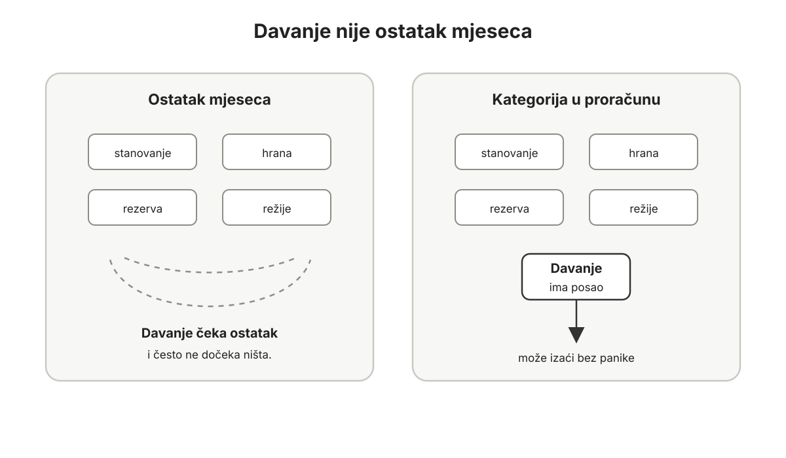
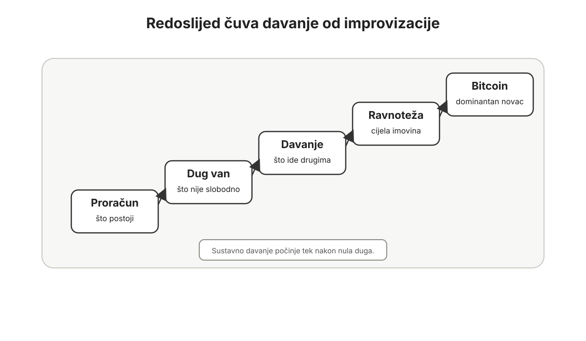
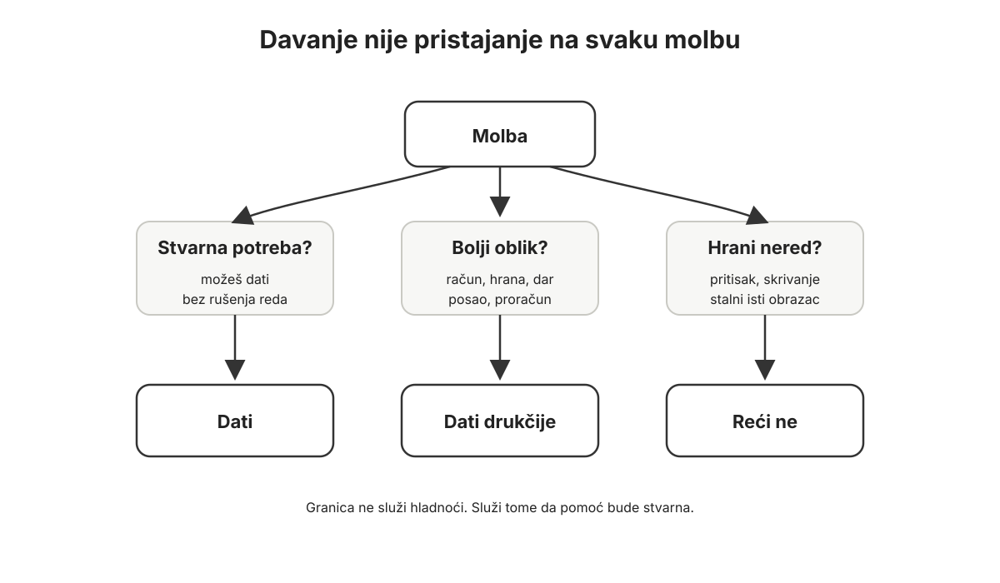
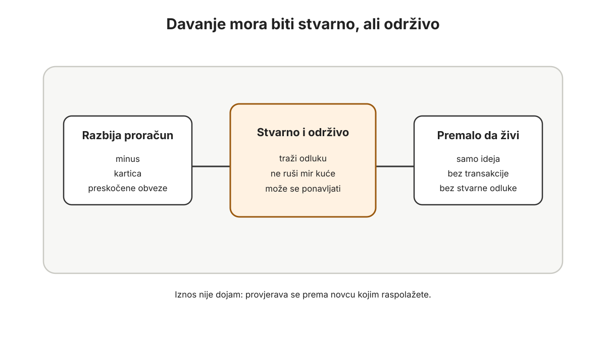
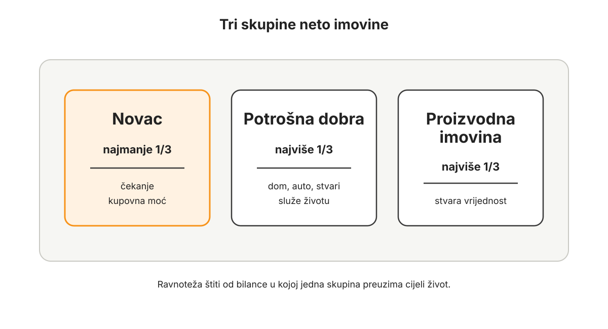

Predgovor
Ova knjiga zove se Bitcoin kao novac, a njezin podnaslov je: od držanja Bitcoina do uređenog sustava odluka.
To je najkraći opis onoga što sam pokušao napraviti: ne napisati još jednu knjigu koja čovjeka uvjerava da kupi Bitcoin, ne napisati knjigu o tradingu, ciklusima, brzom bogaćenju ili tome kako pogoditi sljedeći vrh, niti napisati tehnički priručnik za ljude koji žele postati stručnjaci za svaki detalj protokola.
Ova knjiga nastala je iz drukčijeg pitanja:
Što ako je Bitcoin stvarno novac?
Ne investicija koju držimo sa strane, ne “kripto” pozicija u aplikaciji, ne priča koju pratimo kada cijena raste i ne ideja s kojom se slažemo dok se život i dalje vodi po starim pravilima.
Nego novac.
Ako je Bitcoin novac, onda pitanje više nije samo koliko ga imamo. Pitanje je kako s njim živimo. Kako ga uklapamo u proračun. Kako se odnosimo prema dugu. Kako čuvamo višak. Kako dajemo. Kako gledamo dom, auto, posao, kapital, rizik, obitelj, budućnost i sigurnost. Kako donosimo odluke kada cijena raste, kada pada i kada se čini da se ništa ne događa.
Drugim riječima: kako Bitcoin prestaje biti stvar koju držimo i postaje novac oko kojega je uređen život?
To je pitanje ove knjige.
Zašto sam napisao ovu knjigu
Ovu knjigu nisam napisao zato što sam tražio novu temu.
Napisao sam je zato što više nisam mogao ne napisati je.
Iza mene je više od 10.000 sati proučavanja Bitcoina, novca, ekonomije, proračuna, duga, sigurnosti, tržišta i svega što se oko toga prirodno otvara. Dio tog vremena bio je čitanje, slušanje, računanje, promatranje ciklusa, proučavanje knjiga, modela i tehničkih objašnjenja. Dio je bio rad u Bitcoin industriji. Dio je bio učenje kroz vlastite odluke, pogreške, pauze, krive pretpostavke i postupno slaganje boljeg sustava.
Ali možda najvažniji dio nisu bili sati provedeni pred ekranom.
Najvažniji dio bili su razgovori.
Razgovarao sam s ljudima koji već imaju Bitcoin. S ljudima koji ga imaju malo i s ljudima kojima Bitcoin čini značajan dio imovine. S ljudima koji su duboko u temi, koji znaju argumente, čitaju knjige, razumiju proof of work, znaju razlikovati Bitcoin od “kripta” i već godinama žive s tom idejom. Razgovarao sam i s potpunim početnicima: ljudima koji su čuli za Bitcoin, ali ne znaju odakle početi; ljudima koji se boje volatilnosti; ljudima koji nemaju vremena proći stotine sati podcasta, knjiga, foruma i rasprava; ljudima koji jednostavno žele živjeti svoj život, raditi svoj posao, brinuti se za obitelj i koristiti bolji novac ako takav novac postoji.
Kroz sve te razgovore počeo se ponavljati isti obrazac.
Problem nije bio samo u tome da ljudi ne razumiju Bitcoin.
Problem je često bio dublji: manjak temeljnih principa upravljanja novcem i imovinom.
Bitcoin to ne rješava automatski.
Bitcoin može pomoći. Može otvoriti oči. Može promijeniti vremenski horizont. Može čovjeka natjerati da prvi put ozbiljno razmisli o novcu, inflaciji, dugu, štednji, radu i budućnosti. Ali Bitcoin sam po sebi ne uređuje proračun. Ne zatvara dug. Ne uči čovjeka davati. Ne određuje koliki dio imovine treba biti u novcu, potrošnim dobrima i proizvodnoj imovini. Ne čuva sam sebe. Ne sprječava paniku. Ne popravlja neurednu bilancu.
Bitcoin amplificira.
Pojačava ono što već postoji.
Ako čovjek ima red, Bitcoin može pojačati red. Ako ima strpljenje, Bitcoin može pojačati strpljenje. Ako zna razlikovati novac od investicije, Bitcoin može postati nevjerojatno snažan temelj imovine. Ako zna voditi proračun, zatvarati dug, davati, čekati i čuvati, Bitcoin može produbiti njegovu sposobnost da kroz vrijeme donosi bolje odluke.
Ali ako čovjek ima nered, Bitcoin može pojačati nered. Ako nema proračun, Bitcoin može postati još jedna stvar koja stvara pritisak. Ako je u dugu, volatilnost ga može natjerati da prodaje baš onda kada bi najradije držao. Ako ne zna zašto kupuje, cijena će ga voditi za nos. Ako ne zna čuvati ključeve, može izgubiti ono što je godinama slagao. Ako nema obiteljski sustav, Bitcoin može postati tajna jedne osobe umjesto novca koji služi obitelji.
To sam vidio dovoljno puta da više nisam mogao odgoditi pokušaj da sve artikuliram.
Ova knjiga je taj pokušaj.
Moja teza o Bitcoinu
Moja osobna teza je jednostavna, iako posljedice nisu male:
Bitcoin je najbolji novac koji je čovječanstvo ikada imalo priliku koristiti.
Ne tvrdim da ga je danas lako koristiti u svakoj situaciji. Ne tvrdim da je svatko spreman držati vlastite ključeve. Ne tvrdim da je volatilnost nevažna. Ne tvrdim da će prijelaz s fiat standarda na Bitcoin standard biti ravan, brz ili bezbolan. Ne tvrdim ni da je dovoljno kupiti Bitcoin i čekati.
Ali smatram da je Bitcoin monetarna tehnologija koja prvi put spaja ono što je kroz povijest bilo odvojeno.
Poput zlata, Bitcoin je tvrd novac. Njegovu ponudu nije moguće proizvoljno povećati zato što nekome treba više novca, zato što država ima deficit, zato što banka želi izdati više kredita ili zato što tržište traži više jedinica. Poput fiata, Bitcoin je digitalan i može putovati kroz prostor. Ali za razliku od fiata, Bitcoin nije dug. Nije nečije obećanje. Nije saldo koji postoji zato što netko drugi vodi knjigu i dopušta pristup. U vlastitom skrbništvu, Bitcoin je novac koji čovjek može držati izravno.
Zato Bitcoin ne vidim kao još jednu investiciju. Kada mijenjam eure za Bitcoin, ne doživljavam to kao ulaganje u istom smislu kao kupnju dionice, nekretnine, udjela u poslu ili stroja. To je prije razmjena slabijeg oblika novca za bolji oblik novca. Investiranje počinje onda kada novac — bilo euro, bilo Bitcoin — preuzme rizik u proizvodnoj imovini koja treba stvarati novu vrijednost.
Ta razlika u jeziku mijenja sve.
Ako je Bitcoin investicija, stalno pitamo kada kupiti, kada prodati, koliki je prinos i je li nešto drugo bolje raslo.
Ako je Bitcoin novac, pitamo nešto drugo: kako mjeriti rad, štednju, potrošnju, dug, davanje, imovinu i budućnost u novcu koji ne nastaje iz tuđeg duga?
Vjerujem da će se oko tog pitanja graditi velik dio civilizacije 21. stoljeća i kasnije. Vjerujem da će za nekoliko stotina godina ideja Bitcoin standarda ljudima biti mnogo manje kontroverzna nego što je danas. Ne zato što će svi čitati iste knjige, nego zato što će bolji novac kroz vrijeme promijeniti navike, institucije, obitelji, tržišta i način na koji ljudi razumiju budućnost.
Ali od danas do tada imamo još puno živjeti.
Računi i dalje dolaze svaki mjesec. Plaće su i dalje u eurima. Porezi se plaćaju u državnom novcu. Obitelji i dalje moraju razgovarati. Djeca trebaju hranu, školu, liječnika i tenisice. Poduzetnik mora platiti dobavljača, radnika i državu. Stanarina ne čeka power law. Kreditna kartica ne čeka halving. Bolest ne pita jeste li uvjereni u dugoročnu monetarnu tezu.
Zato ova knjiga ne počinje euforijom.
Počinje redom.
Za koga je ova knjiga
Ovu knjigu pišem za dvije skupine ljudi.
Prva skupina je primarna.
To su ljudi koji već imaju Bitcoin.
Možda ga imaju malo. Možda ga imaju puno. Možda im je Bitcoin jedan posto imovine, možda deset, možda pedeset, možda gotovo sve što smatraju novcem. Neki su ga kupili davno. Neki su ušli nedavno. Neki su prošli više ciklusa, neki još nisu doživjeli pravi pad. Neki znaju tehničke i ekonomske argumente bolje nego što ih ova knjiga može objasniti. Neki su već uvjereni da je Bitcoin najbolji novac, ali još uvijek ne znaju kako ga stvarno uklopiti u osobni, obiteljski ili poslovni život.
Njima ne treba prvenstveno još jedan dokaz da Bitcoin postoji s razlogom.
Njima treba pitanje:
Koristim li Bitcoin kao novac ili ga samo držim kao investiciju?
To pitanje može biti neugodno.
Jer ako Bitcoin stvarno postane novac, onda se mijenja odnos prema svemu ostalom. Proračun više nije sporedna tablica. Dug više nije normalna pozadina odraslog života. Davanje više nije ono što ostane nakon što se čovjek osjeća potpuno sigurno. Nekretnina više nije automatski “najsigurnija štednja”. Posao ne smije uvijek pojesti sav kapital. Volatilnost se ne rješava emocijom, nego sustavom. Skrbništvo nije detalj za kasnije, nego odgovornost koja mora odgovarati stvarnom iznosu i stvarnoj obitelji.
Neki dijelovi ove knjige ljudima koji već imaju Bitcoin možda se neće svidjeti na prvu.
Možda im se neće svidjeti koliko strogo govorim o dugu. Možda im se neće svidjeti redoslijed u kojem kažem: prvo proračun, zatim dug van, zatim davanje, zatim ravnoteža imovine, zatim Bitcoin kao dominantan novac, zatim skrbništvo i sigurnost. Možda im se neće svidjeti tvrdnja da kupnja Bitcoina uz potrošački dug nije puni Bitcoin standard. Možda im se neće svidjeti ideja da dio novca mora biti namijenjen davanju. Možda im se neće svidjeti da investicija na Bitcoin standardu mora zaslužiti mjesto pored samog Bitcoina.
Ali ako te principe prihvate i provedu, vjerujem da će dobiti puno više od “boljeg portfelja”.
Dobit će bolji sustav odlučivanja.
Postojeći Bitcoin počet će koristiti na način koji može povećati njihov stack, ali i njihovu ukupnu neto imovinu. Ne kroz žurbu, polugu i stalno traženje novog prinosa, nego kroz red, manju potrošnju budućnosti, bolje razdvajanje novca od potrošnih i proizvodnih dobara, veću sposobnost čekanja i ozbiljniju sigurnost.
A uz to postoji još nešto što se teže mjeri.
Postoji psihološko zadovoljstvo koje dolazi kada novac više nije magla. Kada dug više ne upravlja budućnošću. Kada davanje nije krivnja ni ostatak, nego kategorija. Kada čovjek zna zašto drži Bitcoin, kada ga ne mora prodavati iz panike i kada obitelj zna da postoji sustav, a ne samo uvjerenje jedne osobe.
To zadovoljstvo nije mala stvar.
Druga skupina su ljudi koji još nemaju Bitcoin ili su tek na početku.
Za njih ova knjiga može biti još korisnija, ako ju shvate na pravi način.
Ne mora svatko proći istu dubinu zečje rupe. Ne mora svatko odvojiti stotine ili tisuće sati na monetarnu povijest, austrijsku ekonomiju, kriptografiju, rudarenje, energetiku, forume, podcaste, cikluse, sigurnosne modele i rasprave o svakoj mogućoj temi koja se dotakne Bitcoina. Neki ljudi će to htjeti. Dobro je da postoje ljudi koji idu duboko. Ali većina ljudi ne želi svoj život pretvoriti u stalno istraživanje Bitcoina.
Većina ljudi želi živjeti.
Žele raditi svoj posao. Odgajati djecu. Brinuti se za roditelje. Platiti račune. Graditi obitelj. Voditi posao. Putovati. Pomagati. Učiti ono što im treba. I ako postoji bolji novac, žele ga koristiti bez toga da moraju postati monetarni povjesničari, softverski inženjeri i stručnjaci za globalne financije.
To je normalno.
Automobil koristimo bez toga da smo auto-inženjeri. Ne moramo znati projektirati motor da bismo vozili. Ali moramo znati dovoljno: kako se pali, kako se koči, kako se skreće, što znače znakovi, zašto se ne ulazi prebrzo u zavoj, zašto se ne vozi bez goriva, zašto se ne ignorira crvena lampica i zašto se auto ne ostavlja otključan na ulici s ključevima unutra.
Vozačka škola ne proizvodi inženjere.
Proizvodi ljude koji mogu sigurno koristiti snažnu tehnologiju u stvarnom svijetu.
Ova knjiga želi biti nešto slično za Bitcoin kao novac.
Ne moraš postati stručnjak za sve da bi Bitcoin postao tvoj primarni novac. Ali moraš naučiti dovoljno. Moraš razumjeti zašto Bitcoin vrijedi shvatiti ozbiljno. Moraš znati osnovnu ekonomsku i tehničku tezu. Moraš urediti proračun. Moraš razumjeti dug. Moraš znati zašto davanje nije sporedna tema. Moraš znati gdje Bitcoin pripada u ukupnoj imovini. Moraš znati što znači volatilnost. Moraš imati sigurnosni sustav koji odgovara tvojoj situaciji.
Bez toga Bitcoin može biti previše snažan alat u neuređenim rukama.
S time Bitcoin može postati novac koji mijenja život.
Vrijeme je najskuplji resurs
Danas nije najteže pronaći informacije.
Najteže je znati što je bitno.
Bitcoin ima beskonačno mnogo ulaza. Možeš krenuti od cijene, od inflacije, od povijesti zlata, od Satoshijevog whitepapera, od proof of worka, od Lightninga, od hardverskih novčanika, od makroekonomije, od bankarskog sustava, od državnog duga, od energetike, od rudarenja, od kripto prijevara, od burzi, od poreza, od nasljeđivanja, od ciklusa, od modela cijene, od priče o Salvadoru, od Michaela Saylora, od foruma, od grafova, od prijatelja koji je kupio ranije ili od vlastitog osjećaja da s novcem koji koristimo svaki dan nešto nije u redu.
Svaki ulaz otvara deset novih vrata.
Iza svakih vrata je nova rasprava.
To može biti korisno. Ali može i pojesti godine.
Ova knjiga pokušava kondenzirati dio tog puta. Ne tako da zamijeni sve druge knjige, nego da čitatelju da dovoljno dobar redoslijed. Ako poslije želi ići dublje u ekonomiju, neka čita The Bitcoin Standard. Ako želi dublje u tehniku, neka čita Inventing Bitcoin i druge tehničke materijale. Ako želi istraživati sigurnost, rudarenje, Lightning ili monetarnu povijest, imat će kamo ići.
Ali ne mora sve to napraviti prije nego što počne slagati vlastiti novac.
Ovdje ćemo iznijeti osnovnu tezu zašto Bitcoin vrijedi koristiti kao primarni novac — i s ekonomske i s tehničke strane. Objasnit ćemo zašto je novac važan, zašto fiat novac stvara posebne probleme, zašto je Bitcoin tvrd, zašto proof of work povezuje digitalni novac s energijom, radom i vremenom, što rudari rade, zašto su čvorovi važni, zašto je ograničena ponuda presudna i zašto Bitcoin nije isto što i “kripto”.
Ali nakon toga fokus se namjerno spušta na zemlju.
Na proračun.
Na dug.
Na davanje.
Na imovinu.
Na volatilnost.
Na sigurnost.
Jer čovjek ne živi u teoriji novca. Živi u mjesecu koji treba preživjeti, u obitelji koja treba razgovarati, u poslu koji treba odluke i u budućnosti koja se gradi malim ponavljanjima.
Kako je knjiga složena
Knjiga ima dva glavna dijela.
Prvi dio zove se Bezvremenski red u novcu.
Taj dio ne počinje Bitcoinom kao aplikacijom, burzom, novčanikom ili cijenom. Počinje s tri temeljna principa upravljanja novcem.
Prvi princip je proračun nulte razine.
To znači da novac koji sada postoji dobiva ime. Svaki euro, svaki satoshi, svaki stvarni saldo mora imati posao. Proračun ne počinje plaćom koja dolazi za pet dana, bonusom koji možda stiže ili rastom Bitcoina koji bi mogao riješiti problem. Počinje novcem koji je već tu.
Proračun nas uči da saldo nije isto što i slobodan novac. Na računu može stajati 2.000 eura, ali taj novac možda već pripada stanarini, režijama, hrani, prijevozu, dugu, zdravlju, registraciji auta, budućem trošku ili davanju. Tek kada novac dobije kategoriju, prestaje glumiti slobodu koju nema.
To je posebno važno za Bitcoin. Ako novac nema ime, Bitcoin lako postaje bijeg. Kupimo ga iz uvjerenja, ali onda ga prodamo zbog troška koji smo mogli vidjeti. Tada problem nije Bitcoinova volatilnost. Problem je proračun.
Drugi princip je razduživanje.
Ovo je možda najtvrđe poglavlje u knjizi.
Dug je budući novac koji je već potrošen. Dug znači da budući prihod više nije slobodan. Možemo ga zvati stambeni kredit, gotovinski kredit, leasing, minus, kartica, poslovna kreditna linija, dug prema rodbini ili investicija u rast. Ali ako budući novac već ima tuđe ime, onda nije slobodan.
U fiat svijetu dug često izgleda normalno. Kuća, stan, auto, apartman, oprema, sezona, kartica, rata, “samo dok se ne stabiliziramo”. Ali normalnost nije isto što i sloboda.
Ova knjiga zato postavlja tvrd standard: puni Bitcoin standard ne počinje dok budući novac nije slobodan.
To ne znači da su svi ljudi u istim okolnostima. Ne znači da je izaći iz duga lako. Ne znači da svatko može sve promijeniti preko noći. Ali znači da ne smijemo lagati o naravi duga. Dug je potrošena budućnost. A Bitcoin kao novac traži budućnost koja ponovno pripada čovjeku, obitelji ili poslu.
Treći princip je davanje novca.
Davanje nije ukras nakon što sve ostalo uspije. Davanje nije ostatak na kraju mjeseca. Davanje je kategorija.
Ali dolazi tek nakon duga.
To je važno. Dok dug stoji na bilanci, novac još nije potpuno slobodan. Čovjek može i dalje pomoći konkretnoj osobi u stvarnoj potrebi. Ako treba donijeti hranu, platiti lijek, pomoći roditelju ili susjedu, ne mora pitati tablicu smije li biti čovjek. Ali praksa sustavnog davanja u ovoj knjizi počinje nakon što dug izađe iz bilance.
Zašto je davanje toliko važno u knjizi o Bitcoinu?
Zato što dobar novac može čovjeka učiniti strpljivijim, ali ga ne čini automatski velikodušnijim. Ako Bitcoin postane novac, a davanje ne postane kategorija, osobni Bitcoin standard može postati samo dobro organiziran strah. Čovjek može sve bolje čuvati, sve bolje računati i sve teže pustiti novac prema drugome.
Davanje štiti od toga.
Dugoročno, davanje povećava sposobnost stvaranja vrijednosti za druge ljude. Uči nas vidjeti potrebe, prepoznati gdje novac može pomoći, razlikovati stvarnu pomoć od impulsa i ostati otvoren dok imovina raste. Ako Bitcoin vraća čovjeku mogućnost štednje kroz vrijeme, davanje ga podsjeća da novac nije samo za obranu vlastite budućnosti, nego i za služenje.
Drugi dio knjige zove se Bitcoin kao primarni novac.
Tu se pogled širi s mjesečnog proračuna na ukupnu imovinu.
Prvo dolazi ravnoteža imovine.
Imovinu promatramo kroz tri glavna dijela: novac, potrošna dobra i proizvodnu imovinu.
Novac je ono što čuva opcionalnost i kupovnu moć. Potrošna dobra su ono što koristimo za život: dom, auto, namještaj, uređaji, odjeća, stvari koje služe obitelji, udobnosti i svakodnevici. Proizvodna imovina je ono što može stvarati novu vrijednost: posao, alati, oprema, znanje, strojevi, sustavi, udjeli u produktivnim pothvatima.
U toj slici Bitcoin ima ulogu novca.
To je ključno. Bitcoin nije samo još jedna stavka u investicijskom portfelju. Ako je Bitcoin najbolji novac koji poznajemo, onda on postaje središte novčanog sloja imovine. Iz toga proizlaze ozbiljna pitanja. Koliko potrošnih dobara ima smisla držati ako se odričemo tvrdog novca? Kada je dom stvarno dom, a kada glumi štedni račun? Kada je auto alat, a kada status? Kada posao zaslužuje kapital, a kada samo traži još novca jer ne znamo čekati? Kada ulaganje u proizvodnu imovinu stvarno ima smisla pored Bitcoina?
Na Bitcoin standardu investicija mora zaslužiti mjesto pored novca.
Nakon toga dolazi poglavlje Bitcoin kroz vrijeme.
Tu govorimo o onome što mnoge najviše zanima: cijeni Bitcoina, očekivanom rastu, volatilnosti, ciklusima i mogućem “zakonu potencije”.
Ali ni to poglavlje nije napisano zato da bismo pogodili cijenu. Buduće cijene nisu obećanje. Modeli nisu proročanstva. Power law, trend, halving ritam i povijesni obrasci mogu pomoći da ne gledamo samo današnju cijenu, ali ne mogu zamijeniti proračun, likvidnost, sigurnost i zdrav razum.
Cilj je prevesti Bitcoin kroz vrijeme u svakodnevni jezik odluka.
Što znači ako je Bitcoin daleko iznad dugoročnog trenda? Što znači ako je ispod? Kako se ponašati kada svi oko nas zvuče nepobjedivo? Kako kada je sentiment težak, a cijena pada? Koji novac smije biti izložen volatilnosti, a koji ne smije? Kako planirati potrošnju, davanje, ulaganje i sigurnost ako vjerujemo da Bitcoin dugoročno može rasti u kupovnoj moći, ali znamo da kratkoročno može brutalno pasti?
Zatim dolazi skrbništvo i sigurnost.
Bitcoin daje čovjeku rijetku mogućnost: može držati novac bez banke, bez dopuštenja, bez posrednika i bez tuđeg obećanja. Ali ista osobina koja ga čini snažnim čini ga i ozbiljnim. Ako možeš sam držati novac, možeš ga i sam izgubiti. Ako nitko ne može zamrznuti tvoj Bitcoin, nitko ga ne može vratiti umjesto tebe ako izgubiš pristup. Ako transakcija nema službu za poništenje, onda sigurnost nije dodatak. Ona je dio novca.
Zato skrbništvo dolazi nakon svega ostalog.
Prvo treba znati što novac radi. Zatim treba osloboditi budućnost od duga. Zatim otvoriti kategoriju davanja. Zatim razumjeti ukupnu imovinu. Zatim gledati Bitcoin kroz vrijeme. Tek tada ima smisla graditi sigurnosni sustav koji odgovara stvarnoj osobi, stvarnoj obitelji, stvarnom poslu i stvarnom iznosu.
Sigurnost nije dogma. Nije natjecanje tko ima kompliciraniji setup. Nije ni ležerno držanje svega u aplikaciji. Sigurnost znači da je vrijednost zaštićena od pogrešnih ljudi i dostupna pravim ljudima u pravom trenutku.
To je obiteljsko, poslovno i ljudsko pitanje, ne samo tehničko.
Jezik ove knjige
Pokušao sam ovu knjigu napisati jezikom koji može razumjeti čovjek koji nema veliku pozadinu u ekonomiji, tehnologiji ili financijama.
To ne znači da ćemo izbjegavati važne termine.
Nećemo.
Koristit ćemo riječi poput fiat, proof of work, čvor, rudarenje, privatni ključ, javni ključ, hash, UTXO, oportunitetni trošak, neto imovina, likvidnost, volatilnost, power law, skrbništvo i kapitalna dobra.
Ali kada god se pojavi riječ koja bi čitatelju mogla biti nepoznata, pokušat ćemo je odmah objasniti. Ne zato da tekst bude spor, nego zato da čovjek može nastaviti čitati bez osjećaja da je zakasnio na razgovor.
Oni koji već razumiju pojmove mogu te dijelove proći brže. Oni koji ih prvi put susreću ne bi trebali morati otvarati deset drugih prozora da bi nastavili.
Ovo nije knjiga za dokazivanje tko je dublje u Bitcoinu.
Ovo je knjiga za korištenje Bitcoina kao novca.
Moj vlastiti put
Moj put do ovog pogleda nije bio ravan.
Ne mogu točno locirati dan kada sam prvi put čuo za Bitcoin. Bilo je rano, negdje između 2011. i 2013. U početku mi je izgledao kao čudna internetska stvar. Nešto između tehnologije, digitalnog eksperimenta i “play money” ideje.
Ozbiljnije mi se vratio 2014. godine. Tada sam prolazio kroz poduzetničko zasićenje i trebao sam predah. Čitao sam o Silk Roadu, Mt. Goxu, WikiLeaksu, ranim pričama o burzama, hakerima, državama i ljudima koji su oko Bitcoina već vodili ozbiljne rasprave. Ako se oko nečega pojavljuju tržišta, sukobi, pravni problemi, rizik, novac i ljudi koji o tome govore s neobičnom ozbiljnošću, onda možda ipak nije samo igra.
Tada sam prvi put kupio Bitcoin. Sjećam se cijene oko 600 dolara.
Ali nisam imao sustav.
Nisam imao proračun oko Bitcoina. Nisam znao kako ga uklopiti u neto imovinu. Nisam znao kako živjeti s volatilnošću. Nisam razumio sigurnost dovoljno zrelo. Nisam razumio razliku između “imam Bitcoin” i “Bitcoin je moj novac”.
Zato je moj put uzeo pauzu.
Bitcoin mi se snažno vratio 2017. godine, kada je cijena ponovno ušla u javnost i kada sam vidio što se dogodilo s nečim što sam ranije gledao oko 600 dolara. Kao i mnogi, prošao sam kratku altcoin fazu. Pitao sam se je li Bitcoin možda zastario, postoje li brži, bolji, noviji projekti. Bear market 2018. bio je dobro čišćenje iluzija. Nije bio ugodan, ali je bio koristan.
Nakon toga došle su ozbiljnije knjige, podcasti, The Bitcoin Standard, rad u Bitcoin prostoru, dublje razumijevanje razlike između Bitcoina i kripta, i sve jasniji osjećaj da Bitcoin nije tehnološka zanimljivost nego monetarni fenomen.
Paralelno s tim, kroz vođenje proračuna, rad, obitelj, razgovore, vlastite odluke, primanje dijela prihoda u Bitcoinu, prodaje, kupnje, greške, sigurnosne lekcije te vlastita i tuđa iskustva kojima sam svjedočio, sve više mi je postajalo jasno da Bitcoin traži puno više od uvjerenja.
Možeš imati dobru tezu i loš sustav.
Možeš biti u pravu oko Bitcoina i svejedno donositi loše odluke s novcem.
Možeš znati zašto je fiat problem, a i dalje živjeti kao fiat čovjek: bez proračuna, s dugom, bez davanja, s imovinom zaključanom u stvarima koje ne daju mir, s Bitcoinom koji je mentalno investicija, a ne novac.
Ova knjiga je pokušaj da skratim taj put drugima.
Ne iz pozicije nepogrešivosti. Ne kao guru. Ne kao netko tko nikada nije krivo procijenio. Nego kao netko tko je dovoljno dugo gledao istu temu iz dovoljno kutova da vidi obrazac koji se ponavlja.
Bitcoin kao novac traži red u životu.
A red u životu treba služiti čovjeku, obitelji, radu i davanju.
Bitcoin je kao struja
Volim usporedbu Bitcoina sa strujom.
Ne zato što je savršena, nego zato što pomaže uhvatiti fazu u kojoj se nalazimo.
Struja je bila izvanredno korisna prije nego što ju je većina ljudi znala sigurno koristiti. Mogla je osvijetliti grad, pokrenuti tvornicu, promijeniti kuću i povećati ljudsku produktivnost. Ali prije standarda, prekidača, osigurača, utičnica, instalacija, znanja i navika, struja je bila opasna. Nije bila manje važna zato što ju je bilo teško koristiti. Ali je tražila priručnike, majstore, pravila i oprez.
Bitcoin je monetarna struja.
Može prenijeti vrijednost kroz prostor, preko granica i kroz vrijeme. Može čovjeku dati novac koji nije ničiji dug. Može obitelji dati dugoročni standard štednje. Može poduzetniku dati bolju riznicu. Može društvu vratiti vezu između rada, vremena, energije i novca.
Ali ne oprašta neznanje.
Ako kupuješ Bitcoin novcem koji ti treba za sljedeća tri mjeseca, volatilnost te može kazniti. Ako ga držiš na krivom mjestu, možeš ga izgubiti. Ako se zadužuješ dok slažeš stack, budućnost ti možda nije slobodna. Ako držiš Bitcoin dok imaš dug, rast cijene Bitcoina potaknut će te na još veće zaduživanje. Ako nemaš proračun, Bitcoin može postati još jedan izvor napetosti. Ako nitko u obitelji ne zna što se događa, tvoj “suvereni novac” može postati obiteljska ranjivost.
Zato ova knjiga nije samo argument za Bitcoin.
Ona je priručnik za sigurno i produktivno korištenje Bitcoina kao novca.
Ne tvrdim da je priručnik završen za sva vremena. Bitcoin će se razvijati. Alati će se mijenjati. Regulacija će se mijenjati. Sigurnosni modeli će se poboljšavati. Ljudi će učiti. Ali osnovni redoslijed koji ova knjiga postavlja neće brzo zastarjeti.
Prvo sadašnji novac mora dobiti ime.
Zatim budući novac mora prestati biti tuđi.
Zatim dio novca mora biti otvoren prema drugima.
Zatim treba znati što je novac, što su potrošna dobra i što je proizvodna imovina.
Zatim Bitcoin treba gledati kroz vrijeme, a ne samo kroz cijenu.
Zatim ga treba čuvati tako da preživi stvarni život.
To nije glamurozno.
Ali je moćno.
Kako čitati ovu knjigu
Nemojte ovu knjigu čitati kao poziv na žurbu.
Ne pokušavajte sve provesti u jednom vikendu. Ne mijenjajte obiteljski život jednom rečenicom. Ne koristite budući rast Bitcoina kao opravdanje za današnji nered. Ne preskačite poglavlja koja vam se čine manje zanimljivima samo zato što vas više privlači cijena, sigurnost ili projekcija budućnosti.
Redoslijed je dio metode.
Ako već imate Bitcoin, čitajte s pitanjem: gdje moj postojeći sustav nije dorastao novcu koji držim?
Ako nemate Bitcoin, čitajte s pitanjem: što moram urediti da bih ga mogao koristiti kao novac, a ne kao emocionalnu okladu?
Ako ste poduzetnik, čitajte s pitanjem: gdje moj posao troši budućnost i gdje Bitcoin može postati riznica, a ne špekulacija?
Ako ste muž, žena, roditelj ili član obitelji u kojoj jedna osoba razumije Bitcoin više od drugih, čitajte s pitanjem: kako ovo pretvoriti iz privatnog uvjerenja u obiteljski sustav?
Ova knjiga ne zamjenjuje osobni financijski, porezni, pravni ili investicijski savjet. Ne poznaje vašu cijelu situaciju. Ne zna vaše obveze, brak, posao, porezni status, zdravstvene okolnosti, nasljedne odnose ni sve rizike koje nosite. Ali može dati okvir. Može postaviti redoslijed. Može pokazati pitanja koja vrijedi postaviti prije odluka.
Najvažnije: može pomoći da Bitcoin ne koristite kao bijeg od stvarnosti, nego kao bolji novac unutar stvarnosti.
Početak
Bitcoin može biti temelj civilizacije u 21. stoljeću.
Ali za vas ne počinje civilizacijom.
Počinje saldom koji sada imate.
Počinje računima koji čekaju.
Počinje dugom koji možda stoji u pozadini.
Počinje kategorijom koju još niste imenovali.
Počinje razgovorom s osobom s kojom dijelite život.
Počinje pitanjem što vaš novac mora napraviti prije sljedeće uplate.
Ako Bitcoin jednog dana postane globalni standard, povijest će možda pisati o protokolu, rudarenju, državama, institucijama, cijenama, energetskim tržištima i velikim prijelazima. Ali osobni Bitcoin standard neće početi u povijesnoj knjizi.
Počet će za kuhinjskim stolom.
Otvorenom aplikacijom.
Komadom papira.
Iskrenim pogledom u vlastiti novac.
I prvom odlukom da budućnost više ne trošimo prije nego što stigne.
Zašto Bitcoin kao novac
Bitcoin se često prvi put susretne kroz cijenu.
Netko čuje da je „narastao”. Netko drugi čuje da je „pao”. Jedan ga vidi kao investiciju, drugi kao špekulaciju, treći kao tehnološki eksperiment, četvrti kao internetski novac za ljude koji ne vjeruju bankama. Sve to može biti dio priče, ali ništa od toga nije početak priče.
Početak je pitanje: što je novac?
Ako čovjek ne razumije novac, Bitcoin mu izgleda kao broj na ekranu. Ako razumije novac, Bitcoin počinje izgledati kao nešto puno veće: pokušaj da se ljudima vrati novac koji nije ničiji dug, ničija politička naredba i ničija privilegija.
To ne znači da će svatko odmah koristiti Bitcoin kao svakodnevni novac. Ne znači ni da je Bitcoin jednostavan, bez rizika ili spreman za svakoga u svakoj situaciji. Naprotiv. Bitcoin je tehnologija koja daje veliku slobodu, ali i veliku odgovornost. U tom smislu Bitcoin je danas sličan struji u njezinim ranim godinama.
Struja je bila golemo civilizacijsko otkriće prije nego što ju je većina ljudi znala sigurno koristiti. Prije prekidača, osigurača, standarda, utičnica, uputa i navika, struja je bila korisna, ali opasna. Mogla je osvijetliti grad, pokrenuti tvornicu i promijeniti život obitelji, ali se njome nije smjelo rukovati nepažljivo.
Bitcoin je monetarna struja. Može prenijeti vrijednost kroz prostor, preko granica i kroz vrijeme, bez dopuštenja banke, države ili posrednika. Ali kao i struja, ne oprašta neznanje. Ako izgubiš privatne ključeve, ne postoji služba za korisnike koja ti ih vraća. Ako kupiš Bitcoin novcem koji ti treba za stanarinu, hranu ili otplatu duga, volatilnost te može natjerati na lošu odluku. Ako ga koristiš bez plana, Bitcoin ti neće nužno donijeti slobodu. Može ti samo pojačati nered koji već postoji u tvom novcu.
Zato ova knjiga nije samo knjiga o Bitcoinu. Ovo je priručnik za korištenje Bitcoina kao novca na siguran i produktivan način.
Da bismo do toga došli, prvo moramo razumjeti zašto bi Bitcoin uopće mogao biti superioran novac.
Novac nije isto što i bogatstvo
Ljudi često koriste riječ „novac” kao da je isto što i bogatstvo. Ali novac nije bogatstvo samo po sebi. Bogatstvo su hrana, kuće, alati, strojevi, znanje, energija, odnosi, zemlja, vrijeme i proizvodi ljudskog rada. Novac je sredstvo kojim to bogatstvo mjerimo, čuvamo i razmjenjujemo.
Novac postoji zato što izravna razmjena ne može nositi složenu ekonomiju. Ako ja imam cipele, a trebam kruh, moram pronaći pekara koji baš sada treba cipele. To se zove problem dvostruke podudarnosti potreba. Novac rješava taj problem tako što postaje dobro koje ljudi prihvaćaju ne zato što ga žele potrošiti izravno, nego zato što znaju da će ga drugi prihvatiti kasnije.
Dobar novac zato mora biti utrživ. Utrživost znači da nešto možeš lako zamijeniti za druga dobra bez velikog gubitka vrijednosti. Dobar novac je utrživ kroz tri dimenzije.
Prva je utrživost kroz prostor: možeš li ga poslati ili prenijeti daleko? Druga je utrživost kroz vrijeme: može li zadržati kupovnu moć u budućnosti? Treća je utrživost kroz veličinu: možeš li ga koristiti i za male i za velike transakcije?
Ako novac dobro putuje kroz prostor, ali loše čuva vrijednost kroz vrijeme, ljudi ga mogu koristiti za plaćanja, ali ne žele u njemu štedjeti. Ako dobro čuva vrijednost kroz vrijeme, ali ga je teško prenijeti kroz prostor, ljudi ga žele držati, ali im za trgovinu trebaju posrednici. Povijest novca može se čitati kao povijest traženja dobra koje najbolje rješava te tri dimenzije.
Zlato je stoljećima pobjeđivalo zato što ga je teško proizvesti, ne trune, lako se prepoznaje, dijeli se na manje jedinice i nitko ga ne može stvoriti političkom odlukom. Zlato je bilo tvrd novac.
Tvrdi novac je novac čiju ponudu nije lako povećati. Ako ljudi počnu više cijeniti zlato, rudari ne mogu preko noći stvoriti deset puta više zlata. Moraju pronaći nalazišta, kopati, trošiti energiju, vrijeme i kapital. Upravo zato zlato dobro čuva vrijednost kroz vrijeme.
Ali zlato ima problem: fizičko je. Teško ga je slati preko oceana. Teško ga je koristiti u digitalnoj ekonomiji. Teško ga je nositi, provjeravati i čuvati u velikim količinama. Kako je svjetska trgovina rasla, zlato je završavalo u trezorima, a ljudi su počeli razmjenjivati potvrde, bankovne zapise i dugove koji su predstavljali zlato. U jednom trenutku novac više nije bio zlato u ruci, nego obećanje da netko negdje drži zlato.
Tu počinje moderna priča o fiatu.
Fiat: novac kao obećanje budućeg novca
Fiat novac je novac koji vrijedi zato što ga nameće politički i bankarski sustav. To nije samo papirnata novčanica. Danas je većina fiat novca digitalni zapis u bankovnim knjigama. Ali bit fiat sustava nije u tome je li novac papirnat ili digitalan. Bit je u tome što se fiat novac stvara kroz dug.
Kada banka odobri kredit, ona najčešće ne uzima već postojeći novac nekog štediše i predaje ga dužniku. Ona stvara novi depozit. Drugim riječima, u sustav ulazi novi novac jer je netko obećao da će u budućnosti vratiti novac. Budući novac počinje se tretirati kao sadašnji novac.
To je srce fiat standarda: obećanja buduće isplate koriste se kao sadašnji novac.
Zato fiat sustav prirodno potiče dug. Ako se novi novac stvara kreditom, tada oni koji mogu stvarati ili dobivati kredit imaju prednost. Banke, države, velike korporacije i financijski bliski igrači dolaze do novog novca prije drugih. Oni mogu kupovati imovinu, plaćati troškove i širiti svoje bilance prije nego što rast ponude novca prođe kroz cijene. Oni koji samo štede u novcu dobivaju drugi kraj štapa: njihov novac se razrjeđuje.
To ne znači da je svaki kredit loš. Kredit može biti koristan kada netko tko je već odgodio potrošnju posudi stvarno ušteđenu vrijednost nekome tko ju može produktivno upotrijebiti. Problem nastaje kada se kredit pretvori u sam novac, a dug postane temelj monetarnog sustava.
Tada cijela kultura počinje trošiti budućnost u sadašnjosti.
Obitelj kupuje kuću budućim prihodima. Student kupuje obrazovanje budućim prihodima. Država kupuje politički mir budućim porezima. Korporacija kupuje rast budućim novčanim tokovima. S vremenom sve više odluka postaje ovisno o tome može li se dug refinancirati, može li se kamata podnijeti i može li se budućnost još malo povući u sadašnjost.
Fiat novac zato nije neutralan alat. On mijenja ponašanje. Ako novac stalno gubi vrijednost, štednja postaje kažnjena. Ako je dug sustavno nagrađen, razduživanje izgleda iracionalno. Ako se novac stvara bez jasnog oportunitetnog troška, ljudi gube osjećaj da svaka odluka ima cijenu.
Oportunitetni trošak znači: najbolja propuštena alternativa. Ako potrošim sto eura danas, ne gubim samo sto eura. Gubim sve ono što je tih sto eura moglo postati da sam ih čuvao, uložio ili dao nekoj drugoj namjeni. Zdrav novac nas stalno podsjeća na oportunitetni trošak. Loš novac ga skriva.
Fiat je imao jednu veliku prednost: dobro je putovao kroz prostor. Bankovni zapisi, kartice, SWIFT, centralne banke i platne mreže omogućile su globalnu trgovinu bez stalnog premještanja fizičkog zlata. Ali cijena te prostorne učinkovitosti bila je ogromna: novac je postao dug, štednja je oslabjela, a upravljanje novcem sve se više pretvorilo u upravljanje obvezama.
Bitcoin pokušava riješiti upravo taj problem: zadržati digitalnu prostornu utrživost fiata, ali vratiti tvrdoću novca koju je imalo zlato.
Bitcoin kao digitalni tvrdi novac
Bitcoin je digitalni novac s unaprijed poznatom i strogo ograničenom ponudom. Nikada neće postojati više od 21 milijun bitcoina. Svaki bitcoin dijeli se na 100 milijuna manjih jedinica koje se zovu satoshiji. Jedan satoshi je najmanja osnovna jedinica Bitcoina.
To ograničenje nije obećanje kompanije. Nije politika centralne banke. Nije zakonska uredba. To je pravilo protokola koje provjeravaju tisuće računala u mreži. Ako netko pokuša stvoriti više bitcoina nego što pravila dopuštaju, čvorovi ga odbijaju.
Čvor je računalo koje pokreće Bitcoin softver i samostalno provjerava pravila mreže. Čvor provjerava jesu li transakcije valjane, jesu li potpisi ispravni, pokušava li netko potrošiti isti bitcoin dvaput, je li blok ispravno rudaren i stvara li rudar više novih bitcoina nego što smije.
To je ključna razlika između Bitcoina i fiat sustava. U fiat sustavu korisnik na kraju mora vjerovati instituciji koja vodi knjigu. U Bitcoinu korisnik može sam provjeravati knjigu. Ne mora vjerovati da je ponuda ograničena. Može pokrenuti čvor i provjeriti.
Bitcoin nije samo digitalna verzija zlata. Bitcoin je digitalni tvrdi novac koji se može slati internetom.
Zlato je tvrdo, ali fizičko. Fiat je digitalan, ali mekan. Bitcoin pokušava biti tvrd i digitalan u isto vrijeme.
To je Bitcoinova monetarna teza u jednoj rečenici.
Problem digitalnog novca: kako spriječiti dvostruku potrošnju?
Da bismo razumjeli zašto je Bitcoin tehnološki važan, moramo razumjeti problem koji rješava.
Digitalne stvari lako se kopiraju. Ako ti pošaljem fotografiju, ja ju i dalje mogu imati. Ako ti pošaljem PDF, ja mogu zadržati kopiju. To je korisno za informacije, ali katastrofalno za novac. Ako digitalni novac mogu kopirati, onda ga mogu potrošiti dvaput.
To se zove problem dvostruke potrošnje.
Prije Bitcoina, digitalni novac je taj problem rješavao centralnim posrednikom. Banka, kartična kuća ili platna institucija vodi glavnu knjigu i odlučuje koja je transakcija valjana. Ako pokušam isti novac potrošiti dvaput, posrednik odlučuje koja transakcija vrijedi.
Bitcoin je prvi sustav koji je praktično riješio taj problem bez centralnog posrednika.
Ne tako da je uklonio knjigu, nego tako da je knjigu učinio javnom, provjerljivom i jako skupom za krivotvorenje.
Privatni ključevi, javni ključevi i potpisi
Bitcoin se temelji na kriptografiji. Kriptografija je znanost o sigurnoj komunikaciji i matematičkom dokazivanju. U Bitcoinu ona omogućuje da dokažeš pravo trošenja bez otkrivanja tajne kojom trošiš.
Svaki korisnik ima privatni ključ. Privatni ključ je tajni broj koji daje kontrolu nad bitcoinima. Iz privatnog ključa može se izvesti javni ključ, a iz javnog ključa adresa. Adresa je nešto poput javne lokacije na koju drugi mogu poslati bitcoin.
Kada trošiš bitcoin, tvoj novčanik napravi digitalni potpis. Digitalni potpis je matematički dokaz da osoba koja šalje transakciju zna privatni ključ, ali bez otkrivanja tog ključa. Mreža može provjeriti potpis javnim informacijama, ali ne može iz potpisa izračunati privatni ključ.
Zato u Bitcoinu vlasništvo znači kontrola privatnog ključa.
Ako držiš privatne ključeve, imaš izravnu kontrolu nad bitcoinima. Ako ih ne držiš, nego ih za tebe drži burza, aplikacija ili skrbnik, tada nemaš bitcoin u najstrožem smislu. Imaš potraživanje prema nekome tko obećava da će ti bitcoin isporučiti kada ga zatražiš.
Ta razlika je presudna. Bitcoin ponovno odvaja sadašnji novac od obećanja budućeg novca. Bitcoin u vlastitom skrbništvu je sadašnja imovina. Bitcoin na tuđoj platformi je kreditni odnos.
UTXO: Bitcoin nije bankovni račun
Bitcoin se često zamišlja kao sustav računa: „imam 0,1 BTC na svom računu”. To je korisna mentalna slika za početak, ali tehnički nije točna.
Bitcoin koristi model koji se zove UTXO. To je kratica od unspent transaction output, što znači nepotrošeni izlaz transakcije. Jednostavnije: Bitcoin se sastoji od „komadića” vrijednosti koji su nastali u prethodnim transakcijama i još nisu potrošeni.
Ako ti netko pošalje 0,05 BTC, u mreži nastaje jedan nepotrošeni izlaz od 0,05 BTC koji možeš potrošiti samo ti, jer samo ti imaš privatni ključ koji odgovara uvjetima tog izlaza. Kada kasnije želiš potrošiti 0,02 BTC, tvoj novčanik uzima taj izlaz od 0,05 BTC kao ulaz nove transakcije, šalje 0,02 BTC primatelju, a ostatak vraća tebi kao novi izlaz. Taj ostatak zove se „kusur”, isto kao kad platiš novčanicom većom od cijene proizvoda.
Ovo je važno jer pokazuje da Bitcoin nije samo tablica salda. Bitcoin je lanac provjerljivih prijenosa vlasništva.
Transakcije, mempool i blokovi
Kada pošalješ bitcoin, tvoj novčanik sastavlja transakciju i potpisuje ju privatnim ključem. Ta transakcija zatim putuje mrežom. Čvorovi ju primaju i provjeravaju.
Ako je ispravna, ulazi u mempool. Mempool je privremena čekaonica za valjane, ali još nepotvrđene transakcije. Svaki čvor ima svoj mempool. To nije centralna baza podataka, nego skup transakcija koje čekaju da ih rudari uključe u blok.
Blok je paket transakcija. Otprilike svakih deset minuta jedan rudar pronađe valjan blok i pošalje ga mreži. Čvorovi tada provjeravaju cijeli blok. Ako je blok valjan, dodaju ga u svoj lanac blokova.
Blockchain je lanac blokova. Svaki blok sadrži kriptografski otisak prethodnog bloka. Taj otisak zove se hash.
Hash je rezultat matematičke funkcije koja od bilo kakvih podataka napravi kratak digitalni otisak. Ako promijeniš i najmanji detalj u podacima, hash se potpuno promijeni. Hash je lako provjeriti, ali ga je praktično nemoguće unaprijed pogoditi. Upravo ta osobina omogućuje proof of work.
Rudarenje nije „stvaranje Bitcoina iz ničega”
Bitcoin mining, ili rudarenje, često se objašnjava kao proces stvaranja novih bitcoina. To je djelomično točno, ali nije dovoljno.
Rudari rade tri stvari.
Prvo, skupljaju valjane transakcije u blok. Drugo, natječu se tko će prvi pronaći dokaz rada za taj blok. Treće, ako uspiju, dobivaju nagradu: nove bitcoine po pravilima protokola i transakcijske naknade iz transakcija u bloku.
Dokaz rada, odnosno proof of work, znači da je rudar morao potrošiti stvarnu računalnu energiju kako bi pronašao valjano rješenje. Rudari ne rješavaju zadatak jednom pametnom formulom. Oni pokušavaju golemi broj mogućnosti. Mijenjaju jedan broj u bloku, koji se zove nonce, i stalno računaju hash dok ne pronađu hash koji je dovoljno „nizak”, odnosno koji zadovoljava cilj težine.
Nonce znači „number used once”, broj koji se koristi jednom. U rudarenju je to broj koji rudar mijenja kako bi dobio drugačiji hash.
Važno je razumjeti asimetriju: teško je pronaći valjan dokaz rada, ali ga je lako provjeriti. Rudar može potrošiti mnogo energije i vremena da pronađe blok. Čvor može u djeliću sekunde provjeriti je li blok stvarno valjan.
Tu je genijalnost Bitcoina. On čini pokušaj prijevare skupim, a provjeru jeftinom.
U fiat sustavu, moć nad knjigom proizlazi iz političke, pravne i vojne moći. U Bitcoinu, pravo predlaganja sljedećeg bloka mora se kupiti radom. Ali ni tada rudar ne može promijeniti pravila. Može samo predložiti blok. Čvorovi ga prihvaćaju ili odbijaju.
Rudari nisu vladari Bitcoina. Rudari su ponuđači blokova. Čvorovi su suci pravila.
Podešavanje težine: srce Bitcoinove monetarne politike
Ako cijena Bitcoina naraste, više rudara želi rudariti. U običnom tržištu, kada nešto postane profitabilnije proizvoditi, proizvodnja raste. Ako poraste cijena bakra, rudnici pokušavaju proizvesti više bakra. Ako poraste cijena pšenice, poljoprivrednici sade više pšenice.
Kod Bitcoina to ne funkcionira tako.
Ako se više rudara uključi, blokovi bi se u početku pronalazili brže. Ali Bitcoin svakih 2016 blokova, otprilike svaka dva tjedna, automatski podešava težinu rudarenja. Ako su blokovi dolazili prebrzo, težina raste. Ako su dolazili presporo, težina pada. Cilj je da prosječno vrijeme između blokova ostane oko deset minuta.
To znači da povećana potražnja za Bitcoinom ne stvara više bitcoina. Ona stvara više sigurnosti. Više rudara znači više energije i računalne snage koja štiti povijest transakcija, ali raspored izdavanja novih bitcoina ostaje isti.
To je razlog zašto je Bitcoin jedinstven monetarni fenomen. On je digitalna roba čija se proizvodnja ne može povećati zato što je cijena porasla. Kod svih drugih roba veća potražnja potiče veću ponudu. Kod Bitcoina veća potražnja potiče veću sigurnost.
Novi bitcoini ulaze u opticaj kroz nagradu za blok. Ta nagrada se otprilike svake četiri godine prepolavlja. To se zove halving. Prepolavljanje postupno smanjuje stopu izdavanja novih bitcoina dok se ne približimo maksimalnoj ponudi od 21 milijun.
Zato Bitcoin nije samo „rijedak”. Njegova je rijetkost programabilna, javna i provjerljiva.
Energija, snaga, rad i vrijeme
Bitcoin koristi energiju. To nije greška. To je temelj dizajna.
Energija je sposobnost obavljanja rada. Snaga je brzina kojom se energija koristi. Rad je potrošnja energije kroz vrijeme za postizanje nekog učinka. Proof of work povezuje digitalnu knjigu s fizičkim svijetom tako što zahtijeva da se za pravo predlaganja blokova potroši stvarna energija, stvarna oprema i stvarno vrijeme.
Bez tog troška, digitalnu knjigu bilo bi lako napadati. Ako je jeftino predlagati lažne povijesti, ljudi će ih predlagati. Ako je jeftino stvarati nove jedinice novca, netko će ih stvarati. Ako je jeftino mijenjati pravila, pravila će se mijenjati.
Bitcoin kaže: možeš pokušati, ali moraš platiti tržišnu cijenu rada.
Ovdje se često javlja prigovor: „Ali taj rad nije koristan.” To promašuje poantu. Rudarenje nije korisno zato što proizvodi neki drugi izračun koji bismo mogli koristiti za znanost, medicinu ili vremensku prognozu. Korisno je zato što čini monetarnu povijest skupom za krivotvorenje.
Kao što brava nije korisna zato što proizvodi toplinu, nego zato što čini provalu skupljom, tako proof of work nije koristan zato što „računa nešto zanimljivo”, nego zato što čini prijevaru skupljom od poštenog sudjelovanja.
Bitcoin rudarenje također ima posebnu osobinu: može se odvijati gotovo bilo gdje gdje postoje struja i internet. Rudari se natječu za najjeftiniju energiju jer je energija njihov najveći trošak. To ih prirodno gura prema izvorima energije koji su jeftini, viškovni, udaljeni, slabo iskorišteni ili teško prenosivi. Bitcoin ne traži da se energija dovede u veliki grad kako bi bila monetizirana. Rudar može doći do energije.
To ne znači da je svako rudarenje automatski dobro, jeftino ili bez oportunitetnog troška. Oportunitetni trošak energije ovisi o mjestu i vremenu. Ako se energija može bolje iskoristiti za kućanstva, industriju ili grijanje, tada Bitcoin mora konkurirati tim potrebama. Ali ako je energija udaljena, viškovna ili bi se inače bacila, Bitcoin može postati kupac zadnjeg utočišta. On može pretvoriti lokalno neiskorištenu energiju u globalno utrživ novac.
To je jedan od najvažnijih razloga zašto je Bitcoin drukčiji od fiata. Fiat monetizira dug. Bitcoin monetizira energiju, rad i vrijeme.
Bitcoin kao sustav pravila bez vladara
U fiat sustavu pravila novca mogu se promijeniti. Kamatne stope, količina novca, bankovna pravila, uvjeti spašavanja banaka, zamrzavanje računa, kapitalne kontrole i monetarna politika ovise o institucijama. Te institucije čine ljudi. Ljudi imaju interese, strahove, pritiske i poticaje.
Bitcoin ne uklanja ljudsku prirodu. On ju ograničava pravilima koja svatko može provjeriti.
Svatko može pokrenuti čvor. Svatko može pokušati rudariti. Svatko može primiti transakciju. Svatko može poslati transakciju ako ima privatne ključeve. Svatko može pročitati pravila. Nitko ne može jednostavno nazvati Bitcoin i tražiti da mu se poništi transakcija, poveća saldo ili promijeni maksimalna ponuda.
To je značenje izraza „pravila bez vladara”.
Naravno, Bitcoin nije magija. Softver pišu ljudi. Novčanike izrađuju ljudi. Burze vode ljudi. Drugi slojevi i skrbničke usluge uvode nove rizike. Ljudi mogu pogriješiti, izgubiti ključeve, pasti na prijevaru, preuzeti prevelik rizik ili pogrešno razumjeti tehnologiju. Ali bazni sloj Bitcoina radi nešto što prije nije postojalo: omogućuje globalni monetarni sustav u kojem se konačno poravnanje može dogoditi bez centralnog izdavatelja.
Konačno poravnanje znači da je transakcija završena u osnovnom novcu, a ne samo u nečijem obećanju. Kada plaćaš karticom, konačno poravnanje ne događa se u trenutku kada vidiš kvačicu na ekranu. Iza toga stoje banke, kartične mreže, rokovi, mogućnost povrata, naknade i međubankovno poravnanje. Kada Bitcoin transakcija dobije dovoljno potvrda na lancu, ona postaje dio javne povijesti koju bi napadač morao ponovno izgraditi skupljim radom da bi ju promijenio.
Potvrda znači da je transakcija uključena u blok. Svaki novi blok nakon toga dodaje novu potvrdu. Što je više potvrda, to je skuplje promijeniti povijest.
Bitcoinova konačnost nije metafizički apsolutna. Ona je ekonomska. Nakon dovoljno potvrda, promjena povijesti postaje toliko skupa i nepraktična da ju korisnici tretiraju kao konačnu.
Zašto Bitcoin nije samo „još jedna kriptovaluta”
Mnogi ljudi prvi put upoznaju Bitcoin zajedno s tisućama drugih „kripto” projekata. To stvara zbrku. Ako postoji tisuće tokena, zašto bi Bitcoin bio poseban?
Odgovor je u svrsi i pravilima.
Bitcoin nije nastao kao kompanija koja izdaje tokene kako bi financirala razvoj proizvoda. Nije nastao s marketinškim timom, upravom, zakladom ili obećanjem prinosa. Bitcoin je nastao kao otvoreni monetarni protokol. Njegova ključna inovacija nije „blockchain” kao baza podataka, nego digitalna oskudica bez centralnog izdavatelja.
Mnogi kripto projekti pokušavaju optimizirati brzinu, aplikacije, fleksibilnost, pametne ugovore ili neke druge funkcije. Neke od tih stvari mogu biti tehnički zanimljive. Ali često dolaze uz cijenu: veće povjerenje u osnivače, manje decentralizacije, promjenjivu monetarnu politiku, složenije napade ili veću ovisnost o infrastrukturi.
Bitcoin je konzervativan jer pokušava biti novac. Novac ne treba stalno mijenjati pravila. Novac treba biti pouzdan. Što više vrijednosti ljudi spremaju u monetarni sustav, to je važnije da se pravila ne mijenjaju lako.
Kod aplikacije, promjena može biti prednost. Kod novca, promjenjivost pravila može biti katastrofa.
Pitanja tvrdog novca
Kada se netko prvi put susretne s idejom tvrdog novca, prirodno se vraća nekoliko pitanja.
Zašto je važno da je ponuda ograničena? Zar ekonomiji ne treba više novca kako raste? Zar deflacija ne znači da će ljudi prestati trošiti? Kako društvo financira investicije bez kreditne ekspanzije? Ako je zlato bilo tvrdo, zašto ga je fiat zamijenio? Zašto Bitcoin mora trošiti energiju? Može li nešto tako volatilno stvarno postati novac?
Ova knjiga neće odgovoriti na sva moguća pitanja o monetarnoj teoriji, Bitcoinu, bankarstvu i povijesti novca. Za to postoje cijele knjige. Ali moramo dati dovoljno dobar radni odgovor da čitatelj može razumjeti zašto Bitcoin zaslužuje ozbiljno mjesto u osobnom, obiteljskom ili poslovnom upravljanju novcem.
Odgovor počinje ovako: društvu ne treba novac čija se količina stalno povećava. Društvu trebaju dobra, usluge, kapital, energija, znanje i produktivni ljudi. Ako ekonomija proizvede više dobara, a količina novca ostane ista, cijene tih dobara mogu padati. To nije problem. To znači da novac kupuje više.
Ljudi neće prestati trošiti samo zato što novac može vrijediti više u budućnosti. Ljudi trebaju jesti, živjeti, putovati, raditi, graditi, liječiti se, učiti i uživati u životu. Ali tvrđi novac ih potiče da pažljivije biraju kada troše, zašto troše i što dobivaju zauzvrat. On ne ukida potrošnju. On smanjuje besmislenu potrošnju.
Tvrdi novac vraća vrijeme u odluke. Ako novac dobro čuva vrijednost, budućnost postaje jasnija. Ako budućnost postaje jasnija, čovjek može planirati. Ako može planirati, lakše smanjuje dug, gradi kapital, podiže obitelj, pokreće posao i služi drugima.
Zato novac nije samo financijski alat. Novac oblikuje vremenski horizont osobe.
Loš novac čovjeka gura prema sadašnjosti: potroši prije nego izgubi vrijednost, zaduži se prije nego cijene porastu, riskiraj jer štednja nema smisla. Dobar novac čovjeka uči čekanju: razmisli, usporedi, čuvaj, investiraj, planiraj.
Bitcoin je pokušaj da se takav novac vrati u digitalno doba.
Ali Bitcoin je volatilan
Ovdje dolazimo do važne napetosti.
Ako je Bitcoin superioran novac, zašto mu cijena toliko oscilira? Kako nešto može biti novac ako u jednoj godini naraste nekoliko puta, a zatim padne 50% ili više?
Odgovor je da Bitcoin još nije zreli globalni novac. On je monetarna tehnologija u fazi usvajanja. Njegova dugoročna ponuda je stabilna i predvidljiva, ali njegova potražnja još nije stabilna. Kada nova tehnologija pokušava monetizirati globalno, cijena kroz postojeći fiat sustav može biti vrlo promjenjiva.
Volatilnost znači da se kupovna moć ili tržišna cijena brzo i snažno mijenja. Kod Bitcoina je volatilnost posljedica toga što tržište još pokušava shvatiti koliko vrijedi digitalni, ograničeni, globalni, neovisni novac. Jedan dan ga ljudi tretiraju kao rizičnu tehnološku okladu. Drugi dan kao zaštitu od inflacije. Treći dan kao imovinu za špekulaciju. Četvrti dan kao novac za ljude izvan bankarskog sustava.
Ta nestabilnost ne poništava Bitcoinovu monetarnu tezu, ali mijenja način na koji ga odgovorna osoba treba koristiti.
Bitcoin može biti superioran novac u dizajnu, a istovremeno prerizičan za nekoga tko nema proračun, ima kratkoročne dugove, nema rezervu i ne zna čuvati ključeve.
Zato ova knjiga ne počinje rečenicom: „Kupi Bitcoin.”
Počinje pitanjem: „Je li tvoj novac spreman za Bitcoin?”
Bitcoin ne popravlja neuredan proračun
Ako osoba ne zna gdje joj novac odlazi, Bitcoin neće riješiti problem. Ako troši više nego što zarađuje, Bitcoin neće riješiti problem. Ako dugovima financira stil života, Bitcoin neće riješiti problem. Ako nema nikakvu evidenciju o obvezama, rokovima, rezervama i ciljevima, Bitcoin može postati samo još jedna stavka kaosa.
Bitcoin je moćan novac, ali moćan novac pojačava osobu koja ga koristi.
Ako ga koristi nestrpljiva osoba, pojačat će nestrpljenje. Ako ga koristi pohlepna osoba, pojačat će pohlepu. Ako ga koristi osoba bez plana, pojačat će paniku. Ako ga koristi osoba s dugovima, kratkim horizontom i lošom evidencijom, volatilnost ju može prisiliti da prodaje u najgorem trenutku.
Ali ako ga koristi osoba koja zna voditi proračun, razumije dug, ima rezervu, zna što posjeduje, što duguje i zašto nešto kupuje, Bitcoin može postati iznimno moćan alat. Može postati novac koji ne služi samo za špekulaciju, nego za mjerenje, čuvanje i raspoređivanje vrijednosti kroz vrijeme.
Zato je jezgra ove knjige upravljanje novcem.
Kako je složena ova knjiga
Ova knjiga ima dva dijela.
Prvi dio ne počinje tehnikom kupnje Bitcoina, nego temeljnim principima upravljanja novcem. Prije nego što čovjek koristi tvrdi novac, mora naučiti tvrdo upravljati novcem.
Prvi princip je vođenje proračuna na ultrarazini. To znači da svakom novcu dajemo namjenu. Ne gledamo samo koliko ukupno imamo, nego gdje je novac, čemu služi, kada će se koristiti i što mu je alternativa. Učimo pratiti novac kroz vrijeme. Učimo da sto eura danas nije samo sto eura danas, nego i sve ono što tih sto eura može postati za mjesec, godinu ili deset godina. Time uvodimo oportunitetni trošak u svakodnevne odluke.
Drugi princip je razduživanje. Dug je trošenje budućeg novca. Ponekad može biti produktivan, ali dug za potrošnju i stil života zarobljava buduće vrijeme. Ako želiš koristiti Bitcoin kao novac, moraš prestati ovisiti o novcu koji još nisi zaradio. Inače ćeš u trenucima volatilnosti morati prodavati imovinu kako bi servisirao stare odluke. Razduživanje je vraćanje budućnosti sebi.
Treći princip je davanje novca. U proračunu ćemo uspostaviti pravilo da jedan dio novčanog salda uvijek ima namjenu za davanje. To nije sporedna moralna dekoracija. Davanje trenira sposobnost stvaranja vrijednosti za druge ljude. Ono nas uči vidjeti potrebe, rješavati probleme i ne pretvoriti štednju u strah. Dugoročno, osoba koja redovito daje ne postaje manje produktivna, nego sposobnija prepoznati gdje vrijednost treba teći. Davanje je praksa koja novac ponovno povezuje sa služenjem.
Drugi dio knjige prelazi na korištenje Bitcoina kao novca unutar šire slike imovine.
Prvo ćemo naučiti koncept ravnoteže ukupne imovine. Imovinu ćemo promatrati kao sastavljenu od tri dijela: novac, potrošna dobra i kapitalna dobra. Novac je ono čime čuvamo opcionalnost i mjerimo vrijednost. Potrošna dobra su dobra koja koristimo za život i koja se troše: hrana, odjeća, stanovanje, automobili, uređaji, putovanja. Kapitalna dobra su dobra koja nam pomažu proizvoditi više vrijednosti u budućnosti: alati, oprema, poslovni sustavi, strojevi, znanje, procesi, udjeli u produktivnim pothvatima.
U toj ravnoteži Bitcoin ima ulogu novca. To znači da ga ne promatramo samo kao investiciju, nego kao najlikvidniji i najtvrđi dio imovine. Iz te perspektive učimo što znači trošiti Bitcoin na potrošna dobra, a što znači ulagati Bitcoin u kapitalna dobra. Na Bitcoin standardu potrošnja postaje ozbiljnija jer se odričemo novca koji bi mogao rasti u kupovnoj moći. Ali ulaganje također postaje ozbiljnije jer kapitalno dobro mora stvarno opravdati trošak tvrdog novca.
Nakon toga objasnit ćemo očekivani rast Bitcoina kroz vrijeme, njegovu volatilnost i cikluse. Promatrat ćemo potencijalni „zakon Bitcoina” ne kao magično jamstvo, nego kao hipotezu: od početka mreže vidimo pravilnosti u rastu, usvajanju, skaliranju i cijeni. Pokazat ćemo što bi se moglo dogoditi ako Bitcoin nastavi rasti prema dosadašnjim dugoročnim obrascima, ali i kako se odgovorno odnositi prema tome. Buduće cijene nisu obećanje. One su scenariji za planiranje. Ono što je za ovu knjigu važno jest kako volatilnost prevesti u proračun, rezerve, rokove i odluke.
Na kraju ćemo raspraviti praktično držanje Bitcoina: skrbništvo i sigurnost. Skrbništvo znači: tko ima kontrolu nad ključevima? Sigurnost znači: kako spriječiti krađu, gubitak, paniku, tehničku pogrešku i loše nasljeđivanje? Ne postoji jedno rješenje za sve. Student, obitelj, poduzetnik i tvrtka nemaju isti rizik, isti iznos, istu odgovornost ni isti tehnički kapacitet. Cilj nije kopirati tuđi model, nego izgraditi sigurnosni model za vlastitu situaciju.
Bitcoin kao primarni novac
Konačni cilj ove knjige nije da čitatelj „ima malo Bitcoina”. To može biti početak, ali nije cilj.
Cilj je razumjeti što bi značilo da Bitcoin postane primarni novac osobe, obitelji ili biznisa.
Primarni novac je novac u kojem mjeriš svoj rad, štednju, troškove, investicije i budućnost. Danas većina ljudi primarno razmišlja u eurima, dolarima ili nekoj drugoj fiat valuti. Čak i kada kupe Bitcoin, često ga mentalno mjere samo kroz fiat cijenu. Pitaju: koliko moj Bitcoin vrijedi u eurima?
Bitcoin standard počinje kada se pitanje polako okrene: koliko moj euro vrijedi u satoshijima? Koliko me ovaj trošak košta u budućoj kupovnoj moći? Koliko kapitalno dobro mora proizvesti da opravda trošak tvrdog novca? Koliko sigurnosti trebam prije nego što povećam izloženost? Koliko duga moram ukloniti prije nego što mogu mirno štedjeti?
To ne dolazi preko noći. Ne treba glumiti da živimo u svijetu u kojem je Bitcoin već svugdje prihvaćen, stabilan i jednostavan. Još uvijek živimo u fiat svijetu. Plaće, porezi, računi, knjigovodstvo, banke i svakodnevne cijene uglavnom su fiat. Bitcoin se koristi unutar tog svijeta, ne izvan njega.
Ali upravo zato treba priručnik. Kao što su ljudi morali naučiti sigurno koristiti struju u svijetu koji još nije bio potpuno elektrificiran, tako danas moramo naučiti sigurno koristiti Bitcoin u svijetu koji još uvijek radi na fiat standardu.
Zaključak: zašto Bitcoin, ali ne bez reda
Bitcoin je superioran kandidat za novac zato što kombinira osobine koje su kroz povijest bile odvojene.
Kao zlato, teško ga je proizvesti i nečija politička odluka ne može ga jednostavno umnožiti. Kao fiat, može se slati digitalno kroz prostor. Za razliku od zlata, ne treba centralizirane trezore da bi putovao svijetom. Za razliku od fiata, nije dug koji netko drugi mora ispuniti. Za razliku od bankovnih zapisa, može se držati izravno. Za razliku od većine financijske imovine, nema upravu, bilancu, dividendu, dospijeće ni kreditni rizik izdavatelja.
Bitcoin nije savršen. Volatilan je. Tehnički je zahtjevan. Skrbništvo može biti opasno. Drugi slojevi i usluge uvode nove kompromise. Države ga mogu regulirati, oporezivati ili napadati. Ljudi ga mogu pogrešno koristiti. Ali njegova osnovna monetarna inovacija ostaje: prvi put imamo digitalni novac koji nije ničiji dug i čiju ponudu može provjeravati svatko.
To je dovoljno važno da ga ozbiljan čovjek ne smije ignorirati.
Ali upravo zato ga ne smije ni koristiti površno.
Ova knjiga polazi od jednostavne pretpostavke: Bitcoin može biti izvanredan novac, ali čovjek prvo mora dovesti vlastiti novac u red. Tvrdi novac traži tvrd odnos prema stvarnosti. Proračun, dug, davanje, ravnoteža imovine, razumijevanje volatilnosti i sigurno skrbništvo nisu sporedne teme. To su osigurači, prekidači i instalacije monetarne struje.
Bitcoin može osvijetliti kuću. Ali prvo treba urediti instalacije.
Proračun
Zašto uopće vodimo proračun?
Proračun vodimo zato da bismo prestali donositi novčane odluke samo prema stanju na računu i počeli ih donositi prema stvarnim namjenama novca koji već imamo. Stanje na računu govori samo gdje se novac nalazi i koliko ga ima u tom trenutku, ali ne govori što taj novac mora napraviti prije sljedeće uplate, koje obveze već čekaju, koji su troškovi predvidivi, koliko novca doista možemo potrošiti bez posljedica i postoji li stvarni višak koji se može usmjeriti u štednju, Bitcoin, davanje, otplatu duga ili neku drugu odluku.

Proračun pretvara stanje na računu u skup namjena, podataka i odluka.
Ako osoba na računu vidi 1.200 eura, taj iznos može izgledati kao slobodan novac, ali nakon raspodjele može se pokazati da 450 eura pripada stanarini, 140 eura režijama, 300 eura hrani, 80 eura prijevozu, 60 eura zdravlju, 100 eura otplati duga i 70 eura trošku koji je već dogovoren, ali još nije plaćen. Iznos na računu se nije promijenio, ali se promijenilo njegovo značenje. Prije proračuna to je bio jedan broj. Nakon proračuna to je skup konkretnih namjena.

Iznos na računu dobiva značenje tek kada se rasporedi u kategorije.
Svrha proračuna nije da život postane savršeno predvidiv. Troškovi će se mijenjati, prihodi mogu kasniti, neki mjeseci će biti skuplji, neke procjene će biti pogrešne, a neke kategorije će se morati prilagoditi. Proračun ne uklanja promjene, nego daje način da se promjene provedu jasno. Ako neka kategorija nema dovoljno novca, proračun ne mora značiti da se kupnja ne smije dogoditi, nego traži da se vidi iz koje druge kategorije novac dolazi. Time svaka odluka postaje konkretnija, jer se vidi što se dobiva i čega se odriče.
Drugi razlog za proračun jest stvaranje podataka. Bez evidencije, osoba se najčešće oslanja na dojam: otprilike zna koliko zarađuje, otprilike zna koliko troši, otprilike zna što bi trebalo ostati i otprilike zna zašto novac nestane. Takav dojam ponekad može biti blizu istine, ali nije dovoljno precizan za ozbiljnije odluke. Nakon nekoliko mjeseci redovitog vođenja proračuna počinju se vidjeti obrasci: koliko stvarno odlazi na hranu, koliko na auto, koliko na izlaske, koliko na zdravlje, koliko na dug, koliko na davanje i koliko novca u prosjeku ostaje nakon osnovnih troškova.
Treći razlog je planiranje unaprijed. Većina problema s novcem ne nastaje zato što se dogodilo nešto potpuno nepoznato, nego zato što poznati ili vjerojatni troškovi nisu dobili mjesto u planu. Registracija auta, osiguranje, školske stvari, Božić, rođendani, gume, servis, zdravstveni pregledi, godišnji odmor, popravci u stanu, zamjena mobitela i veći kućanski uređaji nisu svakomjesečni troškovi, ali nisu ni potpuno neočekivani. Proračun ih pretvara iz povremenog pritiska u mjesečnu pripremu.
Četvrti razlog je odvajanje kratkoročnog novca od dugoročnog novca. Novac koji mora platiti najam, hranu, režije ili poznati trošak u sljedećih nekoliko mjeseci nema istu ulogu kao novac koji može čekati više godina. To je posebno važno kada se u život uvodi Bitcoin. Bitcoin može u kratkom roku znatno mijenjati kupovnu moć, a istodobno ga se u ovoj knjizi promatra kao novac s dugoročnim potencijalom rasta kupovne moći. Upravo zato treba znati koji novac ima kratak rok, koji novac je rezerva, koji novac je dugoročna imovina i koji se iznos može usmjeriti u Bitcoin bez narušavanja svakodnevnih obveza.
Proračun, dakle, vodimo zato da sadašnji novac dobije namjenu, da transakcije ostave trag, da odluke ne ovise samo o osjećaju, da se budući troškovi počnu pripremati prije nego što dođu i da Bitcoin ne ulazi u neuređen novčani sustav kao još jedna nejasna odluka. Kada je proračun postavljen, on ne služi samo kontroli potrošnje, nego i boljem razumijevanju vlastitog novčanog života.
Što proračun zapravo jest
Proračun je sustav u kojem se novac koji stvarno postoji raspoređuje u namjene, a zatim se kroz redovito bilježenje transakcija provjerava je li plan ostao usklađen sa stvarnim stanjem na računima. On nije prognoza budućih prihoda, nije popis želja i nije pokušaj da se unaprijed pogodi svaka pojedinost idućih nekoliko mjeseci, nego način da se vidi koliko novca trenutno postoji i što taj novac treba napraviti.
Proračun počinje sadašnjim novcem. Ne počinje plaćom koja treba sjesti za pet dana, očekivanom uplatom klijenta, bonusom, rastom cijene Bitcoina ili pretpostavkom da će se neki trošak možda ipak odgoditi. Takvi događaji mogu kasnije promijeniti proračun, ali nisu dio početne raspodjele dok se stvarno ne dogode. U proračun se najprije unosi ono što je već dostupno: gotovina u novčaniku, novac na tekućem računu, novac na štednom računu iz kojeg će se plaćati poznate obveze i drugi novčani računi koji su dio svakodnevnog novčanog toka.
Temeljno pravilo proračuna nulte osnove jednostavno je: svaki euro koji postoji dobiva zadatak. To ne znači da svaka kategorija mora biti savršeno pogođena, niti znači da se plan tijekom mjeseca ne smije mijenjati, nego znači da novac ne ostaje neodređen. Ako se prihod pojavi kasnije, tada se raspoređuje kasnije. Ako se trošak pokaže većim od očekivanog, proračun se prilagođava tako da se jasno vidi iz koje se druge kategorije novac prebacuje.
Veći iznos na računu ne mijenja ovo pravilo. Račun na kojem se nalazi 10.000 eura ne govori sam po sebi koliko je novca slobodno, jer dio može pripadati budućem servisu auta, školi, najmu, pričuvu, zdravstvenim troškovima, poslovnim obvezama, rezervi, davanju ili planiranoj kupnji Bitcoina. Veći iznos bez kategorija daje samo grubi osjećaj sigurnosti, dok raspodjela po kategorijama pokazuje koje su odluke već donesene, koje obveze čekaju i gdje se nalazi stvarni višak.
Računi i kategorije
Jedna od prvih razlika koju treba usvojiti jest razlika između računa i kategorije. Račun govori gdje se novac nalazi, a kategorija govori čemu je novac namijenjen. Tekući račun, gotovina, štedni račun, poslovni račun, račun na mjenjačnici i Bitcoin novčanik su mjesta na kojima se može nalaziti novac ili imovina. Hrana, stanovanje, prijevoz, zdravlje, dug, davanje, budući troškovi, rezerva i Bitcoin su namjene.

Račun i kategorija daju dvije različite, ali jednako važne informacije.
U YNAB-u se ta razlika može uredno postaviti kroz dvije cjeline: gotovina i praćenje. Gotovina obuhvaća račune na kojima se nalazi novac koji se može rasporediti u proračun, primjerice novac u novčaniku, tekući račun, štedni račun ili drugi račun iz kojeg se plaćaju troškovi. Praćenje služi za imovinu i obveze koje su važne za ukupnu sliku, ali se ne koriste kao svakodnevni novac za raspodjelu po kategorijama. U praćenju se mogu voditi vrijednost nekretnine, dugoročni Bitcoin koji ne planirate trošiti, udio u poslu, ulaganja, zajam koji ste dali, kredit, kartica, minus ili druga obveza.

Gotovina upravlja svakodnevnim odlukama, a praćenje pokazuje širu bilancu.
Ova razlika sprječava miješanje likvidnosti i ukupne imovine. Nekretnina može povećavati neto imovinu, ali ne plaća račun za hranu idući tjedan. Kredit smanjuje neto imovinu, ali nije kategorija iz koje se plaća gorivo. Bitcoin može biti dugoročna imovina, ali dok ga ne želite koristiti za svakodnevne obveze, nije dobro da u proračunu glumi novac za režije. Ako se Bitcoin jednoga dana koristi kao primarni novac za redovita plaćanja, tada se može tretirati kao dio gotovine, ali dok je primarno dugoročna imovina, urednije ga je voditi u praćenju.
Na primjer, osoba može imati 2.300 eura na tekućem računu. Bez proračuna taj iznos govori samo da novca ima. Nakon raspodjele isti iznos može značiti 700 eura za stanovanje, 250 eura za režije, 420 eura za hranu, 180 eura za prijevoz, 150 eura za zdravlje, 200 eura za dug, 100 eura za davanje, 180 eura za buduće troškove i 120 eura za slobodnu potrošnju. Saldo je isti, ali odluka više nije ista, jer se prije svake kupnje ne gleda samo stanje računa, nego i stanje kategorije iz koje se kupnja plaća.
Ako kategorija ima dovoljno novca, kupnja je već pokrivena planom. Ako kategorija nema dovoljno novca, kupnja nije nužno zabranjena, ali tada treba odlučiti iz koje druge kategorije se novac prebacuje. To je važan dio proračuna, jer svaka promjena plana pokazuje oportunitetni trošak odluke: novac koji ide u jednu stvar više ne može istodobno ići u drugu.
Osobni i poslovni proračun
Ako osoba vodi posao, obrt ili firmu, osobni i poslovni proračun ne treba miješati u isti sustav. Poslovanje treba imati svoj zaseban proračun, a privatni život svoj zaseban proračun. To vrijedi i kada je vlasnik ista osoba, jer novac firme i novac kućanstva nemaju istu funkciju, isti ritam, iste obveze ni iste odluke.

Poslovanje i kućanstvo trebaju odvojene proračune, račune i kategorije.
U praksi to znači da firma ima vlastite račune, vlastite kategorije i vlastiti tjedni ili mjesečni pregled. Privatni proračun počinje tek onim novcem koji je stvarno isplaćen vlasniku ili zaposleniku kao osobni prihod. Novac koji stoji na poslovnom računu ne treba se doživljavati kao osobni višak samo zato što mu vlasnik može pristupiti. Taj novac prije svega pripada poslovanju dok se ne donese jasna odluka o isplati.
Poslovni proračun može biti postavljen na višoj razini od osobnog proračuna, osobito na početku. Nije nužno odmah razraditi svaku sitnu poslovnu stavku, ali treba jasno vidjeti glavne namjene poslovnog novca. Kategorije mogu biti plaće, vanjski suradnici, dobavljači, najam prostora, oprema, računalni programi, alati, zalihe, marketing, prodaja, razvoj proizvoda, održavanje, edukacija, putovanja, povrati kupcima, pričuva za slabije mjesece, otplata poslovnog duga, ulaganje u rast poslovanja i vlasnička isplata.
Neke firme će trebati vrlo malo kategorija, dok će druge trebati detaljniji sustav po projektima, klijentima, odjelima ili linijama prihoda. Važno je da poslovni proračun pokaže može li firma redovito podmirivati svoje obveze, financirati rad, podnijeti slabiji mjesec i planirati veće odluke bez oslanjanja na privatni novac.
Privatni proračun tada ima svoje kategorije: stanovanje, režije, hrana, prijevoz, zdravlje, obitelj, djeca, dug, davanje, budući troškovi, slobodna potrošnja, likvidna rezerva i Bitcoin. Takav privatni proračun ne pokušava upravljati firmom, nego kućanstvom. U njega ne ulaze svi poslovni prihodi, nego samo osobni prihod koji je stvarno prebačen iz poslovanja u privatni život.
Ovo razdvajanje posebno je važno kod promjenjivih prihoda. Dobar poslovni mjesec ne znači automatski da je i privatni proračun dobio višak. Prvo se mora vidjeti što taj novac treba napraviti u poslovanju, a tek zatim koliko se može isplatiti vlasniku. Ako se ta razlika ne poštuje, poslovni račun lako postane produžetak privatne potrošnje, a privatni proračun počne računati na novac koji je zapravo trebao ostati u firmi.
Prve kategorije
Prvi proračun ne treba imati previše detalja, ali treba imati dovoljno kategorija da pokazuje stvarne obrasce potrošnje. Ako kategorija ima premalo, sve se sakrije u nekoliko širokih skupina i proračun ne pomaže u odlučivanju. Ako ih ima previše, sustav se može početi doživljavati kao administrativni teret. Početak treba biti dovoljno jednostavan da ga je moguće održavati i dovoljno konkretan da se iz njega nešto može naučiti.
Osnovni skup osobnih kategorija može uključivati stanovanje, režije, hranu, prijevoz, zdravlje, obitelj ili djecu, dug, davanje, buduće troškove, slobodnu potrošnju, likvidnu rezervu i Bitcoin. Nakon toga se kategorije prilagođavaju stvarnom životu. Osoba koja živi s roditeljima možda treba posebne kategorije za auto, izlaske, uređaje, edukaciju i odlazak od doma. Podstanar treba najam, polog, selidbu i opremanje stana. Osoba koja radi samostalno treba poseban poslovni proračun, a u osobnom proračunu treba jasno vidjeti koliko si redovito isplaćuje za privatni život. Obitelj koja živi između dvije države treba putovanja, pomoć roditeljima, račune u dvije države i troškove održavanja imovine. Vlasnik nekretnine treba pričuvu, popravke, osiguranje i održavanje.
Kategorije se kasnije mogu razdvajati kada podaci pokažu da je to korisno. Hrana se može podijeliti na trgovinu i restorane. Prijevoz se može podijeliti na gorivo, javni prijevoz, servis, registraciju i gume. Zdravlje se može podijeliti na lijekove, preglede i stomatologa. Djeca mogu imati vrtić, školu, odjeću, aktivnosti, izlete i poklone. Takvo razdvajanje ima smisla kada pomaže u odlučivanju, ali ne treba ga uvoditi samo zato da bi proračun izgledao detaljno.
Posebnu pažnju treba dati budućim troškovima. Registracija auta, osiguranje, školske stvari, Božić, rođendani, gume, servis, zdravstveni pregledi, godišnji odmor, popravci u stanu, zamjena mobitela i veći kućanski uređaji nisu iznenađenja u punom smislu riječi, jer se većina njih može očekivati. Možda ne znate točan iznos ili datum, ali znate da će takvi troškovi doći. Proračun ih pretvara iz povremenog pritiska u mjesečni ritam. Trošak od 600 eura za šest mjeseci može postati 100 eura mjesečno, a godišnji odmor od 1.200 eura može postati 100 eura mjesečno tijekom godine.
Raspodjela novca
Kada su računi uneseni i kategorije postavljene, sljedeći korak je raspodijeliti sav novac koji trenutno postoji. To znači da se ukupni iznos raspoloživ u gotovinskim računima namjenjuje kategorijama dok ne ostane ništa neraspoređeno. Ostatak od nula ne znači da nemate novca, nego da sav novac ima posao.
Ako se pojavi kategorija za koju ne znate koliko joj treba, počnite s procjenom i kasnije je ispravite na temelju stvarnih transakcija. Proračun se ne uspostavlja zato što već znate sve odgovore, nego zato da biste ih s vremenom dobili. Prvi mjesec često pokazuje osnovnu sliku, tri mjeseca već pokazuju obrasce, šest mjeseci bolje pokazuje stvarni višak, a godina dana otkriva sezonske troškove koji se ne vide u jednom mjesecu.
Kod promjenjivih prihoda treba biti oprezniji. Dobar mjesec ne treba odmah proglasiti uobičajenim mjesecom. Prvo treba pokriti slabije mjesece, osnovne troškove, poslovne obveze ako ih imate, rezervu i buduće troškove, a tek zatim govoriti o stvarnom višku. U suprotnom se lako dogodi da se najbolji mjesec potroši kao da će se ponavljati, dok se slabiji mjesec kasnije pokriva dugom ili prodajom imovine.
Kako se unosi transakcija
Proračun nije samo plan na početku mjeseca. Plan postaje koristan tek kada se svaka stvarna transakcija redovito unosi u evidenciju. Svaka transakcija treba imati datum, primatelja, kategoriju, napomenu, račun i iznos. Datum govori kada se transakcija dogodila, primatelj govori kome je novac plaćen ili tko je novac uplatio, kategorija govori kojoj namjeni transakcija pripada, napomena kratko opisuje što se dogodilo, račun pokazuje odakle je novac izašao ili kamo je ušao, a iznos se vodi kao odljev ili priljev.
Primjer je jednostavan. Ako ste platili kavu 5 eura iz gotovine, otvorite račun gotovine i unesete novu transakciju. Datum je dan kada ste platili, primatelj je kafić, kategorija može biti izlasci, kafići i restorani, napomena može biti “kava”, a iznos je 5 eura kao odljev, jer je novac izašao iz gotovine. Nakon tog unosa stanje gotovine smanjuje se za 5 eura, a kategorija iz koje je kava plaćena također se smanjuje za isti iznos.
Ako je ista transakcija od 5 eura zapravo sadržavala 4 eura za kavu i 1 euro napojnice, transakciju je bolje podijeliti po stvarnoj namjeni. Četiri eura idu u kategoriju izlasci, kafići i restorani, a jedan euro ide u kategoriju davanja. Ukupni odljev s računa gotovine i dalje je 5 eura, ali kategorije pokazuju precizniju sliku: 4 eura potrošena su na izlazak, a 1 euro je davanje. Takva podjela je korisna jer kasniji izvještaji neće napojnicu prikazivati kao običan trošak kafića, nego kao ono što ona u vašem sustavu jest.

Transakcija treba pokazati i mjesto novca i stvarnu namjenu troška.
Ista struktura vrijedi za priljeve. Kada sjedne plaća, honorar, uplata klijenta, poklon, povrat novca od kupnje ili bilo koji drugi primitak, unose se datum, primatelj odnosno uplatitelj, napomena i iznos kao priljev. Takav priljev najčešće se ne smješta odmah u hranu, stanovanje, prijevoz ili Bitcoin, nego ulazi u preostalo za raspodjelu. Tek nakon toga novac se raspoređuje u kategorije. Plaća zato nije slobodan novac samim time što je sjela na račun; ona najprije postaje novac koji čeka raspored, a tek nakon raspodjele postaje novac za hranu, stanovanje, dug, davanje, buduće troškove, rezervu ili Bitcoin.
Treba razlikovati i prijenos između računa od stvarnog prihoda ili rashoda. Ako podignete 100 eura s tekućeg računa i stavite ih u novčanik, to nije trošak, nego prijenos iz jednog gotovinskog računa u drugi. Ukupni proračun se ne mijenja, jer novac nije potrošen, nego je promijenio mjesto. Isto vrijedi ako prebacite novac sa štednog računa na tekući račun. Kategorije se mijenjaju samo kada se novac stvarno potroši, primi ili namjenski preraspodijeli.
Najvažnije pravilo kod transakcija jest da se ne odgađaju predugo. Transakcija unesena istoga dana najčešće je točna, dok transakcija unesena nakon tri tjedna često postaje pogađanje. Što je dulji razmak između potrošnje i unosa, to proračun više ovisi o sjećanju, a manje o evidenciji. U praksi je dovoljno stvoriti naviku da se transakcije unose odmah nakon plaćanja ili barem jednom dnevno, a računi poravnaju jednom tjedno.
Poravnanje računa
Poravnanje znači da se stanje u proračunu uspoređuje sa stvarnim stanjem na računu, kartici, gotovini ili drugom izvoru podataka. Ako bankovna aplikacija pokazuje 842,30 eura, a proračun pokazuje 847,30 eura, razliku treba pronaći. Možda nedostaje transakcija od 5 eura, možda je transakcija unesena dvaput, možda je iznos pogrešan, možda je novac prebačen između računa, a nije označen kao prijenos. Poravnanje nije poseban financijski događaj, nego provjera da brojevi kojima se služite za odlučivanje odgovaraju stvarnosti.
Gotovina se također treba poravnavati, iako je kod nje dopušteno više praktičnosti. Ako u proračunu piše da u novčaniku imate 63 eura, a stvarno imate 59 eura, razliku treba objasniti ili ispraviti. Kod gotovine se male razlike mogu dogoditi zbog zaokruživanja, sitnih kupnji ili zaboravljenih napojnica, ali ako se to ponavlja, sustav ne pokazuje stvarnu potrošnju i treba ga pojednostaviti ili ažurnije voditi.
Poravnanje je posebno važno prije većih odluka. Ako razmišljate o kupnji Bitcoina, većoj otplati duga, putovanju, popravku auta ili većem daru, korisno je najprije poravnati račune, jer odluka donesena na netočnim brojevima može izgledati razumno samo zato što dio potrošnje još nije unesen.
Što podaci počnu pokazivati
Kada se proračun vodi redovito, nakon nekoliko mjeseci nastaje skup podataka koji omogućuje bolje planiranje. U početku je najvažnije samo rasporediti novac i unositi transakcije, ali s vremenom postaje jednako važno gledati što ti podaci pokazuju. U YNAB-u i u sličnim sustavima korisni su pregledi potrošnje, kretanja potrošnje, neto imovine, prihoda naspram rashoda i starosti novca.

Proračun postaje korisniji kako se u njemu skuplja više stvarnih podataka.
Raščlamba potrošnje pokazuje koliko je potrošeno po kategorijama u određenom razdoblju. Možete gledati zadnja tri mjeseca, šest mjeseci, dvanaest mjeseci, tekuću godinu, prošlu godinu ili razdoblje koje sami odaberete. Takav pregled pokazuje koliko je novca otišlo u svaku kategoriju, koliki je udio pojedine kategorije u ukupnoj potrošnji te kolika je prosječna mjesečna ili dnevna potrošnja. Ako se, primjerice, čini da restorani nisu veliki trošak, raščlamba potrošnje može pokazati da su u šest mjeseci postali jedna od većih kategorija, što tada omogućuje konkretniju odluku.
Kretanje potrošnje pokazuje kako se potrošnja mijenja kroz vrijeme. Kada proračun postoji dovoljno dugo, moguće je vidjeti koliko je ukupno potrošeno u pojedinom mjesecu i kako se taj mjesec uspoređuje s prosjekom. U jednom mjesecu potrošnja može biti 18 posto viša od prosjeka zbog registracije auta, ljetovanja ili opremanja stana, dok drugi mjesec može biti 12 posto niža jer nije bilo većih troškova. Isti pregled može se gledati i za pojedinu kategoriju, primjerice hranu, prijevoz, zdravlje ili restorane, pa se vidi raste li neka kategorija postupno ili je samo jedan mjesec odstupao.
Neto imovina pokazuje odnos ukupne imovine i ukupnih obveza. Imovina uključuje gotovinu, novac na računima, Bitcoin, ulaganja, nekretnine i drugu praćenu imovinu, dok obveze uključuju kredite, dugove na karticama, minuse, zajmove i druge dugoročne ili kratkoročne obveze. Neto imovina je razlika između toga dvoje. Ako postoje dugovi, oni smanjuju ukupnu sliku; ako se dugovi otplate, neto imovinu čine novac i imovina koja ostaje. Praćenje neto imovine kroz vrijeme pomaže vidjeti povećava li se stvarna financijska pozicija ili samo raste saldo na jednom računu dok se obveze drugdje povećavaju.
Prihodi i rashodi prikazuju novac koji ulazi i novac koji izlazi. Na strani prihoda može se vidjeti koliko je došlo iz plaće, honorara, poslovnih uplata, najma, darova ili drugih izvora, i to po mjesecima. Koristan je i prosjek prihoda po izvoru, kao i ukupni prosječni prihod u razdoblju koje promatrate. Na strani rashoda vide se troškovi po kategorijama i po mjesecima, prosjek po kategoriji, ukupni trošak po kategoriji i ukupni rashodi. Kada se od prihoda oduzmu rashodi, dobiva se neto prihod u smislu proračuna, odnosno razlika između onoga što je ušlo i onoga što je izašlo u promatranom razdoblju.
Starost novca pokazuje koliko dugo novac u prosjeku ostaje u sustavu prije nego što se potroši. U praksi se taj podatak može gledati po mjesecima, primjerice za zadnjih šest mjeseci, pa se vidi kreće li se broj dana prema gore ili prema dolje. Ako novac odlazi čim sjedne, starost novca je niska i proračun vjerojatno još nema dovoljno prostora. Ako novac ostaje dulje u kategorijama prije nego što se potroši, to može značiti da se obveze bolje pripremaju unaprijed. Taj pokazatelj nije cilj sam po sebi, ali pomaže u razumijevanju tempa kojim novac ulazi i izlazi.
Svi ovi pregledi postaju korisniji što se proračun dulje vodi. Jedan mjesec daje početnu sliku, ali nije dovoljan za zaključke o godišnjem životu. Tri mjeseca otkrivaju ponavljanja. Šest mjeseci bolje pokazuje što je stvarni višak. Godina dana uključuje sezonske troškove, blagdane, odmore, registracije, veće račune i druge stavke koje se ne pojavljuju svaki mjesec. Zato proračun nije samo alat za kontrolu današnje potrošnje, nego i način da buduće planiranje ima bolju osnovu.
Bitcoin u proračunu
Bitcoin u proračunu treba voditi prema ulozi koju stvarno ima. Ako ga trenutno držite kao dugoročnu imovinu, može biti dio praćenja imovine i ulaziti u izračun neto imovine. Ako ga koristite za redovita plaćanja ili ako želite dio svakodnevnog novca držati u Bitcoinu, tada se može postaviti kao račun u gotovini, ali to ima smisla tek kada ste spremni prihvatiti da se iz tog računa stvarno plaćaju kratkoročne obveze.
Nova kupnja Bitcoina treba imati svoju kategoriju. Time se jasno vidi kupuje li se Bitcoin iz stvarnog viška ili iz novca koji je bio potreban za druge obveze. Ako postoji potrošački dug, minus, dug na kartici ili nepoznati mjesečni trošak, kupnja Bitcoina mora se promatrati zajedno s tim obvezama, jer proračun ne pita samo vjerujete li u Bitcoin, nego iz kojeg novca ga kupujete. Učenje, mala redovita kupnja ili tehničko upoznavanje s novčanikom mogu imati smisla i ranije, ali iznosi moraju biti takvi da ne narušavaju hranu, stanovanje, otplatu duga, rezervu i druge osnovne kategorije.
Ovo je posebno važno zato što Bitcoin može znatno mijenjati kupovnu moć u kratkom roku. U okviru teze ove knjige Bitcoin ima očekivani dugoročni trend rasta kupovne moći, ali taj dugoročni pogled ne uklanja kratkoročnu volatilnost. Novac koji treba platiti najam idući mjesec, registraciju za tri mjeseca ili zdravstveni trošak koji je već poznat ne treba se ponašati kao novac koji može mirno čekati više godina. Proračun zato pomaže razdvojiti novac s kratkim rokom od novca koji smije imati dug rok.

Bitcoin u proračunu treba voditi prema stvarnoj ulozi i vremenskom roku novca.
Kada Bitcoin postupno postaje primarni novac, potreba za proračunom ne nestaje, nego postaje veća. Ako se prihod, štednja ili dio imovine drže u novcu čija se kupovna moć u kratkom roku može snažno mijenjati, tada osoba mora još bolje znati koliki su joj stvarni mjesečni rashodi, koji troškovi dolaze u sljedećih nekoliko mjeseci, kolika je potrebna likvidna rezerva, koji dio imovine ne smije biti prodan u nepovoljnom trenutku i koji dio se može držati dugoročno. Život s Bitcoinom kao primarnim novcem traži da planiranje unaprijed postane redovita navika, a ne izvanredna aktivnost kada se pojavi problem.
Tjedni ritam
Proračun je najlakše održavati ako ima jednostavan tjedni ritam. Jednom tjedno treba otvoriti proračun, unijeti transakcije koje nedostaju, poravnati račune, provjeriti kategorije koje su pri kraju i odlučiti treba li novac premjestiti iz jedne kategorije u drugu. Takav pregled ne mora trajati dugo, ali mora biti redovit. Ako se proračun otvara samo kada nastane problem, tada najčešće služi za objašnjavanje onoga što se već dogodilo, umjesto za usmjeravanje onoga što se tek treba dogoditi.

Proračun je najlakše održavati kroz kratak i ponovljiv tjedni ritam.
Tjedni pregled može ići ovim redom: prvo se provjere stanja računa i unesu nedostajuće transakcije, zatim se poravnaju gotovina, banka i kartice, nakon toga se pogledaju kategorije s manjkom ili preniskim ostatkom, pa se odlučuje hoće li se smanjiti potrošnja ili prebaciti novac iz druge kategorije. Na kraju se provjeravaju budući troškovi, dug, davanje, rezerva i Bitcoin. Ako postoji zajednički novac u braku, obitelji ili kućanstvu, isti pregled treba barem povremeno raditi zajedno, jer proračun koji postoji samo u glavi jedne osobe nije dovoljan za odluke koje pogađaju više ljudi.
Mjesečni pregled ima širu svrhu. Tada se uspoređuje plan s ostvarenjem, gledaju se raščlamba potrošnje, kretanje potrošnje, prihodi i rashodi, promjena neto imovine i starost novca. Ne treba svaki mjesec donositi velike zaključke, ali treba primijetiti ponavljaju li se iste razlike. Ako je hrana svaki mjesec veća od plana, možda plan nije realan. Ako se slobodna potrošnja stalno pokriva iz rezerve, rezerva zapravo nije rezerva. Ako se Bitcoin kupuje redovito, ali se kartica također povećava, kupnja Bitcoina možda ne dolazi iz viška nego iz odgođenog troška.
Kod poslovnog proračuna tjedni ili mjesečni ritam treba biti odvojen od privatnog pregleda. U poslovnom pregledu provjeravaju se poslovni prihodi, naplata, dobavljači, plaće, zalihe, projekti, očekivani troškovi, poslovna rezerva i iznos koji se može isplatiti vlasniku. Tek kada je taj iznos stvarno isplaćen, on ulazi u privatni proračun kao osobni priljev.
Primjeri
Zamislimo osobu koja ima 352 eura do sljedeće plaće: 312 eura na računu i 40 eura u gotovini. Prvi proračun ne bi trebao početi pitanjem koliko se može potrošiti, nego pitanjem što tih 352 eura mora napraviti do sljedeće uplate. Ako treba 120 eura za hranu, 45 eura za gorivo, 60 eura za režije, 30 eura za lijek, 40 eura za dug i 20 eura za obiteljski trošak, tada preostaje mnogo manje slobodnog novca nego što saldo na početku sugerira. U takvoj situaciji proračun ne stvara dodatni novac, ali sprječava da se mali višak zamijeni za osjećaj veće sigurnosti.
Drugi primjer je osoba koja živi s roditeljima i ima niže životne troškove. Takva situacija može biti velika prednost ako se koristi za stvaranje rezerve, izlazak iz duga, pripremu odlaska od doma i postupnu kupnju Bitcoina iz stvarnog viška. Ista situacija može postati problem ako se niži troškovi pretvore u višu potrošnju na izlaske, dostave, uređaje i pretplate, jer tada prednost roditeljskog doma ne gradi buduću slobodu nego samo smanjuje osjećaj posljedica. Proračun u tom primjeru treba imati kategoriju za odlazak od doma, osnovnu rezervu, prijevoz, slobodnu potrošnju, davanje i Bitcoin, kako bi se jasno vidjelo koliko sadašnja prednost doista pomaže.
Treći primjer je obitelj sa srednjim prihodom, djecom, autom, režijama, kreditom i redovitim neplaniranim troškovima. Kod takve obitelji proračun često najviše pomaže u razgovoru, jer kategorije smanjuju potrebu da se svaka kupnja tumači iz početka. Ako postoji kategorija za dječju odjeću, servis auta, hranu, izlaske, školu, darove, davanje i Bitcoin, lakše je vidjeti što je stvarni prioritet, a što je samo trenutno najglasnija potreba. Kada kategorija nije dovoljna, obitelj ne mora raspravljati apstraktno o tome troši li netko previše, nego konkretno odlučuje iz koje se druge kategorije novac prebacuje.
Četvrti primjer je poduzetnik ili par s više imovine, poslovnim prihodima, nekretninom, Bitcoinom i većim brojem odluka. U takvom slučaju postoje dva proračuna. Firma ima proračun za plaće, dobavljače, zalihe, prostor, opremu, marketing, razvoj, održavanje, pričuvu za slabije mjesece i vlasničku isplatu. Privatni proračun ima kategorije za stanovanje, hranu, djecu, auto, zdravlje, dug, davanje, rezervu i Bitcoin. Kada se ta dva proračuna ne miješaju, lakše je vidjeti koliko firma stvarno može isplatiti vlasniku, koliko obitelj stvarno troši i koliko se Bitcoina može kupiti iz viška koji ne ugrožava ni poslovanje ni privatni život.
Prvi potezi
Prvi potez je popisati račune. Otvorite bankovnu aplikaciju, provjerite gotovinu, pogledajte kartice, štedne račune, poslovni račun ako ga imate, Bitcoin novčanik i sve druge račune na kojima se nalazi novac ili obveza. U osobni proračun najprije unesite gotovinske račune, odnosno one s kojih stvarno plaćate privatni život. Imovinu i obveze koje nisu dio svakodnevne raspodjele unesite u praćenje.
Drugi potez je odlučiti treba li vam i zaseban poslovni proračun. Ako vodite firmu ili poslovanje, nemojte poslovni račun samo dodati u privatni proračun kao još jedan izvor novca. Napravite odvojeni poslovni proračun, s vlastitim kategorijama i vlastitim pregledom, pa u privatni proračun unosite samo ono što je stvarno isplaćeno kao osobni prihod.
Treći potez je napraviti početne privatne kategorije. One ne moraju biti savršene, ali trebaju pokriti stanovanje, režije, hranu, prijevoz, zdravlje, dug, davanje, buduće troškove, slobodnu potrošnju, rezervu i Bitcoin. Ako imate djecu, posao, nekretninu, promjenjiv prihod ili život između dvije države, dodajte kategorije koje odražavaju te okolnosti.
Četvrti potez je rasporediti sav novac koji postoji. Nemojte raspoređivati plaću koja nije sjela, uplatu klijenta koja kasni ili bonus koji nije potvrđen. Kada novac dođe, ući će kao priljev u preostalo za raspodjelu i tada će dobiti zadatak.
Peti potez je unositi svaku transakciju. Hrana ide u hranu, gorivo u prijevoz, lijekovi u zdravlje, kartica u dug, napojnica u davanje, a kupnja Bitcoina u kategoriju za Bitcoin ili u praćenje imovine, ovisno o tome kako je sustav postavljen. Ako jedna transakcija ima više namjena, podijelite je po kategorijama.
Šesti potez je jednom tjedno poravnati račune. Stanje u proračunu treba odgovarati stvarnom stanju u banci, gotovini, kartici i drugim računima. Ako ne odgovara, pronađite razliku dok je još svježa.
Sedmi potez je nakon prvih mjesec dana pogledati podatke, ali bez prenaglih zaključaka. Prvi mjesec najčešće služi za upoznavanje vlastitog novčanog toka. Nakon tri mjeseca već se mogu vidjeti obrasci, nakon šest mjeseci stvarniji višak, a nakon godinu dana sezonski troškovi.
Kada je poglavlje provedeno
Ovo poglavlje je provedeno kada proračun više nije samo ideja, nego redovita navika. To znači da raspoređujete samo novac koji stvarno postoji, da svaki euro ima kategoriju, da razlikujete gotovinu od praćenja imovine i obveza, da svaki odljev ima datum, primatelja, kategoriju, napomenu i račun iz kojeg je plaćen, da priljeve najprije vodite kroz preostalo za raspodjelu, da podijeljene transakcije dijelite prema stvarnoj namjeni i da račune poravnavate barem jednom tjedno.
Ako vodite poslovanje, ovo poglavlje je provedeno tek kada poslovni i privatni proračun više nisu pomiješani. Poslovanje treba imati vlastiti proračun, vlastite račune, vlastite kategorije i vlastiti pregled. Privatni proračun treba počinjati osobnim prihodima koji su stvarno isplaćeni iz poslovanja ili primljeni iz drugog izvora.
Također znači da znate svoj stvarni mjesečni trošak, da budući troškovi imaju kategorije, da dug nije skriven u minimalnim uplatama, da davanje ima svoje mjesto, da kupnja Bitcoina dolazi iz jasne kategorije, da razlikujete novac s kratkim rokom od novca koji može čekati dugo i da redovito gledate raščlambu potrošnje, kretanje potrošnje, neto imovinu, prihode i rashode te starost novca.
Ako proračun još postoji samo u glavi, ako troškovi ne ulaze u kategorije, ako trošite novac koji još nije stigao, ako ne znate stvarni višak, ako Bitcoin kupujete iz neodređenog ostatka ili ako se poslovni i osobni novac miješaju bez jasne isplate, tada je bolje ostati na ovom poglavlju još neko vrijeme. Sljedeće odluke, osobito one o dugu, davanju, ravnoteži imovine i Bitcoinu kao primarnom novcu, bit će kvalitetnije kada se temelje na točnim podacima o sadašnjem novcu.
Proračun ne mora biti složen da bi bio koristan. Dovoljno je da pokazuje gdje je novac, čemu je namijenjen, što se stvarno dogodilo i kako se odluke ponavljaju kroz vrijeme. Kada to postoji, planiranje unaprijed postupno postaje normalan dio života, a Bitcoin se može uvoditi u sustav koji već zna svoje obveze, rokove, višak i rizike.
Dug
Ovo poglavlje nije neutralno.
Ne pokušava dug učiniti ugodnim. Ne pokušava reći da je svaka obitelj u istim okolnostima. Ne pokušava reći da je prodati stan jednostavno, da je otići u najam lako, da je promijeniti grad mala stvar ili da će rodbina razumjeti. Ne pokušava opisati sve životne putove kao jednako dobre.
Ovo poglavlje postavlja standard.
Standard je tvrd:
Prvo proračun. Zatim dug van. Zatim davanje. Zatim ravnoteža imovine. Zatim Bitcoin kao novac. Zatim skrbništvo i sigurnost. Tek tada puni Bitcoin standard.
Dug je novac budućih dana koji je već dobio tuđe ime.
Banka. Kartica. Leasing. Minus. Dobavljač. Roditelj. Brat. Kreditna linija. Gotovinski kredit. Auto. Apartman. Stambeni kredit. Poslovna oprema. Kat kuće. Fasada. Namještaj. Svadba. Sezona. Adaptacija. “Samo dok se malo ne stabiliziramo.”
U Hrvatskoj dug rijetko ulazi u kuću kao dug. Ulazi kao normalan život.
Ulazi kao stan jer nećemo valjda biti podstanari. Kao kuća jer djeci treba dvorište. Kao auto jer se mora do posla. Kao gotovinski kredit jer je trebalo zatvoriti stare obveze. Kao leasing jer ga svi poduzetnici imaju. Kao apartman jer “turizam uvijek ide”. Kao oprema jer posao mora rasti. Kao minus jer plaća stiže za tjedan dana. Kao kartica jer se rupu u mjesecu ne može ostaviti otvorenom.
Nije svaki dug nastao iz bahatosti. Neki je nastao iz bolesti, selidbe, razvoda, gubitka posla, loše sezone, pogrešne procjene ili stvarne želje da obitelj dobije mir. Ali okolnost koja objašnjava dug ne mijenja njegovu narav.
Dug znači da budući novac više nije slobodan.
A dok budući novac nije slobodan, puni Bitcoin standard nije počeo.
Hrvatska slika duga
Hrvatska kućanstva nisu rubno zadužena. Dug je dio normalnog financijskog krajolika.
Na kraju ožujka 2026. kućanstva su bankama dugovala oko 28,1 milijardu eura. Od toga je oko 14,1 milijarda eura bilo u stambenim kreditima, a oko 11,0 milijardi eura u gotovinskim nenamjenskim kreditima. Te dvije kategorije zajedno čine gotovo cijelu glavnu sliku duga kućanstava: dom i gotovina. Ne samo kartica. Ne samo minus. Ne samo neodgovorna potrošnja. Dom i gotovina. (HNB)
Poduzeća su u isto vrijeme bankama dugovala oko 17,9 milijardi eura. Poslovni dug ne govori jezikom kartice. On govori jezikom obrtnih sredstava, investicija, opreme, turizma, zaliha, strojeva, prostora i likvidnosti. HNB navodi da su krediti nefinancijskim društvima u godini do ožujka 2026. porasli za 10,0%, uz rast investicijskih kredita i kredita za obrtna sredstva. (HNB)
Kamate u 2026. izgledaju pitomo dok ih gledamo iz daljine. U travnju 2026. prosječna kamatna stopa na nove stambene kredite bila je 2,95%. Nenamjenski i ostali krediti kućanstvima bili su na 5,23%, prekoračenja po računima na 5,58%, a krediti po kreditnim karticama na 3,45%. Kod nefinancijskih društava prosjek je bio 3,01% za kratkoročne i 3,89% za dugoročne kredite. (HNB)
Bankarski sustav pita: možeš li plaćati?
Ova knjiga pita nešto drugo: zašto bi budući novac uopće bio obećan?
Od 2025. HNB-ova pravila ograničavaju nove kredite potrošačima tako da omjer mjesečne otplate ukupnog duga i dohotka ne smije biti veći od 45% za stambene kredite i 40% za nestambene kredite; omjer kredita i vrijednosti nekretnine kod kredita osiguranih nekretninom ograničen je na 90%, a ročnost na 30 godina za stambene i 10 godina za ostale nestambene kredite. (HNB)
To je bankarska definicija podnošljivosti.
Ali podnošljivost nije sloboda.
Ako kućanstvo može dati 40% ili 45% budućeg dohotka na otplatu duga, banka može reći da je kredit moguć. Ova knjiga kaže: čovjek koji toliki dio budućeg novca predaje starim odlukama još nije na Bitcoin standardu. Možda uredno plaća. Možda je dobar dužnik. Možda nikada neće ući u blokadu. Ali njegov budući novac nije njegov.
To je dovoljno.
Hrvatska imovina je u zidovima
Hrvatska obitelj često izgleda bogatije nego što je monetarno slobodna.
Prema HNB-ovoj Anketi o financijama i potrošnji kućanstava, prosječno neto bogatstvo hrvatskog kućanstva u 2023. iznosilo je oko 183,3 tisuće eura. Ali od ukupne imovine, 93% čini realna imovina, a samo 7% financijska imovina. Glavnu stambenu jedinicu posjeduje 87% kućanstava, a 26% kućanstava posjeduje i druge nekretnine. Prosječna financijska imovina kućanstva iznosi 13,8 tisuća eura, pretežno u depozitima. Zaduženo je 30,3% kućanstava, s medijalnim dugom od 8.600 eura i prosječnim dugom od 22.100 eura među zaduženima. (HNB)
To je hrvatska slika: puno imovine na papiru, malo novca u ruci.
Kuća. Stan. Zemljište. Apartman. Kat. Garaža. Auto. Alat. Malo depozita. Malo gotovine. Možda nešto kripta na aplikaciji. Možda nešto dionica. Možda treći stup. Ali novac kao ozbiljna kategorija imovine? U prosječnoj obitelji, jedva postoji.
Ako prosječna hrvatska obitelj ima 183.300 eura neto imovine i 13.800 eura financijske imovine, tada bi čak i u slučaju da svu financijsku imovinu pretvori u Bitcoin imala samo oko 7,5% neto imovine u Bitcoinu. Realnije, ako uopće ima Bitcoin, ima mali investicijski dodatak: nekoliko stotina, nekoliko tisuća, možda jedan do tri posto neto imovine.
To nije Bitcoin standard.
To je fiat bilanca s Bitcoin ukrasom.
Prema podacima iz Eurobarometra koje je naveo Hrvatski sabor, oko 16% hrvatskih građana ulagalo je u kriptovalute. Ali “ima kriptovalute” ne znači “ima Bitcoin kao novac”. To može značiti 100 eura na burzi, portfelj drugih kriptovaluta, kriptovalutu vezanu uz fiat valutu, trgovanje, izgubljen novčanik ili ozbiljnu štednju.
Ova knjiga ne govori o tome da čovjek “ima nešto Bitcoina”.
Govori o tome da novac ponovno postane novac.
I da taj novac bude Bitcoin.
Nekretnini može rasti cijena. To nije isto što i rast vrijednosti.
Ovdje treba razbiti jednu hrvatsku svetinju.
Nekretnina ne raste u vrijednosti samo zato što joj raste cijena.
Zgrada se troši. Krov stari. Cijevi stare. Instalacije stare. Fasada stari. Prozori stare. Parket, pločice, kupaonica, kuhinja, lift, ulaz, garaža, grijanje, izolacija — sve to kroz vrijeme traži popravak, zamjenu ili održavanje. Kao i svaka druga uporabljiva stvar, nekretnina koja se koristi troši se.
Ako stan kupljen prije dvadeset godina danas ima veću cijenu, to samo po sebi ne dokazuje da je stan postao vredniji.
Možda je euro izgubio kupovnu moć.
Možda je monetarna masa narasla.
Možda je kredit postao dostupan većem broju ljudi.
Možda su plaće nominalno porasle.
Možda se lokacija promijenila.
Možda se kvart razvio.
Možda je došao tramvaj, škola, more turista, strani kupci, novi poslovni centar ili bolja cesta.
Lokacija može dobiti premiju.
Zemljište može postati poželjnije.
Grad može rasti.
Ali sama nekretnina, kao uporabni objekt, ne pobjeđuje vrijeme. Ona ga podnosi.
Zato ova knjiga ne govori: “Nekretnine rastu.”
Govori: nekretninama može rasti fiat cijena.
To je sasvim druga rečenica.
Ako je euro kroz vrijeme sve širi, a količina poželjnih lokacija ograničena, cijene nekretnina mogu rasti u eurima. Ali to ne znači da je nekretnina novac. To znači da fiat čovjek bježi iz novca u zidove jer ne vjeruje novcu.
Bitcoin standard ide u suprotnom smjeru.
On kaže: ako novac ponovno može biti tvrd, onda ne moramo glumiti da je dom štedni račun. Dom može biti dom. Nekretnina može služiti životu. Ali ne mora glumiti novac.
Fiat novac se širi
Saifedean Ammous u The Fiat Standard opisuje fiat kao sustav u kojem se novi novac stvara kroz kredit. Novac se ne stvara prvenstveno tiskanjem novčanica, nego izdavanjem duga; kredit tretira buduće obećanje plaćanja kao sadašnji novac.
To je srce problema duga.
Fiat sustav potiče čovjeka da potroši budućnost, jer sama tehnologija novca funkcionira tako da se budućnost vuče u sadašnjost.
Zato indeks potrošačkih cijena nije dovoljno dobar način da vidimo gubitak kupovne moći. Ammous izričito tvrdi da je mjerenje potrošačke inflacije nedovoljno za mjerenje štete fiata, jer se cijene mijenjaju i zbog pada vrijednosti novca i zbog rasta produktivnosti; povećanje ponude monetarne jedinice bolje je mjerilo razrjeđivanja vrijednosti koju drže štediše. U istom odlomku navodi da je prosječna godišnja inflacija ponude novca za glavne valute od 1965. do 2020. bila 7,44% za SAD, 7,79% za eurozonu, 10,87% za Ujedinjeno Kraljevstvo, a ponderirani prosječni fiat korisnik trpio je oko 13,72% godišnje inflacije ponude novca.
Ako gledamo sam euro, blaga slika M3 od nastanka eura može dati oko 5% godišnje. Ali to nije cijela priča. Monetarna baza eura, M0, pokazuje oštriji režim: prema podacima Europske središnje banke, M0 je u ožujku 2002. bio oko 415,6 milijardi eura, u svibnju 2026. oko 4.103 milijarde eura, a na vrhuncu u studenom 2022. oko 6.386 milijardi eura. To znači da je od 2002. do 2026. monetarna baza narasla gotovo 9,9 puta, približno 9,9% godišnje, a do vrhunca 2022. oko 15,4 puta, približno 14,1% godišnje. (Trading Economics)
Ova knjiga zato ne polazi od pitanja: koliki je indeks potrošačkih cijena?
Polazi od pitanja: koliko se novac širi?
Jer ako se novac širi, čovjek koji štedi u tom novcu mora trčati samo da ostane na mjestu. Zato fiat čovjek kupuje nekretninu, zemlju, dionice, apartman, auto, opremu i sve što izgleda tvrđe od novca.
Bitcoin čovjek radi suprotno.
On vraća novac u središte bilance.
Što je puni Bitcoin standard
Puni Bitcoin standard ne znači da čovjek ima nešto Bitcoina.
Ne znači da kupuje 50 eura mjesečno dok kartica nosi kamatu.
Ne znači da ima stan pod kreditom, auto na leasing, gotovinski kredit, apartman s obvezom i aplikaciju s Bitcoinom.
Puni Bitcoin standard u ovoj knjizi znači:
- nema duga;
- najmanje trećina neto imovine je u novcu;
- sav novac je praktički Bitcoin;
- euro postoji samo kao mali operativni ostatak za nekoliko dana ili najviše tjedan prosječnih troškova;
- 10–20% ukupnog novca stoji u fondu za davanje;
- taj fond za davanje je također Bitcoin;
- ako Bitcoin raste, fond za davanje raste proporcionalno;
- ako Bitcoin pada, fond za davanje pada proporcionalno;
- imovina koja služi životu ne smije progutati bilancu;
- proizvodna imovina mora stvarno proizvoditi vrijednost;
- veći Bitcoin saldo mora imati ozbiljno skrbništvo i sigurnost.
Ako obitelj ima 100.000 eura u novcu, ova knjiga ne zamišlja da drži 60.000 eura u banci, 20.000 eura u kešu i 20.000 eura u Bitcoinu.
Zamišlja nešto puno tvrđe:
99.500 eura vrijednosti je u Bitcoinu.
500 eura je u eurima za nekoliko dana života.
Od cijelog novčanog sloja, 10.000 do 20.000 eura vrijednosti Bitcoina pripada fondu za davanje.
To nije mjesečna donacija.
To nije ostatak prihoda.
To nije “dat ćemo ako bude viška”.
To je dio novca koji je odvojen u samoj strukturi bilance.
Ako Bitcoin naraste deset puta, fond za davanje naraste deset puta.
Ako Bitcoin padne prepolovljeno, fond za davanje pada prepolovljeno.
Kada se iz njega daje, nadopunjuje se prema cilju. Kada ulazi novi novac, dio ulazi u davanje. Davanje nije trošak koji pokušavamo stisnuti. Davanje je stalni dio novčanog sloja.
Ako prosječna hrvatska obitelj s 183.300 eura neto imovine želi doći do minimuma ove knjige, mora imati barem oko 61.100 eura u novcu. Budući da je sav novac praktički Bitcoin, to znači oko 61.100 eura vrijednosti Bitcoina. Od toga je 6.100 do 12.200 eura vrijednosti Bitcoina fond za davanje.
To je potpuno drugačija ideja davanja.
Davanje više nije sitni komadić prihoda koji čovjek odvaja nakon što se pobrinuo za sebe.
Davanje postaje dio novca koji raste zajedno s novcem.
Bitcoin ne raste ravno
Ova knjiga ne očekuje da Bitcoin ide ravnom linijom.
Očekuje dugoročni trend i valove oko trenda.
Ako su ljudi spremni uzeti stambeni kredit na 20 ili 30 godina na temelju projekcije budućih plaća, kamatnih stopa, tržišta rada i cijene nekretnine, onda je pošteno staviti na stol i 20- ili 30-godišnju projekciju Bitcoina. Ne zato što je budućnost sigurna, nego zato što se svaki dug već pravi na pretpostavci o budućnosti.
Prema modelu ove knjige:
| Vrijeme | Cijena Bitcoina | Dugoročni trend | Položaj |
|---|---|---|---|
| 3/2027 | 71.000 $ | 132.000 $ | ispod trenda |
| 5/2028 | 172.000 $ | 174.000 $ | blizu trenda |
| 6/2029 | 390.000 $ | 232.000 $ | iznad trenda |
| 5/2030 | 286.000 $ | 292.000 $ | blizu trenda |
| 2/2031 | 225.000 $ | 355.000 $ | ispod trenda |
| 4/2032 | 448.000 $ | 459.000 $ | blizu trenda |
| 5/2033 | 887.000 $ | 594.000 $ | iznad trenda |
| 5/2034 | 682.000 $ | 727.000 $ | blizu trenda |
| 3/2035 | 594.000 $ | 857.000 $ | ispod trenda |
| 3/2036 | 1.307.000 $ | 1.053.000 $ | iznad trenda |
| 11/2037 | 1.801.000 $ | 1.300.000 $ | iznad trenda |
| 1/2039 | 1.336.000 $ | 1.773.000 $ | ispod trenda |
| 2041 | 3.340.000 $ | 2.586.000 $ | iznad trenda |
| 12/2042 | 2.700.000 $ | 3.300.000 $ | ispod trenda |
| 4/2045 | 5.890.000 $ | 4.863.000 $ | iznad trenda |
| 12/2046 | 5.147.000 $ | 6.160.000 $ | ispod trenda |
| 3/2049 | 9.766.000 $ | 8.364.000 $ | iznad trenda |
| 1/2051 | 9.179.000 $ | 10.593.000 $ | ispod trenda |
| 3/2053 | 15.600.000 $ | 13.912.000 $ | iznad trenda |
| 12/2054 | 15.147.000 $ | 16.966.000 $ | ispod trenda |
| 5/2056 | 20.500.000 $ | 20.000.000 $ | blizu trenda |
Od 71.000 dolara u ožujku 2027. do 20.500.000 dolara u svibnju 2056. to je oko 289 puta veća cijena, odnosno oko 21,4% složeno godišnje. Ako gledamo sam trend od 132.000 dolara do 20.000.000 dolara, to je oko 151 puta, odnosno oko 18,8% složeno godišnje.
Ovo su brojke koje mijenjaju pitanje.
Ako obitelj danas ima 5.000 eura Bitcoina, ona možda ima lijepu investiciju.
Ako ima 61.100 eura Bitcoin novca, ona ima početak drugog monetarnog života.
Ako prosječna hrvatska obitelj svoj minimalni novčani sloj od 61.100 eura drži u Bitcoinu po 71.000 dolara, to je oko 0,86 BTC. Prema modelu:
- u 2029. pri 390.000 dolara to je oko 335.000;
- u 2031. pri 225.000 dolara to je oko 193.000;
- u 2033. pri 887.000 dolara to je oko 762.000;
- u 2035. pri 594.000 dolara to je oko 510.000;
- u 2037. pri 1.801.000 dolara to je oko 1,55 milijuna;
- u 2056. pri 20.500.000 dolara to je oko 17,6 milijuna.
To je razlog zašto dug mora izaći.
Dug ne košta samo kamatu.
Dug sprječava obitelj da dovoljno rano uđe u ovu monetarnu putanju.
Potrošnja se vodi prema trendu
Na fiat standardu proračun služi da čovjek preživi mjesec.
Na Bitcoin standardu proračun služi da čovjek upravlja vremenom.
Ako je Bitcoin ispod dugoročnog trenda, obitelj smanjuje fiat prodaju, spušta troškove, povećava prihod, akumulira i čuva Bitcoin. Ne zato što želi živjeti asketski zauvijek, nego zato što je novac tada relativno jeftin u odnosu na trend.
Ako je Bitcoin iznad dugoročnog trenda, obitelj plaća poznate troškove unaprijed.
Najam je najbolji primjer.
Obitelj koja je prodala nekretninu, zatvorila dug i otišla u najam nema banku koja joj svaki mjesec uzima ratu. Ima trošak stanovanja koji se može pregovarati. Ako je Bitcoin iznad trenda, obitelj može platiti najam šest ili dvanaest mjeseci unaprijed. Najmodavac može dati popust jer dobiva sigurnost. Obitelj dobiva mir kroz sljedeći ciklus. A prodaja Bitcoina događa se onda kada je Bitcoin skup u odnosu na svoj dugoročni trend.
Primjer:
Najam je 600 eura mjesečno. Godina dana je 7.200 eura. Ako obitelj plati unaprijed i dobije 10% popusta, plaća 6.480 eura.
U lipnju 2029., po cijeni od 390.000 dolara, tih 6.480 eura najma košta oko 0,0166 BTC.
U veljači 2031., po cijeni od 225.000 dolara, isti trošak košta oko 0,0288 BTC.
Isti stan, ista godina najma, ali u jednom trenutku košta gotovo dvostruko više satoshija.
Zato Bitcoin obitelj ne gleda samo cijenu u eurima.
Gleda cijenu u satoshijima i odnos prema trendu.
Isti obrazac ponavlja se kroz cikluse. U svibnju 2033., po 887.000 dolara, godišnji najam od 6.480 eura košta oko 0,0073 BTC. U ožujku 2035., po 594.000 dolara, košta oko 0,0109 BTC. U studenom 2037., po 1.801.000 dolara, košta oko 0,0036 BTC. U siječnju 2039., po 1.336.000 dolara, košta oko 0,0049 BTC.
Razlika se čini mala dok se ne sjetimo da je satoshi vrijeme.
Obitelj bez duga može raditi takve poteze.
Obitelj s dugom ne može.
Dug ne pita je li Bitcoin iznad ili ispod trenda. Dug ne čeka tržište pada. Dug ne razumije ciklus. Dug ne daje popust zato što ste platili u dobrom trenutku. Dug je linearna obveza u nelinearnom svijetu.
Zato je najam, u ovom standardu, privremeni alat slobode. Nije religija. Nije ideal sam po sebi. Najam daje mobilnost i mogućnost upravljanja troškom kroz cikluse. Kad Bitcoin novac dovoljno naraste, obitelj može ponovno kupiti dom — ali tada gotovinom, bez duga, i samo ako dom ne prelazi razumnu trećinu ukupne imovine.
Obitelj ne mora zauvijek biti u najmu.
Ali mora izaći iz stanja u kojem joj dom financira banka, a budući novac pripada prošlosti.
Davanje prije rasta
Davanje ne dolazi prije razduživanja.
To ne znači da čovjek u dugu ne smije pomoći drugome. Može. Treba. Život ne prestaje biti ljudski dok se bilanca čisti. Može dati vrijeme, ručak, prijevoz, alat, znanje, pažnju, konkretnu pomoć roditelju, susjedu, prijatelju ili osobi u nevolji.
Ali sustavno davanje iz ove knjige nije to.
Sustavno davanje znači da je 10–20% ukupnog novca odvojeno za davanje. A u punom Bitcoin standardu sav novac je Bitcoin. To znači da 10–20% Bitcoina u novčanom sloju pripada davanju.
To ne može stajati zdravo na dugu.
Ako kartica nosi kamatu, ako dobavljač čeka, ako sestri nismo vratili posuđeno, ako stambeni kredit svaki mjesec prvi uzima novac, ako auto leasing stoji kao obveza, tada novac već ima neizvršena obećanja.
Davanje ne smije biti duhovna maska za financijski nered.
Prvo dug van.
Zatim davanje.
Tek tada Bitcoin saldo dobiva zdravu unutarnju arhitekturu.
U ovoj knjizi davanje nije magični trik. Ali nije ni obična potrošnja. Davanje mijenja čovjekov odnos prema novcu, ljudima i riziku. Čovjek u dugu gleda obvezu. Čovjek koji daje gleda potrebu. Čovjek u dugu pita: kako da preživim ratu? Čovjek koji daje pita: kome moj rad može služiti?
To mijenja prihod.
Ne uvijek odmah. Ne uvijek vidljivo. Ali kroz vrijeme mijenja način na koji čovjek vidi prilike, klijente, probleme, odnose, posao, ulaganja i rizik. Čovjek bez duga i s praksom davanja ima veći kapacitet za prihod nego čovjek koji trideset godina nosi podnošljiv dug.
Ako kućanstvo s dvije prosječne plaće u ožujku 2026. ima oko 3.110 eura mjesečno neto, to je oko 37.320 eura godišnje. Pri rastu prihoda od 3% godišnje, nakon 30 godina godišnji prihod iznosi oko 90.600 eura, a kumulativni prihod oko 1,78 milijuna eura. Pri rastu od 5% godišnje, godišnji prihod nakon 30 godina iznosi oko 161.300 eura, a kumulativni prihod oko 2,48 milijuna eura. Pri rastu od 7% godišnje, godišnji prihod nakon 30 godina iznosi oko 284.100 eura, a kumulativni prihod oko 3,53 milijuna eura. Prosječna neto plaća u ožujku 2026. bila je 1.555 eura, a medijalna 1.317 eura. (dzs.gov.hr)
Ova knjiga ne govori: “Daj, pa ćeš automatski zaraditi više.”
Govori nešto dublje:
Čovjek koji nema dug, koji daje iz Bitcoin novca i koji ne živi iz mjesečne obrane, razvija kapacitet za veću vrijednost. Taj kapacitet kroz desetljeća mijenja putanju prihoda. A mala razlika u godišnjoj putanji, kroz 30 godina, postaje golema razlika u životu.
Stambeni kredit nije iznimka
Ovo je najteži dio poglavlja.
Stambeni kredit nije iznimka.
Dom je poseban. Kredit nije.
Dom ima miris, stol, djecu, zidove, susjede, školu, dvorište, balkon, pogled, terasu, garažu, maslinu, rođendane, nedjeljni ručak, obiteljske svađe, tišine, pomirenja, strahove i nadu. U Hrvatskoj dom nosi još i dodatnu težinu: “nek ima svoje”, “neće valjda biti podstanar”, “zemlja se ne prodaje”, “bolje plaćati svoje nego tuđe”, “nek ostane djeci”.
Sve to treba poštovati.
Ali stambeni kredit je dug.
Ako je dom pod kreditom, dio budućeg novca pripada banci.
Možda je kamata niska. Možda je rata manja od najma. Možda je kredit fiksan. Možda je nekretnina dobro kupljena. Možda bi najam u istom gradu bio skuplji. Možda su djeca u školi. Možda bi roditelji rekli da ste poludjeli. Možda bi susjedi pitali zašto prodajete. Možda bi cijela obitelj doživjela prodaju kao pad.
Sve to može biti istina.
I dalje ostaje dug.
Ova knjiga ne kaže: “Prodaj dom bez razmišljanja.”
Kaže: prestani ga izuzimati iz istine.
Najopasnija rečenica je: “Nemamo dugova, osim stambenog.”
To znači: imamo dug, ali ga društvo odobrava.
Bitcoin standard ne može početi tako.
Ako stambeni kredit ostaje, razduživanje nije završeno. Možda još nije trenutak za prodaju. Možda najam nije izvediv. Možda se prvo mora prodati druga nekretnina, auto, apartman, oprema ili financijska imovina. Možda treba povećati prihod, preseliti se, smanjiti kvadraturu, otići u drugi grad ili agresivno otplaćivati.
Ali stambeni kredit ne smije biti sveta krava.
Stavlja se na isti papir kao i sve drugo.
Lokacija nije zavjet
Najveći otpor prodaji doma često nije sama nekretnina.
Najveći otpor je lokacija.
Kvart. More. Centar. Škola. Navika. Blizina roditelja. Slika života. Ideja da se uspjeh vidi po mjestu gdje živimo. Strah da je manji grad korak unatrag. Strah da će djeca izgubiti prilike. Strah da će ljudi misliti da smo propali.
Ali lokacija nije zavjet.
Ako obitelj može živjeti bez duga u jeftinijem gradu, u stabilnom najmu, s većim Bitcoin saldom, s fondom za davanje i s većom slobodom rizika, tada selidba nije pad standarda. Možda je pad prestiža. Možda je pad slike o sebi. Ali može biti rast stvarne slobode.
Hrvatska ima težak problem dugoročnog najma. OECD u izvještaju za Hrvatsku 2026. navodi da je oko 15% stambenog fonda prazno cijele godine, oko 10% stambenih jedinica koristi se za kratkoročni turistički najam, a procijenjeni manjak stanova za rezidencijalne potrebe iznosi 236.731 stambenu jedinicu, oko 10% stambenog fonda. OECD također naglašava da je dugoročni privatni najam u Hrvatskoj nerazvijen i da to smanjuje mobilnost rada. (OECD)
To znači da prodaja doma i odlazak u najam nisu jednako izvedivi u Splitu, Zagrebu, Rijeci, Osijeku, Bjelovaru, Koprivnici, Vinkovcima, Požegi ili Vukovaru.
Ali znači i nešto drugo: tko je spreman pomaknuti lokaciju, otvara mogućnosti koje ne postoje dok inzistira na istoj ulici.
U kolovozu 2025. oglašena cijena najma u Dalmaciji bila je oko 16,57 €/m², dok je u Slavoniji i Baranji bila oko 9,68 €/m²; prosječna tražena cijena najma u Hrvatskoj bila je 14,71 €/m². (Regent) U Bjelovaru su se u lipnju 2026. mogli vidjeti oglasi poput 70 m² za 600 €, 75 m² za 500 €, 80 m² za 550 € i 54 m² za 450 €. (Njuskalo)
To su oglasi, ne obećanje. Tržište se mijenja. Najam treba naći, ugovoriti i živjeti. Obitelj treba školu, posao, liječnika, zajednicu i ritam života.
Ali brojke pokazuju princip:
Lokacija može biti alat razduživanja.
Ako obitelj proda stan u skupoj lokaciji, zatvori kredit, zatvori auto, zatvori kartice, preseli se u jeftiniji najam i zadrži prihod ili barem dovoljno prihoda, ona nije samo promijenila adresu.
Promijenila je monetarnu sudbinu.
Ljudi su kroz povijest prelazili mora, granice, ratove, gladi, države i jezike da bi svojoj djeci otvorili bolju budućnost. Preseljenje iz skuplje hrvatske lokacije u jeftiniju nije tragedija. Može biti neugodno. Može biti teško. Može tražiti poniznost. Ali nije gore od trideset godina života u dugu samo zato da se ne bi promijenila adresa.
Ova knjiga ne prezire dom.
Prezire laž da je mjesto važnije od slobodnog budućeg novca.
Najam kao prijelaz, ne kao identitet
Najam nije cilj ove knjige.
Najam je alat.
Cilj nije biti podstanar zauvijek. Cilj je izaći iz duga, uspostaviti Bitcoin novac, davanje i ravnotežu imovine. Ako najam to omogućuje, najam je dobar alat. Ako najam pojede proračun, destabilizira obitelj i stvara stalnu tjeskobu, tada nije dobar alat.
Ali u hrvatskoj raspravi najam se često odbacuje unaprijed, kao da je sama riječ znak poraza.
To je fiat mentalitet nekretnine kao identiteta.
Na Bitcoin standardu najam ima drukčiju ulogu. On daje mobilnost. Omogućuje da lokacija postane varijabla. Omogućuje da se poznati trošak stanovanja plaća unaprijed kada je Bitcoin iznad trenda. Omogućuje da obitelj u razdoblju pada smanji prodaju Bitcoina i akumulira više.
Najam je most.
Na kraju nekoliko ciklusa, ako je Bitcoin novac narastao, obitelj može ponovno kupiti nekretninu. Ali tada je kupuje gotovinom. Bez kredita. Bez banke. Bez toga da budućih 20 ili 30 godina pripada prošloj odluci.
I kupuje je samo ako nekretnina ne preuzima bilancu.
Dom koji čini 20% ili 25% ukupne imovine i kupljen je gotovinom nije isti dom kao dom koji čini 90% imovine i još je pod kreditom.
Izvana može biti ista kuća.
Unutra je drugačiji život.
Dvije obitelji kroz trideset godina
Zamislimo dvije obitelji.
Obitelj A živi normalno.
Ima stan pod kreditom. Rata je podnošljiva. Auto je na kredit ili leasing. Ima malo gotovinskog duga, ali ništa strašno. Ima nešto Bitcoina, ali ne previše, jer se ne može. Ima more ako ide dobro. Ima školu, posao, rodbinu, kvartu poznate kafiće i osjećaj da život ide redom.
Trideset godina plaća.
Možda nikada ne kasni. Možda nikada nije u blokadi. Možda stan ili kuća na kraju stvarno budu njihovi. Ali tih trideset godina budući novac dolazi s tuđim imenom na vrhu. Davanje nikada ne postane 10–20% Bitcoin novca jer Bitcoin novac nikada ne nastane u toj mjeri. Bitcoin ostaje dodatak. Nekretnina ostaje glavni saldo. Dug određuje koliko se rizika smije preuzeti. Posao se bira prema rati. Klijenti se trpe zbog obveza. Veće odluke prolaze kroz pitanje: možemo li platiti sve ovaj mjesec?
Obitelj B napravi rez.
Prodaje nekretninu pod kreditom. Zatvara kredit. Zatvara gotovinske dugove, kartice, leasing i sve ostale obveze. Selidba nije ugodna. Možda idu iz Zagreba u Bjelovar, iz Splita u Solin ili dalje, iz Rijeke u manji grad, s obale u unutrašnjost, iz centra u rub. Možda djeca mijenjaju školu. Možda rodbina ne razumije. Možda se nekoliko godina živi jednostavnije.
Ali bilanca je čista.
Tada uvode davanje: 10–20% Bitcoin novca. Ne prihoda. Ne ostatka. Novca.
Zatim slažu imovinu: najmanje trećina neto imovine u novcu, a sav novac praktički Bitcoin. Euro samo za nekoliko dana života. Imovina koja služi životu pod kontrolom. Proizvodna imovina samo ondje gdje stvarno stvara vrijednost.
Njihov Bitcoin saldo više nije 2.000 ili 5.000 eura u aplikaciji.
To je glavni novac obitelji.
I sada vrijeme radi drukčije.
Ako je Bitcoin ispod trenda, žive mirno i štede više. Ako je iznad trenda, plaćaju najam unaprijed, pune poznate obveze, daju iz fonda i čuvaju sljedeće razdoblje pada. Ako im prihodi rastu jer više ne rade iz straha od rate nego iz sposobnosti stvaranja vrijednosti, novi novac ulazi u isti redoslijed: davanje, Bitcoin novac, ravnoteža imovine.
Ako model knjige stoji, obitelj A nakon trideset godina ima otplaćenu nekretninu i možda nešto Bitcoina.
Obitelj B nakon trideset godina ima trideset godina davanja, trideset godina života bez duga, trideset godina većeg kapaciteta za rizik, trideset godina Bitcoina kao dominantnog novca i trideset godina rasta novčanog sloja prema potencijskom zakonu.
Prva obitelj izgleda normalno.
Druga izgleda čudno.
Ali nakon trideset godina čudna obitelj može biti slobodnija, bogatija, darežljivija i sposobnija za stvaranje generacijskog bogatstva.
To je kontrast ove knjige.
Dug ne košta samo kamatu
Stambeni kredit ne košta samo 2,95% kamate.
Auto ne košta samo ratu.
Gotovinski kredit ne košta samo 5,23%.
Leasing ne košta samo mjesečni iznos.
Dug košta redoslijed života.
Dok dug postoji, obitelj ne može zdravo uvesti davanje iz Bitcoin novca. Ne može sav novac držati kao Bitcoin. Ne može minimum trećine imovine prebaciti u novac ako je glavnina imovine zaključana u domu pod kreditom. Ne može mirno držati volatilnost jer rata ne poznaje cikluse. Ne može preuzimati bolje rizike jer mjesečna obveza traži sigurnost. Ne može promijeniti lokaciju bez velikog straha. Ne može odbiti lošeg klijenta jednako lako. Ne može čekati bolju priliku jednako mirno.
Najskuplji dio duga nije kamata.
Najskuplji dio duga je vrijeme provedeno u stanju u kojem se ne može početi živjeti po novom standardu.
To je osobito važno kod stambenog kredita. Trideset godina duga nije samo trideset godina otplate. To je trideset godina odgoja karaktera u kojem je podnošljiva obveza postala normalna.
Dug mijenja čovjeka tiho.
Ne u jednom danu.
U navici.
Prvi potez: zatvoriti vrata
Prvi potez nije kupiti Bitcoin.
Prvi potez nije izračunati buduću cijenu.
Prvi potez nije sanjati 2056.
Prvi potez je zatvoriti vrata novom dugu.
Nema novog duga.
Ako kartica krpa mjesec, kartica izlazi iz života.
Ako minus stoji na računu, prestaje se zvati dostupnim novcem.
Ako auto zahtijeva ratu da bi slika o nama ostala netaknuta, auto ulazi u raspravu.
Ako posao treba kreditnu liniju da bi prikrio lošu naplatu, preniske cijene i previše projekata, to nije rast. To je dug s poslovnim rječnikom.
Ako stambeni kredit postoji, on ide na popis.
Ako postoji druga nekretnina, apartman, zemljište, poslovna oprema, financijska imovina ili Bitcoin, sve ide na isti papir.
Pitanje nije: što volim?
Pitanje je: što može vratiti budući novac meni?
Popis dugova
Svi dugovi moraju biti na jednom mjestu:
- stambeni kredit;
- gotovinski nenamjenski kredit;
- potrošački kredit;
- auto-kredit;
- leasing;
- minus po računu;
- kreditne kartice;
- kupnja na rate;
- mobitel na rate;
- namještaj;
- oprema;
- dug prema obitelji;
- dug prema prijateljima;
- dug prema dobavljačima;
- porezne i druge dospjele obveze;
- poslovne kreditne linije;
- jamstva;
- sudužništva;
- sve što traži budući novac.
Za svaki dug treba znati iznos, ratu, kamatu, rok, kome se duguje i što se događa ako se ne plaća.
Tek tada se vidi stvarno stanje.
Mnogi ljudi ne žive u siromaštvu. Žive u zbrci. Imaju imovinu, ali nemaju slobodan novčani tok. Imaju stan, ali nemaju novac. Imaju apartman, ali nemaju mir. Imaju Bitcoin, ali imaju i karticu. Imaju posao, ali dobavljači čekaju. Imaju auto, ali buduća plaća već pripada leasingu.
Kada sve dođe na papir, dug prestaje biti magla.
Prodaja nije poraz
Ako dug može izaći prodajom imovine, prodaja je prvi ozbiljan scenarij.
Ne snježna gruda.
Ne lavina.
Ne “polako ćemo”.
Prvo pitanje je: može li se dug zatvoriti sada?
Prodati auto nije poraz ako auto drži budućnost u rati.
Prodati drugi auto nije siromaštvo ako obitelj može živjeti s jednim.
Prodati apartman nije izdaja investicije ako apartman nosi dug, sezonu, održavanje, poruke gostiju, čišćenje, popravke i stalnu brigu.
Prodati poslovnu opremu koja ne radi nije kraj ambicije.
Prodati zemljište koje “se ne prodaje” možda je prvi čin financijske zrelosti.
Prodati Bitcoin radi zatvaranja duga nije izdaja Bitcoina.
Bitcoin pored duga nije standard.
Ako Bitcoin može vratiti budući novac vama, tada je poslužio slobodi.
Tek nakon što dug nestane, Bitcoin može postati glavni novac obitelji.
Poslovni dug mora izgubiti lijepi rječnik
Poslovni dug često zvuči bolje od osobnog.
Rast. Poluga. Likvidnost. Investicija. Skaliranje. Oprema. Vozni park. Sezona. Kapacitet. Projekt. Obrtna sredstva.
Ponekad je to stvarno. Posao može trebati alat. Stroj može povećati proizvodnju. Kombi može nositi prihod. Zaliha može podići maržu. Kratko premošćivanje može imati smisla ako je naplata sigurna.
Ali poslovni dug mora proći test žrtve.
Biste li za isti cilj radili dodatne sezone?
Biste li smanjili vlastiti komfor?
Biste li prodali višak opreme?
Biste li digli cijene?
Biste li zatvorili klijenta koji kasni?
Biste li smanjili broj projekata?
Biste li priznali da proizvod nema dovoljno kupaca?
Biste li čekali i akumulirali kapital bez duga?
Ako ne biste, možda dug nije alat. Možda je samo način da se želja ne susretne s vlastitom cijenom.
Poslovni dug mora proći i test kapaciteta: donosi li više naplativog rada, bolju maržu, kraći rok isporuke, stabilniji novčani tok ili stvaran pristup tržištu? Ili samo kupuje dojam ozbiljnosti?
Leasing kombija koji svaki dan nosi posao nije isto što i leasing auta koji nosi vlasnikovu sliku o sebi.
Kreditna linija koja jednom premosti naplatu nije isto što i kreditna linija koja stalno skriva loše cijene i slabu naplatu.
Posao treba stvarati vrijednost.
Ne gutati budući obiteljski novac.
Kada prodaja doma ima smisla
Prodaja doma pod kreditom ima smisla kada:
- zatvara stambeni kredit;
- zatvara ostale dugove;
- ostavlja značajan Bitcoin novčani sloj;
- omogućuje stabilan najam;
- otvara davanje;
- smanjuje mjesečni pritisak;
- daje obitelji sposobnost da drži Bitcoin kroz vrijeme;
- ne zamjenjuje banku novom stambenom krhkošću.
Ako obitelj proda stan za 220.000 eura, zatvori 110.000 eura kredita, zatvori 20.000 eura ostalih dugova, plati selidbu i ulazak u najam, i ostane s 80.000 eura slobodnog kapitala, to je ozbiljna promjena stanja. Taj kapital može postati Bitcoin novac. Iz njega se može formirati fond za davanje. Obitelj može ući u novi standard.
Ako obitelj proda stan za 220.000 eura, zatvori 200.000 eura kredita, zatvori još 10.000 eura dugova i ostane gotovo bez kapitala, a zatim ulazi u skup najam, prodaja nije automatski sloboda. Možda još uvijek ima smisla ako se seli u znatno jeftiniju lokaciju. Ali tada nije poanta prodaja sama po sebi. Poanta je cijeli prijelaz: nula duga, stabilan najam, Bitcoin novac, davanje.
Dom se ne prodaje da bi se ispunila rečenica iz knjige.
Dom se prodaje ako prodaja stvarno otvara standard knjige.
Ali dom se ne izuzima iz rasprave samo zato što boli.
Tri hrvatske priče
Brojke bez priča ostaju hladne. Priče bez brojki postanu magla. Zato ćemo uzeti tri zamišljene hrvatske obitelji: niži kraj, sredinu i viši imovinski sloj.
Ove priče nisu recept za svakoga. One pokazuju što znači stvarno primijeniti redoslijed.
1. Niži kraj: Sara i Ivan
Sara i Ivan imaju jedno dijete i žive u Zagrebu u najmu od 850 eura. Zajedno zarađuju oko 2.650 eura neto, približno dvije medijalne plaće prema DZS-ovoj medijalnoj neto plaći od 1.317 eura u ožujku 2026. (dzs.gov.hr)
Nemaju nekretninu. Imaju auto-kredit, karticu, minus i dug za namještaj. Ukupno duguju 18.000 eura. Imaju 2.000 eura Bitcoina i 700 eura u banci.
Njihova prva napast je misliti da nisu tema ovog poglavlja jer nemaju stan za prodati.
Ali jesu.
Njihov dug nije dubok kao stambeni kredit, ali je dovoljno širok da im budući novac nije slobodan. Auto, kartica, minus i namještaj drže ih u stanju stalnog krpanja. Bitcoin od 2.000 eura stoji kao simbol budućnosti, ali budućnost je već obećana ratama.
Prvi potez: nema novog duga.
Drugi potez: prodaja auta. Auto je kupljen za sliku normalnog života u Zagrebu, ali nije nužan u toj formi. Prodaju ga, zatvaraju veći dio auto-kredita, kupuju skromniji rabljeni auto bez duga ili prelaze na javni prijevoz i povremeni najam auta.
Treći potez: Bitcoin ulazi u plan zatvaranja duga. Teško je. Ivan osjeća da prodaje budućnost. Ali budućnost mu već jede kartica. Prodaju dio ili cijeli saldo da očiste kratkoročne obveze.
Četvrti potez: lokacija.
Ako ostanu u Zagrebu s najmom od 850 eura, režijama, djetetom i jednim autom, možda će se razdužiti, ali teško će brzo doći do Bitcoin novčanog sloja. Zato gledaju Bjelovar, Vinkovce, Koprivnicu, Požegu ili sličan grad. Ne zato što je svaki manji grad lak. Nego zato što se najam od 450–600 eura pojavljuje kao realna mogućnost, dok je zagrebački obiteljski najam često puno teži.
Sara može dio posla raditi na daljinu. Ivan nalazi posao s nešto manjom plaćom, ali obiteljski najam pada za 300–400 eura mjesečno. Status pada. Sloboda raste.
Za dvije godine nemaju dug. Nemaju veliku imovinu, ali prvi put imaju čist proračun. Uvode Bitcoin novac. Na početku je to malo: 8.000, zatim 12.000, zatim 20.000 eura vrijednosti. Fond za davanje je 10% tog Bitcoin novca. Nije velik. Ali postoji.
Ako do ožujka 2027. dođu do 20.000 eura Bitcoin novca, to je oko 0,28 BTC po cijeni od 71.000 dolara. Prema modelu, taj saldo je oko 110.000 dolara u 2029., oko 250.000 dolara u 2033. i oko 5,8 milijuna dolara u 2056.
Ali važnije od brojke je redoslijed: nema duga, postoji davanje, postoji Bitcoin novac, postoji proračun, postoji mobilnost.
Njihova djeca rastu u kući gdje se dug ne zove normalnim.
To je bogatstvo koje se ne vidi odmah.
2. Sredina: Marko i Ivana
Marko i Ivana imaju dvoje djece, stan u Zagrebu, stambeni kredit, auto na kredit, gotovinski kredit za adaptaciju i 6.000 eura Bitcoina. Zajedno zarađuju oko 3.700 eura neto. Njihova neto imovina na papiru izgleda pristojno, ali novčani sloj je tanak.
Stan vrijedi oko 220.000 eura. Preostali kredit je 125.000 eura. Auto i gotovinski dugovi iznose još 25.000 eura. Imaju 5.000 eura u banci i 6.000 eura Bitcoina.
Normalan savjet bio bi: ostanite u stanu, refinancirajte, plaćajte uredno, malo investirajte.
Ova knjiga ih tjera na teže pitanje: što bi se dogodilo da sada izađemo iz duga?
Računaju.
Prodaja stana: 220.000 eura.
Zatvaranje stambenog kredita: 125.000.
Zatvaranje auta i gotovinskog duga: 25.000.
Selidba, polog, prijelazni troškovi: 7.000.
Ostaje oko 63.000 eura.
To je gotovo točno minimalni novčani sloj prosječnog hrvatskog kućanstva prema kanonu knjige: trećina od 183.300 eura je oko 61.100 eura. (HNB)
Od tih 63.000 eura, gotovo sve ide u Bitcoin. Euro ostaje samo za nekoliko dana ili tjedan života. Fond za davanje postaje 6.300 do 12.600 eura vrijednosti Bitcoina. Ne kao obećanje da će jednom davati. Kao stvarna oznaka u bilanci.
Ali gdje će živjeti?
Ako žele isti kvart, isti standard i isti broj kvadrata, najam će ih pojesti. U Zagrebu i drugim većim gradovima obiteljski stan od 70–80 m² lako ulazi u zonu u kojoj najam i režije pojedu previše proračuna.
Zato ne traže isti život bez kredita.
Traže bolju bilancu.
Sele u manji grad u kojem mogu unajmiti stan za 550–650 eura. Marko zadržava posao hibridno, uz povremeni odlazak u Zagreb. Ivana nalazi lokalni posao s nešto manjim prihodom. Ukupni prihod pada s 3.700 na 3.300 eura, ali dug pada na nulu, stanovanje pada, a Bitcoin novac postaje ozbiljan.
Prvih godinu dana sve izgleda kao korak unatrag.
Manji grad. Manje izbora. Manje restorana. Manje spontanosti. Manje dokazivanja.
Ali nakon tri godine vidi se razlika: nema rata, nema kartice, nema auta na kredit, nema stambenog pritiska. Davanje postoji. Bitcoin saldo postoji. Djeca vide roditelje koji nisu robovi slike o sebi.
Ako njihov Bitcoin novčani sloj od oko 63.000 eura nastane u ožujku 2027., to je oko 0,89 BTC. Prema modelu, u lipnju 2029. vrijedi oko 346.000 dolara; u svibnju 2033. oko 787.000 dolara; u studenom 2037. oko 1,6 milijuna dolara; u 2056. oko 18,2 milijuna dolara.
U 2029., kada je Bitcoin iznad trenda, plaćaju godinu najma unaprijed i dobivaju popust. U 2031., kada je Bitcoin ispod trenda, ne moraju prodavati za najam jer je velik dio stanovanja već pokriven. Tada akumuliraju. U 2033., kada je Bitcoin opet iznad trenda, ponovno plaćaju unaprijed i razmatraju kupnju doma gotovinom.
Ako tada kupe nekretninu od 200.000 eura, a njihov ukupni Bitcoin saldo prema modelu vrijedi oko 787.000 dolara, dom više nije 90% njihove imovine.
Dom je manje od trećine.
I nema kredita.
Izvana, možda su ponovno vlasnici nekretnine.
Unutra, to nije isti život.
3. Viši sloj: Marin i Petra
Marin i Petra žive u Splitu. Marin ima firmu. Petra radi samostalno. Imaju stan pod kreditom, apartman, poslovni auto na leasing, nešto financijske imovine, 45.000 eura Bitcoina i više od 300.000 eura ukupnih obveza kad se sve zbroji: stambeni kredit, kredit vezan uz apartman, leasing, poslovna kreditna linija i dobavljači.
Izvana izgledaju uspješno.
Na papiru imaju imovinu.
Ali novac nije slobodan.
Marin može objasniti svaki dug. Apartman je investicija. Auto je poslovni. Kreditna linija je likvidnost. Stan je dom. Bitcoin je budućnost. Dobavljači su privremeno. Klijenti kasne, ali platit će.
Petra postavlja drugo pitanje:
Mora li išta od toga ostati?
Prvo gledaju apartman. U Splitu i obalnim gradovima kratkoročni najam izgleda kao imovina, ali često nosi sezonu, održavanje, platforme, čišćenje, poruke gostiju, prazne mjesece i stalnu mentalnu prisutnost. U zemlji u kojoj je dio stambenog fonda prazan ili vezan uz kratkoročni najam, apartman može izgledati kao investicija, a zapravo vezati kapital, pažnju i dug. (OECD)
Apartman se prodaje.
Zatvara se kredit vezan uz apartman i dio poslovnih obveza.
Zatim poslovni auto. Ako ne proizvodi vrijednost veću od troška, ide. Marin uzima skromnije rješenje.
Zatim poslovna kreditna linija. Ona više ne smije skrivati lošu naplatu. Cijene se dižu. Klijenti koji kasne gube prioritet. Projekti koji troše previše kapitala gase se.
Zatim stan.
Ovo je najteže. Split nije Bjelovar. Dugoročni najam je skup i plitak. Zato ne traže isti Split bez kredita.
Razmatraju Solin, Kaštela, Dugopolje, zaleđe, pa čak i drugi grad. Marin dio posla može voditi izvan centra. Petra može raditi projektno. Djeca se bune. Roditelji ne razumiju. Prijatelji kažu da pretjeruju.
Ali brojke su tvrde.
Ako prodajom stana, apartmana, auta i dijela financijske imovine mogu zatvoriti sve obveze i ostati s nekoliko stotina tisuća eura Bitcoin novca, tada nije pitanje gube li status.
Pitanje je žele li generacijski obrat.
Ako nakon razduživanja imaju 300.000 eura Bitcoin novca u ožujku 2027., to je oko 4,23 BTC. Prema modelu, to je oko 1,65 milijuna dolara u 2029., oko 3,75 milijuna dolara u 2033., oko 7,6 milijuna dolara u 2037. i oko 86,6 milijuna dolara u 2056.
Njihova najveća promjena nije financijska.
Marin prestaje svaku priliku pretvarati u projekt.
Petra prestaje tolerirati imovinu koja izgleda dobro, a uzima mir.
Njihovo davanje postaje ozbiljno: ne par donacija godišnje, nego Bitcoin fond koji postoji, raste, smanjuje se s tržištem i obnavlja kroz novi novac. Daju mladima koji uče raditi, obiteljima koje stvarno trebaju pomoć, obrazovanju, ljudima koji stvaraju vrijednost.
Bitcoin im više nije protuteža kaosu.
Postaje novac u čistoj bilanci.
Što ako čovjek ne može odmah?
Ne može svatko odmah prodati dom.
Ne može svatko odmah preseliti djecu.
Ne može svatko odmah naći stabilan najam.
Ne može svatko odmah zadržati prihod u manjem gradu.
Ne može svatko odmah prodati imovinu po cijeni koja zatvara sve.
Ali to ne mijenja standard.
Ako prodaja nije izvediva danas, stambeni kredit ne postaje ne-dug. Ulazi u najagresivniji izvediv plan razduživanja. Obitelj tada radi sve što može:
prodaje drugu imovinu;
prodaje auto;
zatvara gotovinske kredite;
gasi kartice;
smanjuje lokacijski trošak kad god može;
povećava prihod;
priprema prodaju doma za trenutak kada ima smisla;
prestaje glumiti da je puni standard počeo.
Najvažnije je ne zamijeniti nemogućnost danas s izlikom zauvijek.
Postoji razlika između “ne mogu još” i “ne želim dirnuti život koji me drži u dugu”.
Ova knjiga napada drugo.
Dug kao psihološko stanje
Dug nije samo financijski odnos.
Dug je odgoj duše.
Čovjek u dugu uči živjeti s tuđim pravom na svoju budućnost. Prvo ga to smeta. Kasnije se navikne. Na kraju to zove normalnim.
To je najopasnije.
Velik dug može probuditi čovjeka jer izgleda opasno. Plitak dug ga može uspavati jer izgleda podnošljivo. Rata je mala. Kamata nije strašna. Kartica se smanjuje. Minus ne raste. Stambeni kredit ionako svi imaju. Leasing je poslovni. Apartman će se isplatiti. Bitcoin će narasti.
I tako prođe desetljeće.
Zatim drugo.
Zatim treće.
Nije isto imati trideset godina otplate i trideset godina Bitcoin novca.
Nije isto imati trideset godina bankarskog mira i trideset godina davanja.
Nije isto imati trideset godina nekretnine kojoj raste fiat cijena i trideset godina novca koji prema modelu raste potencijskim zakonom.
Nije isto biti vlasnik zida i vlasnik vremena.
Snježna gruda i lavina tek nakon prodaje
Ako se dug može zatvoriti prodajom imovine, zatvara se.
Ako se ne može, onda dolaze metode otplate.
Snježna gruda zatvara dugove od najmanjeg prema najvećem. Daje brze pobjede. Čisti odnose. Gasi male obveze. Oslobađa mentalni prostor.
Snježna lavina zatvara dugove od najskupljeg prema jeftinijem. Matematički je često bolja, posebno kod kartica, minusa i gotovinskih kredita.
U oba slučaja vrijedi isto pravilo:
Svi dugovi dobivaju minimum.
Sav dodatni novac ide na jedan glavni dug.
Kada jedan dug nestane, njegova rata ne ide u životni standard.
Ide na sljedeći dug.
Ne slavi se novim dugom.
Ne kupuje se auto “jer smo napokon malo lakše”.
Ne vraća se dostava, restoran, gadget, putovanje i oprema zato što je jedan dug nestao.
Razduživanje nije uređivanje duga.
Razduživanje je izlazak iz stanja duga.
Prvih 180 dana
Prvih 180 dana nakon odluke treba biti sezona čišćenja.
Nema novog duga.
Svi dugovi su zapisani.
Sva imovina je zapisana.
Stambeni kredit je na stolu.
Druga nekretnina je na stolu.
Auto je na stolu.
Bitcoin je na stolu.
Poslovna oprema je na stolu.
Leasing je na stolu.
Lokacija je na stolu.
U tih šest mjeseci obitelj ne pokušava dokazati da se stari život može nastaviti. Pokušava dokazati da je spremna za novi standard.
To ne znači da kuća postaje vojni logor. Djeca ne trebaju nositi roditeljski strah. Obitelj treba hranu, zdravlje, mir, smijeh i nedjelju. Ali ne treba svaka nelagoda biti ublažena kupnjom. Ne treba svaki vikend koštati. Ne treba svaka usporedba s drugima dobiti financijski odgovor.
Skromnost nije bijeda.
Skromnost je trenutak kada čovjek spusti buku da bi čuo kamo mu novac ide.
Kada dug nestane
Kada zadnji dug nestane, opasnost nije prošla.
Tada dolazi iskušenje nagrade.
Veći auto. Bolji stan. Novo uređenje. Putovanje. Mobitel. Restorani. Malo luksuza. “Zaslužili smo.”
Možda jednom.
Ali ne sada.
Nakon duga dolazi davanje.
Ne davanje kao 10–20% prihoda.
Ne davanje kao ostatak.
Ne davanje kao impuls.
Davanje kao 10–20% ukupnog novca.
A u ovoj knjizi novac je Bitcoin.
Zatim dolazi ravnoteža imovine. Najmanje trećina neto imovine u novcu. Sav novac praktički Bitcoin. Euro samo za nekoliko dana ili tjedan troškova. Imovina koja služi životu ne smije pojesti bilancu. Proizvodna imovina ne smije postati novi idol. Nekretnina je dom, alat ili lokacijska imovina. Nije novac.
Zatim dolazi Bitcoin kroz vrijeme: rast, volatilnost, ciklusi, padovi, euforija, hladnoća, strpljenje.
Zatim dolazi skrbništvo i sigurnost: kako držati Bitcoin koji više nije igra, nego obiteljski novac.
Tek tada puni Bitcoin standard ima tijelo.
Zaključak
Dug ne treba uljepšavati.
Treba ga zatvoriti.
Hrvatska obitelj danas često ima imovinu, ali nema novac. Ima nekretninu, ali nema slobodan budući novac. Ima stan, kuću, zemljište ili apartman, ali financijski sloj je tanak. Ima možda nešto Bitcoina, ali ne Bitcoin kao novac.
Ova knjiga traži obrat.
Ne 93% imovine u zidovima i 7% u financijskoj imovini.
Nego najmanje trećinu imovine u novcu.
I sav taj novac praktički u Bitcoinu.
Ne davanje iz prihoda.
Nego davanje kao 10–20% Bitcoin novca.
Ne euro kao štednju.
Nego euro kao sitni operativni ostatak za nekoliko dana života.
Ne nekretninu kao novac.
Nego nekretninu kao imovinu koja služi životu i koja ne smije zarobiti bilancu.
Ako je cijena toga prodaja doma, prodaja auta, prodaja apartmana, selidba u jeftiniji grad, nekoliko godina manjeg prestiža i neugodna obiteljska objašnjenja, onda treba postaviti pravo pitanje:
Je li to stvarno gore od trideset godina duga?
Ako su ljudi spremni potpisati kredit na 20 ili 30 godina jer vjeruju da će budućnost nekako nositi ratu, onda ova knjiga ima pravo staviti na stol drugu 30-godišnju sliku: nula duga, Bitcoin novac, fond za davanje, rast prihoda kroz praksu davanja, veći kapacitet za rizik, bolja ulaganja, mobilniji život i novac koji prema modelu raste prema potencijskom zakonu.
Jedan život kaže:
Ostat ćemo gdje jesmo. Plaćat ćemo. Bit ćemo normalni. Imat ćemo dom. Jednog dana bit će naš.
Drugi život kaže:
Razdužit ćemo se. Spustit ćemo sliku o sebi ako treba. Preselit ćemo se ako treba. Dat ćemo novcu novo ime. Držat ćemo Bitcoin kao novac. Davat ćemo iz Bitcoin novca. Plaćat ćemo troškove unaprijed kad je Bitcoin iznad trenda. Akumulirat ćemo kad je ispod trenda. Kupit ćemo dom ponovno tek kada ga možemo kupiti bez duga i kada ne pojede bilancu.
Prvi život je lakše objasniti rodbini.
Drugi je možda teži prvih nekoliko godina.
Ali ova knjiga ne piše za rodbinsko odobrenje.
Piše za budući novac koji još uvijek može biti slobodan.
Kada je ovo poglavlje provedeno?
Ovo poglavlje je provedeno kada dug više nije normalno stanje.
To znači:
- nema novog duga;
- svi dugovi su popisani;
- stambeni kredit nije izuzet;
- poslovni dug nije sakriven iza riječi “rast”;
- auto, leasing, kartice, minusi, gotovinski krediti i obiteljske posudbe stoje na istom papiru;
- sva imovina je razmotrena kao mogući alat razduživanja;
- prodaja doma je ozbiljno izračunata, ne emocionalno odbačena;
- lokacija je postala varijabla, a ne zavjet;
- Bitcoin se ne koristi kao izgovor da dug ostane;
- postojeći Bitcoin ulazi u plan zatvaranja duga;
- nova kupnja Bitcoina ne glumi standard dok dug postoji;
- davanje se ne uvodi kao sustavni fond dok dug nije na nuli;
- nakon nula duga, 10–20% Bitcoin novca pripada fondu za davanje;
- najmanje trećina neto imovine ide u novac;
- sav novac je praktički Bitcoin;
- euro ostaje samo operativni ostatak za nekoliko dana ili tjedan troškova;
- proračun prati gdje je Bitcoin u odnosu na dugoročni trend;
- kada je Bitcoin iznad trenda, poznati troškovi mogu se plaćati unaprijed;
- kada je Bitcoin ispod trenda, prodaja Bitcoina se smanjuje, troškovi se spuštaju, prihod se diže i akumulacija jača;
- puni standard čeka skrbništvo i sigurnost.
Ne idite dalje ako…
Ne idite dalje ako još mislite da je stambeni kredit druga vrsta stvarnosti.
Ne idite dalje ako vjerujete da nekretnina automatski raste u vrijednosti samo zato što joj raste cijena u eurima.
Ne idite dalje ako kupujete Bitcoin dok vam kartica, minus, leasing, gotovinski kredit ili poslovna linija uzimaju budući novac.
Ne idite dalje ako niste spremni staviti lokaciju na stol.
Ne idite dalje ako želite Bitcoin standard bez neugodnog razgovora o kući, autu, apartmanu, poslu i rodbinskim očekivanjima.
Ne idite dalje ako davanje još uvijek zamišljate kao postotak prihoda, a ne kao postotak Bitcoin novca.
Ne idite dalje ako tražite knjigu koja će dug učiniti udobnijim.
Ovdje se dug ne uređuje.
Ovdje se budući novac vraća kući.
Davanje
Davanje nije ono što ostane na kraju mjeseca.
Ali prije toga treba reći još jednu stvar: ovo poglavlje počinje tek nakon nula duga na bilanci.
Ako još imate dug, vratite se na prethodno poglavlje. Ne zato što ne smijete pomoći čovjeku u stvarnoj potrebi. Pomozite kao što ste i dosad pomagali: kad vam savjest kaže, kad vidite konkretnu osobu, kad treba donijeti hranu, platiti račun, pomoći roditelju ili učiniti nešto dobro. Ali to nije praksa sustavnog davanja o kojoj govori ovo poglavlje.
Dok postoji dug, nema programa davanja.
Nema simboličnog iznosa.
Nema malog iznosa da se "čuva srce".
Nema 10 eura da se naviknete na treći korak.
Prvo dug van.
Zatim Davanje.
To treba biti neugodno jasno, jer inače davanje lako postane lijepa riječ kojom čovjek izbjegne glavnu stvar: budući novac još nije slobodan.
Novac, ne ostatak
Kada ova knjiga kaže Davanje, misli na novac.
Vrijeme, volontiranje, preporuka, mentorstvo, prijevoz, prisutnost i pomoć bez naknade mogu biti dobri. Ponekad su i bolji od novca. Ali nisu ova kategorija. U ovoj knjizi Davanje je novac koji ima ime u proračunu i stvarno izlazi prema drugima.
Proračun dolazi prvi zato što sav novac mora imati namjenu prije transakcije. Nula eura ostaje bez imena. Ako novac ide u stanovanje, ne ide u hranu. Ako ide u rezervu, ne ide u potrošnju. Ako ide u Bitcoin, ne ide u Davanje. Ako ide u Davanje, više ne stoji u vlastitom krugu.
Davanje ne može biti ono što preživi kraj mjeseca.
Ako davanje čeka kraj mjeseca, najčešće neće dočekati ništa. Stanarina neće čekati. Hrana neće čekati. Režije neće čekati. Registracija, stomatolog, škola, prijevoz, bolest, roditelji, djeca i neočekivani troškovi neće čekati. Sve što nema kategoriju mora se boriti za ostatke.
Zato Davanje mora postati kategorija.

Davanje koje čeka ostatak mjeseca često ne dočeka ništa. Kategorija mu daje posao prije nego što novac nestane u drugim zahtjevima.
Ne zato da bi čovjek izgledao velikodušno.
Ne zato da bi kupio mir.
Ne zato da bi pokazao da je bolji od drugih.
Nego zato da novac ne završi uvijek u istom krugu: ja, moja sigurnost, moja imovina, moj Bitcoin, moja budućnost.
Bitcoin sam po sebi ne stvara velikodušnost. Bolji novac ne zamjenjuje karakter. Samo povećava važnost karaktera. Ako loš novac ljude tjera u žurbu, dobar novac može iskušati čovjeka na drugoj strani: da previše čuva, previše računa i sve teže pusti novac prema drugome.
Ako svaki mjesec znate koliko ste Bitcoina kupili, ali ne znate koliko je novca stvarno otišlo prema ljudima kojima ste mogli pomoći, to još nije puni Bitcoin standard. To je selektivna disciplina.
Davanje zato nije ukras. Ono štiti od toga da osobni Bitcoin standard postane dobro organiziran strah.
Zašto davanje dolazi treće
Davanje dolazi nakon proračuna jer bez proračuna ne znate iz čega dajete.
Ako ne znate što novac mora napraviti, lako ćete dati novac koji pripada stanarini, hrani, porezu, registraciji auta, zdravlju, djeci, rezervi ili drugoj obvezi. To nije zdrava velikodušnost. To je nered koji se lijepo osjeća nekoliko minuta, a kasnije se vrati kao pritisak.
Davanje dolazi nakon duga jer novac pod dugom nije slobodan.
Nula duga znači nula duga. Ne samo nula kartice. Ne samo nula minusa. Ne samo nula potrošačkog kredita. Stambeni kredit je dug. Poslovni kredit je dug. Leasing je dug. Kreditna linija je dug. Dug prema rodbini je dug. Obveza koju plaćate budućim novcem i dalje je dug, čak i kada je društvo naziva normalnom.
Dok dug stoji na bilanci, ovo poglavlje ne uvodi praksu davanja. Čovjek može pomoći konkretnoj osobi kada se pojavi stvarna potreba, ali ne otvara kategoriju Davanje kao treći korak knjige. Treći korak počinje tek kada budući novac prestane pripadati prošlim odlukama.
Ne treba glumiti velikodušnost s novcem koji je već obećan banci, kartici, leasingu, rodbini, dobavljaču, porezu, plaćama, doprinosima ili poslovnoj kreditnoj liniji.
To ne umanjuje davanje.
Upravo suprotno.
Davanje treba slobodnu podlogu da bi postalo disciplina, a ne improvizacija.
Zato redoslijed ostaje strog:
- proračun
- dug van
- davanje
- ravnoteža imovine
- Bitcoin kao dominantan novac u toj ravnoteži

Davanje nije početak reda. Ono je prvi veliki test nakon što proračun postoji i dug je izašao iz bilance.
Strog redoslijed ne znači hladnoću prema stvarnom životu. Ako je roditelj bolestan, ako susjed nema hrane ili ako se pred vama pojavi konkretna potreba, ne morate pitati tablicu smijete li biti čovjek. Ali knjiga vas ne uvodi u sustav davanja dok ste u stanju duga. Tada je glavni zadatak izaći iz duga u najkraćem ljudski mogućem vremenu.
Kada dug nestane, ne smije se dogoditi da sav oslobođeni prostor ode u potrošnju, rezervu i Bitcoin.
Dio novca mora dobiti novu namjenu.
Ta namjena zove se Davanje.
Pravilo 10 do 20 posto novca
Davanje u ovoj knjizi nije postotak plaće.
Nije postotak prihoda.
Nije postotak viška.
Nije ono što ostane nakon što se čovjek osjeća sigurno.
Pravilo je drukčije: nakon nula duga, 10 do 20 posto novca kojim raspolažete treba biti namijenjeno za Davanje.
Novac kojim raspolažete je novac koji stvarno stoji u vašoj bilanci i kojem dajete namjenu u proračunu. To može biti novac na računu, gotovina, novac koji je odvojen za poznate kategorije i, u punijem Bitcoin standardu, Bitcoin kao glavni oblik novca. Nije riječ o tome da se svaki dan panično preračunava saldo. Riječ je o tome da vaš novčani sloj ima kategoriju koja stvarno pripada drugima.
Ako imate 1.000 eura novca kojim raspolažete, Davanje treba biti 100 do 200 eura.
Ako imate 10.000 eura novca, Davanje treba biti 1.000 do 2.000 eura.
Ako imate 200.000 eura novca, Davanje treba biti 20.000 do 40.000 eura.
To ne znači da sav taj novac mora izaći isti dan. Kategorija može imati redoviti dio, otvoreni dio i dio koji čeka stvarnu potrebu. Ali znači da taj novac više nije nejasna rezerva za vlastiti komfor, dodatnu akumulaciju ili osjećaj sigurnosti. Ima ime. Ima smjer. Pripada disciplini otvorene ruke.
Ovdje se vidi zašto poglavlje o ravnoteži imovine dolazi odmah nakon davanja. U ovoj knjizi novac treba biti najmanje jedna trećina ukupne imovine. Dom, auto i potrošna dobra ne smiju pojesti cijelu bilancu. Proizvodna imovina ne smije glumiti novac. Novac mora ponovno postati ozbiljna kategorija.
Ako ukupna imovina iznosi 600.000 eura, novac bi trebao biti najmanje 200.000 eura. Ako je Davanje 10 do 20 posto novca, kategorija Davanje iznosi 20.000 do 40.000 eura.
Zato prag jedne šezdesetine ukupne imovine nije sporedna matematika. Ako netko tvrdi da ima ozbiljan sustav davanja, a kategorija Davanje je ispod jedne šezdesetine ukupne imovine, treba provjeriti što se dogodilo. Ili novac nije postao ozbiljna trećina imovine, ili Davanje nije 10 do 20 posto novca, ili je kategorija ostala premala da bi stvarno mijenjala čovjekov kapacitet.
To je tvrdo pravilo.
Ali nije batina za čovjeka.
Ovo nije mjera vrijednosti osobe. Nije natjecanje u iznosima. Nije individualni financijski, porezni ni pravni savjet. Ovo je metodologija knjige. Ako želite graditi osobni Bitcoin standard kako ga ova knjiga opisuje, Davanje nije inspirativna fusnota. Ono je jedna od glavnih kategorija sustava.
Kategorija, ne raspoloženje
Davanje koje ovisi o raspoloženju bit će neujednačeno.
Neki mjesec dat ćete puno jer vas je nešto pogodilo. Drugi mjesec ništa jer ste umorni, cijena Bitcoina je pala, došao je račun ili se niste sjetili. Treći mjesec dat ćete iz krivnje, četvrti iz pritiska, peti zato što netko zna pogoditi vašu slabost. Tako davanje ostaje reakcija.
Kategorija mijenja stvar.
Kada u proračunu stoji "Davanje", taj novac već ima posao. Ne pripada restoranu, novoj odjeći, dodatnoj kupnji Bitcoina, statusnom predmetu ili nejasnoj rezervi. Ne treba svaki put prolaziti istu unutarnju raspravu. Može otići kada se pojavi stvarna potreba.
U praksi to izgleda vrlo obično:
- račun u trgovini za stariju susjedu
- školski izlet za dijete čiji roditelji kasne s plaćanjem
- lijekovi za nekoga tko ih odgađa
- anonimna uplata obitelji koja prolazi teško razdoblje
- knjiga, edukacija ili prvi alat za osobu koja želi učiti
- pomoć roditelju, rođaku ili prijatelju u stvarnoj potrebi
- podrška župi, Caritasu, lokalnoj udruzi, obitelji, stipendiji ili projektu koji poznajete
- hardverski novčanik za osobu koja već ima dovoljno Bitcoina da ga treba ozbiljnije čuvati
Ali davanje ne smije ostati zatvoreno u krugu ljudi koji već razumiju Bitcoin. Ako pomažemo samo ljudima koji dijele naš pogled na novac, možda ne dajemo iz ljubavi nego iz identiteta.
Dobro je imati dva dijela kategorije.
Jedan dio može biti planiran: redovita pomoć, zajednica, obitelj, župa, Caritas, lokalni projekt, stipendija, edukacija ili netko koga ste odlučili nositi kroz dulje vrijeme.
Drugi dio može biti otvoren za stvarne potrebe koje se pojave tijekom mjeseca.
Ako je sve unaprijed zaključano, možete proći pokraj stvarne potrebe. Ako je sve potpuno otvoreno, kategorija može postati kaotična. Dobar proračun ostavlja prostor i za pravilo i za trenutak.
Davanje treba stvarne transakcije.
Nije dovoljno misliti da biste dali kada bi se pojavila prava prilika. Nije dovoljno imati dobre namjere. Ako kategorija mjesecima stoji puna, a novac nikada ne izlazi, nešto nije provedeno. Možda nemate jasne smjerove. Možda čekate savršenu potrebu. Možda vam je teško pustiti novac. To treba vidjeti bez drame.
Proračun ne služi samo tome da pronađe višak. Služi i tome da pokaže kada se višak ne želi pomaknuti.
Davanje nije iskupljenje za zaradu
Davanje ne znači da je novac prljav dok se ne podijeli.
Pošteno zarađen novac ne treba iskupljenje. Ako vam je netko platio jer ste mu riješili problem, držali rok, preuzeli rizik, olakšali posao, isporučili dobar proizvod ili bili korisni, taj novac već nosi trag rada, koristi i povjerenja.
Loše zarađen novac donacija ne popravlja.
Pošteno zarađen novac donacija ne pere.
Na slobodnom tržištu veći prihod, kada nastaje iz dobrovoljne razmjene i stvarne koristi, znači da je čovjek stvorio puno vrijednosti za druge ljude. To je dobro. Kupac se vraća jer mu je lakše. Klijent plaća jer mu je problem riješen. Poslodavac plaća više jer je rad korisniji. Profit nije sramota ako dolazi iz služenja, rizika, odgovornosti i povjerenja.
Davanje zato nije suprotnost stvaranju bogatstva.
Davanje trenira čovjeka da bolje vidi potrebe drugih. Tko bolje vidi potrebe, bolje razumije kako služiti, raditi, prodavati, graditi proizvod, držati riječ, preuzeti rizik i stvarati vrijednost. Davanje širi mrežu odnosa, ali ne kao tehnika manipulacije. Ono otvara čovjeka prema stvarnosti drugih ljudi.
Ponekad ćete u davanju pogriješiti.
Možda ćete dati osobi kojoj novac nije pomogao. Možda ćete prekasno vidjeti da bi bolje bilo platiti račun izravno, kupiti hranu, ponuditi posao, preporuku, mentorstvo ili reći ne. Nije svako davanje najbolje za primatelja. Ali praksa davanja je formativna za davatelja: uči ga gledati izvan sebe, donositi bolje odluke, prepoznati potrebe i razlikovati pomoć od omogućavanja nereda.
To nije magijska formula.
Ne dajete 10 do 20 posto da biste se sigurno obogatili.
Ali ne smije se ni iz straha od takve zloupotrebe izbrisati glavna teza: Davanje povećava kapacitet čovjeka za stvaranje vrijednosti, a taj kapacitet kroz vrijeme može povećati prihod, mrežu povjerenja, toleranciju na rizik i slobodu.
Granice davanja
Davanje nije isto što i pristajanje na svaku molbu.
To treba reći jasno, posebno ljudima koji teško govore ne.
Postoji davanje koje pomaže. Postoji davanje koje odgađa nečiju odgovornost. Postoji i "davanje" koje zapravo kupuje mir ili hrani strah da će vas netko odbaciti ako odbijete.
Ali prosudba mora ostati ponizna. Nisu sve potrebe plod neurednosti. Ljudi mogu biti u potrebi zbog bolesti, otkaza, smrti u obitelji, razvoda, tuđe nepravde, rata, nesreće ili okolnosti koje nisu sami birali. Granice ne služe tome da se čovjek uzdigne iznad onoga koji traži pomoć. Služe tome da pomoć bude stvarna.
Kategorija Davanje ne znači da svatko ima pravo na vaš novac.
Ona znači da ste vi unaprijed odlučili kako dio novca treba ići prema drugima. I dalje morate prosuđivati. Nekad je dobro dati bez puno pitanja. Nekad je bolje platiti račun izravno, kupiti hranu, ponuditi posao ili sjesti s osobom i pomoći joj složiti prvi korak. Nekad je bolje reći ne.

Molba nije automatska obveza. Dobra granica pomaže da pomoć bude stvarna, a ne samo reakcija na pritisak.
Dar ne traži povrat.
Zajam traži jasan povrat.
Posao traži stvarnu vrijednost.
Mentorstvo traži odgovornost.
Preporuka traži povjerenje.
Stvaranje prilike traži provjeru je li osoba spremna nositi priliku.
Ako nekome otvarate vrata kod klijenta, posuđujete alat ili dajete preporuku, na stol stavljate i svoje ime. Ne dajte preporuku osobi kojoj ne biste dali posao pred vlastitim kupcem.
Ako netko želi posudbu koju ne može vratiti, bolje je znati da je to dar ili je uopće ne dati. Nije pošteno nekoga zvati dužnikom ako oboje zapravo znate da neće moći vratiti. Ili darujte bez skrivene kontrole, ili odbijte bez lažnog zajma.
Ako se u obitelji pomoć stalno pretvara u očekivanje, treba postaviti granicu prije nego što odnos postane gorak. Posebno ako radite u inozemstvu, granica nije sebičnost. Ona štiti da pomoć roditeljima ili rodbini ne pojede vaš proračun, brak, plan povratka i budućnost djece.
Kod većih ili dugotrajnijih davanja vrijedi provjeriti stvarni učinak osobe, organizacije ili projekta kojem dajete. Ne zbog sumnjičavosti, nego zbog odgovornosti. Ako vas netko požuruje, izaziva krivnju, traži veći iznos na temelju telefonskog poziva, poruke, kućnog posjeta ili traži da pomoć ostane skrivena od vaše obitelji, stanite i provjerite s osobom od povjerenja. Dobra potreba može izdržati razumnu provjeru.
Jedno jednostavno pravilo pomaže: Davanje ne smije razbiti proračun, ali mora biti stvarno.

Zdrava praksa nije iznos iz dojma. Ona traži da Davanje bude stvarna kategorija koja ne ruši kuću, ali nije samo dobra namjera.
Ako vas davanje tjera u minus, karticu, preskakanje računa, diranje hrane, goriva, lijekova, dječjih obveza ili nužne rezerve, iznos ili način nisu zdravi. Ako davanje nikada ne traži nikakvu odluku, možda je iznos premalen ili je kategorija postala administracija. Između te dvije krajnosti nalazi se dobra praksa.
Ako ste u braku ili dijelite kućni budžet, kategorija Davanje ne smije biti tajna odluka jedne osobe. To mora biti dogovor koji oboje mogu mirno nositi.
Davanje i Bitcoin
Bitcoin mijenja psihologiju davanja.
Kod novca koji gubi vrijednost ljudi često troše jer ne žele držati nešto što se topi. Kod Bitcoina je iskušenje drukčije: ako novac može rasti kroz vrijeme, svako davanje može izgledati skupo. 100 eura danas nije samo 100 eura. U glavi postaje buduća kupovna moć koju ste možda mogli zadržati.
To pitanje nije glupo.
Isti novac ne može istodobno kupiti Bitcoin i pomoći čovjeku. To je oportunitetni trošak. Ali ako se svaka pomoć pretvori u tablicu propuštenog rasta, Davanje više nije ljudska odluka nego beskrajna obrana salda.
Ako vas Davanje potpuno zaustavi, Bitcoin je počeo upravljati vama.
Ovo nije optužba, nego test smjera. Ako vas davanje zaustavlja zato što obitelj nema proračun, rezervu, dogovor ili čistu bilancu, to nije škrtost. To je signal da redoslijed još nije proveden. Ali ako vam je nakon nula duga lakše povećati Bitcoin nego držati Davanje kao 10 do 20 posto novca, problem nije u monetarnoj tezi nego u zatvorenoj ruci.
Osobni Bitcoin standard ne smije značiti da sve osim akumulacije izgleda kao pogreška. Novac čuva vrijednost, ali i omogućuje dobre odluke u vremenu u kojem živite. Ako nikada ne možete dati jer bi taj novac možda vrijedio više za deset godina, niste slobodni. Samo ste zamijenili jedan pritisak drugim.
Bitcoin može čuvati vrijednost, ali ne stvara vrijednost umjesto čovjeka. Samo držanje Bitcoina nije zamjena za korisnost. Kupac koji se vraća, klijent kojem je posao olakšan, mladi radnik koji je naučio vještinu, susjed kojem je mjesec postao lakši, dijete koje nije osramoćeno pred razredom: tu se vidi vrijednost koju čovjek stvara ili oslobađa.
Monetarna ispravnost nije moralna zrelost.
Dobar novac ne može umjesto vas služiti kupcu, klijentu, obitelji, susjedu ili zajednici.
Kasnije, kada je bilanca čista i Bitcoin ima ozbiljno mjesto u neto imovini, dio davanja može doći i iz Bitcoina, osobito ako je kupovna moć narasla i ravnoteža imovine traži prilagodbu. Ali davanje iz Bitcoina ne smije biti jednostrana odluka tehnički jačeg člana obitelji. Prije toga oboje trebaju razumjeti iznos, pristup, porezne posljedice i što se događa ako taj Bitcoin više nije u obiteljskoj rezervi.
Ako dajete iz Bitcoina, nemojte to raditi pod pritiskom ni uz pomoć nepoznate osobe. Nitko tko prima pomoć ne smije tražiti vaše riječi za oporavak, lozinke ili pristup novčaniku. Kod većih darova, prodaje Bitcoina ili prekograničnih uplata treba provjeriti porezne, pravne, bankovne i rezidentne posljedice za stvarni slučaj.
Ako Bitcoin padne, kategorija Davanje može se preračunati u redovitoj provjeri, ali ne nestaje iz života. Pad cijene može promijeniti iznos. Ne smije izbrisati pravilo. Inače davanje nije kategorija nego luksuz uzlaznog tržišta.
Ako Bitcoin raste, kategorija ne ostaje zauvijek na početnom iznosu samo zato što vam je sve teže pustiti novac koji se dobro čuva. Davanje raste s novcem kojim raspolažete, obiteljskim dogovorom i stvarnom odgovornošću, a ne s dnevnim osjećajem.
Ako vas dobar novac nauči samo čuvati, a ne i služiti, nije vas oslobodio.
Davanje, rad i mirovina
Davanje mijenja i odnos prema radu.
Ako je prihod nastao iz stvarne koristi drugima, rad nije samo sredstvo za osobnu sigurnost. Rad je mjesto na kojem čovjek stvara vrijednost. Davanje ga podsjeća da novac ne dolazi iz apstraktne tablice, nego iz odnosa s ljudima: kupcima, klijentima, kolegama, dobavljačima, obitelji i zajednicom.
Zato u Bitcoin standardu mirovina nije ideal u smislu da čovjek jedva čeka prestati stvarati vrijednost. Stariji čovjek možda ne radi isto što je radio mlad. Možda više ne radi fizički naporno, možda manje radi operativno, možda više savjetuje, prenosi iskustvo, povezuje ljude, ulaže, mentorira ili čuva obiteljsku mudrost. Ali arbitrarna ideja da je cilj financijske slobode prestati biti koristan strana je ovoj knjizi.
Ako čovjek jednog dana ima 10, 20 ili 30 godina životnih troškova u Bitcoinu, svakodnevni rad možda više neće značajno povećavati njegov Bitcoin saldo. Ali Davanje ostaje važno. Ono ga čuva od zatvaranja u saldo i trenira da dio vrijednosti ostavi pod razumnim rizikom, investira u ljude, projekte, posao, znanje i prilike koje mogu stvoriti novu vrijednost.
Čovjek koji daje lakše vidi gdje vrijednost treba nastati.
Čovjek koji samo čuva može prestati vidjeti ljude.
Prvi potezi
Prvi potez ovisi o jednom pitanju: imate li dug?
Ako imate bilo kakav dug na bilanci, ovo poglavlje još nije vaš program. Ne otvarajte sustavnu kategoriju Davanje. Ne uvodite simbolični iznos. Pomozite konkretnoj osobi ako vam se stvarna potreba pojavi pred očima, ali glavni zadatak ostaje isti: vratite se na poglavlje Dug i izađite iz duga.
Ako nemate dug, napravite sljedeće:
- Otvorite proračun nulte razine.
- Popišite ukupnu imovinu.
- Provjerite je li novac najmanje jedna trećina ukupne imovine.
- Izračunajte 10 do 20 posto novca kojim raspolažete.
- Provjerite da kategorija Davanje nije ispod praga jedne šezdesetine ukupne imovine ako tvrdite da gradite ozbiljan sustav davanja.
- Otvorite kategoriju Davanje.
- Podijelite je na planirani dio i otvoreni dio ako to pomaže.
- Neka iz kategorije izađe stvarna novčana transakcija.
- Zapišite što se dogodilo.
Nakon toga pitajte:
Je li ovo davanje pomoglo ili je hranilo nered?
Treba li idući put dati dar, platiti račun, ponuditi posao, dati preporuku, mentorirati, postaviti uvjet ili reći ne?
Kome moj rad stvarno služi?
Kome bih mogao služiti bolje zbog većeg reda u novcu?
Ako živite s roditeljima, dodajte i ovo pitanje: sudjelujem li pošteno u kući? Hrana, režije ili dogovoreni doprinos roditeljima nisu Davanje. To je dio odraslosti. Davanje dolazi tek nakon što roditeljski dom prestane biti izgovor za osobni luksuz.
Ako vodite posao, odvojite osobno davanje od poslovnog. Osobno davanje ne ide iz novca firme. Poslovno davanje ide tek nakon dogovora s računovođom, uredne likvidnosti, dokumentacije, poreza, PDV-a, plaća, doprinosa, dobavljača i svih poslovnih obveza. Donacije, sponzorstva, stipendije, poklonjeni alat, edukacije, pomoć fizičkim osobama i davanja zaposlenicima mogu imati različit tretman. To nije područje za improvizaciju.
Ako živite između dvije države, veće darove, prodaju Bitcoina i prekogranične uplate provjerite u državama koje su uključene.
Ana: davanje nakon nula duga
Ana nije počela davati zato što je imala puno novca.
Počela je davati nakon što je zatvorila karticu, dug prema sestri i račun stomatologu.
To je važno. Dok je bila u dugu, nije uvodila mali simbolični iznos. Pomagala je kad bi se pred njom pojavila stvarna potreba, ali nije glumila treći korak knjige. Njezina prva zadaća bila je izaći iz duga.
Kada je zadnji dug nestao, plaća joj je i dalje bila skromna. Najam, režije, hrana, prijevoz i zdravlje i dalje su tražili pažnju. Ali prvi put novac nije curio kroz staru odluku.
U mjesecu nakon razduživanja raspolaže s 1.120 eura plaće i malim ostatkom od prethodnog mjeseca. U proračunu nulte razine imenuje sve: stanovanje, hranu, prijevoz, režije, zdravlje, mali novčani temelj, Bitcoin i Davanje.
Za Davanje odvaja 120 eura.
To nije 120 eura iz dojma.
To nije 120 eura zato što se osjeća bogato.
To je otprilike desetina novca kojim taj mjesec raspolaže.
Na papiru je taj iznos neugodan. U njoj je još neugodniji. Jedan glas kaže da će joj baš taj novac zatrebati. Drugi kaže da je to premalo da bi imalo smisla. Treći kaže da bi odgovorna osoba sve stavila u Bitcoin.
Proračun joj pomaže da ne sluša nijedan od tih glasova predugo.
Tih 120 eura nije uzeto od stanarine, hrane ili zdravlja. Imalo je svoje mjesto prije transakcija. Prvi dio odlazi za namirnice starijoj susjedi. Drugi dio za školski izlet djetetu iz kvarta čiji roditelji kasne s plaćanjem. Ostatak čeka do kraja mjeseca, ali ne kao nejasan ostatak. Čeka kao imenovana kategorija.
Kad se vrati u stan, Ana otvara proračun i unosi transakciju pod Davanje.
To je važan trenutak.
Novac nije nestao u nejasnoj potrošnji. Nije završio na kartici. Nije otišao iz grižnje savjesti. Otišao je tamo gdje je unaprijed smio otići.
Sljedećih mjeseci Ana primjećuje nešto što nije očekivala. Davanje joj ne otvara samo pogled prema susjedi i obitelji iz kvarta. Počinje bolje vidjeti potrebe ljudi na poslu: kolegicu koja se gubi u rokovima, klijenta kojem treba jasnije objašnjenje, stariju osobu kojoj jedan telefonski poziv štedi puno nervoze.
Mijenja joj se duh.
Ne postaje bogata zato što je dala 120 eura.
Ne kupuje bolju budućnost magijom.
Ali postaje osoba koja bolje vidi gdje može stvoriti vrijednost. Netko to primijeti. Kroz jedan odnos koji je nastao oko konkretne pomoći upozna osobu koja traži administrativno sposobnu, pouzdanu i pažljivu zaposlenicu. Nakon nekoliko mjeseci mijenja posao i dobiva bolju plaću.
Davanje nije bilo trik za posao.
Bilo je disciplina koja joj je proširila pogled.
To je njezina putanja: nula duga, Davanje kao 10 do 20 posto novca, promjena duha, veći kapacitet za stvaranje vrijednosti.
Matej: prednost koja može nestati
Matej ima plaću i još živi s roditeljima.
Nakon poglavlja o dugu zatvorio je minus, mobitel na rate i auto-dug. Prestao je s klađenjem i altcoin signalima. Roditeljski dom više ne koristi kao izgovor za odgođenu odraslost.
Prije Davanja prvo dogovara pošten doprinos kući. Hrana, režije i dogovor roditeljima nisu Davanje. To je odraslost.
Tek nakon toga otvara kategoriju Davanje.
Taj mjesec raspolaže s 1.050 eura. U proračunu imenuje sve: doprinos kući, prijevoz, hranu izvan kuće, odlazak od doma, Bitcoin, osobnu potrošnju i Davanje.
U Davanje stavlja 120 eura.
To ga pogađa više nego što je očekivao. Sto dvadeset eura je nekoliko izlazaka, nova oprema, više Bitcoina ili vikend koji ne mora objašnjavati nikome. Ali baš zato iznos ima odgojnu snagu. Nije simbol. Traži odluku.
Prvi čin nije velik. Plaća namirnice starijem susjedu koji teško nosi vrećice i anonimno sudjeluje u trošku opreme za mladića iz kvarta koji počinje raditi.
Matej prvi put jasno vidi razliku između trošenja na sebe i stvaranja prostora za drugog čovjeka.
To ga ne čini starim.
Čini ga odraslijim.
Život s roditeljima tada prestaje biti popust za komfor i postaje prozor u kojem može izgraditi red prije nego što dođu najam, obitelj, veće obveze i veći rizici.
Marko i Ivana: davanje nakon prodaje kuće
Kod Marka i Ivane davanje nije počelo nakon što su zatvorili samo karticu, auto i potrošački kredit.
Tada još nisu bili razduženi.
Stambeni kredit je ostao. Zbog toga su morali proći najteži razgovor: prodati kuću, zatvoriti kredit i otići u najam.
Nije bilo jednostavno. Djeca, škola, kvart, roditelji, osjećaj doma, strah od najma i vlastita slika o sebi ušli su u razgovor. Ali nakon prodaje prvi put nisu imali budućnost prodanu banci.
Tek tada otvaraju Davanje.
Nakon prodaje i preseljenja u najam imaju novac kojim raspolažu. Dio je sigurnosna rezerva, dio je novac za poznate troškove, dio će kasnije biti dominantno u Bitcoinu, a dio mora biti Davanje. Ne mjere Davanje kao 120 eura mjesečne pristojnosti. Mjere ga kao 10 do 20 posto novca.
To im je u početku gotovo teže od prodaje auta.
Marko bi najradije što veći dio novca pretvorio u Bitcoin. Ivana želi da obitelj konačno osjeti mir. Ovaj put razgovor ne ide u stari sukob. Imaju proračun pred sobom i znaju redoslijed: nula duga, Davanje, ravnoteža imovine, Bitcoin kao glavni novac.
Davanje dijele na dva dijela.
Jedan dio ide u redoviti smjer koji zajedno izaberu: obitelji u stvarnoj potrebi, školske troškove djece čiji roditelji ne mogu platiti, lokalnu zajednicu i ljude koje poznaju.
Drugi dio ostaje otvoren za potrebe koje se pojave.
Prva veća odluka je školski izlet. U razredu njihova sina jedna obitelj ne može platiti cijeli iznos. Marko i Ivana razgovaraju s učiteljicom, plate razliku i ne traže da se zna. Djeci kod kuće objasne samo osnovno: u proračunu postoji kategorija iz koje obitelj može pomoći drugima bez panike.
Sin pita znači li to da će oni imati manje za more.
Ivana otvara proračun i pokazuje mu dvije kategorije. More ima svoj novac. Davanje ima svoj novac. Nisu morali jedno sakriti pod drugo.
S vremenom se u kući pojavljuje novi jezik: "To je želja, nije potreba." "Ovo ide iz davanja." "Ovo nije dobra pomoć." "Ovo možemo napraviti anonimno." Djeca ne postaju mali financijski stručnjaci. Ali vide da novac nije samo za račune, želje i Bitcoin.
Marku se kroz praksu davanja događa nešto važno. Upoznaje ljude koje prije ne bi upoznao. Počinje bolje razumjeti stvarne potrebe obitelji, obrtnika, nastavnika, kupaca, poslodavaca i ljudi koji rade dobro, ali nemaju priliku. Jedan od tih odnosa otvara mu vrata puno boljeg posla.
Ne zato što je Davanje čarobna formula.
Nego zato što ga je izvelo iz vlastite tablice u svijet stvarnih potreba.
Nakon nekoliko godina Marko i Ivana imaju snažniji Bitcoin saldo, bolji prihod i mirniji sustav. Mogu ponovno kupiti kuću. Ali tada je kupuju iz čiste bilance, ne iz potrebe da budu normalni. Kuća, auto i potrošna dobra zajedno ostaju ispod razumne trećine njihove neto imovine.
Davanje nije bilo prepreka Bitcoin standardu.
Bilo je dio puta da Bitcoin standard ne postane tvrđava.
Marin i Petra: veća imovina traži veća pravila
Marin i Petra su davali i prije nego što su uredili sustav.
Njihov problem nije bila škrtost. Problem je bio nered. Nekad su dali puno, nekad ništa. Nekad iz jasne odluke, nekad iz pritiska. Nekad su pomogli dobro. Nekad su kasnije shvatili da su samo produžili tuđu neodgovornost.
Budući da su imali veću imovinu, više ljudi je pretpostavljalo da mogu pomoći.
Mogli su.
Ali "možemo" nije dovoljno dobro pravilo.
Nakon što su likvidirali dio imovine, zatvorili dugove i razdvojili osobni i poslovni novac, Davanje je dobilo strukturu. Njihov poslovni profit nije bio nešto čega se trebaju sramiti. Nastao je iz dobrih proizvoda, poštene usluge, rokova koje su držali, rizika koji su preuzeli i kupaca koji su im se vraćali jer su im vjerovali.
Ali profit na papiru nije isto što i novac koji je slobodan. Firma može imati dobit, a čekati naplatu, dok PDV, plaće, doprinosi, dobavljači, porez i sezonska rezerva dolaze ranije. Zato osobno Davanje ne ide iz novca firme. Ide iz novca koji je stvarno isplaćen u osobni proračun.
U osobnom proračunu otvaraju veliku kategoriju Davanje. Budući da im je novac postao ozbiljna kategorija imovine, Davanje više nije mali mjesečni dojam. To je 10 do 20 posto novca kojim raspolažu. Iznos je dovoljno velik da traži pravila prije transakcije.
Prije iznosa definiraju smjerove.
Prvi smjer je izravna pomoć ljudima u stvarnoj potrebi: liječenje, hrana, stanovanje, krizne situacije.
Drugi smjer je edukacija: knjige, mentorstvo, radionice, školarine, prvi alati, prva računala, pomoć studentima.
Treći smjer je učenje o novcu i Bitcoinu, ali bez nagovaranja ljudi da preskoče redoslijed. Ne žele platiti nečiju prvu kupnju Bitcoina dok osoba ima karticu, minus i nikakav proračun. Radije će platiti knjigu, radionicu, savjetovanje ili vrijeme da osoba prvo vidi svoj novac.
Ta pravila ih oslobađaju.
Kada dođe molba koja se uklapa, mogu dati brzo. Kada se ne uklapa, mogu reći ne bez dugog objašnjavanja. Kada nisu sigurni, mogu tražiti više informacija. Kategorija Davanje ne znači da se svaka priča mora financirati. Znači da dio novca ima zadatak, a oni imaju odgovornost dobro ga usmjeriti.
Jednom ih poznanik traži novac za "kratkoročni most" u poslu. Marin zna da se takvi mostovi često pretvore u stalnu rupu. Umjesto novca, ponudi dva sata da zajedno prođu poslovni proračun i obveze. Poznanik se naljuti. Petra kasnije kaže da je to vjerojatno znak da novac ne bi riješio problem.
Drugi put plate edukaciju mladoj osobi koja već radi, štedi i ima jasan plan. Taj iznos nije najveći koji su dali, ali je jedan od najboljih. Nakon šest mjeseci ta osoba dobije bolji posao. Ne zato što su Marin i Petra nekoga spasili, nego zato što je Davanje pogodilo osobu koja je već bila spremna preuzeti odgovornost.
Treći put pomoć nije novac iz kategorije Davanje, nego stvaranje prilike. Marin mladoj obrtnici otvara vrata kod prvog ozbiljnog klijenta i posuđuje joj alat za posao koji sama još ne može financirati. To nije zamjena za Davanje kao novčanu kategoriju. To je drugi oblik pomoći koji izrasta iz istog pogleda: pomoći osobi da postane samostalnija, korisnija i sposobnija služiti drugima.
Davanje mijenja i Marinov odnos prema poslu. Prije gotovo svaki projekt gleda kroz prihod, maržu, rizik i vrijeme. To su i dalje važne mjere. Profit nije krađa kada nastaje iz dragovoljne razmjene i stvarne koristi. Ali dodaje još jedno pitanje: želim li da moj rad služi ovoj vrsti klijenta, ovoj vrsti problema i ovoj vrsti svijeta?
Nisu svi dobro plaćeni poslovi prošli taj test.
Jedan posao odbija iako je dobro plaćen. Klijent traži praksu koju Marin ne može mirno objasniti zaposleniku, dobavljaču ni vlastitoj djeci. Taj novac bi povećao prihod, ali bi smanjio povjerenje na kojem posao stoji.
Petra primjećuje da Marin nije postao manje ambiciozan.
Postao je mirniji.
Ambicija je dobila izlaz koji nije samo novi rast, nova oprema, nova nekretnina ili veći Bitcoin saldo. Dio rasta već ima svoje odredište.
Njihova djeca to vide. Vide razgovore o tome kome dati, kako dati, kada ne dati i zašto iznos nije jedino pitanje. Vide da obitelj ne mjeri imovinu samo po tome koliko posjeduje, nego i po tome što može pokrenuti u životima drugih.
Veća imovina traži bolja pravila.
Veći Bitcoin saldo traži širu ruku.
Prag drugog dijela
Davanje zatvara prvi dio knjige.
Ako proračun ne postoji, ne znate što novac radi.
Ako dug još stoji na bilanci, budućnost nije slobodna.
Ako Davanje nema svoje mjesto, imovina se lako pretvori u tvrđavu.
Možete čitati dalje, ali nemojte drugi dio knjige graditi kao životni sustav ako Davanje postoji samo kao ideja, ako kategorija mjesecima stoji i novac ne izlazi, ako Davanje ovisi o krivnji, pritisku ili raspoloženju, ili ako želite ravnotežu imovine bez otvorene ruke.
Ako ste ovdje prepoznali da još imate dug, to nije razlog za krivnju. To je razlog za redoslijed. Vratite se na dug.
Ako ste bez duga, a Davanje još nije uređeno, to nije razlog za odustajanje od knjige. To je razlog da otvorite stvarnu kategoriju, izračunate 10 do 20 posto novca kojim raspolažete i napravite prvu novčanu transakciju iz te kategorije.
Tek tada Bitcoin može ući u ravnotežu imovine bez toga da postane samo još jedan način kontrole.
Kada je ovo poglavlje provedeno?
Ovo poglavlje je provedeno kada Davanje više nije ostatak mjeseca.
Ova lista nije test vrijednosti čovjeka. Ona je provjera redoslijeda knjige.
- Nemate dug na bilanci.
- Ne razlikujete "dobar" i "loš" dug kao opravdanje da neki dug trajno ostane.
- Proračun je proračun nulte razine: sav novac ima namjenu prije transakcije.
- Razumijete da Davanje u ovom poglavlju znači novac, ne volontiranje, vrijeme, opći dobar osjećaj ili namjeru da jednog dana budete velikodušni.
- Postoji kategorija Davanje.
- Kategorija Davanje iznosi 10 do 20 posto novca kojim raspolažete.
- Ne računate Davanje kao postotak plaće, prihoda, viška ili slobodnog dijela proračuna.
- Novac je najmanje jedna trećina ukupne imovine ili jasno vidite koliko ste daleko od tog okvira.
- Kategorija Davanje nije ispod jedne šezdesetine ukupne imovine ako tvrdite da je sustav davanja već ozbiljan.
- Dio davanja je planiran, a dio otvoren za stvarne potrebe.
- Novac iz kategorije stvarno izlazi prema ljudima, projektima ili potrebama.
- Znate reći ne molbi koja bi hranila nered.
- Razlikujete dar, zajam, posao, mentorstvo, preporuku i stvaranje prilike.
- Veće iznose, pritisak, hitne pozive, uplate nepoznatim osobama, poslovna davanja, davanje iz Bitcoina i prekogranične darove ne rješavate impulzivno, nego uz provjeru.
- Ako Bitcoin i imovina rastu, Davanje raste s novcem kojim raspolažete i obiteljskim dogovorom, a ne ostaje zauvijek na početnom iznosu.
- Znate razlikovati stvarno Davanje od rečenice da ćete "jednog dana, kad Bitcoin dovoljno naraste" biti velikodušni.
- Možete imenovati kome vaš rad stvarno služi i kome biste mogli služiti bolje.
Ne idite dalje ako...
Ne idite dalje ako još imate dug i pokušavate ovo poglavlje pretvoriti u mali simbolični program davanja.
Ne idite dalje ako Davanje računate kao postotak plaće, postotak viška ili ono što ostane nakon obveznih troškova.
Ne idite dalje ako volontiranje, vrijeme ili mentorstvo koristite kao zamjenu za novčanu kategoriju Davanje.
Ne idite dalje ako vam je lakše povećati Bitcoin saldo nego priznati da 10 do 20 posto novca treba imati otvorenu ruku.
Ne idite dalje ako davanje koristite za kupnju mira, utjecaja, kontrole ili slike o sebi.
Ovo poglavlje nije ukras prvog dijela knjige.
Ono je test: može li čovjek koji želi tvrdi novac ostati mekan prema stvarnim ljudima, a dovoljno uređen da njegova velikodušnost ne bude kaos.
Ravnoteža imovine
Nakon proračuna, duga i davanja, pogled se širi.
Proračun pokazuje što sadašnji novac radi. Dug pokazuje koliko je budućnosti već bilo zauzeto. Davanje otvara sustav prema drugima i sprječava da red u novcu postane zatvorena šaka. Tek nakon toga ima smisla pitati: kako izgleda cijela imovina?
Taj redoslijed nije samo urednička odluka. Ravnoteža imovine pretpostavlja da proračun već razlikuje stvarni višak od novca koji ima zadatak, da dug više ne određuje budući prihod i da davanje ima stvarno mjesto u životu. Fond za davanje mijenja psihologiju novca: prihod se ne gleda samo kao obrana i akumulacija, nego kao sposobnost služenja. To čovjeka čini manje stisnutim, razboritijim u riziku i sposobnijim čekati.
Mnogi ljudi ne znaju odgovor na to pitanje.
Znaju koliko otprilike imaju na računu. Znaju koliko vrijedi stan ili kuća, barem prema osjećaju, oglasima ili razgovorima s ljudima. Znaju koliko vrijedi auto ako bi ga danas pokušali prodati. Znaju koliko imaju Bitcoina, ako ga imaju. Znaju za kredit, ali ga često mentalno odvoje od imovine. Znaju da “imaju nešto”, ali ne znaju što to nešto radi, koliko je likvidno, koliko stvara vrijednost, koliko troši, koliko traži održavanje i koliko stvarno povećava sposobnost donošenja dobrih odluka.
Neto imovina je pokušaj da se sve to pogleda kao jedna cjelina.
Ne zato da bismo se uspoređivali s drugima. Ne zato da bismo život sveli na broj. Ne zato da bismo svaki mjesec slavili ili očajavali zbog promjene vrijednosti. Neto imovina je korisna zato što pokazuje gdje je vrijednost vašeg života financijski smještena.
Ako je gotovo sve u nekretnini u kojoj živite, možda izgledate imovinski snažno, ali ste likvidno slabi. Ako je gotovo sve u poslu, možda imate veliki potencijal, ali i veliku ovisnost o jednom izvoru rizika. Ako je gotovo sve u autima, opremi, namještaju i potrošnim stvarima, možda imate mnogo stvari, ali malo stvarne financijske snage. Ako je gotovo sve u Bitcoinu, možda držite najbolji novac koji poznajete, ali vam kratkoročni život može biti previše izložen ako proračun, likvidnost, davanje i sigurnost nisu dovoljno zreli.
Ravnoteža imovine nije potraga za savršenim omjerom. Ona je obrana od jednostrane bilance.
Čovjek može biti krhak i s visokom neto imovinom ako je ta imovina krivo raspoređena. Može imati stan, apartman, auto, opremu, posao i Bitcoin, a svejedno donositi odluke iz napetosti jer malo toga može koristiti bez prodaje, duga, obiteljskog dogovora, poslovnog rizika ili poreznih posljedica. Može imati veliku imovinu na papiru, ali nisku sposobnost mirnog odlučivanja.
Zato ovo poglavlje ne pita samo koliko imate.
Pita u kakvom vas stanju ta imovina drži.
Zašto ravnoteža imovine?
Imovina nije jedna stvar.
Nije isto imati 100.000 eura u novcu, 100.000 eura u autu, 100.000 eura u stanu u kojem živite, 100.000 eura u poslovnoj opremi, 100.000 eura u Bitcoinu ili 100.000 eura u potraživanjima od klijenata. Broj može biti isti, ali značenje nije isto. Jedna imovina je likvidna. Druga se teško prodaje. Treća stvara prihod. Četvrta traži održavanje. Peta služi svakodnevnom životu. Šesta ovisi o tržištu. Sedma ovisi o vašem radu, klijentima, lokaciji, tehnologiji ili obitelji.
Zato je potrebno razlikovati tri glavne skupine: novac, potrošna dobra i proizvodna imovina.
Novac držimo radi buduće razmjene. On nije tu zato da ga pojedemo, vozimo, nosimo ili koristimo kao alat u proizvodnji. Držimo ga zato što želimo sačuvati kupovnu moć i imati mogućnost kasnije odlučiti. Dobar novac daje vremenski prostor. Omogućuje čekanje. Omogućuje mirnije “ne sada”. Omogućuje da se prilika ne mora zgrabiti iz panike i da se problem ne mora rješavati pod prisilom.
U ovoj knjizi Bitcoin postupno preuzima središnje mjesto u toj kategoriji. Ne zato što je uvijek najpraktičniji za svaki kratkoročni trošak, nego zato što je najbolji kandidat za dugoročni novac: strogo ograničena ponuda, globalna prenosivost, neovisna provjerljivost, otpornost na proizvoljno umnažanje i mogućnost čuvanja izvan tuđeg duga.
Ali i tu treba biti trezven. Bitcoin kao novac ne znači da se sav kratkoročni život odmah mora osloniti na Bitcoin. Prijelaz se gradi. Dok troškovi dolaze u eurima, dok obitelj još uči sustav, dok sigurnost nije postavljena i dok volatilnost može poremetiti kratkoročni mir, dio likvidnosti može ostati u državnom novcu. Cilj nije glumiti čistoću, nego graditi sustav koji stvarno funkcionira.
Druga skupina su potrošna dobra.
To su stvari koje koristimo za život: stan ili kuća u kojoj živimo, auto, namještaj, uređaji, odjeća, oprema za osobnu upotrebu, vikendica koju primarno koristimo za odmor i sve druge stvari koje služe udobnosti, stabilnosti, obitelji ili statusu, ali ne služe prvenstveno stvaranju prihoda. Potrošna dobra nisu loša. Čovjek treba živjeti. Obitelj treba dom. Djeca trebaju prostor. Auto ponekad stvarno povećava funkcionalnost života. Nije cilj živjeti kao da je svaka potrošnja moralni poraz.
Problem nastaje kada potrošna dobra pojedu bilancu.
To je čest obrazac. Ljudi imaju skupu nekretninu, skup auto, mnogo stvari, ali malo novca. Izvana izgledaju stabilno. Iznutra su krhki. Njihova imovina ne daje dovoljno manevarskog prostora. Ako dođe loš period, moraju se zadužiti, prodati nešto pod pritiskom ili smanjivati život iz nelagode. Potrošna dobra mogu biti korisna, ali ne smiju postati grobnica kupovne moći.
Treća skupina je proizvodna imovina.
To je imovina koja služi stvaranju drugih dobara, usluga ili prihoda: posao, alati, strojevi, poslovna oprema, znanje koje se stvarno pretvara u tržišnu vrijednost, udjeli u poslovima, produktivna nekretnina, zemljište koje se obrađuje, softver, reputacija, sustavi i odnosi koji omogućuju stvaranje vrijednosti. Ova imovina može biti vrlo važna jer povećava sposobnost zarađivanja i služenja tržištu.
Ali ni proizvodna imovina nije bez rizika.
Posao traži pažnju. Klijenti se mijenjaju. Tehnologija se mijenja. Regulacija se mijenja. Ljudi odlaze. Oprema zastarijeva. Kapital može ostati zarobljen u nečemu što više ne daje povrat. Poduzetnik lako počne svaku slobodnu jedinicu novca gledati kao gorivo za rast, a zaboravi da obitelj, likvidnost, davanje i mir također pripadaju bilanci.
Ravnoteža imovine pokušava spriječiti da jedna od te tri skupine preuzme cijeli život.

Ravnoteža imovine ne traži savršen omjer, nego štiti od bilance u kojoj jedna vrsta imovine preuzima cijeli život.
Pravilo koje ova knjiga koristi jednostavno je: ciljajte da najmanje trećina neto imovine bude u novcu, dok potrošna i proizvodna imovina ne bi trebale pojedinačno preuzeti više od trećine. To nije zakon fizike, porezni savjet ni investicijska formula. To je strateški okvir koji pomaže vidjeti gdje je imovina previše jednostrana.
Najmanje trećina u novcu znači da čovjek ima stvaran novčani temelj. Ne samo vrijednost u zidovima, autima, opremi ili poslovnim idejama, nego novac koji može čekati, čuvati kupovnu moć i omogućiti odluke. Ako je taj novac sve više Bitcoin, tada se neto imovina počinje mjeriti ozbiljnijim standardom od državnog novca koji gubi kupovnu moć kroz vrijeme.
Najviše trećina u potrošnim dobrima štiti od toga da životni stil pojede slobodu. Dom, auto i stvari mogu biti dobri sluge, ali loši gospodari. Ako prevelik dio imovine ode u ono što se koristi, troši, održava ili samo pruža udobnost, obitelj može izgledati uspješno, a imati malo prostora za odluke.
Najviše trećina u proizvodnoj imovini štiti od druge krajnosti: da čovjek cijeli život pretvori u poslovni ili investicijski rizik. Poduzetništvo, proizvodnja i ulaganje u kapital mogu biti korisni i plemeniti, ali ako je gotovo sve u poslu ili produktivnoj imovini, jedan loš period može ugroziti puno više od prihoda.
Ovaj okvir ne znači da morate imati trećinu imovine u proizvodnoj imovini. To je važna razlika. Proizvodna imovina mora zaslužiti svoje mjesto. Ako je Bitcoin vaš novac, nemate isti pritisak koji državni novac stvara: pritisak da novac što prije “radi” samo zato da ne bi gubio kupovnu moć. Bitcoin već radi jednu ključnu stvar: čuva monetarnu opcionalnost. Ulaganje u proizvodnu imovinu mora pokazati zašto je bolje od držanja novca.
U državnom novcu čovjek često bježi u bilo kakvu imovinu. U Bitcoin standardu može čekati.
To mijenja sve.
Nekretnina nije novac
Ovaj dio treba posebno jasno reći u hrvatskom kontekstu.
U Hrvatskoj je nekretnina često središte financijske sigurnosti. Ljudi vole “imati svoje”. To je razumljivo. Povijest, obitelj, nepovjerenje u institucije, inflacija i iskustvo nesigurnosti učinili su nekretninu prirodnim skloništem za mnoge obitelji. Dom može biti dobra i važna odluka. Ali dom nije novac.
Stan ili kuća u kojoj živite dugotrajno je potrošno dobro. Koristi se. Troši se. Traži održavanje. Traži obnovu. Može imati veliku osobnu i obiteljsku vrijednost, ali ne može istovremeno biti dom, likvidna rezerva, poslovni kapital i novac za buduće prilike.
Često se kaže da nekretnine dugoročno rastu. Ali velik dio tog rasta u državnom novcu nije nužno rast stvarne vrijednosti nekretnine, nego pad kupovne moći državnog novca u kojem se cijena izražava. Ako je neka zgrada prije trideset godina imala cijenu 100, a danas ima cijenu 200, to samo po sebi ne znači da je zgrada nakon trideset godina dvostruko vrijednija. Ona je starija, trošenija i ovisna o održavanju. Dio rasta cijene može dolaziti iz lokacije, demografije, infrastrukture i regulacije, ali značajan dio može biti samo znak da je novčana jedinica u međuvremenu oslabila.
Kada se nekretnine izraze u Bitcoinu, slika često postaje stroža. Mnoge nekretnine dugoročno ne rastu u odnosu na bolji novac, nego padaju. Ne svaka jednako. Nekretnine nisu međusobno zamjenjive. Jedna lokacija može postati iznimno tražena, druga može stagnirati, treća može izgubiti smisao zbog demografije, regulacije ili promjene navika. Jedan Bitcoin je u monetarnom smislu jednak drugom Bitcoinu. Jedna kuća nije jednaka drugoj kući.
Zato je problematično koristiti nekretninu kao novac.
Mnogi ljudi to rade svjesno ili nesvjesno. Ne kupuju nekretninu samo zato što im treba prostor za život ili zato što ona produktivno stvara prihod, nego zato što ne znaju gdje drugdje spremiti kupovnu moć. Time nekretnina dobiva dodatnu monetarnu potražnju. Postaje skuplja ne samo za ulagače, nego i za ljude koji tek pokušavaju riješiti svoje stambeno pitanje. Kada društvo štedi u nekretninama zato što državni novac ne čuva vrijednost, stanovanje postaje skuplje upravo onima kojima je stan potreban kao dom.
Bitcoin tu nudi drukčiji izlaz.
Ako ljudi imaju bolji novac u kojem mogu čuvati kupovnu moć, manja je potreba da nekretnina glumi novac. Tada se stanovanje može postupno vratiti bliže svojoj stvarnoj funkciji: prostoru za život ili proizvodnoj imovini ako se stvarno iznajmljuje i donosi povrat. To ne znači da cijene nekretnina jednostavno moraju pasti u svakoj valuti i na svakoj lokaciji. Znači da se dio monetarne premije može smanjivati kada ljudi dobiju bolji novac.
Ravnoteža imovine zato ne govori protiv doma. Ona govori protiv zamjene doma za novac.
Tvrdi novac i teže stvari
Kada čovjek počne ozbiljno živjeti s tvrdim novcem, ne mijenja se samo štednja. Mijenja se i potrošnja. Pitanje više nije samo mogu li si ovo priuštiti. Pitanje postaje: je li ovo vrijedno dijela mog života koji sada dajem?
Tvrdi novac prirodno smanjuje sklonost kratkoj potrošnji. Čovjek počinje više primjećivati kvalitetu, materijal, trajnost, popravak, zanat, vrijeme i ruke koje su nešto izradile. Umjesto deset slabih predmeta, sve privlačnija postaje jedna dobra stvar. Umjesto stvari koje se brzo troše i bacaju, sve privlačnije postaju stvari koje mogu starjeti dostojanstveno: alat, knjiga, komad namještaja, kaput, posuđe, cipele, predmet koji jednog dana može imati priču.
To ne znači da je skuplje uvijek bolje. Ne znači da treba graditi novi identitet oko ukusa, marke ili statusa. Tvrdi novac ne smije postati luksuzni manifest. Njegova tiša posljedica trebala bi biti manja impulzivnost i veće poštovanje prema stvarima koje traju, koje se mogu popraviti i koje ne traže stalnu zamjenu.
Bitcoin ne potiče bijeg od materijalnog svijeta. On može vratiti poštovanje prema stvarima koje su dobro napravljene.
Prodaja Bitcoina nije problem sama po sebi
U ovoj knjizi ne pokušavamo čitatelja naučiti da Bitcoin nikada ne treba prodati ili potrošiti.
Bitcoin je novac. Novac postoji da se čuva, troši, daje, ulaže, razmjenjuje i prenosi kroz vrijeme prema namjeni. Nije problem ako se Bitcoin potroši u trenutku kada je njegova kupovna moć niža nego jučer. Nije problem ako se dio Bitcoina upotrijebi za stvarnu potrebu, obiteljsku odluku, proizvodnu investiciju, davanje, sigurnost ili izlazak iz duga.
Problem je stanje iz kojeg odluka nastaje.
Ako čovjek prodaje Bitcoin iz jasnog proračuna, bez duga, s uravnoteženom imovinom i s razumijevanjem što time dobiva, ta prodaja može biti dobra odluka. Ako prodaje zato što je sva imovina zaključana u nekretnini, jer nema likvidnosti, jer je u dugu, jer je posao nelikvidan, jer je trošak došao “iznenada” iako se mogao predvidjeti, tada problem nije prodaja Bitcoina kao takva. Problem je neravnoteža koja je proizvela prisilu.
Ravnoteža imovine ne postoji da bismo Bitcoin čuvali pod svaku cijenu. Postoji da bi odluke o Bitcoinu bile kvalitetnije.
To je suštinska razlika.
Kada je imovina u ravnoteži, čovjek može trošiti, davati, ulagati i čuvati Bitcoin iz boljeg stanja. Može vidjeti što odluka radi proračunu, obitelji, poslovnom riziku, budućim troškovima i dugoročnom novcu. Može odlučiti da je trošak vrijedan. Može odlučiti da nije. U oba slučaja odluka nastaje iz sustava, ne iz pritiska.
Cilj osobnog Bitcoin standarda nije da nikada ne koristite novac.
Cilj je da ga koristite mudrije.
Kako uspostaviti ravnotežu imovine?
Prvi korak je napraviti popis neto imovine.
Ne procjenu u glavi. Ne osjećaj. Ne razgovor u kojem se kaže “otprilike imamo stan, nešto Bitcoina i nešto na računu”. Treba zapisati sve glavne stavke imovine i sve dugove, pa izračunati razliku.
Imovina uključuje novac na računima, gotovinu, Bitcoin, druge financijske instrumente, nekretnine, vozila, poslovnu imovinu, opremu, udjele u poslu, potraživanja koja su stvarno naplativa i sve ostalo što ima značajnu vrijednost. Dugovi uključuju stambene kredite, leasinge, potrošačke kredite, kreditne kartice, poslovne obveze, privatne posudbe i sve druge buduće obveze.
Neto imovina je imovina minus dug.
Ako imate stan vrijedan 180.000 eura i stambeni kredit od 110.000 eura, u neto imovini nije 180.000 eura, nego 70.000 eura kapitala u toj nekretnini. Ako imate auto vrijedan 18.000 eura i leasing od 12.000 eura, neto vrijednost auta nije 18.000, nego 6.000 eura, uz napomenu da auto istovremeno stvara troškove. Ako imate posao koji na papiru vrijedi mnogo, ali ovisi gotovo potpuno o vašem osobnom radu i nema lako prodajivu vrijednost, treba biti konzervativan.
Neto imovina ne smije biti mjesto mašte.
Bolje je procijeniti oprezno nego živjeti u napuhanom osjećaju sigurnosti.
Drugi korak je razvrstati imovinu.
Svaku stavku treba staviti u jednu od tri skupine: novac, potrošna dobra ili proizvodna imovina. Neke stavke mogu imati miješanu funkciju. Nekretnina koju djelomično koristite, a djelomično iznajmljujete, ima potrošnu i proizvodnu komponentu. Auto koji služi za posao i obitelj također može imati miješanu funkciju. Bitcoin može u početnoj fazi stajati u praćenju imovine, ali u ovom dijelu knjige sve ga jasnije promatramo kao novac, osobito u dugoročnom dijelu bilance.
Nije važno da klasifikacija bude savršena u prvom pokušaju. Važno je prestati sve zvati istim imenom.
Treći korak je izračunati omjere.
Koliko posto neto imovine je u novcu? Koliko u potrošnim dobrima? Koliko u proizvodnoj imovini? Ako je novac ispod trećine, to je signal. Ako potrošna dobra prelaze trećinu, to je signal. Ako proizvodna imovina prelazi trećinu, to je također signal. Signal ne znači da odmah morate nešto prodati. Znači da trebate razumjeti gdje ste izloženi.
Na primjer, obitelj može imati neto imovinu od 150.000 eura, od čega je 120.000 eura u domu, 15.000 eura u autu, 10.000 eura u Bitcoinu i 5.000 eura na računu. Na papiru nisu siromašni. Ali gotovo sva njihova imovina nalazi se u potrošnim dobrima i vrlo malo u novcu. Ako dođe kriza, nemaju puno prostora. Ako se pojavi prilika, moraju se zadužiti ili prodati nešto teško prodajno. Ako žele davati ozbiljnije ili ulagati, nemaju dovoljno fleksibilnosti.
Druga osoba može imati 60.000 eura neto imovine: 25.000 eura u Bitcoinu, 20.000 eura u poslovnoj opremi, 10.000 eura u autu i 5.000 eura na računu. Tu je novčani sloj značajniji, ali dio novca je volatilan, a proizvodna imovina ovisi o poslu. Treba vidjeti ima li dovoljno kratkoročne likvidnosti i je li posao previše izložen jednom klijentu ili jednoj tehnologiji.
Treći primjer je poduzetnik s 500.000 eura neto imovine, od čega je 350.000 eura u poslu, 80.000 u nekretnini, 50.000 u Bitcoinu i 20.000 u novcu na računu. Izvana izgleda snažno. Strateški je previše ovisan o poslu. Ako posao uspori, imovina se može pokazati manje likvidnom nego što je mislio.
Četvrti korak je odrediti smjer, ne savršen trenutni omjer.
Ravnoteža imovine se ne uspostavlja preko noći. Ne treba mehanički prodavati dom, posao ili imovinu samo zato što omjer nije idealan. Ova knjiga ne traži slijepo provođenje formule. Traži svjesno kretanje prema otpornijoj bilanci.
Ako imate previše potrošnih dobara, buduće odluke trebaju usporiti rast životnog stila i povećati novac. To može značiti zadržati postojeći auto dulje, odgoditi renovaciju koja nije nužna, ne povećavati stanovanje, prodati drugi auto ili prestati kupovati stvari koje traže održavanje i prostor.
Ako imate premalo novca, prioritet je graditi novčani saldo. U početku dio može biti u eurima zbog kratkoročnih obveza, a dugoročno se sve veći dio može premještati u Bitcoin kada proračun, dug, davanje i sigurnost to dopuštaju. Važno je da novac bude namjenski: dio za kratkoročni život, dio za buduće troškove, dio za dugoročnu kupovnu moć.
Ako imate previše proizvodne imovine, treba procijeniti koji dio stvarno stvara povrat, a koji samo troši pažnju. Nije svaka poslovna imovina dobra imovina. Nije svaki projekt kapital. Nije svaka nekretnina investicija. Nije svaki alat produktivan. Proizvodna imovina mora opravdati sebe stvaranjem vrijednosti, a ne pričom koju volimo o sebi.
Peti korak je odvojiti vlasništvo od korištenja.
U kulturi koja vlasništvo često izjednačava s uspjehom, najam se lako doživljava kao privremeno stanje za one koji “još nisu uspjeli”. Ali strateški gledano, najam može biti dobra odluka u određenoj fazi života. Daje pokretljivost, smanjuje koncentraciju imovine, oslobađa kapital i čuva sposobnost odluke. Naravno, ni najam nije uvijek bolji. Ako je nestabilan, preskup ili obiteljski neprikladan, vlasništvo može biti razumno.
Poanta nije ideologija najma ili vlasništva.
Poanta je računati ukupni učinak na život.
Šesti korak je računati ukupni trošak vlasništva.
Cijena kupnje nije ukupni trošak. Auto ima registraciju, osiguranje, servis, gume, gorivo, amortizaciju i vrijeme. Nekretnina ima održavanje, pričuvu, renovacije, opremanje, pravne obveze, vrijeme, rizik i nelikvidnost. Poslovna oprema ima održavanje, zastarijevanje, prostor, osiguranje, obuku i ovisnost o prihodima koje bi trebala stvarati. Ako gledate samo cijenu kupnje ili ratu, podcjenjujete odluku.
U Bitcoin standardu svaka veća kupnja ima i oportunitetni trošak u boljem novcu.
To ne znači da ne treba kupovati. Kuća, auto, oprema, obrazovanje, posao i obiteljski život mogu biti vrijedni troška. Ali treba znati što se daje zauzvrat. Ako 20.000 eura ode u auto, tih 20.000 eura ne ide u Bitcoin, rezervu, dug, posao ili davanje. Ako 80.000 eura ode u preveliku renovaciju, taj novac više ne stoji u obliku koji može čekati. Ako 50.000 eura ode u poslovni projekt, treba znati koja je realna vjerojatnost da projekt nadmaši držanje boljeg novca.
Sedmi korak je postaviti pravila za velike odluke.
Bez pravila, velike odluke obično nastaju iz uzbuđenja, straha, statusa ili umora. Zato je korisno unaprijed definirati prag. Na primjer: svaka odluka veća od jedne šezdesetine neto imovine mora proći dodatnu provjeru. Ako je neto imovina 120.000 eura, to je 2.000 eura. Ako je 600.000 eura, to je 10.000 eura. Prag se može prilagoditi, ali ideja je ista: veće odluke ne smiju nastati impulzivno.
Provjera može biti jednostavna.
Što ova odluka radi omjeru novca, potrošnih dobara i proizvodne imovine? Povećava li likvidnost ili je smanjuje? Stvara li budući prihod ili samo budući trošak? Je li financirana iz stvarnog viška ili iz duga? Ako uključuje Bitcoin, zašto se Bitcoin koristi baš za tu odluku? Je li odluka donesena iz proračuna ili iz pritiska? Što se događa ako prihod padne šest mjeseci? Što se događa ako se kupovna moć Bitcoina privremeno smanji? Može li obitelj razumjeti ovu odluku?
Ova pitanja ne služe tome da ubiju život. Služe tome da velike odluke ne budu donesene pod maglom.
Osmi korak je jednom godišnje napraviti pregled neto imovine.
Proračun se vodi često. Neto imovina ne mora se opsesivno gledati svaki dan. Dovoljno je mjesečno ili tromjesečno pratiti osnovnu sliku, a jednom godišnje napraviti ozbiljan pregled. Tada se vidi smjer. Je li udio novca rastao? Je li potrošna imovina preuzela previše? Je li posao stvorio vrijednost ili samo tražio dodatni kapital? Je li Bitcoin pozicija u skladu s planom? Je li likvidnost dovoljna? Jesu li dugovi smanjeni? Je li davanje raslo s mogućnostima? Je li sigurnosni plan pratio rast imovine?
Neto imovina nije samo broj.
Ona je karta rasporeda vrijednosti.
Ako je karta dobra, čovjek ne mora znati sve što će se dogoditi. Ima bolju sposobnost odgovora.
Prvi potezi
Uzmite jednu večer i napravite popis neto imovine bez uljepšavanja. Zapišite novac na računima, gotovinu, Bitcoin, druge financijske instrumente, nekretnine, vozila, poslovnu imovinu, opremu, udjele, potraživanja i sve veće stvari koje bi se realno mogle prodati. Zatim zapišite svaki dug. Neto imovina je ono što ostaje nakon oduzimanja duga.
Procjene neka budu oprezne. Nekretninu ne upisujete po cijeni koju biste voljeli dobiti, nego po cijeni koja bi imala smisla ako je stvarno morate prodati. Auto ne upisujete po osjećaju, nego po tržištu. Posao ne upisujete po potencijalu, nego po vrijednosti koju bi netko stvarno mogao kupiti bez vašeg svakodnevnog rada.
Zatim svaku stavku stavite u jednu od tri skupine: novac, potrošna dobra ili proizvodna imovina. Ako je stavka miješana, razdvojite je koliko možete. Stan u kojem živite je potrošno dobro, čak i ako vjerujete da mu cijena raste. Bitcoin u dugoročnom dijelu bilance tretirajte kao novac. Poslovna oprema je proizvodna imovina samo ako stvarno pomaže stvaranju vrijednosti.
Nakon toga izračunajte omjere. Koliko neto imovine je u novcu? Koliko u potrošnim dobrima? Koliko u proizvodnoj imovini? Ne tražite savršenstvo u prvom izračunu. Tražite smjer. Ako novac nije ni blizu trećine, sljedeće odluke moraju ga graditi. Ako potrošna dobra prelaze trećinu, zaustavite rast životnog stila. Ako proizvodna imovina nosi previše bilance, prestanite svaki novi projekt automatski zvati prilikom.
Odredite jednu odluku za ovaj mjesec. Možda ne kupujete novi auto. Možda prodajete stvar koju ne koristite. Možda odgađate renovaciju koja nije nužna. Možda dio viška ide u kratkoročnu likvidnost, a dio u Bitcoin. Možda prvi put ozbiljno pitate bi li najam bio bolje rješenje od vlasništva. Ravnoteža imovine ne počinje velikim potezom. Počinje time da svaka veća odluka zna kojoj skupini imovine služi.
Tri zamišljene situacije
Tri priče sada ulaze u drugi dio knjige. Ana je kroz proračun naučila vidjeti novac, uklonila kratkoročne dugove i počela davati. Marko i Ivana su vratili obiteljski prostor nakon prodaje auta i zatvaranja potrošačkih dugova. Marin i Petra su smanjili polugu i počeli davati sustavnije. Sada svatko od njih mora pogledati širu sliku: ne samo mjesečni tok, nego cijelu imovinu.
Ana: mala imovina, velika važnost likvidnosti
Ana nema veliku neto imovinu, ali baš zato ravnoteža imovine za nju nije nevažna. Živi u Rijeci, zarađuje oko 1.200 eura nakon promjene posla, nema potrošački dug, ima mali proračun koji vodi redovito, kategoriju Davanje od 35 eura i Bitcoin poziciju koja je u međuvremenu narasla na oko 650 eura. Na računu ima 1.400 eura, od čega je dio već raspoređen na buduće troškove.
Prije bi mislila da “nema imovinu” i da se ravnoteža imovine tiče ljudi s nekretninama, poslovima i velikim portfeljima. Ali ravnoteža imovine počinje čim čovjek ima nešto što treba rasporediti. Kod Ane je najveće pitanje bilo kako ne pretvoriti svaki višak odmah u Bitcoin, a istovremeno ne ostati bez dugoročnog novca.
Njezin prvi popis bio je jednostavan.
Imala je 1.400 eura likvidnog novca, 650 eura u Bitcoinu, stari laptop, mobitel, bicikl i nekoliko osobnih stvari koje nisu imale veliku prodajnu vrijednost. Nije imala auto ni nekretninu. Neto imovina joj je bila oko 2.200 eura ako se sve procijeni konzervativno. Na prvi pogled to nije izgledalo kao tema za strategiju. Ali kad je razvrstala imovinu, vidjela je nešto korisno: gotovo sve što ima treba joj ili kao novac, ili za svakodnevni život.
Nije imala problem prevelike potrošne imovine. Imala je problem nedovoljno snažnog novčanog temelja.
Da je sav višak usmjeravala u Bitcoin, kratkoročno bi se osjećala kao da napreduje, ali svaka veća potreba mogla bi odluku o Bitcoinu pretvoriti u reakciju. Ne zato što je prodaja Bitcoina problem, nego zato što bi prodaja nastala iz nedovoljno pripremljenog stanja. Zato je odredila jednostavno pravilo: dok ne izgradi tri mjeseca osnovnih troškova u kratkoročnoj likvidnosti, kupnja Bitcoina ide malim iznosom iz stvarnog viška, ne agresivno. Postojeći Bitcoin ostaje u praćenju imovine, a cilj nije povećati ga pod svaku cijenu, nego graditi novčani temelj bez povratka u dug.
To joj je bilo trezveno, ali ne i lako.
Kada je Bitcoin rastao, imala je osjećaj da zaostaje. Kada je padao, bilo joj je drago da nije pretjerala. Upravo joj je proračun pomogao da ne donosi odluke iz dnevnog raspoloženja. Kategorije su pokazivale što novac mora raditi, a neto imovina je pokazivala širu sliku.
Nakon godinu dana Ana je imala 2.800 eura ukupne neto imovine: 1.900 eura kratkoročne likvidnosti, 800 eura u Bitcoinu i nešto malo opreme. Nije to bila velika brojka, ali omjer je bio zdraviji. Imala je dovoljno prostora da manji trošak ne postane kriza. Mogla je povećati davanje na 45 eura. Mogla je kupovati Bitcoin skromno, ali mirno. I što je najvažnije, više nije miješala želju za napretkom s potrebom da preskoči fazu.
Za Anu je ravnoteža imovine značila priznati da se bogatstvo ne gradi samo kupnjom Bitcoina, nego i izgradnjom stanja iz kojeg Bitcoin može stvarno biti novac.
Marko i Ivana: kuća, djeca i pitanje što je stvarno novac
Marko i Ivana su nakon razduživanja i početka davanja prvi put imali jasniji mjesečni višak. Žive u okolici Zagreba, imaju dvoje djece, stambeni kredit, jedan stariji auto, Bitcoin poziciju koju su djelomično smanjili radi izlaska iz duga i stabilniji proračun. Sada su morali pogledati neto imovinu.
Njihov popis izgledao je ovako: dom procijenjen na 185.000 eura, preostali stambeni kredit 112.000 eura, auto vrijedan oko 7.000 eura, Bitcoin oko 2.400 eura, novac na računima i u kategorijama oko 5.500 eura. Kada su oduzeli dug, neto imovina im je bila približno 87.900 eura.
Na papiru su imali pristojnu neto imovinu. Ali kad su je razvrstali, vidjeli su da je gotovo sve vezano uz dom u kojem žive. Oko 73.000 eura kapitala bilo je u nekretnini, 7.000 u autu, 5.500 u likvidnom novcu i 2.400 u Bitcoinu. Drugim riječima, velika većina njihove neto imovine bila je u potrošnim dobrima, jer dom u kojem žive nije novac i ne stvara prihod. On je važan, možda i vrlo dobra odluka za obitelj, ali nije likvidan.
To im nije govorilo da trebaju prodati dom. Govorilo im je da ne smiju misliti da su novčano snažni samo zato što imaju kapital u nekretnini.
Prvi strateški cilj bio je povećati novac.
Dogovorili su da neće ulaziti u nove velike potrošne odluke dok novčani sloj ne naraste. Auto će voziti dok god je razumno pouzdan. Renovacije koje nisu nužne odgađaju se. Namještaj se kupuje iz kategorije, ne iz duga. Ljetovanje se planira unaprijed. Bitcoin se kupuje redovito, ali u iznosu koji ne smanjuje kratkoročnu sigurnost. Dio viška ide u eursku likvidnost zbog obveza i troškova, dio u Bitcoin kao dugoročni novac.
Prvi put su dom počeli gledati mirnije. Prije su ga doživljavali kao dokaz da “nešto imaju”. Sada su ga doživjeli kao važno potrošno dobro koje mora biti uravnoteženo novcem. To nije umanjilo vrijednost doma. Naprotiv, smanjilo je pritisak da dom bude sve: sigurnost, investicija, status, štednja i plan za budućnost.
Djeci su to objasnili jednostavno. Kuća je mjesto gdje živimo. Auto je stvar koju koristimo. Bitcoin i novac su ono što nam daje mogućnost odluke. Posao je ono kroz što stvaramo novu vrijednost. Sve je važno, ali nije sve isto.
Nakon dvije godine omjer se počeo mijenjati. Nisu preko noći došli do trećine u novcu, ali smjer je bio jasan. Kredit se smanjivao, Bitcoin pozicija rasla je iz stvarnog viška, kratkoročna likvidnost postala je jača, a potrošne kupnje više nisu automatski imale prednost. Marko je i dalje ponekad želio agresivnije kupovati Bitcoin. Ivana je i dalje ponekad htjela veći osjećaj sigurnosti u eurima. Ali sada su razgovarali u okviru: što ova odluka radi ravnoteži?
To pitanje je za njih postalo korisnije od pitanja tko je oprezniji, a tko ambiciozniji.
Marin i Petra: velika imovina traži hladniji pogled
Marin i Petra su imali najviše imovine, ali i najviše složenosti. Nakon što su smanjili dug i prodali apartman koji je više trošio pažnju nego što je donosio slobodu, prvi put su mogli hladnije pogledati cijelu bilancu. Imali su stan u kojem žive, poslovnu imovinu, udio u Marinovoj tvrtki, nešto financijskih instrumenata, značajnu Bitcoin poziciju, novac na računima i preostale obveze koje su bile znatno manje nego prije.
Njihova neto imovina bila je visoka, ali neravnomjerno raspoređena. Dio je bio u domu, dio u poslu, dio u Bitcoinu, dio u likvidnosti. Najveći problem više nije bio dug, nego koncentracija i ovisnost. Ako posao ima lošu godinu, koliko imovine je stvarno dostupno? Ako se kupovna moć Bitcoina privremeno smanji, moraju li išta mijenjati? Ako se pojavi prilika, imaju li novac ili samo vrijednost na papiru? Ako se Marinu nešto dogodi, može li Petra jasno vidjeti imovinsku sliku?
Prvi strateški potez bio je konzervativno vrednovanje.
Marin je imao naviku procjenjivati posao prema potencijalu. Petra je tražila procjenu prema stvarnosti. Ne koliko bi posao mogao vrijediti idealnom kupcu u idealnim uvjetima, nego koliko je stvarno stabilan bez Marinove svakodnevne prisutnosti. To je promijenilo brojke. Posao je i dalje bio vrijedan, ali manje likvidan i više osobno ovisan nego što je Marin volio priznati.
Drugi potez bio je odvajanje obiteljskog novca od poslovnog rizika.
Posao može rasti, ali ne smije stalno povlačiti obiteljsku bilancu u sebe. Definirali su koliko kapitala ostaje u tvrtki, koliko se isplaćuje, koliko ide u Bitcoin, koliko u kratkoročnu likvidnost, koliko u davanje i koliko u druge produktivne prilike. Marin nije prestao biti poduzetnik. Samo je prestao svaku poslovnu ideju tretirati kao automatski prioritet nad novčanim temeljem obitelji.
Treći potez bio je jasnije definirati Bitcoin.
Do tada je Bitcoin bio “dugoročno najbolja imovina”, “novac”, “rezerva”, “prilika” i “za djecu” istovremeno. Sve to može biti djelomično točno, ali za odluke nije dovoljno. Podijelili su Bitcoin mentalno u slojeve: dio koji se ne dira desetljećima, dio koji se može koristiti za veliku obiteljsku ili poslovnu odluku ako je odluka promišljena i ako ravnoteža to dopušta, te dio koji služi kao dugoročni novčani temelj. Ta podjela kasnije će tražiti i sigurnosni plan, ali im je već sada dala jasniji pogled.
Njihova ciljana ravnoteža nije bila mehanička trećina svaki mjesec. Kod većih i složenijih bilanci to rijetko ide tako. Ali pravilo trećina postalo je kompas. Ako proizvodna imovina previše naraste, dio budućih dobitaka ide u novac. Ako potrošna imovina traži novu veliku kupnju, prvo se gleda omjer. Ako Bitcoin snažno poraste i počne dominirati neto imovinom, ne prodaje se automatski, ali se postavlja pitanje sigurnosti, davanja, obiteljskih ciljeva i koncentracije. Ako posao traži dodatni kapital, uspoređuje se s držanjem novca.
Najveća promjena bila je u tome što su prestali gledati imovinu kroz priče koje vole o sebi.
Marin nije morao stalno biti čovjek koji ulaže u rast. Petra nije morala biti osoba koja koči rizik. Bitcoin nije morao opravdati svaku odluku. Dom nije morao biti dokaz uspjeha. Posao nije morao biti središte svega. Svaka stavka dobila je funkciju.
To je trezvenost koja dolazi tek kad se čovjek odvoji od vlastitog imovinskog identiteta.
Zaključak
Ravnoteža imovine je trezveni pogled na ono što posjedujete.
Ona ne pita samo koliko vrijedi vaša imovina, nego u kakvo vas stanje dovodi. Koliko je likvidna. Koliko čuva kupovnu moć. Koliko stvara prihod. Koliko troši. Koliko traži održavanje. Koliko ovisi o vašem radu. Koliko je možete koristiti bez duga. Koliko obitelj razumije. Koliko bi izdržala lošu godinu. Koliko vas približava Bitcoin standardu, a koliko vas veže za stare obrasce.
Bez tog pogleda lako je zamijeniti vlasništvo za slobodu. Lako je misliti da je dom isto što i novac, da je auto isto što i sigurnost, da je posao isto što i likvidnost, da je Bitcoin sam po sebi dovoljan, ili da velika neto imovina automatski znači stabilan život.
Ništa od toga ne mora biti istina.
Neto imovina treba biti jedna cjelina. U toj cjelini novac, potrošna dobra i proizvodna imovina imaju različite uloge. Novac čuva mogućnost odluke. Potrošna dobra služe životu. Proizvodna imovina stvara vrijednost. Kada jedna uloga preuzme sve, sustav postaje krhak.
Bitcoin u ovom poglavlju počinje zauzimati ozbiljnije mjesto kao novac. Ali upravo zato ga ne smijemo koristiti kao izgovor za nered. Ako je Bitcoin novac, onda mora stajati u sustavu. Mora imati odnos prema proračunu, dugu, davanju, likvidnosti, potrošnji, proizvodnoj imovini, volatilnosti i sigurnosti. Ne može biti samo nada izvan bilance.
Ravnoteža imovine ne traži savršenu matematiku. Traži smjer.
Ako imate premalo novca, gradite novčani sloj. Ako imate previše potrošnih dobara, zaustavite rast životnog stila. Ako imate previše proizvodnog rizika, izvucite dio vrijednosti u novac i mir. Ako imate Bitcoin, odredite njegovu ulogu. Ako imate dom, poštujte ga kao dom, ali ga ne zovite novcem. Ako imate posao, gradite ga, ali ne dopustite da proguta cijelu obiteljsku bilancu.
Prvi dio knjige uredio je tok novca.
Ovo poglavlje uređuje raspored vrijednosti.
Tek kada su oba pogleda prisutna, čovjek počinje ozbiljnije živjeti s Bitcoinom kao novcem. Ne samo zato što ima Bitcoin, nego zato što zna gdje Bitcoin stoji, što čuva, kada ga koristi, što ne smije ugroziti i kako se uklapa u ostatak života.
Ravnoteža imovine nije kraj strategije.
Ona je karta prije nego što krenemo u vrijeme, volatilnost i ulaganje.
Kada je ovo poglavlje provedeno?
Ovo poglavlje je provedeno kada neto imovina više nije maglovit osjećaj.
- Znate svoju neto imovinu.
- Razlikujete novac, potrošna dobra i proizvodnu imovinu.
- Cilj je najmanje trećina neto imovine u novcu.
- Potrošna dobra ne preuzimaju više od trećine neto imovine.
- Proizvodna imovina ne preuzima više od trećine neto imovine.
- Nekretnina u kojoj živite ne tretira se kao novac.
- Bitcoin postupno postaje dominantni oblik novca u toj trećini.
- Veće odluke gledate kroz njihov učinak na novac, potrošna dobra i proizvodnu imovinu.
- Znate koji je sljedeći potez prema zdravijem omjeru, čak i ako ga ne možete provesti preko noći.
Ne idite dalje ako…
Ne idite dalje ako ne znate svoju neto imovinu. Ne idite dalje ako stambeni prostor zovete novcem samo zato što mu je cijena narasla. Ne idite dalje ako su auto, dom, oprema ili posao progutali gotovo cijelu bilancu, a vi to i dalje nazivate sigurnošću.
Ne idite dalje ako Bitcoin držite izvan sustava, kao nadu koja ne mora imati odnos prema proračunu, dugu, davanju, potrošnji i sigurnosti. Bitcoin treba postati novac u uređenoj bilanci, ne emocionalni izlaz iz nereda.
Ako ne znate što bi sljedeća velika kupnja učinila omjeru imovine, stanite. Još niste spremni odlučivati o vremenu, volatilnosti i ulaganju. Prvo morate znati gdje vrijednost već stoji.
Ravnoteža imovine ne traži savršenu formulu. Traži da znate gdje vrijednost stoji i u kakvo vas stanje dovodi.
Bitcoin kroz vrijeme: volatilnost, trend i ulaganje
Nakon ravnoteže imovine dolazi pitanje vremena.
Proračun pokazuje što sadašnji novac treba napraviti. Dug pokazuje koliko je budućnosti već zauzeto. Davanje otvara novac prema drugima. Ravnoteža imovine pokazuje gdje je vrijednost smještena: u novcu, potrošnim dobrima ili proizvodnoj imovini. Ali Bitcoin se ne može razumjeti samo kroz sadašnje stanje bilance. Bitcoin se mora gledati kroz vrijeme.
To je jedna od najtežih stvari.
Današnja cijena je jasna. Možete je otvoriti na ekranu i vidjeti u sekundi. Cijena je konkretna, emocionalna i stalno dostupna. Ako raste, lako je osjećati da se budućnost ubrzava. Ako pada, lako je osjećati da se nešto pokvarilo. Ako se dugo ne miče, lako je osjećati da vrijeme prolazi bez rezultata.
Ali Bitcoin nije samo današnja cijena.
Bitcoin je novac u procesu monetizacije. To znači da ga kroz vrijeme sve više ljudi, obitelji, poduzeća, investitora, institucija i možda jednog dana država počinje razumijevati kao novac. Taj proces nije ravan. Nije uredan. Nije lišen pretjerivanja, straha, euforije, razočaranja, političkih reakcija, tehničkog nerazumijevanja i tržišnih ciklusa. Tržište ne otkriva vrijednost novog novca mirno. Ono je otkriva kroz valove.
Zato osoba koja želi živjeti s Bitcoinom kao novcem mora naučiti razlikovati šum od smjera.
Kratkoročna cijena može biti vrlo bučna. Dugoročni smjer može biti puno mirniji, iako se nikada ne vidi savršeno. Ako gledate samo današnju cijenu, Bitcoin će vas stalno emocionalno pomicati. Ako gledate samo dugoročnu tezu, možete zanemariti stvarne rizike i vlastitu likvidnost. Potrebno je oboje: razumjeti dugoročni trend, ali živjeti u stvarnom proračunu; vjerovati u bolji novac, ali ne izgubiti trezvenost; znati da Bitcoin može rasti u kupovnoj moći, ali ne donositi odluke kao da sutrašnji rast već pripada današnjem proračunu.
Zato ovo poglavlje ne pokušava pogoditi cijenu. Pokušava usporiti pogled.
Treba naučiti gledati Bitcoin kroz vrijeme, a ne samo kroz trenutnu cijenu. Treba pokazati da volatilnost nije zapovijed, nego informacija o stanju iz kojeg odlučujete. I treba objasniti ulaganje na Bitcoin standardu: ako je Bitcoin novac, ulaganje više ne znači samo tražiti veći iznos u eurima, nego privremeno ili trajno premjestiti dio Bitcoina u rizik proizvodne imovine samo kada za to postoji dovoljno dobra teza.
To je potpuno drugačiji početak od onoga na što nas državni novac navikava.
U državnom novcu ljudi često osjećaju da novac mora stalno “raditi”, jer novac koji stoji gubi kupovnu moć. Na Bitcoin standardu taj pritisak se smanjuje. Ako je Bitcoin vaš novac, držanje novca nije prazna odluka. To je držanje opcionalnosti u novcu koji se još uvijek monetizira. Zato investicija mora zaslužiti mjesto u bilanci. Nije dovoljno da zvuči zanimljivo. Nije dovoljno da drugi ljudi zarađuju. Nije dovoljno da se bojite da propuštate priliku.
Na Bitcoin standardu svaka ozbiljna investicija mora odgovoriti na pitanje: zašto je ovo bolje od držanja najboljeg novca koji poznajem?
Zašto Bitcoin treba gledati kroz vrijeme?
Bitcoin je od nastanka prošao put koji je teško smjestiti u uobičajene financijske kategorije. Nije počeo kao dionica, tvrtka, obveznica, startup ili fond. Nije imao upravu, tržišni odjel, prodajni tim, sjedište, državu koja stoji iza njega ili središnju banku koja ga brani. Počeo je kao otvoreni protokol, objavljen svijetu, koji je spajao kriptografiju, računalne mreže, dokaz rada, ograničenu ponudu i ideju novca bez središnjeg izdavatelja.
Prvi ljudi koji su ga koristili nisu mogli znati kako će ga svijet vrednovati. Ni danas nitko ne zna točno kako će izgledati njegova puna monetizacija, ako do nje dođe. Ali sada već imamo dovoljno dugu povijest da vidimo jednu stvar: Bitcoin se kroz vrijeme nije ponašao kao obična kratkoročna špekulacija. Imao je duboke padove, ali se nakon njih vraćao s većom mrežom, većom likvidnošću, većim razumijevanjem i većom cijenom izraženom u državnom novcu.
To ne znači da se budućnost mora ponoviti.
Ali znači da današnju cijenu ne treba gledati izolirano.
Cijena Bitcoina je tržišni pokušaj da se u jednom trenutku izrazi vrijednost nečega što se monetizira globalno, pod fiksnom ponudom i promjenjivom potražnjom. Ako mali broj ljudi razumije Bitcoin, cijena može biti jedna. Ako ga razumije stotine milijuna ljudi, druga. Ako ga počnu koristiti obitelji, poduzeća, fondovi, gradovi ili države, treća. Ako dio svijeta u njemu počne mjeriti imovinu, dug, rad, štednju i ulaganje, tada se mijenja sama funkcija cijene.
Zato rast Bitcoina ne treba zamišljati kao ravnu crtu. To bi bilo psihološki ugodno, ali tržišno nerealno. Kada se nova monetarna imovina širi, ljudi je ne razumiju svi odjednom. Ulaze u valovima. Prvo je ignoriraju, zatim joj se rugaju, zatim je dio ljudi kupuje iz znatiželje, zatim je neki kupuju iz pohlepe, zatim mnogi odustaju, zatim se vraćaju oni koji razumiju više, zatim dolazi nova skupina, zatim nova euforija, pa novo razočaranje. I tako kroz cikluse.
U tim ciklusima događaju se dvije stvari.
Prva je stvarni napredak: više korisnika, bolja infrastruktura, veće razumijevanje, bolji alati, ozbiljnije skrbništvo, veći kapital, veća politička i društvena vidljivost.
Druga je psihološka pretjeranost: cijena ponekad ode ispred stvarnog razumijevanja, a ponekad padne ispod dugoročnog trenda jer tržište postane prestrašeno, umorno ili prezasićeno prethodnom euforijom.
Zato čovjek treba okvir koji mu pomaže vidjeti širu sliku.
Za početak ne trebamo formulu. Trebamo samo jednu ideju: cijena kroz vrijeme ima kratkoročne valove i dugoročniji smjer. Taj smjer možemo nacrtati kao crtu trenda. Ona ne govori što će se dogoditi sutra. Ona samo pomaže da današnju cijenu ne čitamo izvan povijesnog konteksta.
Osnovna intuicija je važnija od zapisa: Bitcoinova cijena se kroz povijest kretala oko dugoročnog obrasca, uz velike odmake iznad i ispod njega. Ponekad je tržište daleko ispred trenda. Ponekad je iza. Ponekad je blizu. Model nam ne treba da bismo pogodili cijenu. Treba nam da današnju cijenu ne čitamo kao cijeli svijet.
Logaritamski graf pomaže da taj odnos uopće vidimo. Na običnom grafu veliki rast pojede sve ranije razlike. Rani dio grafa izgleda kao ravna crta pri dnu, a kasniji veliki brojevi preuzmu cijelu stranicu.

Log-log graf znači da su obje osi prikazane na log skali: i vrijeme i cijena. Takav graf ne služi tome da Bitcoin izgleda bolje, nego da se vrlo velik raspon vremena i cijena može vidjeti na jednoj stranici. Na log-log grafu dugoročni obrazac može izgledati kao ravnija linija oko koje se tržište udaljava i vraća. Ne morate znati računati logaritme da biste razumjeli poantu: log skala stisne vrlo velike razlike da ih možemo usporediti. Ta linija nije zapovijed. Ona je karta.

Tu dolazimo do potencijskog zakona. Potencijski zakon je odnos u kojem se jedna veličina mijenja kao potencija druge veličine. Jednostavnije: ne dodaje se uvijek isti iznos, nego se odnos mijenja u omjerima. Zato power-law odnos na log-log grafu može izgledati kao ravnija linija.
Teorijska pozadina tog načina gledanja nije nastala zbog Bitcoina. Geoffrey West u knjizi Scale popularizira širu ideju da mnogi biološki, gradski i društveni sustavi pokazuju zakone skaliranja. Giovanni Santostasi tu je intuiciju primijenio na Bitcoin kroz svoju Bitcoin Power Law Theory: cijenu, hash rate i adrese promatra kao povezane power-law odnose kroz vrijeme. To je korisna teorijska pozadina, ali ova knjiga ne treba preuzeti sav njegov prediktivni jezik. Power-law okvir ne dokazuje da se Bitcoin mora monetizirati; on samo opisuje kako je tržište do sada vrednovalo Bitcoin ako ga gledamo kroz određenu matematičku leću.
U ovoj knjizi, kada govorimo o dugoročnom trendu, radni okvir je block-time pogled inspiriran Leo Heartovim, odnosno leoumovim, Bitcoin Rainbow Wave modelom i njegovim chartovima na bitcoinwave.net. To ne znači da je Leo Heart autor ove knjige, niti da se njegov model koristi kao signal za trgovanje. To znači samo da Bitcoinov dugoročni trend ne gledamo isključivo kroz kalendarske dane, nego i kroz vlastiti interni sat mreže.
Bitcoin ne mjeri svoje monetarno vrijeme kalendarom, nego blokovima. Kalendar i dalje postoji za plaću, režije, porez, školu, sezonu i obiteljski život. Ali protokol diše u blokovima. Prvo gledamo gdje se Bitcoin nalazi u vlastitom halving ritmu. U block-time okviru osnovna varijabla može se zapisati ovako:
h = visina bloka / 210 000
Drugim riječima: broj do sada izrudarenih blokova dijeli se s 210 000, brojem blokova između dva halvinga. Svaki cijeli broj h označava jedan halving ciklus. Decimalni dio pokazuje koliko je Bitcoin napredovao prema sljedećem halvingu. Ako je broj blokova oko 840 000, tada je h = 4. Ako je oko 945 000, tada je h = 4,5, otprilike pola ciklusa kasnije. Blokovi nisu savršeno ravnomjerni u kalendarskom vremenu, ali su Bitcoinov vlastiti ritam izdavanja novog novca. Taj broj ne vodi vaš kućni budžet; on samo pokazuje gdje je mreža u svom protokolarnom vremenu.
Razlog za korištenje blokova nije samo estetski. Kod modela koji koriste dane od Genesis Blocka, rani dani Bitcoina mogu nositi drukčiju težinu jer blokovi 2009. nisu nastajali jednoliko kao kasnije. Block-time model zato pokušava mjeriti Bitcoin prema onome što protokol stvarno broji: blokovima i halving ritmu. To ne znači da kalendarsko vrijeme nije važno. Cijena i dalje nastaje na tržištu ljudi, kapitala, regulacije, likvidnosti i očekivanja. Blokovi su prirodnija os za Bitcoinov monetarni ritam, ali nisu čarobni ključ budućnosti.

Za odluke u ovoj knjizi nije važno ručno računati power-law formulu. Važno je razumjeti odnos cijene prema trendu. Ako je trend 100, a tržišna cijena 130, cijena je 30% iznad trenda. Ako je trend 100, a tržišna cijena 70, cijena je 30% ispod trenda. Nijedno ni drugo nije naredba. To je samo kontekst.

Za tehnički znatiželjne, u najjednostavnijem obliku power-law model kaže da se cijena uspoređuje s izrazom tipa BTC(h) = 10^a * h^b. U log obliku to postaje ravnija jednadžba: log10(BTC) = a + b * log10(h). Ne morate ovo računati da biste proveli poglavlje. Parametri a i b nisu vječni. U javnim verzijama Leo Heartova modela pojavljuju se različiti datirani parametri, pa bi svaku konkretnu brojku trebalo vezati uz točan izvor, datum, verziju modela i izvor podataka.

R² u ovakvom modelu govori koliko se povijesna cijena dobro uklopila u odabranu matematičku formu, najčešće nakon log-transformacije. Ne govori kolika je vjerojatnost da će se budućnost dogoditi po modelu. Visok R² može objasniti zašto model vrijedi ozbiljno pogledati, ali ne može umjesto vas platiti režije, zatvoriti dug, razgovarati sa supružnikom ili izdržati pad cijene.
Što model ima više prilagodbi, valova, zona i parametara, to više treba paziti na overfitting: mogućnost da model dobro opisuje prošlost upravo zato što je naknadno prilagođen prošlosti. Za ozbiljniju upotrebu modela nije dovoljno pitati koliki mu je R² na prošlim podacima. Treba pitati koliko su parametri stabilni kroz vrijeme i kako se model ponašao na podacima koji nisu služili za njegovo podešavanje.

Santostasijev days-since-genesis pristup ima snagu u jednostavnosti: uzima kalendarsko vrijeme od Genesis Blocka i pokazuje dugoročnu power-law intuiciju. Leo Heartov block-based pristup mijenja vremensku os: umjesto dana koristi blokove normalizirane s 210 000 blokova po halving ciklusu, pa je prirodniji za cycle-aware čitanje halving ritma. U ovoj knjizi ta dva pristupa ne treba prikazati kao neprijatelje. Santostasi je koristan za ultra-jednostavnu dugoročnu intuiciju, a Leo Heart za block-time i ciklički okvir. Za ovu knjigu važnija je praktična upotreba od rasprave koji je model elegantniji: trend je orijentir za bolja pitanja, ne stroj za predviđanje cijene.
Ako neki javni alat prikazuje obojene zone, valove, vrhove, dna ili "no-miss" područja, ova knjiga ih ne koristi kao sigurne kupi/prodaj signale. Koristi ih samo kao povijesne zone odstupanja koje mogu pomoći postaviti bolja pitanja. Model može pomoći da usporite pogled. Ne može ukloniti rizik pogrešne odluke.
[NAPOMENA ZA IZVORE: prije završne objave datirati korišteni power-law model i navesti izvor, primjerice Giovanni Santostasi, "The Bitcoin Power Law Theory", Leo Heart / leoum, Bitcoin Rainbow Wave na TradingViewu i bitcoinwave.net, te Geoffrey West, Scale. Ako se spominju R², nagib, intercept, tržišna cijena ili projekcija, svaku brojku vezati uz točan datum, uzorak, formulu i verziju modela.]
To nije kristalna kugla.
Dugoročni trend nije obećanje, ne uklanja rizik i ne govori točno što će cijena napraviti sljedeći mjesec ili sljedeće godine. Može se promijeniti, pokazati nepotpunim ili izgubiti korisnost. Ali može pomoći da današnju cijenu ne doživimo kao samostalnu dramu.
Kad je Bitcoin iznad dugoročnog trenda, ne dobivate nalog za prodaju. Dobivate razlog za mirniji pregled bilance. Kad je ispod trenda, ne dobivate nalog za kupnju. Dobivate razlog da provjerite postoji li stvarni višak i je li sustav dovoljno stabilan. Kad je blizu trenda, odluka nije automatski laka. Cijena je samo manje ekstremna u odnosu na povijesni obrazac.
U svim slučajevima, trend ne odlučuje umjesto vas.
On samo dodaje kontekst.
Taj kontekst možemo nazvati vremenski odmak. Ako je cijena daleko iznad trenda, možemo reći da tržište živi ispred dugoročnog ritma. Ako je daleko ispod, možemo reći da tržište zaostaje za dugoročnim ritmom. Ali taj jezik ne smije postati naredba. "Ispred trenda" ne znači prodaj sve. "Iza trenda" ne znači kupuj sve. Znači samo da današnju cijenu treba čitati sporije, u odnosu na proračun, dug, davanje, ravnotežu imovine i sigurnost.
Ako model kaže da je današnja tržišna cijena slična razini koju bi trend pokazivao tek za, primjerice, godinu dana, to ne znači da je tržište "pogriješilo" niti da treba prodati. To samo kaže da je cijena ispred dugog ritma i da veće odluke treba dodatno ohladiti. Ako je cijena na razini koju je trend pokazivao prije godinu dana, to ne znači da je kupnja sigurna. To samo kaže da je tržište iza ritma i da prvo treba provjeriti stvarni višak, dug i likvidnost.
Kako donositi odluke kada je Bitcoin iznad, blizu ili ispod trenda?
Dugoročni trend ne smije postati mehaničko pravilo, ali može biti koristan orijentir. Praktično gledano, postoje tri osnovna stanja: Bitcoin je iznad dugoročnog trenda, blizu njega ili ispod njega.
Kada je Bitcoin znatno iznad dugoročnog trenda, tržište možda unaprijed cijeni budući rast. To je trenutak za trezveniji pregled, ne za automatsku prodaju. Ako je rast Bitcoina učinio da je novčani dio imovine znatno veći od planiranog, možete razmotriti što taj rast omogućuje: unaprijed riješiti stvarne buduće troškove, ojačati sigurnost, povećati davanje, smanjiti preostale obveze, ulagati u vlastitu produktivnost, pomoći djeci ili roditeljima, ili jednostavno ne raditi ništa.
Važno je da odluka ne nastane iz euforije.
Rast ne opravdava svaki trošak i ne čini svaku investiciju dobrom. Budući dobici još nisu vaši. Rast samo otvara dodatnu mogućnost pregleda. Tko ima sustav, može ga iskoristiti za bolju ravnotežu. Tko nema sustav, često ga iskoristi za povećanje potrošnje i rizika.
Kada je Bitcoin blizu dugoročnog trenda, često nema potrebe za velikim odlukama. To je prostor običnog rada: voditi proračun, davati, graditi likvidnost, kupovati Bitcoin iz stvarnog viška, povećavati znanje, raditi na poslu, čuvati sigurnost i pregledavati imovinu. Većina života odvija se upravo u ovakvim razdobljima. Ona nisu dramatična, ali su presudna. Čovjek ne gradi Bitcoin standard samo u vrhovima i padovima, nego u normalnim mjesecima u kojima odluke djeluju male.
Kada je Bitcoin znatno ispod dugoročnog trenda, tržište možda podcjenjuje budući rast. Tu je najopasnije pomiješati dobru cijenu s dozvolom za nered. Čak i kada je Bitcoin ispod izabranog modela, to ne znači da je podcijenjen u investicijskom smislu. Znači samo da je ispod jednog povijesno uklopljenog okvira koji se može pokazati pogrešnim, nepotpunim ili neprimjenjivim u novom tržišnom režimu. Novac za režije, porez, hranu, djecu i dogovorene buduće troškove ne postaje slobodan samo zato što model izgleda povoljno. Kupnja iz unaprijed planiranog stvarnog viška može biti posebno vrijedna. Kupnja iz pritiska samo vraća čovjeka u isti nered iz kojeg je knjiga pokušala izaći.
Razlika nije samo u tržištu.
Razlika je u stanju čovjeka.
Zato ova knjiga stalno vraća na isti temelj: proračun, dug, davanje, ravnoteža imovine, trend, ulaganje i sigurnost nisu odvojene teme. One zajedno oblikuju stanje iz kojeg odlučujete.

Dugoročni trend nije dopuštenje za kratkoročni nered
Dugoročni trend ne smije služiti kao izgovor za kratkoročni nered. Ako vam model kaže da Bitcoin ima velik potencijal, to ne znači da smijete preskočiti proračun, odgoditi razduživanje, povećati potrošnju ili koristiti polugu. Što je dugoročna teza snažnija, to osobni sustav mora biti zreliji.
Trend, potencijski zakon, očekivani rast i monetizacija mogu pomoći da se današnja cijena stavi u širi kontekst. Ne smiju postati dopuštenje da kratkoročni život postane neuredan. Najbolja dugoročna teza ne spašava čovjeka koji je svoju likvidnost, obitelj i odluke predao nestrpljenju.
Ako vam je za "iskoristiti trend" potreban novi dug, poluga ili novac koji pripada obvezama, to nije provedba ovog poglavlja. To je povratak na poglavlje o dugu.
Volatilnost kao test stanja
Volatilnost sama po sebi nije neprijatelj.
Ona je promjena cijene kroz vrijeme. Može biti neugodna, ali nije moralno loša. Problem nastaje kada čovjek živi u stanju iz kojeg volatilnost upravlja njegovim odlukama. Ako nema proračun, ako ima dug, ako ne zna stvarni višak, ako je imovina neravnotežna, ako su budući troškovi nepripremljeni, ako davanje nije uređeno i ako sigurnosni plan ne postoji, svaka veća promjena cijene Bitcoina postaje emocionalni događaj.
Rast tada lako stvara nestrpljenje.
Pad tada lako stvara strah.
Dugo razdoblje bez jasnog smjera tada lako stvara dosadu i sumnju.
Ali kada postoji sustav, volatilnost mijenja funkciju. Ona ne nestaje, ali prestaje biti zapovijed. Postaje informacija.
Ako Bitcoin snažno raste, lako je u glavi već potrošiti dobitak koji još nije prošao kroz proračun. Tada prvo pitanje nije: što sada mogu kupiti? Prvo pitanje je: što se stvarno promijenilo u mojoj bilanci, likvidnosti, davanju, obiteljskim ciljevima i sigurnosti?
Ako Bitcoin snažno pada, lako je osjetiti da je cijeli plan pogrešan. Tada prvo pitanje nije: jesam li pogriješio? Prvo pitanje je: jesu li kratkoročne potrebe pokrivene, postoji li dug i je li pad cijene problem za moj stvarni život ili samo za moj osjećaj?
Ako se Bitcoin dugo ne miče, lako je tražiti dramu samo zato što je nema. Tada prvo pitanje nije: zašto se ništa ne događa? Prvo pitanje je: koristim li ovo vrijeme dobro, vodim li proračun, stvaram li vrijednost, dajem li, poboljšavam li sigurnost i odnos s obitelji?
Cijena ne zna vaš život.
Ne zna vaš prihod, djecu, posao, dugove, buduće troškove, brak, zdravlje, obiteljske obveze ni sposobnost podnošenja rizika. Cijena je tržišna informacija. Ne smije postati osobna presuda.
Zato je najvažnije pitanje kod volatilnosti: u kakvom me stanju ova promjena cijene zatiče?
Ako vas rast zatiče bez proračuna, može vas učiniti neopreznim. Ako vas pad zatiče u dugu, može vas učiniti paničnim. Ako vas stagnacija zatiče bez smisla i rada, može vas učiniti nestrpljivim. Ali ako vas volatilnost zatiče u uređenom sustavu, ona može biti korisna. Pokazuje vam gdje je bilanca napeta, gdje je likvidnost slaba, gdje je davanje premalo, gdje je koncentracija prevelika, gdje se javlja pohlepa i gdje se javlja strah.
Volatilnost ne stvara karakter. Ona ga otkriva.

Trošiti Bitcoin nije problem
Jedna od najopasnijih zabluda u životu s Bitcoinom jest da je svaka prodaja ili potrošnja Bitcoina problem.
Ta zabluda nastaje iz stvarne činjenice: Bitcoin dugoročno može rasti u kupovnoj moći. Ako ga potrošite danas, možda ćete za deset godina gledati na taj iznos i reći da je mogao vrijediti mnogo više. To je stvaran oportunitetni trošak. Ne treba ga ignorirati.
Ali oportunitetni trošak nije zabrana.
Ako je Bitcoin novac, onda postoji da bi se koristio. Novac se čuva, troši, daje, ulaže, razmjenjuje i prenosi kroz vrijeme. Ako novac nikada ne smijete upotrijebiti, tada ga ne tretirate kao novac, nego kao predmet straha. To nije osobni Bitcoin standard. To je nova vrsta zarobljenosti.
Nije problem potrošiti Bitcoin.
Problem je potrošiti ga iz lošeg stanja.
Ako je proračun jasan, dug uklonjen, davanje prisutno, imovina uravnotežena, a odluka promišljena, potrošnja Bitcoina može biti potpuno zdrava. Možete ga upotrijebiti za zdravlje, dom, obrazovanje, preseljenje, posao, opremu, putovanje, pomoć drugome, ulaganje ili bilo koju drugu odluku koja u vašem životu ima smisla. Pitanje nije smije li se Bitcoin potrošiti. Pitanje je što odluka radi vašem životu, bilanci i budućoj sposobnosti odlučivanja.
Ako pak Bitcoin trošite zato što ste ignorirali buduće troškove, zadržali dug, držali svu imovinu u nelikvidnim stvarima, živjeli iznad mogućnosti ili koristili Bitcoin kao hitnu blagajnu za neuređen život, tada problem nije u tome što ste prodali Bitcoin. Problem je u stanju koje je proizvelo prisilu.
Ovo treba jasno razlikovati.
Osobni Bitcoin standard ne postoji zato da bi čovjek čuvao Bitcoin pod svaku cijenu. Postoji zato da bi Bitcoin mogao koristiti kao novac iz sve boljeg stanja. Ako je odluka dobra, prodaja ili potrošnja Bitcoina može biti dio mudrog života. Ako je odluka loša, ni čuvanje Bitcoina neće je automatski učiniti dobrom.
Dobar novac ne oslobađa od rasuđivanja.
Dobar novac povećava važnost rasuđivanja.
Prvi potezi
Trend ne treba provjeravati za svaku sitnicu. Ako odluka ne mijenja životnu sliku, ne treba joj modelska drama. Kao praktičan prag možete koristiti jednu šezdesetinu neto imovine. To je samo neto imovina / 60: iznos kod kojeg zastajemo i provjeravamo širu sliku. Ako neto imovina iznosi 60.000 eura, to je 1.000 eura. Ako iznosi 120.000 eura, to je 2.000 eura. Prag se može prilagoditi, ali poanta ostaje: veće odluke traže hladniju provjeru. Jedna šezdesetina nije sveta brojka. To je obrazovni filter, ne osobno investicijsko pravilo.


Prije nego što donesete novu veću odluku o Bitcoinu, zapišite gdje se Bitcoin nalazi u odnosu na dugoročni trend: znatno iznad, blizu ili znatno ispod. Koristite isti unaprijed odabrani model, a ne onaj koji tog dana najbolje opravdava željenu odluku. Ne morate pogoditi savršenu granicu. Dovoljno je da današnju cijenu prestanete gledati kao samostalnu zapovijed.
Zatim zapišite što to stanje znači za vaše ponašanje, ne što vam tržište "jamči". Ako je Bitcoin iznad trenda, prvo pitanje je što rast radi vašoj bilanci, davanju, sigurnosti i koncentraciji. Ako je ispod trenda, prvo pitanje je imate li stvarni višak za kupnju bez ugrožavanja obveza. Ako je blizu trenda, prvo pitanje je vodite li obične mjesece dovoljno dobro.
Ni u jednom stanju ne koristite dug, polugu, novac za režije, novac za porez, novac za hranu, novac za djecu ili novac za dogovorene buduće troškove. Ako odluka traži takav novac, to nije odluka o Bitcoinu. To je povratak na nered iz ranijih poglavlja.
Svaku veću investiciju usporedite s držanjem Bitcoina. Napišite koliko Bitcoina premještate, koliko Bitcoina očekujete natrag, u kojem roku, uz koji rizik i koliko vašeg vremena će to pojesti. Ako to ne možete napisati običnim jezikom, investicija još nije zrela. Čekanje je dopušteno.
Ovaj okvir nije osobni financijski savjet. Ne zna vašu obitelj, poreze, posao, zdravlje, psihologiju, obveze ni sigurnosni plan. Njegova je svrha usporiti odluku i postaviti bolja pitanja.
Okvir za tri stanja
Iznad trenda: usporite. Pregledajte ravnotežu imovine, davanje, sigurnost, buduće troškove i obiteljske ciljeve. Rast nije dopuštenje za veći životni stil.
Blizu trenda: radite običan posao. Vodite proračun, kupujte iz stvarnog viška, povećavajte sposobnost zarade, učite i ne tražite dramu gdje je nema.
Ispod trenda: provjerite jeste li stvarno spremni. Ako nema duga, ako proračun diše i ako unaprijed planirani višak postoji, pad može biti prostor za strpljivu kupnju. Ako sustav ne postoji, pad nije prilika nego test koji će otkriti slabost.
Ulaganje na Bitcoin standardu
Na državnom novcu ulaganje često počinje iz pritiska.
Čovjek zna da novac gubi kupovnu moć. Ako drži štednju, osjeća da zaostaje. Ako cijene nekretnina rastu, osjeća da mora kupiti. Ako dionice rastu, osjeća da mora sudjelovati. Ako čuje za novu priliku, boji se da će zakasniti. U takvom okruženju ulaganje često nije samo stvaranje vrijednosti, nego bijeg od novca koji propada.
Bitcoin mijenja početnu točku.
Ako je Bitcoin vaš novac, držanje novca nije prazno čekanje. Bitcoin može čuvati opcionalnost i kroz monetizaciju rasti u kupovnoj moći. Zato proizvodna imovina mora zaslužiti svoje mjesto. Investicija mora objasniti zašto je bolja od držanja novca.
Proizvodna imovina i dalje ima mjesto. Posao, alati, znanje, oprema, sustavi, dobri projekti i kapital koji stvara vrijednost mogu biti iznimno korisni. Ali na Bitcoin standardu ulaganje mora biti jasnije nego na fiat standardu. Ne ulaže se zato što novac “mora raditi”. Bitcoin već radi jednu važnu stvar: čuva mogućnost odluke. Ulaže se onda kada postoji dovoljno dobra teza da će ulaganje stvoriti više kupovne moći nego držanje Bitcoina.
Bitcoin može biti glavno novčano mjerilo ove knjige, ali to ne znači da svaka druga imovina radi isti posao lošije. Neke alternative mogu bolje služiti kratkom roku, regulatornoj jednostavnosti, prihodu, diverzifikaciji ili obiteljskom miru. Pitanje nije treba li ih prezirati. Pitanje je koju ulogu stvarno imaju u bilanci i mogu li opravdati rizik, vrijeme i složenost koju traže.
Glavno pitanje zato glasi:
Ako uložim Bitcoin, koliko Bitcoina očekujem natrag, u kojem roku i uz koji rizik?
Ako ulažete jedan Bitcoin u posao, dionicu, fond, opremu, zemljište, udio u projektu ili bilo koju drugu investiciju, ne pitate samo koliko će to vrijediti u eurima. Pitate hoćete li nakon tri, pet ili deset godina imati više kupovne moći izražene u Bitcoinu nego da ste taj Bitcoin držali. Ako je odgovor nejasan, investicija možda nije dovoljno jasna. Ako je odgovor da, treba znati zašto.
Isto vrijedi i za male iznose. Ako uložite 0,01 BTC, pitanje nije samo koliko će to vrijediti u eurima. Pitanje je hoćete li nakon vremena, rizika, poreza, naknada i uloženog truda imati više od 0,01 BTC vrijednosti. Tako Bitcoin postaje mjerna letvica, a ne samo imovina na grafu.

Tu počinje investicijska teza. Ne mora biti duga. Mora biti poštena.
Teza je pokušaj da prije ulaganja napišete zašto ulažete, što očekujete i što bi pokazalo da ste u krivu. Ima dva sloja. Prvi je razumijevanje: što točno kupujem, koji problem ta imovina rješava i zašto bi netko za tu vrijednost plaćao. Drugi je mjera: koliko Bitcoina premještam, koliko Bitcoina očekujem natrag, u kojem roku i uz koji rizik.
Bez kvalitativnog dijela investicija je broj bez razumijevanja.
Bez kvantitativnog dijela investicija je priča bez mjere.
Ako uložite 0,01 BTC i očekujete da ćete za nekoliko godina imati 0,012 BTC vrijednosti, očekujete dobit od 0,002 BTC prije vremena, rizika, poreza i naknada. Ako uložite 1 BTC i očekujete da ćete za pet godina imati 1,5 BTC vrijednosti, očekujete povrat od 0,5 BTC. Ali ni to nije dovoljno. Morate znati zašto mislite da je to moguće, što se mora dogoditi u stvarnosti, kakav je rizik, koliko vremena morate potrošiti i kakav bi oportunitetni trošak mogao nastati ako Bitcoin u istom razdoblju nastavi monetizaciju. To nije pokušaj pogađanja cijene, nego test: je li investicija dovoljno dobra i ako novac koji napuštate nastavi jačati?
Ako u državnom novcu investicija izgleda dobro, a u Bitcoinu izgleda loše, tada na Bitcoin standardu nije dobra investicija.
Ovo je kratko za reći, ali traži promjenu navike.
Gdje je Bitcoin u odnosu na dugoročni trend?
Prije ozbiljne investicije treba pogledati gdje se Bitcoin nalazi u odnosu na dugoročni trend. Ovdje ne ponavljamo tri stanja zato da bismo dobili drugi kupi/prodaj signal, nego zato da bismo izmjerili oportunitetni trošak izlaska iz Bitcoina.
Ako je Bitcoin daleko ispod trenda, držanje Bitcoina postaje vrlo zahtjevno mjerilo. U takvom razdoblju investicija mora biti posebno uvjerljiva da bi imalo smisla premjestiti Bitcoin u drugi rizik. Ne zato što model zna budućnost, nego zato što je oportunitetni trošak izlaska iz Bitcoina drugačiji. Nije nemoguće. Možda imate vlastiti posao s iznimno jasnim povratom. Možda imate opremu koja odmah povećava prihod. Možda imate projekt koji razumijete bolje od tržišta. Ali prag je visok.
Ako je Bitcoin daleko iznad trenda, djelomično preusmjeravanje može biti lakše opravdati. Možda je mudro financirati buduće troškove, davanje, sigurnost, proizvodnu imovinu ili obiteljski cilj. Ali ni tada se ne ulaže automatski. Visoka cijena Bitcoina ne čini svaku investiciju dobrom. Ona samo mijenja odnos oportunitetnog troška.
Ako je Bitcoin blizu trenda, investicija mora stajati na vlastitoj tezi. Nema ekstremnog vjetra u leđa ni protiv nje. Tada je posebno važno razumjeti posao, povrat, rizik i vrijeme.
Za vremenski horizont investicije treba procijeniti i oportunitetni trošak samog Bitcoina. Ako ulažete na pet godina, ne pitate samo što investicija može napraviti u pet godina. Pitate i što bi značilo da Bitcoin u istom razdoblju nastavi jačati u kupovnoj moći. Ako Bitcoin ima razumnu mogućnost rasta kupovne moći, investicija mora opravdati zašto je bolja od čekanja.
Čekanje nije slabost. Na Bitcoin standardu čekanje može biti vrlo aktivna odluka. Čuvate kupovnu moć, čuvate opcionalnost, učite, radite, promatrate i ne ulazite u rizik koji ne razumijete. U državnom novcu čekanje se često kažnjava. U Bitcoinu čekanje može biti dio strategije.
Ulaz i izlaz
Svaka investicija treba imati ulaznu i izlaznu strategiju.
Ulazna strategija govori kako ulazite u investiciju. Možete ući jednokratno. Možete ući postupno kroz vrijeme. Možete ući u nekoliko dijelova prema unaprijed određenim cijenama. Možete prvo ući malim iznosom da provjerite razumijevanje, pa povećati tek ako se teza potvrđuje. Nema jednog ispravnog načina za sve. Ali mora postojati razlog.
Ulaz ne smije biti samo reakcija na uzbuđenje.
Ako ulazite zato što svi govore o prilici, zato što vas je strah da ćete zakasniti ili zato što je Bitcoin upravo snažno narastao pa vam se čini da “imate viška”, vrlo je moguće da ne ulazite iz teze, nego iz stanja. A stanje može prevariti.
Izlazna strategija govori što radite nakon što ste ušli.
Ako investicija naraste na određenu vrijednost izraženu u Bitcoinu, hoćete li dio prodati? Ako padne, hoćete li smanjiti poziciju, zadržati ili priznati da je teza pogrešna? Ako prođe vremenski rok, a teza se ne ostvaruje, što radite? Ako se pojavi bolja prilika, što radite? Ako investicija traži mnogo više vremena nego što ste očekivali, što radite?
O izlazu treba razmišljati prije ulaska jer je kasnije čovjek emocionalno uključen.
Kada je novac već uložen, ego počinje braniti odluku. Gubitak se ne želi priznati. Dobit se ne želi pustiti. Vrijeme se nastavlja trošiti jer je već mnogo vremena potrošeno. Čovjek počinje tražiti informacije koje potvrđuju njegovu odluku i izbjegavati one koje je dovode u pitanje. Zato izlazna pravila treba postaviti dok je glava hladna.
Dobro pravilo ne uklanja potrebu za rasuđivanjem.
Ali sprječava da prvi put razmišljate o izlazu onda kada ste najviše emocionalno vezani.
Povoljan i nepovoljan scenarij
Povoljan scenarij nije dovoljan.
Većina investicija izgleda dobro kada gledate samo ono što se može dogoditi ako sve uspije. Posao raste, dionica se udvostručuje, oprema povećava produktivnost, zemljište dobiva novu namjenu, projekt pronalazi kupce, fond ostvaruje izvanredan povrat. Takve slike mogu biti korisne, ali nisu dovoljne.
Treba pogledati i nepovoljan scenarij.
Što ako posao ne raste? Što ako dionica padne izraženo u Bitcoinu? Što ako oprema ne donese očekivani prihod? Što ako zemljište ostane nelikvidno? Što ako projekt ne pronađe kupce? Što ako fond ima lošu strategiju? Što ako se pokaže da niste razumjeli rizik? Što ako se Bitcoin u međuvremenu snažno monetizira, a vaša investicija u Bitcoinu izgleda sve lošije?
Rizik treba pokušati kvantificirati.
To nije čista znanost. Uvijek postoji procjena. Investitor nikada ne zna točne vjerojatnosti. Ali pokušaj procjene već mijenja kvalitetu razmišljanja. Ne tražimo savršenu statistiku. Tražimo pošteniji razgovor s rizikom. Nije isto reći “ovo mi se čini dobro” i reći “mislim da postoji 60% šanse za povrat od 0,5 BTC, 30% šanse za mali gubitak i 10% šanse za gubitak većine uloženog iznosa”. Takva procjena može biti pogrešna, ali prisiljava vas da razmišljate jasnije. Ove brojke nisu procjena stvarne vjerojatnosti, nego vježba razmišljanja; u stvarnom životu većina ljudi nema dovoljno podataka da pouzdano izračuna takve postotke.
Idemo polako kroz mali primjer.
Ulažete 1 BTC i mislite da postoji 80% šanse da u pet godina dobijete ukupno 2 BTC vrijednosti. To znači da povoljan scenarij donosi dobit od 1 BTC. Ako gledate samo taj dio, investicija izgleda odlično. Ali postoji i 20% nepovoljnog scenarija. Ako u tom scenariju vaš 1 BTC padne na 0,5 BTC, gruba računica izgleda ovako: osam puta od deset završava s 2 BTC, a dva puta od deset završava s 0,5 BTC. Prosječna slika takve procjene bila bi oko 1,7 BTC prije poreza, naknada, vremena i stresa. Ako nepovoljan scenarij nije 0,5 BTC nego nula, slika pada na oko 1,6 BTC. Ako uz to morate potrošiti 200 sati praćenja, pregovaranja, analize i stresa, rezultat se dodatno mijenja. Dvjesto sati je gotovo pet punih radnih tjedana po 40 sati. I to je dio cijene.

Dobra investicija nije ona u kojoj povoljan scenarij zvuči lijepo.
Dobra investicija je ona u kojoj povoljan i nepovoljan scenarij, uz vjerojatnost i usporedbu s držanjem Bitcoina, i dalje imaju smisla za vaš život.
Oportunitetni trošak vremena
Vrijeme je najvažniji resurs.
To zvuči kao opća rečenica, ali u ulaganju postaje vrlo konkretna. Svaka investicija traži vrijeme. Treba učiti područje, formulirati tezu, pronaći ulaz, provjeriti rizike, pratiti razvoj, čitati izvještaje, razgovarati s ljudima, donositi odluke, brinuti o poreznim i pravnim posljedicama, planirati izlaz i nositi emocionalni teret. To vrijeme nije besplatno.
Ako investicija nakon pet godina donese dodatni povrat u Bitcoinu, taj povrat treba usporediti s vremenom koje je uloženo.
Možda ste zaradili 0,2 BTC, ali ste potrošili 300 sati. Pitanje je koliko su vrijedila ta 300 sata u vašem primarnom poslu, vještini ili poslovnom području. Ako ste ta 300 sata mogli uložiti u posao u kojem već imate deset tisuća sati iskustva, možda biste zaradili više, uz manji rizik i manje stresa.
Čovjek koji je stručan u nekom području ima akumuliranu prednost. Njegovi novi sati u tom području često vrijede više nego sati provedeni u području u kojem je početnik. To ne znači da nikada ne treba učiti novo. Ali znači da novo područje ima cijenu. Trebat će vam više vremena za greške koje stručnjak ne bi napravio. Trebat će vam duže da prepoznate rizik. Trebat će vam više energije da razumijete kontekst.
Zato je oportunitetni trošak vremena jedan od najvažnijih filtera na Bitcoin standardu.
U fiat svijetu ljudi često precjenjuju financijski prinos i podcjenjuju život koji su potrošili da ga dobiju. Na Bitcoin standardu, gdje je novac bolji i čekanje ima veću vrijednost, vrijeme treba mjeriti strože. Investicija koja vam pojede pažnju, mir i radnu sposobnost mora dati vrlo dobar razlog zašto je vrijedna.
Ponekad će najbolja investicija biti izravno ulaganje u vlastiti posao ili vlastitu vještinu.
Ako ste obrtnik, možda nova oprema povećava prihod jasnije od dionice koju ne razumijete. Ako ste liječnik, odvjetnik, programer, dizajner, savjetnik, profesor, prodavač ili poduzetnik, možda edukacija, bolji alat, bolji sustav, bolji marketing, bolja prodaja ili bolje upravljanje vremenom donosi veći povrat od pokušaja da postanete investitor u deset tuđih područja. Ako već imate klijente, reputaciju i znanje, možda je tu vaš informacijski rub.
Vlastiti posao nije automatski najbolja investicija. I u njemu se može rasipati novac, braniti loša ideja i miješati ego s analizom. Ali često je to područje u kojem najbrže možete vidjeti stvaran povrat, jer već znate teren.
Na Bitcoin standardu ulaganje u sposobnost stvaranja vrijednosti često je ozbiljnije od potrage za sljedećom velikom prilikom.
Kada prepustiti ulaganje drugome?
Postoji i druga mogućnost.
Ako imate dovoljno štednje u Bitcoinu i želite dio izložiti proizvodnoj imovini, a nemate vremena, interesa ili prednosti da sami analizirate investicije, možda ima smisla dio tog posla prepustiti nekome tko se time profesionalno bavi. Danas je takvih mogućnosti malo, posebno ako tražimo istinski Bitcoin standard, ali s vremenom će ih vjerojatno biti više.
To nije odluka koja se nosi na reputaciji osobe ili lijepoj prezentaciji. Treba znati tko upravlja novcem, što pokušava napraviti, kako mjeri povrat u Bitcoinu, gdje se imovina stvarno drži, koliko se plaća, kakva je likvidnost, tko ima skrbništvo i što se događa u lošem scenariju. Ako netko ne može mirno i običnim jezikom objasniti kako pokušava ostvariti povrat izražen u Bitcoinu, oprez je opravdan.
Ali treba priznati i drugu stranu.
Možda je vaš sat vredniji u vlastitom poslu nego u pokušaju da postanete polovični analitičar dionica, nekretnina, fondova, tehnologije, startupa ili roba. Ako netko drugi ima duboku ekspertizu, sustav, vrijeme i disciplinu, a vi imate bolju priliku stvarati vrijednost u vlastitom području, delegiranje dijela investicijske aktivnosti može imati smisla.
Odluka nije između “sve radim sam” i “slijepo vjerujem drugome”.
Zrela odluka je razumjeti dovoljno da znate što prepuštate, zašto prepuštate i gdje su granice.
Nema žurbe
Jedna od najzdravijih posljedica Bitcoin standarda jest smanjenje žurbe.
Na državnom novcu čovjek se boji da će novac izgubiti vrijednost ako ga drži. Na Bitcoin standardu taj pritisak se smanjuje. Ako ne vidite jasnu investicijsku tezu, možete čekati. Ako ne razumijete rizik, možete učiti. Ako je prilika nejasna, možete je pustiti. Ako niste sigurni koliko vremena će vam uzeti, možete ne ulaziti. Ako vam vlastiti posao nudi jasniji povrat, možete ulagati tamo.
Uvijek će biti prilika koje su uspjele bez vas.
To nije razlog za žaljenje. Nitko ne može znati za sve prilike u svijetu. Nitko ne može biti prisutan u svakom tržištu, svakoj tehnologiji, svakoj dionici, svakoj nekretnini, svakom poslu i svakom ranom projektu. Ako svoj život mjerite svim prilikama koje niste uhvatili, živjet ćete u stalnom osjećaju propuštanja.
Vaša zadaća nije uhvatiti sve.
Vaša zadaća je koristiti vlastito vrijeme, znanje, novac i odgovornost na način koji najbolje služi vašem životu, obitelji, poslu, davanju i dugoročnom Bitcoin standardu.
To znači da ponekad investirate.
Ponekad držite Bitcoin.
Ponekad trošite Bitcoin.
Ponekad ga dajete.
Ponekad ulažete u vlastitu vještinu.
Ponekad propuštate priliku i ostajete mirni.
U tome nema proturječja ako postoji sustav.
Diverzifikacija bez raspršenosti
Diverzifikacija ima smisla kada ne možete biti sigurni u pojedinačni ishod.
Ali diverzifikacija ne smije biti izgovor za površnost. Ako uložite male iznose u deset stvari koje ne razumijete, možda niste smanjili rizik. Možda ste samo povećali broj stvari koje vam troše pažnju. S druge strane, ako imate nekoliko dobro razumljenih ulaganja, svako s jasnom tezom, veličinom pozicije, rizikom i izlazom, diverzifikacija može imati smisla.
Veličina ulaganja treba odgovarati snazi teze.
Slabija teza znači manji iznos ili čekanje. Jača teza može opravdati veći iznos, ali i dalje unutar ravnoteže imovine. Pravilo trećina iz prethodnog poglavlja ne govori da morate imati trećinu neto imovine u proizvodnoj imovini. Govori da proizvodna imovina ne bi trebala preuzeti više od trećine. Najvažnije je imati snažan novčani temelj, najmanje trećinu neto imovine u novcu, jer upravo taj novac daje opcionalnost, mir, prostor za davanje i sposobnost da investicije ne birate iz pritiska.
Brojke u ovom poglavlju služe kao obrazovni okvir knjige, a ne kao univerzalna alokacija za svaku osobu. Stvarni iznos ovisi o dobi, prihodu, obitelji, poreznom položaju, obvezama, horizontu i sposobnosti podnošenja pada.
Ako nemate jasnu investiciju, držanje Bitcoina nije neaktivnost.
To je držanje novca.
Kasnije, ako Bitcoin postane zreliji i ako njegova stopa rasta kupovne moći bude niža nego danas, ulaganja će možda lakše pobjeđivati držanje Bitcoina. To je normalno. Mlad novac koji se monetizira postavlja visoko mjerilo. Zreliji novac i dalje može čuvati kupovnu moć, ali s manjim očekivanim rastom. Tada će prag za proizvodnu imovinu biti drukčiji.
Ali dok je monetizacija još u tijeku, žurba nije vrlina.
Kako provjeriti investiciju prije odluke?
Prije nego što dio Bitcoina ili novca usmjerite u investiciju, korisno je proći jednostavan filter.
Prvo pitanje: što točno kupujem?
Ako ne možete objasniti u jednoj ili dvije jasne rečenice što kupujete, niste spremni. To nije sramota; to je znak da odluka još treba sazrijeti. “Dionica koja bi mogla rasti”, “projekt koji svi hvale” ili “prilika koja zvuči dobro” nije dovoljno. Treba znati što imovina jest, što radi i odakle bi trebala doći vrijednost.
Drugo pitanje: zašto očekujem povrat izražen u Bitcoinu?
Ako ulažete 0,1 BTC, 1 BTC ili 5 BTC, morate znati koliki povrat očekujete u Bitcoinu i zašto. Ako je povrat samo nominalan u eurima, to nije dovoljno. Na Bitcoin standardu euro može rasti ili padati u odnosu na Bitcoin. Mjerilo je Bitcoin.
Treće pitanje: koji je vremenski horizont?
Investicija bez vremenskog horizonta lako postane vječna nada. Ako očekujete da se teza pokaže za tri godine, recite zašto tri. Ako za pet, zašto pet. Ako nema jasnog roka, treba barem znati u kojim fazama provjeravate tezu.
Četvrto pitanje: gdje je Bitcoin u odnosu na dugoročni trend?
Ako je odluka veća od unaprijed određenog praga, primjerice jedne šezdesetine neto imovine, pogledajte i trend. To je obrazovni filter, ne osobno investicijsko pravilo. Ako je Bitcoin relativno nisko u odnosu na trend, investicija mora biti jača da opravda izlazak iz Bitcoina. Ako je relativno visoko, možda postoji više prostora za preusmjeravanje, ali i dalje samo uz tezu. Ako je blizu trenda, investicija se procjenjuje bez ekstremnog konteksta.
Peto pitanje: što je povoljan, a što nepovoljan scenarij?
Ne pišite samo što se događa ako uspije. Napišite što se događa ako ne uspije. Koliko Bitcoina možete izgubiti? Koliko vremena? Koliko mira? Koliko likvidnosti? Koliko reputacije? Koliko drugih prilika?
Šesto pitanje: koliko vremena traži?
Ako investicija traži 100, 200 ili 500 sati vašeg vremena, taj trošak mora biti dio računice. Koliko biste mogli zaraditi ili stvoriti da to vrijeme uložite u vlastiti posao, vještinu, klijente, obiteljsku stabilnost ili učenje koje vam izravno povećava prihod?
Sedmo pitanje: narušava li ravnotežu imovine?
Ako vas investicija gura preko razumnog udjela proizvodne imovine, ako smanjuje novčani temelj ispod sigurnog praga, ako smanjuje davanje, ako otvara potrebu za dugom ili ako stvara preveliku koncentraciju, možda iznos treba smanjiti ili odluku odgoditi.
Osmo pitanje: je li ovo investicija ili strah da propuštam priliku?
To je možda najiskrenije pitanje.
Ako biste istu investiciju mirno odbili da nitko o njoj ne govori, možda ne ulažete zbog teze, nego zbog društvenog pritiska. Ako je ne možete objasniti bez uzbuđenja, možda još nije dovoljno jasna.
Tri zamišljene situacije
Ovo poglavlje ne znači isto za svaku osobu. Ana ne treba razmišljati kao profesionalni investitor. Marko i Ivana moraju naučiti razlikovati obiteljsku investiciju od straha da zaostaju. Marin i Petra imaju najviše prilika, ali i najveću opasnost da im prilike pojedu vrijeme i ponovno zakompliciraju bilancu.
Ana: najbolja investicija bila je povećati sposobnost zarade
Ana je nakon proračuna, izlaska iz kratkoročnog duga, početka davanja i gradnje male likvidnosti prvi put imala osjećaj da može gledati malo dalje od sljedećeg mjeseca. Imala je oko 1.900 eura kratkoročne likvidnosti, 800 eura u Bitcoinu i mali mjesečni višak. Nije to bilo mnogo, ali za nju je bilo novo.
U tom trenutku počela je primjećivati različite “prilike”. Netko joj je spomenuo dionice. Netko drugi kripto projekt. Na internetu je vidjela ljude koji govore o velikim povratima. U njoj se javio poznat osjećaj: možda ponovno kasni.
Ali sada je imala sustav.
Umjesto da odmah uloži 300 eura u nešto što ne razumije, postavila je pitanje iz ovog poglavlja: ako uložim ovaj novac, što očekujem dobiti izraženo u Bitcoinu, koliko vremena moram potrošiti i razumijem li uopće rizik?
Nije imala dobar odgovor.
Zatim je pogledala vlastiti život. Na poslu je već neko vrijeme vidjela da bi mogla prijeći u bolju ulogu ako nauči raditi s određenim alatima, preuzme više administrativne odgovornosti i pokaže da može organizirati narudžbe i komunikaciju. Edukacija i certifikat koštali su 280 eura i tražili oko 40 sati rada. To nije zvučalo uzbudljivo kao tržišna investicija, ali imalo je jasniju tezu: ako joj poveća plaću za 120 eura mjesečno, povrat će biti izravan i ponavljajući.
Odlučila je uložiti u vještinu.
Šest mjeseci kasnije dobila je bolju poziciju i nešto veću plaću. Povećanje nije promijenilo cijeli život preko noći, ali je promijenilo njezin mjesečni višak. Dio povećanja išao je u Bitcoin, dio u likvidnost, dio u davanje. Tek tada je ponovno razmišljala o drugim investicijama, ali s manje pritiska.
Za Anu je lekcija bila jasna: najbolja investicija nije bila ona koja je zvučala najuzbudljivije, nego ona koja je povećala njezinu sposobnost stvaranja vrijednosti.
U njezinoj fazi života najvažniji povrat nije bio skriven na tržištu.
Bio je u njezinoj satnici.
Marko i Ivana: obiteljska investicija mora biti razumljiva obitelji
Marko je nakon stabilizacije proračuna, smanjenja duga i ponovne izgradnje Bitcoin pozicije počeo razmišljati o ulaganju dijela novca u dionice. Čitao je o kompanijama koje se bave energijom, umjetnom inteligencijom i infrastrukturom. Neke su mu se činile ozbiljne. Nije više bio impulzivan kao prije, ali je osjećao da možda propušta nešto važno ako sve drže u Bitcoinu i likvidnosti.
Ivana nije bila protiv ulaganja. Njezino pitanje bilo je jednostavno: koliko Bitcoina očekujemo natrag i koliko ćeš vremena trošiti na praćenje toga?
Marko u početku nije imao jasan odgovor.
Prije bi to možda doživio kao nepovjerenje. Sada je shvatio da je pitanje ispravno. Ako ulaže obiteljski novac, teza mora biti razumljiva obitelji. Ne mora Ivana znati svaki detalj poslovnog modela, ali mora razumjeti zašto se novac premješta iz Bitcoina ili likvidnosti u nešto drugo.
Napravili su usporedbu.
Jedna mogućnost bila je uložiti 2.000 eura u nekoliko dionica koje Marko još nije dovoljno razumio. Druga je bila uložiti dio novca u Markovu dodatnu edukaciju i alat koji bi mu mogao otvoriti bolju poziciju ili dodatni prihod. Treća je bila ostaviti novac u Bitcoinu i nastaviti jačati likvidnost. Četvrta je bila manji iznos staviti u dionice kao učenje, ali ne kao ozbiljnu obiteljsku alokaciju.
Odlučili su kombinirati. Mali iznos za učenje, bez velikog rizika. Veći dio u Bitcoin i likvidnost. Dio u Markovu edukaciju. To nije bila dramatična odluka, ali bila je dobra jer je odgovarala njihovom stvarnom životu.
Nakon godinu dana Marko je shvatio da aktivno praćenje dionica uz posao, djecu i obiteljske obveze traži više vremena nego što je mislio. Nije prestao učiti, ali nije povećao ulaganje. Vidio je da njihova obitelj u ovoj fazi više dobiva od povećanja prihoda i stabilnosti nego od pokušaja da on postane poluprofesionalni investitor.
To nije značilo da su dionice loše.
Značilo je da njihovo vrijeme, znanje i obiteljski ritam imaju cijenu.
Marin i Petra: prilika koja nije pobijedila vrijeme
Marin i Petra imali su najviše imovine i najviše investicijskih mogućnosti. Nakon što su smanjili dug, uredili bilancu i jasnije definirali Bitcoin, počele su im dolaziti ponude: poslovni udjeli, nekretninski projekti, privatna ulaganja, tehnološke firme, fondovi, partnerstva. Marin je imao prirodan poduzetnički instinkt i znao je prepoznati mogućnosti. Petra je bila trezvenija i češće pitala što će im takva prilika učiniti životu.
Jedna konkretna prilika izgledala je posebno zanimljivo. Poznanik je pokretao poslovni projekt s dobrim timom i rastućim tržištem. Povrat u državnom novcu mogao je biti velik. Marin je mogao uložiti dio Bitcoina ili dio poslovne likvidnosti. Na papiru je projekt imao smisla.
Petra je tražila da ga procijene u Bitcoinu.
Koliko Bitcoina ulažu? Koliko Bitcoina očekuju natrag? U kojem roku? Što se događa ako Bitcoin sam nastavi rasti prema dugoročnom trendu? Koliko sati će Marin morati posvetiti projektu? Što se događa ako tim treba njegovu pomoć više nego što sada kažu? Može li isti iznos vremena i pažnje Marin uložiti u postojeći posao i dobiti jasniji povrat?
Kada su sve zapisali, projekt je izgledao manje očito.
Povoljan scenarij bio je dobar. Nepovoljan scenarij značio je gubitak značajnog dijela uloženog Bitcoina i barem 150 sati Marinove pažnje. Tih 150 sati u njegovom postojećem poslu moglo je vjerojatno donijeti više vrijednosti, s manje informacijskog rizika. Marin je shvatio da ga prilika privlači djelomično zato što je nova, a ne zato što je bolja.
Odlučio je ne ući velikim iznosom.
Umjesto toga, uložio je manji iznos kao učenje i odnos, uz jasnu granicu. Veći dio kapitala usmjerio je u poboljšanje postojećeg poslovnog sustava: bolju naplatu, bolji prodajni proces, alat koji smanjuje vrijeme izvedbe i osobu koja preuzima dio operativnog posla. Povrat nije bio spektakularan za pričanje, ali je bio stvaran. Posao je postao profitabilniji i manje ovisan o njegovom stalnom radu.
Za Marina i Petru ulaganje na Bitcoin standardu nije značilo izbjegavati rizik. Značilo je da rizik mora biti dovoljno dobro razumljen da zasluži Bitcoin, vrijeme i pažnju.
To im je postao novi prag.
Zaključak
Bitcoin kroz vrijeme traži drukčiji odnos prema cijeni, volatilnosti i ulaganju.
Cijena je važna, ali nije zapovijed. Volatilnost je stvarna, ali nije presuda. Dugoročni trend može biti koristan okvir, ali nije kristalna kugla.
Bitcoin oslobađa čovjeka od prisile da stalno bježi iz novca. Zato ulaganje mora zaslužiti svoje mjesto. Povrat se ne mjeri samo u eurima, nego u Bitcoinu, vremenu, pažnji i miru koji odluka traži. Ako tezu ne možete jasno izgovoriti, čekanje nije pasivnost. Može biti najmudriji oblik discipline.
Na kraju, cijena i trend ne smiju govoriti glasnije od života. Plaća, proračun, dug, davanje, djeca, posao, obiteljski razgovor i sigurnost i dalje su stol na kojem se odluka donosi.
Tek tada možemo prijeći na posljednje praktično pitanje drugog dijela knjige: kako čuvati ono što smo odlučili držati i kako taj sustav prenijeti obitelji.
Kada je ovo poglavlje provedeno?
Ovo poglavlje je provedeno kada cijena više nije zapovijed.
Obvezno:
- Razumijete razliku između današnje cijene, dugoročnog trenda i odstupanja od trenda.
- Znate približno izračunati odstupanje u postotku:
(tržišna cijena - trend) / trend. - Znate što znači kada je Bitcoin iznad, ispod ili blizu trenda.
- Razumijete da "iznad trenda" nije nalog za prodaju, a "ispod trenda" nije nalog za kupnju.
- Koristite isti unaprijed odabrani i datirani model, a ne trend koji najbolje opravdava današnju želju.
- Za veće odluke koristite prag, primjerice jednu šezdesetinu neto imovine, prije dodatne provjere trenda.
- Ne koristite potencijski zakon kao dozvolu za dug, polugu ili nered.
- Investicije mjerite prema Bitcoinu, ne samo prema euru.
- Razumijete da veći očekivani povrat zahtijeva veću toleranciju na rizik i bolji sustav.
- Ulaganje dolazi tek nakon proračuna, izlaska iz duga, davanja i ravnoteže imovine.
- Nijedna odluka o Bitcoinu ne koristi dug, polugu ili novac koji već ima drugi zadatak.
Izborno, ali korisno:
- Razumijete da block-time okvir koristi
h = visina bloka / 210 000, ali da vaš proračun i obitelj i dalje žive u kalendarskim mjesecima. - Razumijete zašto se mogu uspoređivati days-since-genesis modeli i block-based modeli.
- Razumijete da R² mjeri povijesno uklapanje modela, često na log-transformiranim podacima, a ne sigurnost budućeg ishoda.
- Razumijete vremenski odmak: ispred trenda, blizu trenda ili iza trenda nije zapovijed za kupnju ili prodaju.
Ne idite dalje ako…
Ne idite dalje ako vam je dugoročni trend postao izgovor za kratkoročni nered. Ne idite dalje ako kupujete zato što se bojite da kasnite, prodajete zato što ne možete podnijeti pad ili ulažete zato što vam je dosadno čekati.
Ne idite dalje ako svaki put tražite novi graf koji potvrđuje ono što već želite napraviti. Ne idite dalje ako visok R² čujete kao jamstvo, ako "ispod trenda" čujete kao nalog za kupnju ili ako "iznad trenda" čujete kao nalog za prodaju.
Ne idite dalje ako investiciju ne možete izraziti u Bitcoinu. Ako znate samo priču, ali ne znate koliko Bitcoina ulažete, koliko očekujete natrag, u kojem roku i uz koji nepovoljan scenarij, još nemate tezu. Imate dojam.
Ne idite dalje ako cijena govori glasnije od proračuna. Tada problem nije tržište. Problem je stanje iz kojeg gledate tržište.
Ovo poglavlje je provedeno kada volatilnost čitate iz uređenog stanja, a ne iz panike, pohlepe ili potrebe da se preskoči redoslijed.
Skrbništvo i sigurnost
Nakon proračuna, duga, davanja, ravnoteže imovine i razumijevanja Bitcoina kroz vrijeme dolazi pitanje koje se ne može preskočiti: kako čuvati novac koji sve više zauzima središnje mjesto u životu?
Bitcoin čovjeku daje rijetku mogućnost. Vrijednost može držati bez banke, bez dopuštenja, bez posrednika i bez tuđeg obećanja. Ali ista osobina koja ga čini snažnim čini ga i ozbiljnim. Ako možete sami držati novac, možete ga i sami izgubiti. Ako možete poslati vrijednost bez posrednika, pogrešna transakcija nema službu za poništenje. Ako nitko ne može zamrznuti vaš Bitcoin, nitko ga ne može vratiti umjesto vas ako izgubite pristup.
To nije razlog za strah. To je razlog za red.
Ovo poglavlje ne počinje uređajem. Ne počinje popisom novčanika. Ne počinje tvrdnjom da svaka osoba u svakom trenutku mora držati sav Bitcoin na isti način. Počinje jednostavnijim pitanjem: koji sigurnosni sustav odgovara stvarnoj osobi, stvarnom iznosu, stvarnoj obitelji, stvarnom poslu i stvarnom vremenskom horizontu?
Skrbništvo dolazi zadnje zato što veći Bitcoin saldo traži ozbiljniji sustav. Dok je iznos malen, dovoljno je učiti i ne raditi očite pogreške. Kada Bitcoin postaje primarni novac, pitanje više nije samo koji novčanik koristiti. Pitanje je tko ima put, kako se sustav oporavlja i kako obitelj postupa kada osoba koja najviše zna nije dostupna.
Sigurnost nije dogma. Sigurnost je sposobnost da vrijednost bude zaštićena od pogrešnih ljudi i dostupna pravim ljudima u pravom trenutku.
To je glavna rečenica ovog poglavlja.
Zašto skrbništvo i sigurnost?
Većina ljudi u Bitcoin ulazi kroz cijenu, uvjerenje, znatiželju ili osjećaj da državni novac više nije dovoljno dobro mjesto za dugoročnu štednju. U prvim mjesecima najviše gledaju graf, kupnje, padove, rast i vlastitu neto imovinu. To je razumljivo.
Ali kada Bitcoin prestane biti samo pozicija u aplikaciji i počne postajati novac, pitanje se mijenja.
Više nije dovoljno pitati koliko ga imam.
Treba pitati gdje je, tko mu može pristupiti, što se događa ako mene nema i mogu li ga koristiti bez panike.
Stanje prije sigurnosti često izgleda bezazleno. Bitcoin je na mjenjačnici jer je ondje kupljen. Mali iznos je na telefonu jer je tako praktično. Početne riječi za oporavak nalaze se negdje u ladici. Fotografija početnih riječi možda je jednom bila poslana samome sebi, za svaki slučaj. E-pošta koristi lozinku koja se koristi i drugdje. Dvofaktorska provjera uključena je na nekim mjestima, ali ne svugdje. Partner zna da Bitcoin postoji, ali ne zna što bi napravio ako se dogodi hitna situacija. Djeca ne znaju ništa. Obiteljski dokumenti ne spominju ništa. Poslovni Bitcoin, ako postoji, stoji u sustavu koji razumije samo jedna osoba.
To stanje može trajati dugo bez problema.
Upravo zato je opasno.
Dok se ništa ne dogodi, izgleda kao da sustav radi. Ali zapravo nije testiran gubitak telefona. Nije testirana obnova novčanika. Nije testirano slanje većeg iznosa. Nije testirano pitanje što se događa ako je vlasnik bolestan, odsutan ili mrtav. Nije testirano što bi partner napravio kada bi primio lažnu poruku podrške. Nije testirano što bi poslovni partner napravio kada bi trebala hitna transakcija, a osoba koja sve zna nije dostupna.
Prije sigurnosti, čovjek često ima dvije lažne sigurnosti. Prva je tehnička ležernost: imam aplikaciju i lozinku, bit će dobro. Druga je tehnička oholost: moj sustav je toliko kompliciran da sam siguran. Obje mogu biti krhke. Ležeran sustav može pasti na krađi ili gubitku. Prekompliciran sustav može pasti na ljudskoj zbrci.
Dobar sigurnosni sustav ne mora biti savršen. Mora biti razumljiv, provjerljiv i prikladan iznosu koji čuva.
Mora imati slojeve. Mora imati pravila. Mora imati oporavak. Mora imati barem minimalan plan za obitelj ili ovlaštene osobe. Mora imati godišnju provjeru. I mora biti dovoljno jednostavan da ga prava osoba može provesti kada okolnosti nisu idealne.
Jedna osoba nije sustav
Ako cijeli Bitcoin sustav postoji samo u glavi jedne osobe, tada obitelj nema sigurnosni sustav. Ima ovisnost o jednoj osobi.
To može izgledati dovoljno dok je iznos malen, osoba zdrava i život miran. Ali Bitcoin kao obiteljski novac mora moći preživjeti dan kada okolnosti nisu idealne.
Obitelj ne mora znati sve tehničke detalje. Ne mora svaka osoba znati potpisivati transakciju, razumjeti svaki uređaj ili znati svaku sigurnosnu odluku. Nije ni mudro da se sve tajne dijele svima. Sigurnost i privatnost i dalje su važne.
Ali mora postojati put.
Tko se zove? Gdje su upute? Što se ne smije napraviti? Što se smije otvoriti? Koji su rokovi? Gdje su dokumenti? Tko zna da sustav postoji? Kako se sprječava da panika postane sigurnosni propust?
To je razlika između tajnosti i sigurnosti.

Ako cijeli Bitcoin sustav postoji samo u glavi jedne osobe, obitelj nema sustav nego ovisnost o toj osobi.
Tajnost kaže: nitko ne smije znati ništa.
Sigurnost kaže: pogrešni ljudi ne smiju imati pristup, a pravi ljudi moraju imati put kada dođe pravi trenutak.
U mnogim obiteljima jedna osoba prva otkrije Bitcoin. Čita, sluša, kupuje, povlači, uči o novčanicima i sigurnosti. Druga osoba možda vjeruje, ali ne sudjeluje jednako. U početku je to normalno. Netko mora prvi naučiti. Ali ako Bitcoin postane važan dio obiteljske imovine, takav odnos ne smije ostati završno stanje.
Znati nešto nije isto što i izgraditi sustav.
Sustav počinje onda kada odgovornost više ne ovisi samo o memoriji, zdravlju, raspoloženju i dostupnosti jedne osobe.
Slojevi skrbništva
Skrbništvo počinje pitanjem čemu određeni Bitcoin služi.
Ako je namjena različita, sigurnosni model treba biti različit.
Mali iznos za učenje i plaćanje ne treba isti sigurnosni sustav kao obiteljska imovina koju ne planirate pomicati godinama. Novac koji ćete možda koristiti ovaj mjesec ne treba isti pristup kao Bitcoin koji treba preživjeti bolest, smrt ili poslovnu promjenu. Ako sve držite u jednom sloju, ili praktičan sloj postaje prevelik, ili dugoročni trezor postaje prečesto otvaran.
Prvi sloj je dnevni sloj. To je mali iznos za učenje, plaćanje, Lightning, probne transakcije i osjećaj da Bitcoin nije samo apstraktna imovina. Dnevni sloj može biti na mobilnom novčaniku ili drugom jednostavnom alatu. Njegov glavni rizik je da na praktičnom mjestu ostane iznos koji čovjek ne može mirno izgubiti.
Drugi sloj je srednjoročni sloj. To je Bitcoin koji može služiti planiranim većim troškovima, poslovnoj likvidnosti, prijelaznim odlukama ili dijelu novca koji se povremeno miče. Taj sloj može biti u vlastitom posjedu, kod ozbiljnijeg skrbnika ili u hibridnom rješenju, ovisno o znanju, iznosu i namjeni.
Treći sloj je dugoročni trezor. To je Bitcoin koji nije tu za svakodnevnu praktičnost. On treba imati trenje. Ako ga je lako pomaknuti u pet minuta, možda nije dovoljno odvojen od impulsa, umora, prijevare ili pritiska. Dugoročni trezor može uključivati hardverske novčanike, višestruki potpis, profesionalno potpomognuto skrbništvo, pravnu dokumentaciju i jasne nasljedne upute.
Složenost nije znak zrelosti sama po sebi.
Prikladnost je znak zrelosti.
Početnik s manjim iznosom može imati jednostavan sustav koji je bolji od naprednog sustava koji ne razumije. Obitelj sa značajnijim iznosom možda treba hibridni model u kojem dio odgovornosti nosi vlastiti posjed, dio dokumentacija, a dio profesionalna pomoć. Poduzetnik s poslovnom riznicom mora razlikovati privatni i poslovni Bitcoin, pravne obveze i operativne ovlasti.
Ne bira se model iz ponosa.
Bira se model iz funkcije.
Samostalno skrbništvo, skrbnik i hibridni modeli
Bitcoin omogućuje samostalno skrbništvo. To je jedna od njegovih najvažnijih osobina. Čovjek može držati privatne ključeve i ne ovisiti o posredniku. U povijesti novca rijetko je postojala mogućnost da obična osoba drži globalno prenosivu, teško zapljenjivu i digitalno salabilnu vrijednost bez računa kod institucije.
Ali mogućnost nije isto što i obveza za svaki iznos i svaku osobu u svakom trenutku.
Samostalno skrbništvo daje najveću kontrolu, ali i najveću odgovornost. Skrbnik može smanjiti dio tehničke odgovornosti, ali uvodi rizik druge strane: povjerenje, dostupnost, regulaciju, pravila platforme, poslovni rizik i mogućnost da pristup bude ograničen. Hibridni modeli mogu kombinirati prednosti i mane: dio je u vlastitom posjedu, dio kod skrbnika, dio u višestrukom potpisu, dio uz profesionalnu pomoć.
Povijest Bitcoina dala je dovoljno opomena da skrbnički rizik nije teorija. Ekosustav je danas zreliji nego prije, institucije su ozbiljnije, a alati bolji, ali sama činjenica da je skrbnik velik ili poznat ne uklanja potrebu za razumijevanjem rizika druge strane.
S druge strane, ni samostalni posjed nije magično rješenje ako je loše izveden. Početne riječi fotografirane mobitelom, zapisane u digitalnoj bilješci, poslane e-poštom ili spremljene u oblak nisu ozbiljan trezor. Hardverski novčanik nije cijeli sustav. On je alat. Sustav uključuje oporavak, sigurnosne kopije, digitalne račune, privatnost, obitelj, pravila transakcija i dokumentaciju.
Zrelost nije u tome da se ponosno držimo jednog modela bez obzira na okolnosti.
Zrelost je u tome da znamo zašto je određeni dio Bitcoina ondje gdje jest.
Dvije strane dobre sigurnosti
Dobra sigurnost mora istodobno riješiti dvije suprotne stvari.
Mora otežati pristup pogrešnim ljudima i olakšati pristup pravim ljudima u pravom trenutku.
Ako sustav previše olakša pristup, rizik krađe raste. Ako je najveći dio Bitcoina dostupan iz jedne aplikacije, jedne lozinke, jednog uređaja ili jedne kopije početnih riječi, napadaču ne treba pobijediti cijeli sustav. Dovoljno je pronaći jednu slabu točku.
Ako sustav previše oteža pristup, rizik gubitka raste. Ako ni vlasnik ne zna mirno objasniti postupak, ako partner ne zna prvi korak, ako su lokacije nejasne, ako postoji previše tajnih elemenata i premalo dokumentacije, sustav može biti težak za napadača, ali jednako tako težak za obitelj.
To nije potpuna sigurnost.
To je složenost s lijepim imenom.
Dobar Bitcoin trezor nije samo težak za lopova. Dobar Bitcoin trezor je razumljiv pravoj osobi u pravom trenutku.
Kako uspostaviti sigurnosni sustav?
Sigurnost se ne uspostavlja velikim skokom. Uspostavlja se nizom malih, provjerljivih koraka. Nakon svakog koraka trebate imati malo više jasnoće, malo manje panike i malo bolji sustav nego prije.
Najveća pogreška u ovom dijelu nije jednostavan sustav. Jednostavan sustav može biti potpuno prikladan za mali iznos i početnika. Najveća pogreška je neprovjeren sustav. Sustav koji izgleda dobro samo zato što nikada nije bio testiran.
Prvi korak je zapisati gdje je Bitcoin sada.
Ne treba zapisivati tajne. Ne treba zapisivati početne riječi. Ne treba sve staviti u isti dokument. Ovdje se zapisuje karta sustava, ne ključ sustava. Zapišite koji Bitcoin je na mjenjačnici ili kod skrbnika, koji je u mobilnom novčaniku, koji je u hardverskom novčaniku, koji je u dugoročnom trezoru, tko zna da to postoji i kada je zadnji put testiran pristup.
Kada prvi put vidite kartu, stres se obično smanji. Možda stanje nije idealno, ali više nije magla. Ono što je zapisano može se poboljšati.
Drugi korak je razdvojiti Bitcoin po namjeni.
Odredite što je dnevni sloj, što je srednjoročni sloj, a što je dugoročni trezor. Na praktičnim mjestima ne treba stajati iznos koji ne možete podnijeti izgubiti. Dugoročni trezor ne treba biti jednako brz kao novčanik za male transakcije.
Treći korak je odabrati model skrbništva za svaki sloj.
Mali iznos može ostati jednostavan. Obiteljski iznos možda traži jači vlastiti postav ili hibridno rješenje. Veći obiteljsko-poslovni sustav možda traži višestruki potpis, profesionalnu pomoć, pravne dokumente i odvojene ovlasti. Ne kopirajte tuđi sustav samo zato što zvuči napredno. Pitajte što vaš život stvarno može održavati.
Četvrti korak je testirati oporavak.
Ono što nije testirano nije sigurnosni sustav, nego pretpostavka. Testiranje ne mora uključivati veliki iznos. Dovoljno je s malim iznosom naučiti obnoviti novčanik iz sigurnosne kopije, poslati probnu transakciju, provjeriti adresu i razumjeti što znači da aplikacija nije isto što i vlasništvo.
Peti korak je zaštititi digitalne temelje.
E-pošta, lozinke, dvofaktorska provjera, računalo, telefon i pristup burzama ili skrbnicima dio su Bitcoin sigurnosti. Ako je e-pošta slaba, napadač možda ne mora pobijediti vaš trezor. Dovoljno je preuzeti račun koji služi kao ulaz u druge sustave. Dobra praksa ne mora biti dramatična: jedinstvene lozinke, kvalitetan upravitelj lozinki, dvofaktorska provjera koja nije samo SMS gdje je moguće, oprez s linkovima i jasna pravila za podršku.
Šesti korak je napisati upute za izvanrednu situaciju.
Te upute ne trebaju sadržavati privatne ključeve ili početne riječi. Njihova svrha nije dati lopovu pristup. Njihova svrha je pomoći pravoj osobi da ne napravi nepovratnu pogrešku. Upute trebaju reći što se ne smije napraviti: ne fotografirati početne riječi, ne slati ih nikome, ne upisivati ih na internet, ne vjerovati hitnim porukama podrške, ne žuriti. Trebaju reći koga kontaktirati, gdje su netajni dokumenti, koji su slojevi sustava i koji je prvi siguran korak.
Sedmi korak je uvesti godišnju provjeru.
Sigurnost nije jednokratni projekt. Jednom godišnje treba mirno proći kroz sustav. Jesu li uređaji dostupni? Znate li gdje su sigurnosne kopije? Jesu li e-pošta i lozinke pod kontrolom? Jesu li kontakti aktualni? Zna li partner prvi korak? Je li se Bitcoin iznos toliko promijenio da stari sloj više nije prikladan? Je li se poslovni rizik promijenio? Je li nešto postalo prekomplicirano?
Godišnja provjera ne postoji zato da stalno mijenjate sustav. Postoji zato da sustav ne zastari dok se život mijenja.
Prvi potezi
Najprije napravite kartu, ne trezor. Zapišite gdje je Bitcoin sada: što je na mjenjačnici ili kod skrbnika, što je u mobilnom novčaniku, što je u hardverskom novčaniku, što je u dugoročnom sloju, tko zna da taj sloj postoji i kada je zadnji put provjeren pristup. U taj dokument ne stavljajte početne riječi, privatne ključeve ili lozinke. Karta nije ključ.
Zatim svaku lokaciju povežite s namjenom. Mali iznos za učenje i plaćanje može biti praktičan. Srednjoročni sloj mora biti dostupan, ali ne impulzivan. Dugoročni trezor mora imati trenje, oporavak i jasne upute za izvanrednu situaciju. Ako ne znate čemu neki sloj služi, ne znate ni kakva mu sigurnost treba.
Odmah uklonite očite pogreške. Početne riječi ne smiju biti fotografirane, poslane e-poštom, spremljene u oblak, u nezaštićenu bilješku ili u isti dokument u kojem opisujete sustav. Lozinke za račune povezane s Bitcoinom ne smiju biti ponovljene lozinke. Dvofaktorska provjera ne smije biti naknadna misao.
Napravite mali test oporavka ili barem jasnu proceduru za njega. Ako je iznos malen, testirajte obnovu novčanika s malim iznosom. Ako je sustav veći i složeniji, ne improvizirajte sami usred nervoze; definirajte tko provjerava postupak, kojim redom i bez otkrivanja nepotrebnih tajni.
Napišite upute za pravu osobu. Te upute ne daju pristup lopovu. One govore što se ne smije napraviti, koga kontaktirati, gdje su netajni dokumenti, koji slojevi postoje i koji je prvi siguran korak. Ako partner, član obitelji ili ovlaštena osoba ne zna ni prvi korak, sustav još nije obiteljski sustav.
Na kraju odredite godišnji datum provjere. Sigurnost ne treba živjeti u stalnoj napetosti. Treba imati miran ritam u kojem se provjeri jesu li uređaji, dokumenti, kontakti, lozinke, oporavak i obiteljsko znanje još uvijek u skladu sa stvarnim životom.
Najčešće pogreške
Prva pogreška je držati previše Bitcoina na mjestu koje je napravljeno za praktičnost. Telefon je odličan za male iznose. Mjenjačnica je korisna za kupnju, prodaju i neke prijelazne situacije. Ali praktično mjesto nije dugoročni trezor.
Druga pogreška je pretjerano komplicirati prerano. Početnik koji odmah složi sustav koji ne razumije može biti u većoj opasnosti od početnika koji ima jednostavniji, ali testiran postav. Složenost treba zaraditi razumijevanjem.
Treća pogreška je vjerovati da hardverski novčanik rješava sve. Uređaj je alat. Sustav uključuje početne riječi, sigurnosne kopije, digitalne račune, privatnost, obitelj, pravila transakcija i oporavak.
Četvrta pogreška je tajiti sve od svih zauvijek. Privatnost je važna. Ali ako nitko ne zna da plan postoji, tada ni najpošteniji nasljednik ne može znati prvi korak.
Peta pogreška je donositi sigurnosne odluke usred tržišne euforije ili panike. Najbolji trenutak za poboljšanje sigurnosti je miran trenutak, ne trenutak kada vas tržište ili internet emocionalno gura.
Nasljeđivanje
Bitcoin bez nasljednog puta nije dovršen obiteljski novac.
To ne znači da djeci, partneru ili rodbini treba dati sve tajne. Ne znači da obitelj mora imati pristup dok za to nema potrebe. Ne znači da se privatnost žrtvuje u ime udobnosti.
Ali znači da imovina ne smije nestati zato što je osoba koja ju je razumjela nestala prije nego što je sustav prenijela.
Nasljeđivanje počinje prije pravnih dokumenata. Počinje obiteljskim jezikom. Obitelj treba razumjeti da Bitcoin postoji, zašto postoji, koji dio imovine predstavlja i što se u izvanrednoj situaciji ne smije napraviti. Kasnije dolaze dokumenti, odvjetnici, oporuke, ovlaštene osobe, profesionalni skrbnici ili drugi modeli. Ali prvi sloj je uvijek isti: pravi ljudi moraju znati da postoji put.
Pravni dokument ne smije nepromišljeno otkrivati tehničke tajne. Tehnička tajna ne smije biti toliko odvojena od pravnog i obiteljskog konteksta da nitko ne zna da je važna. Dobar sustav odvaja pristup, upute i ovlasti. Jedan dokument može reći što postoji i koga kontaktirati. Drugi element može sadržavati tehnički dio. Treći element može zahtijevati više osoba ili koraka.
Nasljeđivanje je možda najmanje uzbudljiv dio Bitcoina.
Ali je jedan od najkonkretnijih izraza brige.
Sigurnost nije izraz nepovjerenja prema ljudima. Ona je izraz brige za ljude koji će možda jednoga dana morati čuvati ono što ste vi gradili.
Tri zamišljene situacije
Isti sigurnosni princip izgleda drukčije na različitim razinama. Ana ne treba isti sustav kao Marin i Petra. Marko i Ivana ne trebaju kopirati napredni poslovni trezor, ali više ne smiju imati sustav koji razumije samo jedna osoba. Sigurnost mora rasti zajedno s iznosom, odgovornošću i životom.
Ana: jednostavan postav koji prvi put ima red
Ana sada živi drukčije nego na početku knjige. Proračun joj više nije novost. Dug koji joj je visio nad plaćom zatvoren je. Davanje je počelo skromno, ali redovito. Bitcoin više ne kupuje iz panike, nego iz viška koji stvarno postoji. Njezin saldo još nije velik, ali dovoljno je velik da zaslužuje red.
Prije sigurnosnog pregleda imala je mali dio Bitcoina na mjenjačnici i mali dio u mobilnom novčaniku. Početne riječi imala je zapisane na papiru, ali nije bila potpuno sigurna gdje je najbolje držati taj papir. Jednom je napravila fotografiju, pa ju je kasnije obrisala, ali nije znala je li to dovoljno. Nije imala test oporavka. Njezina sestra znala je da Ana ima nešto Bitcoina, ali ne bi znala što napraviti ako bi se Ani nešto dogodilo.
Anin prvi korak nije bila kupnja najskupljeg uređaja. Prvo je napravila kartu. Zapisala je gdje je svaki dio Bitcoina, bez otkrivanja početnih riječi. Vidjela je da joj je dnevni sloj prevelik. Na telefonu je držala iznos koji bi je stvarno zabolio da izgubi. Taj iznos je smanjila. Na telefonu je ostavila samo malo za učenje i eventualna mala plaćanja.
Zatim je napravila testni novčanik s vrlo malim iznosom. Zapisala je početne riječi. Obrisala je novčanik. Vratila ga je. Poslala je mali iznos natrag. Prvi put je shvatila razliku između aplikacije i oporavka. Bitcoin više nije izgledao kao nešto što postoji samo zato što aplikacija pokazuje broj.
Najvažnija promjena dogodila se s obitelji. Ana nije sestri dala početne riječi. Nije joj dala pristup. Ali rekla joj je da postoji uputa za izvanrednu situaciju. U toj uputi nije bilo tajni za krađu. Pisalo je što se ne smije napraviti, koga kontaktirati i zašto se ne smije žuriti.
Anin sustav nije završni sustav za cijeli život. Ako joj Bitcoin saldo naraste, ako se uda, ako dobije veću imovinu ili ako njezino dijete odraste, sustav će se morati promijeniti. Ali sada ima nešto što prije nije imala: početni sigurnosni red koji odgovara njezinoj stvarnoj situaciji.
Marko i Ivana: obiteljski sustav koji više ne ovisi o jednoj osobi
Marko i Ivana su nakon izlaska iz duga počeli sporije i urednije graditi Bitcoin poziciju. Proračun im je pokazivao stvarni višak. Davanje je postalo stalna kategorija. Ravnoteža imovine naučila ih je da ne smiju sve gurati u potrošna dobra. Bitcoin kroz vrijeme pomogao im je da cijenu gledaju kao signal, a ne kao svakodnevnu dramu.
Ipak, sigurnost je kod njih imala tihu pukotinu. Marko je znao gotovo sve, Ivana je znala premalo. Nije to bilo zato što Marko nije vjerovao Ivani. Bilo je zato što je on bio više zainteresiran za tehnički dio. On je kupovao Bitcoin, povlačio ga, čitao o novčanicima i pratio tržište. Ivana je podržavala smjer, ali bi u praksi rekla: ti to bolje znaš. Ta rečenica zvučala je normalno dok je iznos bio malen. S rastom imovine postala je rizik.
Prvo su razdvojili slojeve. Na telefonu je ostao mali dnevni iznos. Srednjoročni sloj stavili su u postav koji Marko zna koristiti, a Ivana može razumjeti kroz upute. Dugoročni dio počeli su seliti u sporiji model. Nisu odmah otišli u najkompliciranije rješenje. Napravili su plan prijelaza.
Najveća promjena nije bila tehnička. Bila je razgovor. Jednu večer, nakon što su djeca otišla spavati, Marko je Ivani objasnio sustav bez žargona. Nije joj pokazivao sve tajne. Objasnio je slojeve. Objasnio je što nikada ne smije napraviti. Objasnio je da početne riječi nisu nešto što se šalje, fotografira ili govori. Objasnio je da se u slučaju njegove smrti ne smije žuriti i da postoji dokument s prvim korakom.
Ivana je tada prvi put rekla da joj nije problem što ne zna sve. Problem je bio što nije znala ni što ne smije napraviti.
To je bila srž.
Obitelj ne treba odmah postati tehnički tim. Ali mora znati dovoljno da ne napravi nepovratnu štetu.
Napravili su dokument za izvanrednu situaciju. U njemu su bili kontakti, opis slojeva, popis institucija ili servisa, uputa da se ništa ne dira u panici i jasne zabrane. Početne riječi nisu stavili u taj dokument. Tehničke tajne ostale su odvojene. Ali dokument je Ivani dao mir: ako se nešto dogodi, nije sama u magli.
Uveli su i godišnju obiteljsku provjeru. Ne s djecom u punom tehničkom detalju, nego kao obiteljsko pravilo odgovornosti. Djeca su učila osnovno: privatnost, ne govoriti iznose, ne vjerovati internetu, ne klikati hitne poruke, ne fotografirati važne dokumente. Marko i Ivana nisu od djece stvarali čuvare trezora. Učili su ih kulturi sigurnosti.
To je obiteljski napredak: ne samo više Bitcoina, nego manje zbrke oko Bitcoina.
Marin i Petra: veća imovina traži profesionalniji ritam
Marin i Petra imaju drukčiji problem od Ane. Njihov problem nije premalen iznos. Njihov problem je složenost. Nakon prvih poglavlja pojednostavili su dug, uredili proračun, počeli sustavno davati i jasnije razlikovati novac, potrošna dobra i proizvodnu imovinu. Bitcoin je postao ozbiljan dio njihove neto imovine. Uz privatnu imovinu postoji i poslovni kontekst: Marinova tvrtka ima novčani tok, opremu, zaposlenike i dio riznice u Bitcoinu.
Prije sigurnosnog pregleda sustav je izgledao impresivno, ali nije bio dovoljno uređen. Postojalo je nekoliko novčanika, više uređaja, jedan stari zapis početnih riječi, dio Bitcoina kod institucija, dio u vlastitom posjedu, dio vezan uz poslovne odluke i nekoliko dokumenata koji nisu govorili istim jezikom. Marin je znao mnogo. Petra je znala dovoljno da bude zabrinuta. Računovođa je znao da Bitcoin postoji, ali ne i kako su slojevi odvojeni. Odvjetnik nije imao ažuriranu sliku. Poslovni partner znao je da postoji riznica, ali ne i što se događa ako Marin nije dostupan.
To nije bila neodgovornost. To je bila prirodna posljedica rasta. Sustavi koji nastaju kroz godine često nose tragove prošlih odluka. Ono što je bilo dovoljno za mali iznos nije dovoljno za veliku obiteljsku i poslovnu imovinu. Ono što je bilo dovoljno za jednu osobu nije dovoljno za obitelj, posao i nasljeđivanje.
Prvi potez bio je odvajanje privatnog i poslovnog Bitcoina. Sve što pripada tvrtki mora imati vlastitu evidenciju, vlastita pravila i vlastite ovlaštene osobe. Privatni dugoročni trezor ne smije biti pomiješan s poslovnom likvidnošću. Poslovna likvidnost ne smije ovisiti o uređaju koji se nalazi u privatnoj ladici. Računovodstvo, pravne obveze i stvarni pristup moraju govoriti istim jezikom.
Zatim su složili slojeve. Privatni dnevni sloj je malen. Srednjoročni sloj pokriva planirane obiteljske potrebe i razdoblja kada Bitcoin možda treba koristiti za unaprijed pripremljene troškove. Dugoročni trezor postao je sporiji. Kod dijela imovine uveli su profesionalno potpomognuti model s višestrukim potpisom i jasnim dokumentima oporavka. Nisu sve predali jednoj instituciji. Nisu ni sve držali sami iz ponosa.
Kombinirali su modele prema funkciji.
Petra je inzistirala na jednom pravilu: ako sustav ne može objasniti normalna odrasla osoba u stresu, sustav je prekompliciran. To nije značilo da sve mora biti jednostavno. Značilo je da dokumentacija mora biti jasna, da su uloge definirane i da postupak ne ovisi o Marinovu pamćenju.
U poslovnom dijelu uveli su pravila odobravanja. Mali operativni iznosi imaju jednostavniji postupak. Veći iznosi traže dvije ovlaštene osobe ili unaprijed definiran proces. Dugoročna poslovna riznica ne dira se za kratkoročne potrebe bez odluke i dokumentiranog razloga. Ako tvrtka koristi financijske instrumente povezane s Bitcoinom, oni se vode kao financijski instrumenti s vlastitim rizicima, ne kao zamjena za Bitcoin u trezoru.
Marin je ranije volio sofisticiranost. Sada je naučio da sigurnost nije dokaz tehničke nadmoći. Sigurnost je upravljanje ljudskom stvarnošću. U njihovoj stvarnosti postoje djeca, zaposlenici, porezne obveze, poslovni partneri, pravni dokumenti, tržišna volatilnost, putovanja, umor, moguća bolest i smrt. Sustav koji ignorira te stvari nije sofisticiran. On je samo tehnički zanimljiv.
Za Marina i Petru sigurnost nije završila jednim projektom. Uveli su godišnji pregled. Ako im Bitcoin značajno naraste kao udio neto imovine, pregled će možda biti češći. Ako se pojavi novi skrbnički model, proučit će ga u mirnom razdoblju. Ako se promijeni obitelj, posao ili pravni okvir, sustav će se prilagoditi. Njihov cilj nije trajni postav. Njihov cilj je održiva sigurnosna arhitektura.
Zaključak
Bitcoin sigurnost je odgovornost da vrijednost bude zaštićena i dostupna pravim ljudima u pravom trenutku.
To ne znači da sve mora biti savršeno. Znači da ne smije biti prepušteno slučaju.
Nakon čitanja nemojte odmah sve mijenjati. Najprije zapišite stanje. Gdje je dnevni sloj? Gdje je srednjoročni sloj? Gdje je dugoročni trezor? Tko zna što? Tko ne zna ništa? Koji je najveći rizik: krađa, gubitak, nesposobnost ili zbrka?
Tek kada vidite stanje, donesite jednu ili dvije razborite promjene.
Najbolji sigurnosni sustav nije onaj koji izgleda najnaprednije, nego onaj koji možete održavati kroz stvarni život.
Bitcoin bez sigurnosti može postati izvor straha. Bitcoin sa sigurnošću postaje novac koji može mirno čekati, služiti, prelaziti kroz vrijeme i ostati dostupan pravim ljudima kada je najpotrebnije.
Kada je ovo poglavlje provedeno?
Ovo poglavlje je provedeno kada Bitcoin više nije samo u glavi jedne osobe.
- Postoji skrbnički model primjeren iznosu, obitelji i namjeni.
- Postoje upute za izvanrednu situaciju.
- Postoji put oporavka koji je testiran malim iznosom ili jasnom procedurom.
- Postoji godišnja provjera sustava.
- Partner, obitelj ili ovlaštene osobe imaju prvi korak bez otkrivanja nepotrebnih tajni.
- Zna se što se događa u slučaju bolesti, smrti, panike ili hitne transakcije.
- Znate gdje je svaki sloj Bitcoina i čemu služi.
- Početne riječi, privatni ključevi i lozinke nisu spremljeni u digitalnom obliku koji može lako procuriti.
Ne idite dalje ako…
Ne idite dalje ako ne znate gdje je svaki dio Bitcoina. Ne idite dalje ako su početne riječi u oblaku, fotografiji, e-pošti, poruci ili nezaštićenoj bilješci. Ne idite dalje ako je najveći dio Bitcoina na mjestu koje je napravljeno za praktičnost.
Ne idite dalje ako nitko osim vas ne zna prvi korak. Tajnost nije isto što i sigurnost. Ako prava osoba u stvarnoj krizi ne zna što ne smije napraviti, sustav može pasti upravo onda kada treba raditi.
Ne idite dalje ako je sustav toliko kompliciran da ga ne možete mirno objasniti bez otkrivanja tajni. Složenost koja nije provjerena nije sigurnost. Ona je samo odgođena zbrka.
Skrbništvo je provedeno kada pogrešni ljudi nemaju pristup, a pravi ljudi nisu ostavljeni u magli.
Trideset godina kasnije
Pogled s kraja puta
Godina je 2056.
Jutro ima miris kave, zvuk dječjih koraka po hodniku, svjetlo na kuhinjskom stolu, alat posložen u radionici, tržnicu na kojoj prodavači poznaju kupce po imenu i obitelji koje više ne započinju dan s osjećajem da je budućnost već unaprijed prodana.
Jedan bitcoin vrijedi oko 20 milijuna dolara, ali najzanimljivija stvar nije broj na ekranu, nego ono što je taj broj kroz desetljeća napravio ljudima koji nisu prodali strpljenje za uzbuđenje: kada dovoljno njih počne čuvati plod svoga rada u novcu koji ne nastaje iz duga i ne propada po političkom rasporedu, mijenja se njihov unutarnji ritam, a kada se promijeni unutarnji ritam milijuna ljudi, mijenjaju se domovi, poslovi, škole, hrana, gradovi i institucije koje su se godinama navikavale na paniku slabog novca.
Proračun tada više nije hladna tablica za ljude koji nemaju dovoljno, nego domaći jezik reda; dug više nije normalna pozadina odraslog života, nego ozbiljna odluka koju obitelj izgovara naglas; davanje nije ostatak nakon sigurnosti, nego način da srce ostane mekano dok imovina raste; ravnoteža imovine nije strah od rizika, nego mudrost ljudi koji znaju da se kuća ne gradi na jednoj dasci; Bitcoin nije tema za dokazivanje, nego tihi novac kroz vrijeme, dovoljno jak da čuva rad i dovoljno zahtjevan da čovjeka nauči odgovornosti.
Jedna obitelj koja prestane normalizirati dug mijenja svoju kuću, tisuće takvih obitelji mijenjaju kulturu, jedan poduzetnik koji odbije rasti iz poluge mijenja svoj posao, tisuće takvih poslova mijenjaju kapital, a jedna osoba koja počne štedjeti u novcu koji ne nastaje iz tuđeg duga mijenja vlastiti horizont toliko duboko da i njezini razgovori, kupnje, strahovi, darovi i planovi počnu dobivati drukčiju težinu.
Osobni red nikada ne ostaje samo osoban, jer dijete koje gleda roditelja kako zatvara dug nauči nešto o budućnosti, radnik koji vidi poslodavca kako odbija loš rast nauči nešto o dostojanstvu, susjed koji primi pomoć koja ga vodi prema sposobnosti nauči nešto o davanju, a zajednica u kojoj sve više ljudi može čekati, birati i reći ne počne disati drukčije nego zajednica u kojoj svi žure jer novac stalno curi iz ruke.
Trideset godina nastaje od današnjeg dana ponovljenog dovoljno puta, od jedne večeri u kojoj se otvori proračun umjesto još jedne kupnje iz umora, od jedne zatvorene obveze, od jedne kartice koja više ne krpa mjesec, od jednog davanja koje nije čekalo savršeno obilje, od jedne sigurnosne provjere, od jednog razgovora s djetetom, od jednog odbijanja duga, od jednog strpljenja kada je Bitcoin ispod trenda i od jedne poniznosti kada je iznad.
Takve odluke izbliza često izgledaju male, gotovo preskromne za veliku priču, ali vrijeme ima bolji pogled od trenutnog dojma: ono vidi što je moglo izdržati, tko je mogao nositi posljedice svojih odluka, tko je imao život dovoljno uređen da Bitcoin u njemu postane novac, a tko je samo dodao novu riječ staroj zbrci.
Zato je pogled s kraja puta topao, živ i vrlo stvaran; u trideset godina dođu bolesti, gubici, pogrešne procjene, djeca koja izaberu vlastite puteve i poslovi koji ne uspiju, ali dom koji ima red ne dočekuje sve to kao čovjek koji po mraku traži prekidač, nego kao kuća u kojoj se zna gdje stoje svijeće, lijekovi, dokumenti, ključevi, upute i ljudi koji se zovu kada treba pomoć.
Postoji ogromna razlika između kulture u kojoj novac propada pa ljudi kupuju što ne trebaju, grade što ne traje, jedu što ih ne hrani, zadužuju se jer je to normalno i školuju se za status, i kulture u kojoj novac može čekati pa ljudi ponovno uče čekati s njim, birati s njim, graditi s njim, pomagati s njim i voljeti budućnost dovoljno da je prestanu trošiti prije nego što stigne.
Tvrdi novac više nije opsesija pojedinaca. Postao je mirna, obiteljska, poslovna i društvena navika.
Trideset godina kao lanac sitnih odluka
Godina 2056. nastaje u običnim godinama, u razdobljima kada nitko još ne zna kako će izgledati sljedeća recesija, hoće li posao izdržati, hoće li djeca prihvatiti ono što roditelji pokušavaju prenijeti, hoće li se zdravstveni problem smiriti, hoće li se država opet zadužiti i hoće li tržište opet zavrtjeti glave ljudima koji su tek naučili mirno sjediti uz vlastite brojeve.
Godina 2031. zato nema sjaj velikog završetka, nego boju ranog jutra u kojem ljudi još zijevaju, traže račune po ladicama, brišu mrvice sa stola i uče novu vrstu odraslosti.
Ana još uvijek radi više nego što bi htjela, ali proračun joj više nije nepoznat gost nego bilježnica koja je čeka poput starog prijatelja, i premda se ponekad vrati umor, premda ponekad poželi prestati brojati i samo malo odahnuti, ona sada zna da se mir ne dobiva bijegom od brojeva, nego time što ih čovjek pogleda dok su još dovoljno mali da se s njima može razgovarati.
Marko i Ivana 2031. imaju manje duga, ali i manje vanjskog sjaja, jer je jedan prijatelj kupio bolji auto, drugi renovira kuću, treći govori da se novac ionako mora vrtjeti, dok oni za stolom objašnjavaju djeci zašto prodani auto, zatvorena kartica i sporije slaganje Bitcoina nisu znak da život postaje manji, nego da budući mjeseci napokon ponovno dolaze kući.
Marin i Petra 2031. još se svađaju oko rasta, ne zato što se ne vole, nego zato što se oboje bore za drukčiju sliku dobra: Marin vidi što bi posao mogao postati, Petra vidi što bi obitelj mogla izgubiti ako posao ponovno postane gladan svega, a između njih stoji Bitcoin kao tvrdi podsjetnik da svaka prilika mora zaslužiti kapital, vrijeme, mir i ime obitelji.
Do 2038. godine navike se počinju vidjeti izvana; Ana više ne izmišlja proračun svaki mjesec, Marko i Ivana više ne raspravljaju o tome treba li dug zatvoriti nego kako najbolje vratiti slobodu u raspored obitelji, a Marin i Petra sve češće puštaju velike prilike da prođu pokraj njih kao glasne povorke na ulici, svjesni da se život ne gubi svaki put kada čovjek ostane sjediti za stolom i izabere mir.
To je jedna od najpodcjenjenijih sloboda tvrdog novca: prilika može proći mimo vas, tuđi uspjeh može izgledati glasnije, tržište može nuditi žurbu i naslov može vikati da svi napreduju osim vas, a vi ipak možete ostati mirni, jer štednja više nije kazna, čekanje više nije zaostatak, a kapital koji mirno stoji u dobrom novcu daje čovjeku pravo da ne trči za svakom bukom.
Godina 2047. donosi zreliji ispit, jer neki ljudi oko njih jesu obogatili se brže, neki su izgubili mnogo kada su strpljenje zamijenili polugom, neki su ušli u Bitcoin bez proračuna pa su ga morali prodavati u trenutku kada bi ga najradije držali, a neki su govorili o slobodi dok su ostali zarobljeni u potrošnji, dugu i potrebi da svaka večera postane rasprava u kojoj moraju dokazati da su bili u pravu.
Ana, Marko, Ivana, Marin i Petra kroz te godine ne postaju savršeni ljudi, nego ljudi koji dovoljno puta biraju bolji smjer; dovoljno puta otvore bilježnicu, dovoljno puta odbiju dug koji bi izgledao normalno, dovoljno puta zaustave projekt koji laska egu, dovoljno puta daju nešto što su mogli zadržati, dovoljno puta provjere sigurnost prije nego što postane hitna i dovoljno puta dopuste da Bitcoin bude novac, a ne predstava.
Godine su od tih običnih odluka napravile nešto vidljivo: karakter koji se taložio u kuhinjama, poslovnim knjigama, dječjim sjećanjima, lokalnim radionicama, tržnicama, školama i zajednicama koje su polako prestale živjeti kao da je budućnost već potrošena.
Tada se ne mijenja samo bilanca.
Mijenja se atmosfera života.
Ana: dom bez magle
Ana 2056. godine živi u domu koji bi mlađa Ana prepoznala po zvuku žlice u šalici, po mirisu kruha koji se grije u pećnici i po onoj istoj potrebi da se jutro započne polako, ali ga ne bi odmah prepoznala po miru koji sada stoji u zraku.
Njezina priča je tiha i zato snažna, jer je počela s malim prihodom, malim Bitcoin saldom, sitnim dugom, najmom, računima, umorom i osjećajem da stalno kasni, a završila je u prostoru u kojem se novac više ne pojavljuje kao magla nad svakim razgovorom, nego kao imenovan, smiren i poslušan alat koji zna gdje mu je mjesto.
Jedne subote ujutro, trideset godina kasnije, Ana sjedi za kuhinjskim stolom. Stol je stariji od većine stvari u stanu. Na njemu su tragovi noževa, mrlja od vruće šalice, jedna mala ogrebotina iz vremena kada je njezina kći kao dijete radila domaću zadaću i previše snažno pritisnula olovku. Stol nije skup na način na koji katalogi vole reći da je nešto skupo. Ali je dobar. Može se popraviti. Ne klima se. Na njegovoj površini vrijeme nije kvar, nego zapis.
Na stolu je i dalje bilježnica.
Nije ista bilježnica kao 2026. Naravno da nije. Ali navika je ista.
Kava se hladi uz rub papira. Na jednoj strani su troškovi za mjesec: režije, hrana, lijekovi, poklon za rođendan, mali fond za popravke, davanje, pomoć kćeri oko putovanja s djecom, nešto Bitcoina koji se više ne kupuje iz straha da će zakasniti, nego prema ritmu koji je odavno izgubio dramatičnost. Na drugoj strani je tanak savitljivi ekran, lagan poput lista, na kojem se vidi proračunski alat. Ne treperi. Ne šalje joj ponude za kredite. Ne pokušava pretvoriti njezinu pažnju u proizvod. Samo joj pomaže vidjeti ono što je prije morala učiti na papiru: gdje je novac, čemu služi i što još nije spremno.
To je mala tehnološka pobjeda njezina doba.
U kuhinji postoji kućni pomoćnik koji može usporediti cijene hrane, predložiti ručak od onoga što je već u hladnjaku, prepoznati račun čim ga Ana spusti na stol i rasporediti ga u pravu kategoriju, ali nema pravo kupiti ništa bez njezine potvrde i nema pravo razgovarati s oglašivačima o njezinim navikama. Na polici stoji mali zdravstveni senzor koji prati osnovne znakove i šalje liječnici samo ono što je Ana dopustila. U ladici je sigurnosni uređaj koji jednom mjesečno provjeri jesu li obiteljske upute čitljive, a da pritom nikada ne vidi ono što mora ostati tajno. Na zidu nema ekrana koji traži pažnju. Najbolja tehnologija u njezinu domu radi tiho, kao grijanje ili dobra brava.
Tehnologija više nije samo način da se čovjeka požuri, omete i nagovori. U njezinu domu najbolja tehnologija štedi vrijeme, čuva privatnost i pomaže donijeti mirniju odluku: alat za proračun, alat za sigurnosne upute, uređaj koji traje dovoljno dugo da se ne mora mijenjati svake godine, softver koji se može razumjeti i obiteljski arhiv u kojem se zna što je važno, a što je samo digitalna buka.
Unuka dolazi poslije škole. Ima petnaest godina. Dovoljno je stara da razumije novac, ali još dovoljno mlada da misli kako odrasli kompliciraju jednostavne stvari.
"Bako", pita je dok uzima mandarinu iz zdjele, "zašto ti još uvijek pišeš proračun? Pa ti sada imaš dovoljno."
Ana se nasmije. Ne onako kako se smije osoba koja želi održati lekciju, nego onako kako se smije baka koja prepozna staro pitanje u novom glasu.
"Baš zato", kaže. "Proračun nije kazna za siromaštvo. Proračun je način da novac ne postane magla."
Unuka prevrne očima, ali ostane sjediti.
Ana joj ne pokazuje sve iznose. Ne treba dijete znati svaku odraslu brojku. Ali pokazuje joj kategorije. Stanovanje. Hrana. Zdravlje. Davanje. Budući troškovi. Bitcoin. Rezerva. Slobodna potrošnja. Pokazuje joj da račun nije isto što i kategorija. Pokazuje joj da broj na ekranu ne govori što novac mora napraviti.
To je isti stol za kojim je Ana nekada prvi put shvatila da 600 eura na računu nije 600 eura slobode. Da stanarina, hrana, prijevoz, kartica i lijekovi već stoje u redu. Da novac koji nema ime brzo ode u prvu stvar koja vikne dovoljno glasno.
Tada ju je ta istina boljela.
Sada ju je čuvala.
Trideset godina donijelo joj je sve ono što život donosi ljudima koji ga stvarno žive: mjesece u kojima je davanje moralo biti manje, godine u kojima je Bitcoin padao baš onda kada je ona htjela potvrdu, trenutke u kojima je prodala mali dio za stvarnu potrebu i osjetila olakšanje umjesto krivnje, promjene posla, bolest u obitelji, brigu za dijete i noći u kojima se budila uz kišu na prozoru; ali sve te stvari više nisu dolazile u dom bez svjetla, nego u život koji je imao proračun, rezervu, ljude, upute i novac koji je kroz vrijeme radio na njezinoj strani.
Proračun joj je dao rani signal prije nego što problem naraste, dug joj je prestao jesti buduće mjesece, davanje joj je sačuvalo nešto mekano u srcu, ravnoteža imovine ju je spriječila da svaki višak odmah baci u jednu stvar, čak i kada je ta stvar bila Bitcoin, a sigurnosne upute pretvorile su ono što je nekoć bila privatna napetost u obiteljsko znanje koje će njezina kći jednoga dana moći primiti bez panike.
U ladici, odvojeno od svega opasnog, stoji omotnica s uputama za izvanrednu situaciju. U njoj nema početnih riječi. Nema privatnih ključeva. Nema tajne koja bi lopovu dala pristup. U njoj piše što se ne smije napraviti, koga se zove, gdje su netajni dokumenti i zašto se ne žuri. Ana je prije mnogo godina naučila da Bitcoin koji nitko osim nje ne razumije nije obiteljski novac. To je samo privatna napetost s dobrim imenom.
Kći joj je odrasla s drukčijim jezikom od onoga s kojim je Ana počela. Nije odrasla u bogatstvu koje sve uklanja. Odrasla je u kući u kojoj se govorilo: za to imamo kategoriju, za to još punimo, ovo ne kupujemo na dug, ovo možemo dati, ovo čekamo, ovo ne diramo u panici. Nije svaki razgovor bio ugodan. Ali novac se nije skrivao iza srama.
Jednog prosinačkog popodneva, nekoliko godina prije ove scene, Anina kći donijela je vlastitu bilježnicu na isti stol. Bila je umorna, s malim djetetom, računima i osjećajem da joj plaća nestane prije nego je dotakne. Ana ju nije tješila velikim rečenicama. Nije joj rekla da će sve biti lako. Samo je otvorila praznu stranicu i rekla: "Zapiši novac koji stvarno postoji."
To je bila ljubav u najobičnijem obliku.
Nije spektakularna. Nije za sliku. Ali mijenja život.
U Aninoj kuhinji promijenila se i hrana, jer se promijenio odnos prema vremenu, tijelu i novcu: kada novac više ne gori u ruci, kada budući troškovi ne dolaze kao panika, kada se manje kupuje za dojam i više za stvarnu korist, lakše je platiti ono što hrani, lakše je pitati tko je uzgojio povrće, odakle je sir, kada je riba svježa i zašto ručak za stolom vrijedi više od hrane pojedene u hodu.
Unuka to vidi bez velikog govora. Vidi da se kruh ne baca olako. Vidi da se meso ne kupuje samo zato što je na akciji, nego zato što ima mjesto u obroku. Vidi da se ostaci spremaju. Vidi da baka manje kupuje stvari u plastici koje obećavaju brzinu i više cijeni hranu koja traži vrijeme. Vidi da kuhinja nije samo prostor troška, nego prostor kulture.
Svijet se nije vratio u prošlost; na stolu su i dalje uređaji, u kući postoji softver, plaćanja su brza i Bitcoin se može poslati u nekoliko trenutaka, ali brzina više nije gospodar kuće, nego sluga sporijih i važnijih stvari: kuhanja, učenja, štednje, čuvanja, razgovora, oporavka i davanja.
Trideset godina kasnije, Ana nema potrebu dokazivati da je pobijedila. U njezinu domu nema financijskog trijumfa kao ukrasa. Ima red u ladicama. Ima nekoliko dobrih knjiga s podcrtanim rečenicama. Ima lonac koji koristi dvadeset godina jer je dobar. Ima malu naviku davanja koju nikada nije pretvorila u pozornicu. Ima Bitcoin koji nije tajna i nije idol, nego dio obiteljskog jezika. Ima mir osobe koja zna da neće sve kontrolirati, ali više neće živjeti kao da se novac događa mimo nje.
To je dom bez magle, dom u kojem se problemi vide rano, dok su još dovoljno mali da se oko njih mogu okupiti papir, kava, molitva, račun, razgovor i osoba koja zna prvi korak.
Baš zato njezina priča nosi težinu. Ne pokazuje izvanredan život kojem se većina ljudi može samo diviti. Pokazuje običan život koji je prestao biti razlomljen. Pokazuje da dostojanstvo ne nastaje tek kada čovjek ima mnogo, nego kada ono malo što ima prestane biti magla. Pokazuje da tvrdi novac u običnom domu nije spektakl, nego mirniji način da se kuha ručak, plati račun, pomogne kćeri, uči unuku, čuva budućnost i da bez srama.
U njezinoj zgradi ta se promjena proširila tiše nego što bi itko mogao planirati, najprije kroz jednu susjedu koja je prvi put razumjela zašto joj kartica nikada ne izgleda strašno dok ne dođe izvadak, zatim kroz susjeda koji je naučio osnovne sigurnosne navike nakon što je čuo za prijevaru, a kasnije kroz tri obitelji koje su zajedno kupile kvalitetniji alat za male popravke po stanovima, ne zato da bi stvorile novi sustav, nego zato što je u svijetu s manje panike ponovno postalo prirodno posuđivati, popravljati i vjerovati.
Ana je s vremenom naučila još nešto: kada čovjek ima red, ne mora svaku pomoć pretvoriti u novac. Ponekad je pomoć sat vremena uz tuđu tablicu. Ponekad je čuvanje djeteta da roditelj ode na razgovor za posao. Ponekad je kuhan ručak za nekoga tko prolazi liječenje. Ponekad je strpljivo objašnjenje da Bitcoin ne počinje kupnjom, nego pitanjem gdje će stajati, tko zna prvi korak i što se nikada ne smije napraviti.
To je bilo njezino davanje u starosti: manje dramatično, a dublje, dar žene koja u malom krugu smanjuje maglu, koja ljude ne šalje u nove proizvode i nove obećavajuće trikove, nego ih vraća papiru, razgovoru, kategorijama, miru i hrabrosti da napokon vide vlastiti novac bez srama.
Jednom ju je unuka pitala zašto to radi.
Ana je malo razmislila. "Zato što sam dugo mislila da je moj problem samo to što nemam dovoljno novca", rekla je. "A onda sam shvatila da je dio problema bio to što nisam znala što moj novac radi. Ako nekome mogu skratiti tu maglu za nekoliko godina, to je dobar dar."
Unuka je tada prvi put pogledala bilježnicu bez podsmijeha.
Ne zato što je odjednom postala odrasla.
Nego zato što je vidjela da proračun nije sitničavost. Vidjela je da je to način da se običan čovjek vrati u vlastiti život.
Marko i Ivana: kuća u kojoj budućnost više nije založena
Marko i Ivana nisu krenuli iz siromaštva.
Zato ih je bilo teže probuditi.
Imali su pristojne prihode, djecu, stambeni kredit, auto, karticu, aktivnosti, rođendane, režije, vrtić, školu, godišnji odmor koji se dijelom planirao, a dijelom improvizirao, i nešto Bitcoina koji je Marku izgledao kao budućnost, a Ivani ponekad kao dodatna napetost. Izvana su bili normalna obitelj. Iznutra je budućnost stalno bila malo unaprijed potrošena.
Trideset godina kasnije, njihov dom je pun glasova.
Nedjeljni ručak traje predugo, kako i treba, i kuća je puna onog lijepog nereda koji nastaje kada se ljudi osjećaju dovoljno sigurno da se zadrže još malo: na stolu su tanjuri koji se ne slažu savršeno, zdjela salate, kruh, juha koju Ivana i dalje radi bez recepta, dječje čaše iako su djeca odavno odrasla, jer sada dolaze unuci, a na pladnju je meso od čovjeka iz susjednog mjesta koji već godinama uzgaja životinje sporije nego što bi mu industrijski model savjetovao, povrće s tržnice i kruh iz male pekarnice koja melje dio žita lokalno i više nalikuje radionici strpljenja nego trgovini kalorijama.
Nitko za stolom ne drži govor o hrani, jer neke se kulture najbolje prenose tako da dijete vidi kako odrasli režu kruh, čuvaju ostatke, zahvaljuju za ručak i poznaju ljude koji su nešto proizveli.
Djeca su odrasla gledajući da se hrana poštuje. Ne kao dogma. Ne kao moralna predstava. Kao dio doma. Kao dio zdravlja, rada, zemlje, mora, vremena i zahvalnosti. Marko je nekada znao gledati samo cijenu. Ivana je znala da je cijena važna, ali da nije cijela istina. S vremenom su naučili kupovati manje impulsa, a više stvarnih namirnica. Manje industrijskih zamjena koje štede pet minuta, a kradu obiteljski stol. Više hrane koja traži malo planiranja i vraća više od kalorija.
Iz hodnika se čuje smijeh, po stolu kruži jedan punjač koji svi traže baš kad im zatreba, a njihovo odraslo dijete, sada s vlastitom obitelji, stoji kraj prozora i priča Marku o poslovnoj ideji.
Želi pokrenuti mali posao.
Ne traži odmah novac. To je već znak da je nešto naučilo. Ali traži razgovor.
Marko sluša dulje nego što bi slušao 2026. Tada bi vjerojatno brže krenuo s idejama, prilikama, tržištem i Bitcoinom. Sada najprije pita: "Gdje je proračun?"
Dijete se nasmije jer je očekivalo pitanje.
Ivana donosi kavu i dodaje: "I gdje je žrtva?"
To ne kaže hladno. Ne kaže zato da obeshrabri. Kaže zato što zna razliku između sna i plana. Plan traži nešto od čovjeka prije nego zatraži novac od drugih. Ako projekt ne može preživjeti prvi popis troškova, nekoliko mjeseci štednje, mali dokaz tržišta i odricanje od nečega ugodnog, još nije posao. To je želja koja traži kapital.
To je lekcija koju su Marko i Ivana platili vlastitim životom.
Nisu je naučili kao lijepu misao. Naučili su je kada su prodali auto koji im je davao osjećaj uspjeha, a uzimao prostor u proračunu. Naučili su je kada su zatvarali karticu i prvi put vidjeli koliko mjesečnog prihoda zapravo pripada prošlosti. Naučili su je kada su shvatili da stambeni kredit nije neutralna pozadina života, nego obveza koja stoji u svakoj velikoj odluci, čak i kada je nitko ne spominje.
Neki njihovi rezovi tada su izgledali kao poraz.
Prodaja auta nije bila romantična. Razgovor o selidbi, najmu, manjem prostoru ili odgodi renovacije nije bio inspirativan. Djeca nisu uvijek razumjela zašto ne mogu imati ono što imaju drugi. Marko se ponekad osjećao kao da gubi vrijeme jer ne kupuje Bitcoin agresivnije. Ivana se ponekad bojala da će oprez ugušiti priliku. Oboje su se morali odreći slike života koji izgleda uspješno dok je budućnost tiho založena.
Ali vrijeme je pokazalo drukčije.
Ti rezovi nisu bili vrata prema manjem životu. Bili su vrata prema životu u kojem budući novac ponovno dolazi kući.
Kada je dug izišao iz normalnog stanja, kuća se promijenila i prije nego što se išta promijenilo na zidovima. Razgovori su postali lakši. Ne savršeni. Lakši. Djeca su počela čuti rečenice koje nisu zvučale kao svađa: za to štedimo, to ne uzimamo na dug, ovo je davanje, ovo je budući trošak, ovo nije hitno, ovo moramo odlučiti zajedno. Brojke su postale treća strana za stolom, a ne oružje u rukama umornih ljudi.
Godine su donijele rast i padove. Bitcoin je imao svoje cikluse. Neki su im mjeseci izgledali kao potvrda svega, drugi kao test živaca. Ali više nisu morali donositi odluke iz duga. Rast cijene nije im bio dopuštenje za rastrošnost. Pad cijene nije ih tjerao da rasprodaju u panici. Bitcoin je bio ozbiljan novac u obiteljskom planu, ne Markova privatna zastava.
To je posebno promijenilo Ivanu.
Nije morala postati tehnička stručnjakinja da bi bila dio sustava. Morala je znati dovoljno da obitelj nije ovisila o jednoj glavi. Znala je gdje su upute. Znala je što se ne smije napraviti. Znala je koga nazvati. Znala je da početne riječi nisu nešto što se fotografira, šalje ili unosi u internetski obrazac. Znala je prvi korak.
Djeca su odrasla u kući u kojoj se sigurnost nije učila kroz strah, nego kroz odgovornost. Nisu znala sve iznose. Nisu imala pristup svemu. Ali znala su kulturu: ne govori se o novcu radi dojma, ne klikaju se hitne poruke, ne duguje se zato što je rata podnošljiva, ne kupuje se stvar zato što popravlja sliku o sebi, ne zaboravlja se davanje kada dođe bolji mjesec.
Sada, za ručkom 2056., dijete koje želi pokrenuti posao pokazuje plan koji se preko stola otvara u mirnoj, trodimenzionalnoj projekciji: kupci, troškovi, zalihe, energija, porezi, plaće, scenarij loših šest mjeseci i crvena linija nakon koje se obiteljski novac više ne dira. Plan još ima praznina, nespretnosti i mladog samopouzdanja, ali Marko i Ivana kroz sve to vide ono najvažnije: nema bježanja u dug, nema jezika koji budućnost prodaje pod imenom hrabrosti, postoji mali dokaz, stvarna žrtva i pitanje što se događa ako projekt ne uspije.
"Možemo pomoći", kaže Marko.
Dijete podigne pogled.
"Ali nećemo pomoći tako da preskočiš ono što te treba izgraditi", kaže Ivana.
To je rečenica koja bi u prošlosti zvučala strogo. Sada zvuči kao nasljedstvo.
Njihova kuća ima stare nesporazume, različite karaktere, račune, popravke, brige za zdravlje i razgovore koji ne idu uvijek glatko, ali budućnost više nije stalno založena, dom je ponovno mjesto života umjesto idola koji mora glumiti sigurnost, investiciju, status i novac odjednom, Bitcoin je dio obiteljskog plana umjesto tajne teme jedne osobe, a dug više nema onu staru moć da se predstavi kao normalan samo zato što bi ga mjesečna rata mogla podnijeti.
Najveća imovina Marka i Ivane nije samo ono što se može izračunati.
Najveća imovina je obiteljska pismenost.
Djeca su vidjela da odricanje ne mora biti poraz. Vidjela su da prodaja stvari može vratiti vrijeme. Vidjela su da najam, manji auto, odgođena kupnja ili neugodna odluka mogu biti vrata prema miru. Vidjela su da novac nije samo privatna stvar odraslih, nego jezik kojim obitelj uči što je važno.
Vidjela su i da obrazovanje nije samo diploma na zidu. Jedno dijete je završilo fakultet. Drugo je učilo zanat, softver i prodaju kroz mentorstva, online alate i rad s ljudima. Treće se dugo tražilo i tek kasnije našlo posao u kojem je moglo stvarno služiti drugima. Marko i Ivana nisu više gledali obrazovanje kao statusnu kupnju. Pitali su jednostavnije: povećava li ovo sposobnost? Uči li dijete raditi, misliti, surađivati, prodavati, čuvati, popravljati, računati i služiti?
Davanje je tu dobilo novo mjesto. Obitelj nije pomagala samo vlastitoj djeci. Kada je u susjedstvu jedna mlada obitelj zapela u dugu, Marko i Ivana nisu samo uplatili novac da umire vlastitu savjest. Sjeli su s njima. Pomogli su popisati dug. Platili su dio edukacije. Kupili su alat koji je ocu omogućio dodatni posao. Čuvali su djecu nekoliko mjeseci dok su roditelji stabilizirali proračun. Pomoć je imala smjer: manje ovisnosti, više sposobnosti.
To je drukčija vrsta obilja.
Ne obilje u kojem svatko dobije sve što želi.
Obilje u kojem ljudi imaju dovoljno mira da pomognu bez panike i dovoljno istine da ne hrane tuđi nered.
Kada ručak završi, unuci istrče u dvorište, tanjuri se polako sele prema kuhinji, iz druge prostorije dopire smijeh, a Marko ostaje za stolom malo dulje nego inače i gleda kuću koja više ne mora dokazivati ništa. Ivana pere čaše i razgovara s kćeri. Marko se sjeti auta koji su prodali i koliko ga je tada boljelo, prve kartice koju su zatvorili, večeri kada su prvi put zajedno prošli sigurnosne upute i svega što je u trenutku izgledalo kao gubitak, a zapravo je bilo prvi oblik obilja.
Tada nije znao kako će to izgledati trideset godina kasnije.
Sada zna barem ovo: budućnost koja se vrati obitelji vrijedi više od slike uspjeha koja ju je držala pod zalogom.
Njihova djeca nisu iz toga izišla jednaka.
To je također važno. Obiteljska pismenost nije tvornička linija iz koje izlaze kopije roditelja. Jedno dijete je zavoljelo proračun i već mlado postalo urednije od njih. Drugo se opiralo, trošilo prebrzo, učilo sporije i tek nakon nekoliko vlastitih pogrešaka shvatilo zašto roditelji nisu htjeli glumiti banku. Treće je dugo mislilo da je Bitcoin roditeljska opsesija, a onda ga je ozbiljno shvatilo tek kada je samo počelo planirati obitelj.
Marko i Ivana morali su naučiti da nasljeđe nije kontrola.
Mogli su prenijeti jezik, navike, sigurnosnu kulturu i dio imovine. Nisu mogli živjeti život umjesto djece. Kada je jedno dijete htjelo uzeti velik kredit za stan koji je izgledao kao statusni skok, Marko je osjetio staru napetost. Htio je spasiti, objasniti, čak i platiti dio kako bi se odluka učinila sigurnijom. Ivana ga je zaustavila. Ne zato što joj nije bilo stalo, nego zato što je znala da pomoć može postati način da roditelj preuzme posljedice koje dijete mora razumjeti.
Sjeli su zajedno. Ne kao sud. Kao obitelj.
Otvorili su brojke. Pitali su što bi se dogodilo s jednom plaćom manje. Što bi se dogodilo s djetetom. Što bi se dogodilo s kamatom. Što bi se dogodilo ako se nekretnina ne može prodati kada najviše treba. Pitali su gdje je rezerva, gdje je davanje, gdje je Bitcoin, gdje je sloboda da se promijeni posao i gdje je granica nakon koje kuća prestaje biti dom, a postaje gospodar.
Dijete se naljutilo, jer dobar savjet ponekad zvuči kao napad kada čovjek još voli sliku koju je izgradio, i nekoliko tjedana razgovor je bio hladan, Marko se pitao jesu li pretjerali, Ivana je plakala nakon jednog telefonskog poziva, ali nisu promijenili istinu samo zato da bi smanjili napetost.
Godinu dana kasnije, dijete im je reklo hvala.
Ne velikim govorom. Samo jednom rečenicom dok su slagali stol za ručak: "Dobro je da nismo išli preko granice."
Marko nije ništa dodao. Naučio je da neke pobjede ne treba objašnjavati.
Tako se nasljeđe učvrstilo, ne kao obiteljski mit o roditeljima koji su uvijek znali najbolje, nego kao kultura u kojoj se teške brojke smiju izgovoriti prije nego što postanu zid, u kojoj ljubav ima više oblika od financiranja svake želje, u kojoj pomoć ponekad ima oblik granice i u kojoj je jedan od najvećih darova ne dopustiti voljenoj osobi da dug nazove slobodom.
Marin i Petra: bogatstvo koje nije zarobilo dušu
Marin i Petra nisu trebali više ambicije.
Trebali su više reda.
Imali su posao, imovinu, prihod, nekretnine, Bitcoin, sposobnost stvaranja vrijednosti i naviku da složenost zovu uspjehom. Njihov problem nije bio premalo mogućnosti. Njihov problem bio je što su gotovo svaku mogućnost mogli opravdati. Novi projekt. Novi kredit. Nova oprema. Novi apartman. Novi poslovni prostor. Nova investicija. Nova ideja koja je zvučala pametno jer je nosila poslovni rječnik.
Trideset godina kasnije, njihov ured nije velik na način na koji je Marin nekada zamišljao veličinu, jer u njemu nema hladnog sjaja koji pokušava impresionirati posjetitelja, nego mnogo svjetla, dobrih stolova, alata koji se popravljaju umjesto da se bacaju čim se pojavi nova verzija, polica s dokumentima urednijima nego što bi mlađi Marin ikada dopustio, male radionice u prizemlju u kojoj posao i dalje dodiruje stvarni svijet i prostorije za sastanke u kojoj na zidu ne stoji motivacijski citat, nego jednostavna rečenica koju je Petra jednom napisala na papir i koju nitko više nije maknuo:
"Imovina mora služiti životu."
Posao je robustan, a to je riječ koju Marin sada voli više od riječi velik, jer velik posao može rasti na dugu, ovisiti o jednom čovjeku, jednom klijentu, jednoj regulaciji, jednom tržišnom raspoloženju i jednoj priči o budućnosti, dok robustan posao može preživjeti lošiju godinu, izgubiti klijenta bez panike, platiti ljude bez povlačenja obiteljskog novca iz krivog mjesta i reći ne projektu koji bi donio prihod, ali pojeo mir, reputaciju ili vrijeme.
Do tog mjesta nisu došli lako.
Prvo su morali razdvojiti osobno i poslovno. To je zvučalo dosadno, ali je bilo presudno. Poslovni račun nije bio obiteljska rezerva. Obiteljski Bitcoin nije bio poslovna likvidnost. Poslovna riznica nije bila Marinova privatna igra. Svaki sloj dobio je namjenu, odgovornost i pravila.
Zatim su morali smanjiti dug. Ne samo očiti dug, nego i sofisticirani dug koji se skrivao iza riječi poluga, investicija, likvidnost, rast i prilika. Petra je bila najupornija u tome da se stvari nazovu pravim imenom. Ako budući prihod mora prvo platiti prošlu odluku, to je dug. Ako posao ne može disati bez stalnog refinanciranja, nije slobodan. Ako obitelj mora prodavati Bitcoin da bi poslovna slika izgledala stabilno, nešto je pogrešno.
Marin se dugo opirao toj hladnoći.
Njemu je svaki projekt imao priču. Petra je tražila brojeve. Ne zato što nije vjerovala u stvaranje vrijednosti, nego zato što je vjerovala da se vrijednost ne smije graditi na obiteljskoj zbrci. S vremenom je Marin naučio da njezin oprez nije bio manjak hrabrosti. Bio je oblik ljubavi prema budućnosti.
U poslu se to vidjelo na konkretnim odlukama: više nisu zapošljavali samo zato što je novac bio jeftin i rast dobro izgledao u prezentaciji, nisu kupovali opremu samo zato što se mogla financirati, nisu otvarali novu lokaciju zato što bi dobro zvučala u razgovoru s drugim poduzetnicima, nego su svaku veliku odluku puštali kroz pitanje koje je s godinama postalo gotovo obiteljska molitva: je li ovo bolje od držanja Bitcoina, vremena, mira i opcije da kasnije kažemo ne?
To pitanje nije ubilo poduzetništvo.
Očistilo ga je.
Projekti koji su preživjeli to pitanje bili su bolji. Kupci su ih stvarno trebali. Radnici su ih mogli nositi. Kapital nije bio lažna hrabrost, nego stvarna akumulacija. Profit nije bio samo broj na papiru, nego dokaz da se nečiji problem rješava bolje nego prije. Gubitak nije bio sramota koju treba sakriti novim kreditom, nego signal da se resursi moraju prestati trošiti na krivu stvar.
Tako je posao rastao sporije nego što bi mlađi Marin htio, ali svaka nova godina imala je miris zrelog drveta, dobro održavanog stroja i odnosa s kupcima koji se ne kupuju reklamom, nego desetljećem u kojem čovjek napravi ono što je rekao da će napraviti.
Tehnologija mu je pomogla, ali ga nije zamijenila. U radionici su alati bili bolji, softver precizniji, komunikacija s kupcima brža, logistika manje rasipna. No najbolja tehnologija nije bila ona koja je zaposlenicima krala pažnju i mjerila ih kao dijelove stroja. Najbolja tehnologija bila je ona koja je čovjeku povećavala sposobnost: bolji nacrt, bolja provjera kvalitete, manje otpada, sigurniji rad, jasniji ugovor, manje ponavljanja, više vremena za odluku koju samo odgovorna osoba može donijeti.
Davanje ih je promijenilo jednako duboko kao razduživanje.
U početku je Marin volio velike geste. Nije to bilo sasvim loše. Imao je široku ruku. Ali široka ruka bez pravila lako postane produžetak ega. Petra je pomogla da davanje dobije ritam, kriterije i tišinu. Dio je ostao anoniman. Dio je išao u obrazovanje, zdravlje, alate, mlade ljude koji su imali radnu etiku, ali nisu imali početni kapital, i obitelji koje su stvarno željele izaći iz loših novčanih obrazaca.
Naučili su da dobar dar često traži više mašte od same uplate.
Ponekad znači platiti edukaciju. Ponekad kupiti alat koji čovjeku omogućuje rad. Ponekad pokriti liječenje. Ponekad zatvoriti dug direktno vjerovniku, ali tek kada postoji proračun i promjena ponašanja. Ponekad platiti stanarinu za tri mjeseca osobi koja se diže iz teškog razdoblja. Ponekad reći ne, jer bi pomoć samo produžila obrazac koji uništava budućnost.
S vremenom su dio davanja usmjerili prema hrani, obrazovanju i znanosti na vrlo prizeman način. Nisu financirali velike slogane. Pomogli su lokalnoj školi kupiti alate za radionicu, ne zato da škola izgleda modernije, nego zato da djeca nauče mjeriti, rezati, programirati, popravljati i razumjeti energiju. Podržali su malu farmu koja je obnavljala tlo i prodavala hranu obiteljima koje su htjele znati odakle dolazi ono što jedu. Pomogli su mladom istraživačkom timu koji je radio na jeftinom, provjerljivom alatu za lokalne ambulante, bez obećanja da će promijeniti svijet do sljedećeg kvartala.
Petra je posebno pazila da davanje ne postane nova verzija stare pogreške.
Ako projekt nije imao odgovornu osobu, jasnu mjeru i put prema samostalnosti, nisu ga financirali samo zato što je zvučao plemenito. Naučili su da i dobročinstvo može imati fiat oblik: puno riječi, malo odgovornosti, stalna potreba za novim novcem i premalo stvarne promjene. Htjeli su drukčije. Htjeli su da dar bude sjeme, ne ovisnost.
Tvrdi novac promijenio je i njihov odnos prema stvarima.
Nisu postali asketi. To nikada nije bila poanta. Ali sve manje su kupovali stvari koje su služile slici o sebi, a sve više stvari koje su trajale, popravljale se, prenosile i imale funkciju. U njihovoj kući bilo je manje slabih predmeta i više dobrih. Stari alat koji se još koristi. Stol izrađen rukom lokalnog majstora. Kaput koji se popravlja. Knjige koje su čitane, a ne kupljene za policu. Posuđe koje nije moderno, ali traje. Održavanje je postalo dio bogatstva, a ne znak da čovjek ne može kupiti novo.
Bitcoin im u tome nije bio ukras.
Bio je miran, tvrd novac u pozadini života koji je morao ostati ljudski. Nije ih spasio od karaktera. Tražio je karakter. Kada je rastao, morali su paziti da ih ne učini površnima. Kada je padao, morali su paziti da ih ne učini uplašenima. Kada je postao velik dio neto imovine, morali su postaviti sigurnost koja nije ovisila o Marinovoj memoriji, Petričinoj intuiciji ili jednom uređaju u jednoj ladici.
Zato je 2056. obiteljski sastanak kod Marina i Petre drukčiji od onoga što bi mlađi Marin zamišljao.
Ne sjede za stolom da bi slavili broj.
Sjede da bi govorili o pravilima.
Djeca su odrasla. Neka rade u poslu, neka ne. Nitko nema automatsko pravo upravljati nečim samo zato što nosi prezime. To je bilo jedno od Petrinih najvažnijih pravila. Obitelj može prenijeti imovinu, ali ne smije prenijeti iluziju da imovina uklanja potrebu za sposobnošću, poniznošću i služenjem.
Na stolu su dokumenti. Ne tajne. Ne ključevi. Ne ono što bi trebalo ostati odvojeno. Dokumenti koji objašnjavaju uloge, ovlasti, kontakte, namjene, ograničenja, davanje, poslovnu riznicu, privatni dugoročni trezor, što se radi u slučaju smrti, bolesti, panike, pokušaja prijevare ili obiteljskog sukoba.
Jedno dijete pita zašto je sve tako sporo.
Marin se nasmije, jer prepoznaje sebe.
"Zato što dio novca mora biti spor", kaže. "Ako sve možeš pomaknuti za pet minuta, jednog dana ćeš nešto pomaknuti iz straha, ponosa ili umora."
Petra doda: "I zato što obitelj nije samo pristup. Obitelj je odgovornost."
To je najvažnija rečenica koju su njihova djeca naslijedila.
Nisu naslijedila samo ključeve.
Naslijedila su pravila.
Znala su da obitelj ne financira bijeg od proračuna. Može pomoći osobi da uspostavi proračun. Može pomoći zatvoriti dug ako postoji stvarna promjena. Može financirati edukaciju, liječenje, alat, selidbu, sigurnost ili novi početak. Ali ne smije hraniti obrazac koji stalno prodaje budućnost. Znala su da posao nije bankomat za obiteljske želje. Znala su da Bitcoin nije identitetska zastava. Znala su da se dar ne koristi za upravljanje ljudima. Znala su da se imovina ne smije pretvoriti u gospodar.
Jedne večeri, nakon sastanka, Marin i Petra ostaju sami u uredu dok se vani spušta ljetna večer, radnik u prizemlju zaključava radionicu, u susjednoj prostoriji stoji stari komad opreme koji su mogli zamijeniti deset puta, ali nisu jer i dalje radi i ljudi znaju održavati taj stroj, a na stolu su dvije čaše vode, nekoliko uredno složenih papira i tišina koja ne traži da se odmah ispuni novim planom.
Marin kaže: "Nekad sam mislio da je cilj imati što više imovine."
Petra pogleda oko sebe. "Pa imaš puno imovine."
"Znam", kaže. "Zato sada znam da to nije cilj."
Petra ne odgovori odmah.
On nastavi: "Cilj je da imovina ne zarobi dušu, da posao ne pojede obitelj, da djeca ne naslijede samo pristup nego red, da ljudi kojima smo mogli pomoći ne ostanu ovisni o nama i da novac koji smo držali ne bude samo dokaz da smo bili u pravu, nego materijal od kojeg je nastalo nešto dobro."
To ne zvuči kao financijski plan.
Ali je vrlo blizu mudrosti.
Marin i Petra završavaju bolje zato što je imovina s vremenom dobila svoje mjesto: posao je služio stvaranju vrijednosti, Bitcoin je služio kao novac kroz vrijeme, dom je služio obitelji, davanje je služilo ljudima, sigurnost je služila budućnosti, a pravila su služila karakteru.
Bogatstvo koje ne zarobi dušu nije bogatstvo bez opasnosti.
To je bogatstvo koje je naučilo kleknuti pred onim što je važnije od njega.
Njihov najveći kasni ispit došao je kada posao više nije trebao Marina da bi preživio.
To je zvučalo kao uspjeh, ali u njemu se skrivala nova opasnost. Dok je posao ovisio o njemu, Marin je imao opravdanje da bude stalno uključen. Kada su sustavi postali bolji, ljudi sposobniji, kapital čvršći i upravljanje jasnije, morao se suočiti s pitanjem koje nije volio: tko je on ako ne mora svakoga dana dokazivati da je potreban?
Mnogi poduzetnici tada ne puste posao, nego ga ponovno zakompliciraju.
Dodaju novi projekt samo da osjete staru napetost. Uđu u novu industriju jer im mir izgleda kao dosada. Preuzmu više rizika jer ne znaju razlikovati poziv od nemira. Marin je bio blizu toga. Nekoliko mjeseci nosio je ideju o velikom širenju koje bi im ponovno dalo osjećaj početka. Brojke nisu bile loše. Priča je bila odlična. Egu je odgovarala.
Petra je postavila staro pitanje: "Što to treba služiti?"
Marin nije odmah znao odgovoriti.
To ga je spasilo.
Nisu ugasili ambiciju, nego su je preusmjerili: umjesto da posao ponovno napuhnu, osnovali su program kroz koji su stariji radnici učili mlade konkretnim vještinama, mjerenju, procjeni materijala, komunikaciji s kupcem, održavanju alata, osnovama proračuna, sigurnosti i odgovornosti prema roku, i premda projekt nije nosio naslov koji bi privukao mnogo pozornosti, nakon pet godina nekoliko mladih ljudi imalo je posao, neki su otvorili vlastite male radionice, a jedan je postao bolji voditelj od Marina u istim godinama.
Marin je u tome prepoznao novu vrstu rasta.
Ne rast bilance.
Rast sposobnosti izvan njega.
Petra je taj pomak smatrala važnijim od još jedne nekretnine, jer je vjerovala da imovina koja ne stvara slobodne i sposobne ljude ostaje krnja, koliko god bila velika, pa su kasnije i obiteljska pravila preoblikovali oko sposobnosti: dijete koje želi ući u posao mora naučiti raditi pod nekim drugim prije nego što dobije ovlast, član obitelji koji želi upravljati davanjem mora prvo provesti godinu dana u projektima koje ne može objaviti na društvenim mrežama, a nasljednik koji želi više pristupa mora pokazati više odgovornosti, ne više samopouzdanja.
To je zvučalo strogo, ali je štitilo obitelj od najstarije bolesti bogatstva: od vjerovanja da se sposobnost prenosi automatski s imovinom.
Bitcoin im je dao rijedak novčani temelj. Ali pravila su morala dati moralni oblik tom temelju. Bez toga bi tvrdi novac samo čuvao kapital za mekane ljude. Petra tu rečenicu nikada nije napisala na zid, ali djeca su je čula dovoljno puta da im se urezala u pamćenje.
Svijet koji nastaje oko tvrdog novca
Sada treba podići pogled i prošetati svijetom koji nastaje kada se ista vrsta reda iz kuhinjskog stola, obiteljskog ručka i radionice polako prelije u gradove, sela, škole, tržnice, banke, ambulante, farme, energetske projekte i mala mjesta na kojima se kultura zapravo stvara.
Osobni Bitcoin standard ne završava u osobnoj bilanci, jer novac nikada nije samo privatna stvar; on je jezik kojim ljudi razgovaraju s budućnošću, mreža odnosa kroz vrijeme, tihi sporazum između rada danas i života sutra, pa kada se promijeni način na koji ljudi štede, posuđuju, investiraju, daju, jedu, grade, uče i čuvaju, promjena se ne zaustavlja u aplikaciji, nego ulazi u obiteljske navike, poslovne odluke, lokalnu hranu, obrazovanje djece i povjerenje između susjeda.
Do 2056. ta promjena više nije rubna ni čudna, nego se vidi u svakodnevici: u obiteljima koje razgovaraju o proračunu bez srama, u poduzetnicima koji rast mjere robusnošću, u školama koje uče djecu kako se stvarno radi i misli, u tržnicama koje ponovno postaju mjesta povjerenja, u bankama koje govore jasnije jer klijenti imaju izbor, i u zajednicama koje više ne čekaju da se sve raspadne prije nego što pomognu.
Štednja odvojena od duga
Prva velika promjena izgleda gotovo skromno, ali iza nje se pomiče cijeli svijet: štednja ponovno prestaje biti samo nečije obećanje i ponovno postaje nešto što obitelj može razumjeti, čuvati, objasniti djeci i prenijeti bez osjećaja da je cijela budućnost zaključana u tuđoj bilanci.
U svijetu slabog novca ljudi su navikli štedjeti kroz lance obećanja, kroz bankovne račune, fondove, obveznice, police, programe, prava i potraživanja, i sve to i dalje ima svoje mjesto, ali 2056. obitelji napokon ponovno razlikuju obećanje od imovine, potraživanje od novca, tuđu obvezu od nečega što može stajati izvan tuđeg rasporeda, izvan tuđeg refinanciranja i izvan sitnih slova koja se promijene baš onda kada čovjek najviše treba sigurnost.
Bitcoin u tu sliku unosi plemenitu jednostavnost: dio štednje više ne mora biti nečiji dug, a već sama ta mogućnost mijenja ponašanje banaka, skrbnika, poduzetnika, država i obitelji, jer banka koja zna da klijent može otići u tvrđi oblik štednje govori jasnije, skrbnik koji zna da ga obitelj može zamijeniti objašnjava čuvanje poštenije, poduzetnik koji želi kapital mora ponuditi nešto bolje od bježanja iz inflacije, a država koja se navikla da ljudi nemaju izlaz iz slabog novca počinje osjećati tihi pritisak građana koji mogu štedjeti i bez njezina dopuštenja.
Odatle nastaje drukčija vrsta bankarstva, manje nalik magiji i više nalik čuvanju, manje sklona prikrivenom riziku i više vezana uz jasan dogovor, dokazive rezerve, odgovornost i jednostavno pitanje koje zdravi novac vraća u središte financijskog života: tko riskira, tko dobiva, tko gubi i gdje je stvarna rezerva?
Tehnologija koja služi vremenu
Tehnologija u tom svijetu ne nestaje niti se povlači u romantiziranu prošlost, nego napokon dobiva odrasliju ulogu: prestaje biti beskonačni stroj za otimanje pažnje i postaje produžetak ljudske sposobnosti, alat koji štedi vrijeme, čuva privatnost, smanjuje pogreške, pomaže obitelji razgovarati bez optužbi i daje čovjeku više prostora za ono što samo čovjek može napraviti.
Neke stvari koje su 2026. zvučale kao znanstvena fantastika sada su obične kao perilica rublja. Djeca uče s osobnim učiteljima koji prilagođavaju zadatak njihovu ritmu, ali završni rad moraju obraniti pred stvarnom osobom. Liječnik dobiva rani signal iz kućnog senzora prije nego što problem postane hitan, ali pacijent odlučuje tko smije vidjeti podatke. Naočale prevode strani govor dok čovjek kupuje alat od majstora iz druge zemlje, a obiteljski agent pregovara račun za energiju samo unutar granica koje su mu roditelji zadali. Mali kućni roboti čiste, nose namirnice i pomažu starijima ustati iz kreveta, ali nitko ih ne smatra članovima obitelji. To su uređaji. Dobri uređaji. Sluge, ne gospodari.
U Aninoj kući proračunski alat ne bljeska reklamama, nego pomaže unuci razumjeti kategorije; u kući Marka i Ivane softver ne gura kredit, nego pomaže odraslom djetetu testirati poslovni plan prije nego što potroši tuđi novac; u Marinovoj radionici strojevi sami prepoznaju grešku u materijalu prije nego što radnik izgubi sat vremena, robotska ruka drži težak komad dok majstor radi precizan dio, a lokalni proizvodni čvor može izraditi rezervni dio za alat koji bi se nekada čekao tjednima. U školi djeca mjere energiju, programiraju male uređaje, uče sigurnost i vide kako tržište kažnjava lijenu pretpostavku, a nagrađuje stvarnu korisnost.
Plaćanja su u takvom svijetu gotovo nevidljiva, ali više nisu magična. Dijete može platiti užinu satoshijima preko školskog računa koji roditelji vide u kategorijama, putnik može prijeći granicu dok mu novčanik automatski razlikuje privatni trošak od poslovnog, a obiteljski trezor može tražiti dvije ili tri potvrde prije nego što se veći iznos pomakne. Nasljeđivanje se ne oslanja na jednu lozinku u ladici ni na jednu instituciju koja sve zna. Postoji krug povjerenja, vremenske odgode, fizički ključevi, pravila za bolest i smrt, i softver koji je dovoljno pametan da zaustavi paniku, ali dovoljno ponizan da ne može sam odlučiti umjesto obitelji.
I prijevoz se promijenio bez velike drame. Autonomni kombi dovozi namirnice iz zadruge samo kada se napuni dovoljno narudžbi da vožnja ima smisla. Stariji ljudi u mjestu koriste male zajedničke prijevoze do liječnika, tržnice i škole, a obitelji koje su nekada morale imati dva auta sada često imaju jedan dobar auto, nekoliko pouzdanih opcija dijeljenja i puno manje potrebe da status parkiraju pred kućom.
Najbolja tehnologija 2056. zato djeluje gotovo tiho, kao dobro svjetlo u sobi ili kvalitetan nož u kuhinji: ne traži da joj se divite, nego čini da ono što radite bude jasnije, mirnije, sigurnije i ljepše.
Hrana koja ponovno postaje hrana
Hrana 2056. ponovno ima miris, ime i priču, jer obitelj koja više ne živi u stalnoj panici lakše vidi razliku između najniže cijene i stvarne vrijednosti, između proizvoda koji samo puni umor i hrane koja vraća tijelo, stol i razgovor u isti prostor.
Na tržnici se opet zna tko uzgaja povrće, tko prodaje sir, tko ima dobru ribu kad je more bilo mirno, tko peče kruh od žita koje nije prošlo pola kontinenta i tko će djetetu objasniti zašto rajčica u sezoni ima okus koji nijedna ambalaža ne može izmisliti.
Mesar poznaje obitelji, ribar ne glumi korporaciju, mljekar ima kupce koji razumiju zašto kvaliteta košta, vrt iza kuće ili na rubu mjesta više nije samo hobi umirovljenika, nego mali učitelj strpljenja, a farma nije samo dobavljač kalorija, nego dio lokalne ekonomije u kojoj zemlja, životinje, radnici i kupci žive u odnosu koji mora trajati dulje od jedne sezone.
Obiteljski stol zato ponovno dobiva težinu, ne kao savršena slika za pokazivanje, nego kao mjesto na kojem se jede sporije, manje baca, poziva susjeda, sluša dijete, čuva recept, prenosi zahvalnost i uči da se tijelo, dom i zemlja ne hrane propagandom, nego stvarnom hranom, pažnjom i vremenom.
Zemlja koja ponovno zeleni
Izvan gradova promjena se vidi još tiše, ali najljepše.
Mjesta koja su 2026. izgledala iscrpljeno, ravno i umorno, s velikim površinama jedne kulture, zemljom koja nakon kiše ne upija nego otječe, kanalima punim mulja i selima koja žive oko nekoliko sezonskih isplata, do 2056. počinju izgledati kao krajolici koji su ponovno dobili pluća. Nisu se vratila u muzejski prikaz prošlosti. Postala su pametnija, zelenija i življa jer su ljudi napokon imali dovoljno dug horizont da se isplati liječiti tlo umjesto samo izvlačiti još jednu sezonu prinosa.
Regenerativna ispaša promijenila je sliku mnogih takvih mjesta. Stada se više ne puštaju da lutaju dok pašnjak ne oslabi, nego se pomiču pažljivo, dan po dan, kroz manje cjeline koje se poslije odmaraju dovoljno dugo da trava ponovno naraste, korijen ode dublje i zemlja primi život koji je godinama gubila. Između pašnjaka pojavili su se drvoredi, živice, voćke, pojasevi sjene i mjesta za ptice. Tamo gdje je nekada stajala iscrpljena monokultura koja je trebala sve više inputa da bi izgledala isto, sada se izmjenjuju trava, životinje, stabla, vrtovi, medonosne biljke, mala jezera za zadržavanje vode i polja koja ne pokušavaju svake godine pobijediti zemlju, nego raditi s njom.
Tehnologija nije nestala iz poljoprivrede. Postala je manje nasilna. Senzori vlage govore farmeru kada ne treba zalijevati. Mali dronovi ne služe za još preciznije širenje kemije, nego za praćenje zdravlja tla, stada, erozije i mjesta gdje treba posaditi drveće. Lokalni energetski višak pogoni hladnjače, sušare i male mlinove. Kupci preko otvorenih podataka vide sezonu, pašnjak, preradu i stvarni trošak hrane, ali najbolji dokaz i dalje ostaje tanjur: jaje koje ima okus, meso koje ne traži masku, povrće koje miriše na zemlju i kruh koji se ne ponaša kao industrijska pjena.
Fiat monokulturna poljoprivreda voljela je volumen, subvenciju, kredit, brzinu i robu bez lica. Bitcoin svijet polako vraća ime zemlji, proizvođaču, stadu, sezoni i obitelji koja jede. Novac koji može čekati daje farmeru prostora da pusti pašnjak da se odmori. Obitelj s rezervom lakše plaća hranu koja ne uništava izvor iz kojeg dolazi. Zemlja koja ponovno drži vodu mijenja i sliku sela: ono više ne izgleda kao mjesto iz kojeg treba otići čim se može, nego kao mjesto u kojem djeca mogu naučiti da bogatstvo ponekad izgleda kao hlad, crna zemlja pod prstima i stado koje se navečer mirno vraća iza ograde.
Stvari koje traju
Tvrdi novac mijenja potrošnju jer mijenja pitanje koje čovjek postavlja pred policom, katalogom, oglasom ili tuđim novim autom: više se ne pita samo može li si nešto priuštiti, nego je li stvar vrijedna dijela budućnosti koji daje.
Kada novac gubi kupovnu moć, loša stvar često izgleda razumno, pa kuće završe pune jeftinih stolova, jeftinih jakni, jeftinih uređaja, jeftinih kuhinja i jeftinih alata koji se brzo kvare, dok se ljudi navikavaju da je sve privremeno i da se svaka stvar ionako uskoro mijenja.
Kada novac može čekati, čovjek postaje izbirljiviji i mirniji, kupuje manje, ali bolje, popravlja, plaća majstora, uči održavati, prepoznaje razliku između stvari koja je skupa jer nosi logo i stvari koja je skupa jer je dobro napravljena, bira alat koji će trajati deset godina umjesto tri slaba alata koja će završiti u otpadu, kupuje knjigu i stvarno je čita, a dom polako prestaje biti skladište impulsa i postaje zbirka stvari koje imaju razlog, povijest i ruku koja ih zna popraviti.
U takvom svijetu zanat ponovno dobiva dostojanstvo, pa postolar, stolar, mesar, programer, električar, graditelj, učitelj, liječnik, poljoprivrednik, mehaničar i dizajner alata više nisu sporedni likovi ekonomije pažnje, nego ljudi koji produžuju vijek stvari, povećavaju sposobnost obitelji i daju materijalni oblik nižoj vremenskoj preferenciji.
Poslovi koji ne rastu iz duga
Poduzetništvo u svijetu tvrdog novca postaje manje teatralno i više stvarno, jer jeftin dug više ne može godinama hraniti projekte koji nikada nisu dokazali da kupci žele ono što se proizvodi, niti posao može izgledati velik samo zato što je pojeo kapital i naučio gubitak zvati strategijom.
Više je poslova koji rastu iz dobiti, štednje, partnerstva, reputacije i stvarne potražnje, poslova koji možda ne izgledaju spektakularno u prvoj prezentaciji, ali nakon deset godina imaju kupce koji se vraćaju, radnike koji znaju zašto su ondje, strojeve koji se održavaju, račune koji se plaćaju i vlasnike koji mogu večerati s obitelji bez osjećaja da će se sve srušiti ako jedan kredit ne prođe.
Takav rast izgleda sporije samo ljudima naviknutima na kreditnu buku; u stvarnosti je zdraviji, jer poduzetnik mora pitati što kupac stvarno treba, mora paziti na radnika, mora paziti na obitelj, mora usporediti svaku investiciju s držanjem boljeg novca, i projekt koji ne može opravdati rizik, vrijeme, kapital i pažnju prestaje izgledati kao prilika i otkriva se kao nemir s poslovnim planom.
Takvi poslovi proizvode robu i usluge, ali još važnije, proizvode kulturu odgovornosti u kojoj profit više nije sramotna riječ, gubitak više nije skrivena rupa, a poduzetnik više nije glumac u priči o rastu, nego čovjek koji je obećao riješiti stvaran problem bolje nego jučer.
Obrazovanje koje povećava sposobnost
Obrazovanje 2056. godine sjaji drukčijim sjajem, manje kao statusna potvrda na zidu i više kao sposobnost koja se vidi u rukama, jeziku, računu, alatu, kodu, kuhinji, ugovoru, radionici, razredu i načinu na koji mlada osoba preuzima odgovornost.
Kada je novac slab, diploma često postane još jedna imovina u koju ljudi bježe jer ne znaju gdje drugdje spremiti nadu, ali kada štednja opet ima smisla, obitelji počinju postavljati jednostavnije i ozbiljnije pitanje: što čovjek stvarno može nakon ovoga, može li raditi, misliti, računati, čitati ugovor, popraviti stvar, pisati jasno, razumjeti energiju, sigurnost, tržište, proračun, dug i Bitcoin, služiti kupcu, surađivati i nositi odgovornost?
Djeca uče proračun ranije, ne kao hladnu tablicu, nego kao jezik slobode; uče da dug nije normalan samo zato što je dostupan, da davanje nije ostatak nego kategorija, da Bitcoin nije aplikacija za bogaćenje nego novac koji traži sigurnost i zrelost, i da obrazovanje nije pozornica za identitet, nego povećanje sposobnosti služenja.
Zato mentorstva ponovno dobivaju snagu, zanati ponovno dobivaju poštovanje, online alati postaju korisni kada vode prema stvarnom radu, škole koje povećavaju sposobnost pune se obiteljima koje znaju zašto su došle, a loše škole teže ostaju nedodirljive jer roditelji s više štednje, manje duga i više izbora mirnije govore ne.
Znanost s manje fiat magle
Znanost u tom svijetu postaje skromnija i zato plemenitija, s manje histerije, manje zaključaka koji se prodaju prije nego što su provjereni, manje istraživanja koje mora služiti naslovu, narativu ili financiranju koje se obnavlja samo ako problem ostane dovoljno velik, a s više dugog rada, provjerljivosti, otvorenog pitanja i stvarne koristi.
Kada kapital dolazi iz štednje, davanja, kupaca i ljudi koji stvarno žele rezultat, teže je zauvijek prodavati maglu; kada obitelji i poduzetnici daju iz vlastitog novca, češće pitaju što se stvarno događa; kada novac može čekati, istraživanje ne mora svake godine proizvoditi dramu da bi opravdalo sebe; i kada tehnologija služi sposobnosti, znanost se vraća alatu, mjerenju, liječenju, energiji, materijalu, poljoprivredi i stvarnom problemu.
Marin i Petra u toj slici ne financiraju znanost radi ploče sa svojim imenom, nego mali tim koji radi na boljoj dijagnostici za lokalne ambulante, druga obitelj pomaže laboratoriju koji mjeri kvalitetu tla, treća zajednica financira otvorene obrazovne materijale za sigurnost i ekonomiju, a izvan velikih slogana nastaje tiha mreža rada koja ponovno povezuje znanje s istinom, alatom i čovjekom.
Energija, infrastruktura i dugi horizont
Energija je temelj civilizacije.
To se vidi u svjetlu nad kuhinjskim stolom, u hladnjaku koji čuva hranu, u grijanju zimi, u alatu u radionici, u serveru koji čuva podatke, u pumpi koja vodi vodu, u ambulanti, u školi, u prijevozu i u svakom satu ljudskog rada koji energija učini produktivnijim.
Kratak horizont pretvarao je energiju u slogan, dok je dug horizont ponovno vraća u stvarnost u kojoj most, mreža, elektrana, vodovod, radionica, sustav grijanja i lokalna proizvodnja traže kapital, strpljenje, održavanje, izračun i povjerenje da se dugi projekt isplati upravo zato što će služiti ljudima desetljećima.
Bitcoin u toj slici postaje kupac energije koja bi inače ostala neiskorištena, pomaže da se višak monetizira, daje signal za ulaganje u pouzdanu proizvodnju i dopušta maloj zajednici s lokalnim energetskim viškom da ga pretvori u prihod za održavanje mreže, školsku radionicu, opremu za ambulantu ili niže račune za obitelji.
Tvrdi novac vraća energiju u stvarnost dugog horizonta, a energija vraća dugom horizontu materijalni oblik: svjetlo, toplinu, vodu, alat, prijevoz, proizvodnju i mirnu sigurnost da civilizacija nije apstrakcija, nego infrastruktura koja radi kad je obitelji trebaju.
Institucije koje moraju služiti
Ljudi s više štednje i manje duga govore jasnije.
Obitelj s rezervom odbija dug koji bi prije izgledao normalno, radnik s novčanim temeljem odbija ponižavajući posao i traži bolji, poduzetnik bez stalne potrebe za refinanciranjem odbija kupca koji traži nepošteno, a građanin koji ne živi u potpunoj panici od škole, banke, općine, osiguravatelja, skrbnika i liječnika traži uslugu koja ima lice, rezultat i odgovornost.
Institucije se tada više natječu za povjerenje: banka objašnjava rezerve i rizike, skrbnik dokazuje sigurnost, škola pokazuje sposobnost umjesto samo programa, općina opravdava uslugu, dobrotvorna organizacija pokazuje što se stvarno promijenilo, a ljudi koji više nisu potpuno zarobljeni dugom imaju onu tihu građansku snagu koja nastaje kada čovjek može pričekati bolju opciju.
Zajednice s više štednje i manje panike
Najljepši dio tvrdog novca nije samo u tome što čovjek može stajati samostalnije, nego u tome što može pomoći bez raspadanja.
Zajednica u kojoj više obitelji ima proračun, manje duga, nešto štednje, praksu davanja i bolji novac ima drukčiji ton; molbe ne dolaze tek kada je sve već izgorjelo, pomoć se ne troši samo na gašenje istih obrazaca, a ljudi imaju dovoljno mira da kupe alat, plate edukaciju, pomognu lokalnom proizvođaču preživjeti lošu sezonu, financiraju školski program koji uči djecu proračun, sigurnost i vještine, ili sjednu sa starijom osobom prije nego što iz straha potpiše lošu financijsku odluku.
U takvoj zajednici Bitcoin nije zastava identiteta, znak plemena ni natjecanje tko je prije shvatio, nego miran novac u sustavu života, dio štednje, dio davanja, dio nasljeđivanja, dio poslovnog kapitala, dio sigurnosti i dio načina na koji ljudi mogu čekati, reći ne, pomoći i graditi.
To je svijet koji nastaje oko tvrdog novca: manje krhak, manje zadužen, manje gladan pažnje, a više sposoban čekati, popravljati, hraniti, učiti, davati, čuvati i graditi stvari koje će sljedeća generacija jednoga dana zateći kao normalnu, toplu i gotovo samorazumljivu stvarnost.
Kad se kuće stišaju
Kasno navečer, kada se kuće stišaju i ekrani potamne, 2056. ne izgleda veliko.
Ana opere šalicu i ostavi je okrenutu na krpi. U stanu je mirno. Kućni pomoćnik je već spremio sutrašnji popis namirnica, ali čeka njezinu jutarnju potvrdu. Sigurnosni uređaj u ladici svijetli jednom kratko i tiho, samo znak da je mjesečna provjera prošla. Na savitljivom ekranu ostaje otvoren proračun, s nekoliko običnih kategorija i malim Bitcoin saldom koji bi mlađoj Ani izgledao nestvarno. Ona ga ne gleda kao trofej. Gleda ga kao dio doma, kao vodu u spremniku, drva pod krovom, lijek u ormariću, ključ na poznatom mjestu.
Marko i Ivana nakon ručka navečer sjednu još malo u dvorištu. Unuci su otišli kući, stol je obrisan, a projekcija poslovnog plana njihova djeteta više nije iznad stola nego spremljena u obiteljski arhiv. Ivana se sjeti kako je nekada mrzila razgovore o novcu jer su uvijek dolazili prekasno, kad su oboje već bili umorni. Sada joj isti razgovori ne izgledaju hladno. Izgledaju kao briga. Kao priprema. Kao način da se ljubav ne prepušta improvizaciji.
U Marinovoj i Petrinoj radionici svjetla se gase sama, redom, od stražnjeg prostora prema ulazu. Strojevi šalju kratak izvještaj o stanju, robotska ruka se zaključava, sustav energije prebacuje višak u najisplativiji način korištenja, a mladi radnik koji je zadnji izašao ostavlja alat čistiji nego što ga je našao. Marin to vidi na jutarnjem izvještaju, ali mu je draže što je mladić sam poslao kratku poruku: "Stroj 4 zvuči malo drukčije. Provjerit ću prije prve smjene." Takve poruke ne nastaju iz softvera. Nastaju iz kulture.
U tom svijetu Bitcoin nije tema koja mora pobijediti u razgovoru. U 2056., kada jedan bitcoin vrijedi oko 20 milijuna dolara, većina ljudi ionako govori u satoshijima, u mjesečnim planovima, u rezervama, u nasljeđivanju, u energiji, u alatu, u zemljištu, u vremenu i u tome koliko dugo obitelj može disati ako se nešto pokvari. Veliki broj postoji, ali svakodnevni život ne vrti se oko njega. Upravo zato je broj postao manje opasan.
Ljudi i dalje žele previše, boje se prebrzo, ponekad vjeruju krivim ljudima i ponekad pokvare dobro što su dobili. Ali slab novac više ih ne gura stalno u istom smjeru. Ne šapće im svaki dan da čekanje nema smisla, da se budućnost mora potrošiti prije nego što nestane, da je dug normalan jer svi tako žive i da je loša odluka bolja od mirnog novca koji stoji.
U kući koja ima red, "ne danas" ne zvuči kao gubitak. "Pričekajmo" ne zvuči kao strah. Pomoć se može dati tako da za godinu dana čovjek manje treba pomoć, a lijepa stvar može ostati u izlogu ako bi ušla u kuću kao sitni lopov mira.
Prvi sat
Sve se ponovno vraća na stol, bilježnicu i račune, ali sada više ne izgledaju kao sitni administrativni poslovi. Izgledaju kao mala vrata.
Sadašnji novac treba dobiti posao. Dug treba dobiti ime. Davanje treba dobiti mjesto prije savršenog obilja. Neto imovina treba izgubiti maglu. Bitcoin treba ući u život koji ga može nositi, a ne u život koji od njega traži da popravi svaki nered. Sigurnost treba biti dovoljno jednostavna da je obitelj može razumjeti i dovoljno čvrsta da preživi stvaran dan, stvaran umor i stvaran strah.
Otvara se račun. Zapisuje se ono što stvarno postoji. Jedan običan sat za stolom prestaje biti sitnica.
Iz tog sata može nastati kuhinja u kojoj novac više nije sram, ručak na kojem djeca čuju istinu bez panike, radionica u kojoj kapital služi radu, škola koja uči sposobnosti, dar koji nekoga podiže na noge, nasljeđe koje ne počiva na nagađanju i jutro 2056. u kojem dijete sjedi za stolom i prima mir kao nešto normalno.
Otvorite račun. Zapišite novac koji stvarno postoji. Tu počinje trideset godina.